This is an unofficial collection of ideas that throw light on the Avesta
and broaden our knowledge using revelation from Oahspe. Many views are not
my own, and may not appear be amenable to Oahspe.
Therefore I state that Faithists worship no Gods, Lords or Saviours, but
only One, Great Spirit, Jehovih, Unbegotten Father of All, who can not be
comprehended in His Entirety.
This research finds knowledge of Him in sources that once existed, or live
on and remember Him even today. It is not intended to embrace the parts of
corrupt and outdated scripture or religious practice where his name or
nature might have been undermined by limited innovation, interpretation or
deliberate deception. I encourage you to be cautious with what I have
presented.
Also, it is often not possible to be accurate when given knowledge is
vague or in conflict. There are bound to be errors. I invite you to join
me in expanding, revising and updating it as contributions from discussion
accumulate and we approach nearer the truth.
By searching out the roots of ceremony in Zoroastrian, Jewish, Chinese, Hindu and Native American tradition, we might progress with the changes we see happening around us as we enter Kosmon. The basic form of ritual (given in the start of the Vendidad and Yasna) can be better understood by first getting some background from information below.
I quote these lines from Oahspe to preserve Faithist values, and ensure the liberty and individuality for all readers:
From the Book of Inspiration Chapter X
To show thee that no two men see alike anything I created;
To make thee sceptical to others' versions of My words, and yet make
thee try to discover My words and My Person, of thine own self, to see
Me and hear Me.
Thou hast put Me away, and said: Natural law! Moral law! Divine law!
Instinct! Reflection! Intuition! Second sight!
I say unto thee: I have abolished all these things. I will have them no
more, forever!
I have no laws; I do by virtue of Mine own Presence.
I am not far away; behold, I am with thee.
I gave no instinct to any creature under the sun. By My Presence they do
what they do.
I give no tuition by intuition; I am the Cause to all, and for all.
I am the most easily understood of all things.
My Hand is ready to whosoever will reach forth unto Me.
My Voice is ready and clear to whosoever will turn away from other
things, and away from philosophies and ambiguous words, serving Me in
good works.
My Light is present, and answereth unto all who follow their all highest
knowledge.
I dedicate this study to George Riddle, peace be with him, who urged me to
make my original letter to the Oahspe group, which has become this
website, more presentable.
Contents
For the correlation of Oahspe with the Mazdayasnian tradition, see also Faithists of Hapta.
Question to Oahspe group
Sent: Wednesday, November 14, 2001 12:44 PM
"does anyone know of a good comparison between Zarathustrian teachings
and Hindu teachings.
Or even simply Hinduism considered by itself?"
Reply:
As the editor's comments at the end of the book of God's word point out,
Zarathustra is to be found as the great quest at the heart of any
religion. The nature and teachings of the pure incarnate personality, are
the basis of any virtuous religion. This quest is taken up by folklore in
the Puranas and lines of wisdom in the Upanishads and other Vedic texts.
By around 1850 scholars driven to uncover the eastern mysteries translated
the sacred texts, leaving for us only to extract the relevant essence.
Question continues
"As I understand it, Hinduism essentially allows for any expression of
the Almighty, that is, each Saint or God acts as an expression of the
All Highest. Thus each God or Saint becomes as a sort of exemplar and by
paying them respect and contemplating them, one can draw closer to the
Creator. Each God or Saint thus presents a roadway to the world of the
divine or spiritual realm. The Hindus have many sects, the Jains are one
who practice a sort of vegetarianism."
Vindyu was to be preserved as an example in Kosmon as to how man
was in past times (Is this right?).
Included in India and the broad term Hinduism is everything from idolism,
sun worship and phallic cults to the topmost virtuous devotional religions
and the heights of human attainment. All these twists and turns of
humanity we have come across in Oahspe.
The simple unifying truth gets lost sight of in religious rivalry and
fanatic element, to be pieced together by the great wisdom of the
occasional pundit. As well as an exemplar, the Gods or aspects of the
divine might be conceived of as something found within ourselves. The
soul, while all the time bounded by its own inescapable Fate, emanates,
projects, expands, begets states of being - descends, falls into
plurality, separation, division - enters into a journey that plays out its
dualism, its struggle between potencies, extremes of good and evil, light
and dark, simultaneously through a myriad of selves interacting within
re-occurring archetypal, mythical, heroic themes. As a response, the
negative, denial of self, the Eastern sceptical side might perceive this
as something to be set aside as a mere reflection, a distraction in the
mirror of the mind, a mask to our true nature.
The Jains are as much Hindu as Buddhists can be considered to be Hindu.
Only a short while ago most of India was vegetarian and mainly still is.
Zarathustra and Sakaya would never have finalised how the world should see
the true reality, so the evolution of religious and philosophical thought
is purposely left to be ongoing. And progress it did, even by the hand of
"Krishna" (who is the light of the Vaishnavas or bhakti movement), Shankara
(who changed the tide from Buddhism to Modern Hinduism; the foremost
systematiser of Advaita Vedanta, traditionally credited with convening the
various streams of orthodox Hindu practice and founding four monastic
centres that continue to hold authority today) and Caitanya and Ramanuja
(who brought Hinduism out of the cold of impersonal Vedantic thinking).
Pockets of obscure devotional communities persist, whose only desire is
the love of God. Here you might find a comparison, though only in
practice, not by the letter of the law or the name of their God.
Question continues
" Does Hinduism have any common ethics or teachings that reach across
its many sects? If so, what are they?
And along the lines of George's question, any rules or guidelines for
how to live in a brotherhood or community?"
One would think that the earthly decrees of Div are enshrined in
the existing caste system as given by the Laws of Manu and the Brahmanas.
The emancipation of the soul is provided for by a resurrection/ascension
process or code of conduct according to ones caste, to coordinate the
social strata - a bit like the Zhou Li (rights of Zhou) that Confucius was
said to have found essential for harmony, or the rights and ceremonies
that were needed to be restored by Joshu, preparing and initiating one
into a higher existence (though upon examination the detail must have gone
astray, or become obsolete). This order gives India its cultural
distinctiveness and runs through its entire social fabric.
Because it is still understood and holds respect, its normal for village
life to take care of crops and business while renunciates go off to fulfil
inner callings (similar to Buddhist monks), marriages to be arranged and
the father honoured. Reformers have come and gone (one being "Buddha")
leaving behind them a trail of practices. Priests of the Brahmin caste
still adhere to rigid formula for ritual worship, performing their
services to individuals by sacred bathing spots with a sequence of
offerings of libations, malas of flowers and incense.
[It is of interest that both Brahmins and Zoroastrians wear a sacred
thread-girdle: the Zoroastrian kusti (a cord of 72 woollen threads worn
around the waist) and the Brahmin yajnopavita (sacred thread worn over the
shoulder) share common roots in the ancient Indo-Iranian priestly
tradition. See the sacred girdle section below.]
The lengthy details of these are given in parts of 3 of the 4 Vedas, the
Brahmanas, Apastamba's aphorisms on the sacred law and the Laws of Manu.
In the thousands of small and large temples and ancient sacred sites of
deities daily practice of Puja takes place at certain times - a ritual
(you may have seen the Hari Krishna version) involving the circling of
fire or incense in graceful loops before the deity (of various folklore)
while uttering holy words. There are ashrams that have a daily program of
yoga, meditation and darshan (a spiritual talk) for renunciates or
westerners; and recluses who have abandoned it all in the forests and
caves.
The Vedic hymns to the Vedan Gods (some examples are given below) bring
out a spirit more characteristic of Zoroastrianism than modern Hinduism,
leading one to think of the Vedic period as a lost and forgotten
civilisation, so much so that the Hari Krishnas never keep the "real"
Vedas in their library, but mislead people to believe that Vedic authority
comes from the much later Srimad Baghavatam, and its comparatively modern
Gods.
Question continues
"These many Gods and many sects under the one unifying dome of the
Creator brings to mind the Greek Pantheon, except Zeus (aka Anuhasaj)
sat atop that".
Depending how far back you go De'yus also sat atop the Hindu
Pantheon. The term Father is sometimes used to refer to Prajapati
(Fragapatti?) (Manu [Man]- supporter of the world) and sometimes Dyaus.
Dyaus or Dyauspitar is the earliest god in the Rgveda and represents the
consort of Earth and progenitor or Father (pitar) of the gods (Dyaus-pita
or God the Father in Sanskrit). His name is the greatest indicator of a "proto Indo-European " or Indo-Aryan culture spanning
from Northern India to Europe.
His name is related to the word Deiwos (he is the
god). Dyéus Patér is the protector of the Artus,
the enforcer of natural law. As such, he is called "Artuspotis," "Lord of
the Artus". [Artus is the pattern of the universe. Artus is the root of
the Vedic rta/rita.]
He is a god of justice. His sacred animal is the ox, power
under control.
Surya the sun-god is referred
to as the eye of Varuna and the son of Dyaus and rides through the sky on
his chariot led by his twin sons, the Asvins who represent his rays; Ushas,
the dawn is his wife or daughter. Maruts are storm-gods shaped by Rudra.
The original meaning of the word Deity is shown in the Sanskrit word
Dyaus meaning heaven, or Heaven personified, (just as sanctuary comes from
Sanc-tu - Dyaus's heavenly capital.) not to be confused with 'divas' and
'deva', (bright, heavenly) -- hence devas, the bright beings, nor the
Avestan "daeva" or "evil spirit".
The same 'Protector, Sky or Father God is found in the Roman language as
Ju Pater or Jupiter or Jupiter Optimus Maximus (the Best and Greatest) and
in Latin as deus and Jov-pater. From the same root we have the Latin names
of deities: Diana and Juno (Janus is more debated etymologically, its name
possibly deriving from a distinct root related to doorways).
Also he was known to the Greeks as the supreme god Zeus, Zeu-pater
(father), Zeus Pater, theos or dios, Dyaus-pita and Die-patyros and the
Thracian desa or desu.
In the Germanic or Teutonic languages he was known as Teut, tiu, Tiv, Tues
(as in Tuesday, ie. Tiwesday), Tiwaz, Tiw in the north, Ziu in the south,
Toutatis to the Celts, Tig to Anglo-Saxons and the war god Tyr to Norse.
In Old Irish or Gaelic he is dia, Old Prussian he is deues, and Gaulish he
is dusii, Dei, Dazh, Dassa, etc. in the Slavic languages he is Dievs,
Dievas (Baltic), in Phrygia he is Tios, in Illyrian he is Dei-patyro/s, in
Umbrian he is Iuve-patre. In Luvian he is Tatis, Tiwaizand in Palaic he is
Tiyaz Papaz. Among the Scythians he was just Papaeus, "Father." In French
he is dieu and Spanish he is Dios.
Here are some miscellaneous verses from the Rg Veda that mention Dyaus.
'Sing forth to lofty Dyaus a strength bestowing song'
[Here Dyaus is identified with Indra (originally a dragon
slayer ), who seems in later times, to have succeeded to the
functions assigned to the former god].
[In Oahspe, Indra was one of the forty-nine Saviours who preached the
Triune doctrine of the Father, Son and Holy Ghost]
'High glory hath the Asura' [the divine one Indra, as the supreme Dyaus]
'Wise Asura, thou king of wide dominion, loosen the bonds of sins by
us committed'.
[Asura: an incorporeal, spiritual divine being; the Zend Ahura.
Later Asura was taken to mean demon (as in the
churning of the ocean of nectar of immortality by the Divas (gods) and
Asuras. In "An introduction to Oahspe" by Martha H Jones she points to a
reference where Asuras comes from the word Asu, which originally meant,
"the living, he who lives and moves in the great phenomena of nature"].
'Our Father Heaven' [Zeus, Jupiter]
'Indra, to thee I sing, to Dyaus, to Rudra (later becomes Siva) glorious in himself'.
'Bringing sacrifice to bounteous Rudra, this juice for chink to you
whose wrath is fleeting, with Dyaus, the Asura's heroes, I have lauded
the Maruts as with prayer to Earth and heaven.
The offering of soma juice for drink to you whose wrath is fleeting'.
[The offering of soma juice is presented to Rudra and to his sons the
fierce but easily appeased Maruts or storm gods, who are lauded as the
heroes of Dyaus the immortal, and also supplicated the deities Heaven and
Earth.]
'I praise him who with his heroic followers expelled the Asuras from heaven: and I praise the Maruts who abide between heaven and earth'.
'To Indra, Dyaus the Asura hath bowed down, to Indra the mighty earth. All gods of one accord have set Indra in the front, pre-eminent'.
'Thy (Indra's) Father Dyaus esteemed himself a hero; most noble was the work of Indra's maker'.
[I have met a Sanskrit scholar who indeed says that the pronunciation of Dyaus translated from the Rig-Veda is correct, since extreme accuracy of sound was needed for ritual purposes and so names were preserved with the utmost care.]
The Language of Ancient India
The language of the Vedas is a fully perfected literary language. The
hymns of the Rig Veda are composed in the earliest stage of that literary
language called "Vedic Sanskrit" as opposed to the later day Classical
Sanskrit which was stereotyped at the end of the fourth century B.C and
Prakrits (languages of the common people). It differs from the latter
about as much as Homeric from Attic Greek. It exhibits a much greater
variety of forms than Sanskrit does. The language of the Rig Veda also
differs from Sanskrit in its accent, which, like that of ancient Greek, is
of a musical nature, depending on the pitch of the voice, and is marked
throughout the hymns.
Avestan and Sanskrit have strong similarities, which can be seen in a comparison of the Vedas with the Avesta. Sanskrit, Pali, and the various Prakrits are related Indo-Aryan languages sharing a common ancestor in Vedic Old Indo-Aryan. Pali became the liturgical language of Theravada Buddhism; Prakrit was used in Jain canonical texts and in the spoken languages of common people. The modern languages of northern India "” Hindi, Urdu, Bengali, Gujarati, and others "” descend from these Middle Indo-Aryan forms.
[The "Gujerati" are mentioned in Saphah. Apart from Mumbai, the main area in India for Parsees (Persians, Parsi'e'ans) is Gurjerat. Mumbai Parsee temples will not allow outsiders to come in. Zoroastrians in Iran continue to wear white garments for religious ceremonies.]
In addition to ceremonies, the mythologies of both the Vedas and the
Gathas believe that Yama (the Avestan Yima) is the
ancestor of all humans (Aryans); that both traditions share a deity whose
name derives from the same root meaning "smiter of resistance": the Vedic
Indra as Vritrahan (slayer of the demon Vrtra) and the Avestan
Verethraghna (yazata of victory); that Thrita was
the first physician; Mitra (closely related to the Persian Mithra) "” a
solar deity associated with covenant, oath-keeping and friendship; Aryaman
(Airyman, or in Oahspe, Airyamaishya or Airyama) is
the god presiding over marriage; and the drink Soma is the Avestan Haoma.
Its "doctrines", which are probably not the hymns of the 4 Vedas, must be the Brahmanas (~800-600 BC), Upanishads, the Laws of Manu [Man] (contemporary with the first spreading of Buddhism) etc.
The Vedas were also called the Sruti (or revealed literature, that which
was heard by the rishis or seers) or Agamas, as opposed to Smriti, (or
traditional literature). They were divided into Samhita (original text)
and Brahmana (interpretation). The Brahmanas (sacerdotal commentaries with
often mythical and fanciful explanations of the sacrifices) had three main
parts, namely the Brahmana (interpretation of rituals), Aranyaka (work on
worship and contemplation) and the Upanishads (philosophical questions).
The Rig, Sama, Yajur, and Atharva Samhitas and their Brahmanas make up the
Karmakanda (meaning practice or
sacrifice). The Aranyaka portions of the Brahmanas and the Upanishads are
the Jnana/gñânakanda (knowledge of
Brahman). The Aranyakas and Upanishads were tacked on to the end of the
Brahmanas.
The ancient Upanishads, ie. those which occupy a place in the Samhitas,
Brahmanas, and Aranyakas may be older than 600 BC, ie. anterior to the
rise of Buddhism. The age of the other numerous Upanishads is difficult to
fix.
The Aranyakas are called the forest texts, because ascetics retreated into
the forest to study the spiritual doctrines with their students, leading
to less emphasis on the sacrificial rites that were still performed in the
towns.
The term Upanishad means literally "those who sit
near." Although there are over two hundred Upanishads, the principal
Upanishads commented on by the philosophic commentator Shankara
(dates uncertain; traditionally given as 788-820 CE) number between ten
and fifteen depending on the criteria for authenticity. These and the
Maitri are considered Vedic and the principal Upanishads; the rest were
written later and are related to the worship of Shiva, Shakti, and Vishnu.
The oldest and longest of the Upanishads are the Brihad-Aranyaka and the
Chandogya from about the seventh century BC.
Vedangas were later works, which were found to be necessary to understand Vedic texts. Swami Sivananda tells us they correspond to the twenty-one Nasks of the Avesta. They were works on Shiksha (phonetics), Kalpa (rituals), Vyakharana (grammar), Nirukta (etymology), Chhandas (metre) and Jyotisha (astronomy). Vedangas were necessary because by the time of the Brahmanas, spoken Sanskrit had drifted far from Vedic Sanskrit. In order to preserve the Srutis, Shiksha and Chhandas were necessary to interpret the external form and internal structure of the Srutis.
Rigveda consists of hymns written during different periods. The exact
period of the writing/composing of the Rigveda is attributed to different
times by the European and Indian scholars. European scholars believe the
period to be between 1500-1000 BC whereas Indian scholars believe it to be
4500 BC, based on the astronomical evidence in the Rigveda. Some hymns
themselves speak of old and new hymns. They were sung many years before
they were put into writing.
A quarter of the Rigveda is dedicated to Indra, indicating his importance
in that period. The identification of Indra ranges from being a purely
human Aryan warrior who had a weakness for wine (Soma) and women to that
of the supreme deity of the Indo-Aryans. He is considered the greatest
enemy in the Avestan Gathas.
By the time of Yajurveda, the Rigvedic gods like Indra and Varuna lost
their importance giving place to three gods; one each from the celestial
(Vishnu), mid-regional (Rudra-Shiva) and the Terrestrial
(Prajapati-Brahma) planes.
The broader Vedic and post-Vedic corpus includes the Itihasas (the great
epics, meaning "thus it was") and the Puranas (collections of mythological
narrative), as well as the ritual Brahmanas. In the Brahmanas, there is a
complete transfer of power from Rigvedic gods Indra and Varuna to Vishnu
and Rudra.
In these times sacrifices were glorified and became more powerful than
the Vedic gods. Japa or the practice of chanting a mantram like Aum
practiced ascetically with the sacrifices was believed to produce all
one's desires. Knowledge and truth was emphasised; through truth the right
to heaven was retained and they prayed for intelligence and wisdom. Mental
activity analysing the rites and their explanation, and abstractions were
increasing in the religion.
[This is contemporary with the triune doctrine, "that knowledge, which
implies general education, was the best preventative against crime and
misery."]
A judgment after death using a scale to weigh good against evil is
described in the Satapatha Brahmana.
The gods are described as being truthful and the demons as being false.
The [supposedly] new god Prajapati practiced tapas to create cosmic fire
and light, and warmth of the body and breath. He created and entered into
things as form and name, giving them order. He made mind more important
than the word. Eventually Prajapati was replaced by Brahma, who would
become the Creator God in the trinity that would include Vishnu, a sun-god
who became the Preserver, and Shiva, who was derived from the indigenous
Rudra, the Destroyer [there is a distinction between Brahman and Brahma].
Hell was still feared, but by practicing austerity (tapas) to gain
knowledge individuals hoped to be born into a better world after death or
be liberated from the endless cycle of rebirth (reincarnation).
Non-attachment (vairagya) purified the body and overcame death.
Brahman is present in all people in the form of the atman or soul. He is
the spiritual essence underlying all reality. Only Brahman is real. He is
one, limitless, impersonal, indefinable, without
qualities, eternal, unchanging, inactive (complete in
itself thus no need to act). We must realise, in our journey, that Brahman
and atman are one, that our essential self transcends our individuality,
our limitations, even our death; this realisation brings release (moksha)
from illusion [moksha release from the cycle of rebirth, not reincarnation
itself, which is the continuation of that cycle]. Seeing the world as full
of particulars, individuals with egos acting in competition, life as
diversity and change -- all this is Maya (illusion). Release (moksha) from
the endless cycles of illusion does not mean "non-being".
All gods and the world are only aspects of Brahman, only an illusion in
comparison to the one reality. This is the insight of the Upanishads,
recognising an ultimate unity in the multiplicity of gods and all life.
Whoever worships another divinity thinking it is other than oneself does
not know.
There are those of us who would reject such teachings as those of a
false god, and others who would dabble with them precariously. Our little
wisdom is challenged when we try to determine whether Jehovih or Es can be
described in the way Brahman is - a qualityless, changeless or motionless
being, yet the cause of quality, change and motion, into which all gets
ultimately resolved. Is the joy of an eternal Brahman the ageless
happiness of an attained soul?
From the First Book of God Ch.XIV, The first
Bible of Vind'yu
Jehovih, who by the Brahmins was called Ormazd, sent His light to the
earth world once for every hundred generations [3,300 years]. Of
the times before the submersion of Pan, each cycle was called one man
[Manu? In the 'Laws of Manu', the total period of a cycle was 24,000
years. The sum of the four ages comes to 12,000 years, one Maha
Yuga], and the length of his life three thousand years.
Which were: Zarathustra from the races of Shone and This; and of
Zarathustra, Haman; of Haman, Wonchakaka, who
begat Zoar, who begat Theo, who begat Andassah, who begat Mur, who begat
Romsat; these were tribes of the Zarathustrian order, who rejected
idols, Lords, Gods, Saviours, rulers on the earth or in the heavens
above the earth, save Ormazd, the Creator.
…..Anu, who begat the I'hins Maha, who begat with the I'hins Brah,
who had both voice and power from the Father. And he was called Brahma
because of his great wisdom.
This implies that the word Brahma may already have referred to wisdom before the man was born.
Kabalactes caused a warring sect who falsely called themselves Brahmins to cause destruction in Vind'yu, its inhabitants supposing they were under the God Brahma's influence. Later Kabalactes established himself in India as Buddha. Buddhism today is identified by Hindus to be a reinterpretation of Brahman doctrines. Only the wisdom of Sakaya validates it as an original religion. Soon after, Ennochissa assumed the name Brahma and became Budha's rival to possess the oracles in Vind'yu and Chine'ya. Today the most prominent temple of Brahma in all India is at Pushkar, Rajasthan, though it is not the only one.
The 'Brahman' of the Upanishads is earlier than the false Brahma
(Ennochissa), and the Trinity.
Oahspe shows from the discourse between the great philosopher king Tee-zee
and the Brahman prophet Tseeing that the origins of Brahmanism go back
before Chine (~1550 BC). The account given below can still be found, but
is not the essential part (encapsulated in Vedanta) that has become a
prime source for philosophers, and recently physicists.
Tseeing said: First was Brahma, which was round like an egg. Then
Brahma broke open, and the shell was in two halves, and one-half was the
sky and the other half was the earth. Then Brahma incarnated himself in
the earth, but he came not up as one only, as he expected, but he came
up in millions of parts, and every part was a living thing. And this is
all there is or was or ever shall be.
Brahma saw that some men were good and some evil. That justice might be
done he called all the nations and tribes of men before him and said:
Whoever delighteth in the earth, it shall be his forever. And though he
die, his spirit shall have power to re-incarnate and shall have
indulgence in the earth forever.
But whosoever delighteth in spirit shall dwell forever in heaven and
have heavenly delights. But since heavenly delights are not after the
manner of earthly delights, the spiritual chooser shall not live like
earth-people but shall live secluded, and shall torment his flesh with
fasting and castigations. Neither shall he marry or live with woman, nor
beget children, nor have any indulgence on the earth whatever, save
merely to live, for the earth is not his, nor is he of the earth. And
the more he tortures the flesh, the higher shall be his bliss in heaven.
Nearly all mortals chose the earth. And Brahma repented of his former
decree, for the people were sinful beyond bounds. He sent a flood of
waters and destroyed them, then sent Zarathustra into the world to give
new judgment. And Zarathustra opened the door of heaven anew, saying:
Whoever after this chooseth Brahma, and will torture his flesh, and hate
the earth, and live away from the world, him will I save from the earth
and from hell also, for I am very efficient and influential with the
Creator.
Some are born for the earth forever, and some are born for heaven.
Nevertheless, the way is open unto all, to choose which they will, earth
or heaven.
The magician priest Gwan Le offered Tee-zee an explanation similar to
Hari Krishnas:
All things alive have two parts, the corporeal and the spiritual; all
dead things are but one, which is the spirit. Thou were first a stone
then thy soul went into silver, then gold; and animal life, then a low
order of man, then into the high order of man. Thus came man from the
beginning, re-incarnating over and over, higher and higher. And when he
is perfected in spirit he never more returneth.
In the M'hak degree (Book of Saphah) the Brahman of this time holds to what he understands as the Zarathustrian law. His negative attitude, hating earthly things for fear becoming bound or inflicted by them (as in Gnosticism), results in his rejection of happiness and rejoicing in the Father.
Chine puts negativity and reincarnation aside, telling Tee-zee:
The Ever Present quickeneth him into life in his mother's womb; and he
is then and there a new creation,
his spirit from the Spirit Jehovih, and his body from the earth; a dual
being the Father createth him. His destination is everlasting
resurrection; in which matter, man can have delightful
labor as he riseth upward forever and ever.
"he who hath attained to understand that all things are but one
harmonious whole, hath also attained to know what is meant by the term,
All Person, for He is All; and, consequently, Ever Present, filling all,
extending everywhere.
In contradistinction from Him, two philosophies have run parallel, which
are darkness and evil. One saith the All is not a person, being void,
and less than even the parts thereof; the other saith the only All High
is the great angel I worship, who is as a man, and separate from all
things. These comprise the foundation of all the doctrines in the world,
or that have ever been or ever will be. The latter is idolatry, which is
evil; the second, unbelief, which is darkness; and the first is faith,
truth, love, wisdom and peace.
Swedenborg points out that the heavenly oneness is not a characterless colourless, tasteless homogeneous substance as is water, nor is the purity qualityless , but more a perfection that becomes apparent in a gathering of its parts or an expression of its personality that makes that whole, a harmony of diversity. He attributes his 'alternative to impersonal Oneness' to 'The Lord'.
"Heaven's perfection arises out of the diversity of the good. A
"oneness' which is complete is formed from differing elements. A "one"
which is not from differing elements is not really anything. It has no
form, and therefore no quality. A "one" that comes into being from
differing perfectly formed elements, in proper turn joining another like
a congenial friend, has a perfect quality. Heaven is a "one" made up of
different elements arranged in the most perfect form, for the heavenly
form is the most perfect.
We can see from all beauty, charm, and delight that move the senses and
the passions that this is the source of all perfection. These do in fact
come into being and flow only from the concord and harmony of many
elements which agree and accord, whether manifesting themselves all at
once in an orderly arrangement, or following each other in a sequence.
This does not happen from a "one" without many elements. So it is said
that variety is pleasing; and its attraction is known to be in
proportion to its quality. This offers a kind of mirror-view of how
perfection results from differing elements, even in heaven. For the
things that happen in the material world offer a kind of mirror-view of
things in the spiritual world."
The problem of unity versus plurality is solved in various ways.
Brahman and Maya, or Yin and Yang, can be understood as Plato's
"Existence", consisting of the "Same" (visible, heaven, macrocosm) and
"Different" (sensible, corpor, microcosm, finite), the two concentric
spheres that comprise existence, permeated and bounded by the soul (the
third invisible concentric sphere, which encompasses All and
interpenetrates to the heart of corpor). Or in Gnostic terms, a transition
from the noumenal to the sensible, brought about by a flaw, a passion, or
a sin.
In the Book of Fragapatti Ch.X Fragapatti tells us:
For a basis to reason from, consider the etherean (nirvana), the
atmospherean (heavenly) and the corporeal (material) worlds to constitute
His body; and the motion therein and thereof, the manifestations of His
Power and Wisdom. Since we ourselves have these things in part, we find we
have another attribute embracing all the others, which is combination
concentrated into one person. Then we give to Him, who embraces all things
within Himself, combination concentrated into one person, otherwise, He is
our inferior, which cannot be.
Oahspe tells us through the three in One (Father, Mother, and Son), Jehovih becomes the many (plurality).
"These three comprise all things; and all things are but one. Nevertheless, each of these has infinite parts. And every part is like unto the whole."
What really is the unutterable state of existence or 'high estate' of
the higher Heavens?
Here are some sayings that warrant attention.
The eternal nature is that which does not invoke an
opposite.
One perceives objects related to each other spatially and temporally,
and experiences interpenetration of space and time in the infinite,
timeless and yet dynamic present.
Undifferentiated consciousness of pure being is the heart.
Uncontaminated pure consciousness is equal to Brahman
You are the divine that is at the root of all existence.
Truth is all pervading consciousness, love is the binding force.
Being self conscious makes us different from the animal world but is
not Cosmic consciousness
They say Buddha, maybe Sakaya, hesitated to answer questions about the
ultimate nature and explanation of reality. Echoing the doctrine of Maya
or illusion, science with the support of technology has rushed in to fill
the void.
David Bohm's 'Implicate Order' and the discovery of the Hologram gives a
new meaning to the ancient concept:
"the whole being is enfolded in each of its parts and each of its parts contains the whole."
The union of Atman with Brahman (Parama-Atman) are like Philo of Alexandria's union of human mind with the Divine Mind. Therefore knowledge of God is Man's supreme Bliss. God's existence (according to Stoics) is as a supremely transcendent being without quality, whose pervasive immanence rules and directs all. His omnipresent vitality, the all traversing Logos, has its highest terrestrial manifestation in the human intellect, identified (by Philo and the Stoics) as the inseparable portion of the Divine Voice. He creates the universe out of relatively non-existent, qualityless passive and lifeless primordial matter (in Samkhya, Purusha is the qualityless, static Self, the universe being evolved from Prakriti, his dynamic counterpart).
[Stoicism developed the idea of Pantheism - the
doctrine that this material world is no different from God. The universe,
and all its beings, is the real manifestation or transformation of God.
Stoics asserted that the entire cosmos was made from one element, fire. As
in Zoroastrianism, God was of the nature of subtle fire, which condensed
into being physical fire, from which the elements formed. Thus the cosmos
is the condensation of God, "in whom we live and move and have our being".
Later, Paul of Tarsus was to take this Stoic saying out of context and
apply it to his Christianity.
Spinoza argued that there is only one reality, one universal substance,
"God", and that mind and matter (as elaborated in Descartes dualistic
system), which appear distinct and opposed, are only two of the infinite
modes or attributes that this one substance possesses.
In pantheism reality is actually non-other than God. The universe is the
body of God(dess). The ultimate reality is love and compassion. All things
are interrelated holistically into a single unity. The polar opposites of
mind and body, male and female, persona and shadow, ego and unity are
reconciled in the immediate present.
The universe is not so much rationally knowable but accessible to
intuition. One exists in the present moment of here now, in a state of
love, compassion, peace and centeredness. Reality is better known through
meditation, chanting, music and dance than through the intellect, although
intellectual knowledge still represents a valid aspect of understanding
reality.]
[There are great dissimilarities between the conceptions of the author (said to be Philo) of the "De Vita Contemplativa" (in which he talks of Essenes) and those of Philo. The latter looks upon Greek culture and philosophy as allies, the former is hostile to Greek philosophy. He repudiates a science that numbered among its followers the sacred baud of the Pythagoreans, inspired men like Parmenides, Empedocles, Zeno, Cleanthes, Heraclitus, and Plato, whom Philo prized. He considers the symposium a detestable, common drinking-bout. This can not be explained as a Stoic diatribe; for in this case Philo would not have repeated it. And Philo would have been the last to interpret the Platonic Eros in the vulgar way in which it is explained in the "De Vita Contemplativa," 7 [ii. 480), as he repeatedly uses the myth of double man allegorically in his interpretation of Scripture. It must furthermore be remembered that Philo in none of his other works mentions these colonies of allegorising ascetics, in which he would have been highly interested had he known of them. But pupils of Philo may subsequently have founded near Alexandria similar colonies that endeavoured to realise his ideal of a pure life triumphing over the senses and passions; and they might also have been responsible for the one-sided development of certain of the master's principles. While Philo desired to renounce the lusts of this world, he held fast to the scientific culture of Hellenism, which the author of this book denounces. Although Philo liked to withdraw from the world in order to give himself up entirely to contemplation, and bitterly regretted the lack of such repose, he did not abandon the work that was required of him by the welfare of his people.]
In "Anacalypsis" Godfrey Higgins quotes Mr. Faber's work on the Origin
of Heathen Idolatry:
"Among the Hindoos we have the triad the of Brama-Vistnou-Siva
(Trimurti, or Trinity), springing from the monad Brahm: and it is
acknowledged, that these personages appeared upon earth at the
commencement of every new world, in the human form of Menu [Manu] and
his three sons. Among the votaries of Buddha we find the
self-triplicated Buddha declared to be the same as the Hindoo Trimurti.
Among the Jainists, we have the triple Jina, in whom the Trimurti is
incarnate.
A Siberian medal in the imperial collection at Petersburgh exhibits the
figure of the triple God seated on the Lotus. The Jakuthi Tartars of the
House of Japhet, (the most numerous people of Siberia) worshiped a
triplicated deity under the three denominations of Artugon, and
Schugo-tangon, and Tangara. This Tartar God is the same even in
appellation with the Tanga Tanga of the Peruvian's: who, like the other
tribes of America, seem plainly to have crossed over from the
Northeastern extremity of Siberia.
Agreeably to the mystical motions so familiar to the Hindoos, that the
self-triplicated great Father yet remained but one in essence, the
Peruvian suppose their Tanga-tanga to be one in three, and three in one:
and in consequence of the union of Hero worship with the astronomical
and material systems of idolatry, they venerated the sun and the air,
each under three images and three names. The Greeks and Romans had their
Jupiter, Neptune, and Pluto; three in number though one in essence, and
all springing from Cronus. The Canaanites had their Baal-Spalisha or
self-triplicated Baal. The Goths had their Odin, Vile, and Ve: who are
described as the three sons of Bura, the offspring of the mysterious
cow. And the Celts had their three bulls, venerated as the living
symbols of the triple Hu or Menu. To the same class we must ascribe the
triads of the Orphic and Pythagorean and Platonic schools: each of which
must again be identified with the imperial triad of the old Chaldaic or
Babylonian philosophy. This last was a triad shining throughout the
whole world, over which presides a Monad."
The priest chants one of the most famous verses from the Upanishads:
From the unreal lead me to the real!
From darkness lead me to light!
From death lead me to immortality!
Out of God (Brahman) came the Brahmin caste of
priests and teachers and the Kshatriyas to rule, development through the Vaisyas and the Sudras. The highest principle was
justice (dharma), which added meaning to equality among the weak and
strong, poor and rich. Those who spoke the truth spoke justice, because
they are the same. By meditating on the soul (atman) alone, one does not
perish and can create whatever one wants. Whatever suffering occurs
remains with the creatures; only the good goes to the soul, because evil
does not go to the gods.
The concept of prana as the life energy of the breath is exalted as that
which is identified with and establishes the entire soul. As the life
force, prana, found in trees, animals, and people in ascending order,
could not be impure or bad. Human immortality is identified with the soul
(atman) not the body.
The soul is identified with goodness [as in the Hermetica],
the real, the immortal, and the life-breath (prana), which is veiled by
name and form (individuality). By restraining the senses and the mind, one
may rest in the space within the heart and become a great Brahmin and like
a king may move around within one's body as one pleases. The world of name
and form is real, but the soul is the truth or reality of the real.
Immortality cannot be obtained through wealth. All persons and things in
the world (husband, wife, sons, wealth, gods, etc.) are not dear for love
of them, but for the love of the soul. The soul is the overlord of all
things, as the spokes of the wheel are held together by the hub.
The principle of action (karma) is explained as "becoming good by good
action, and bad by bad action."
How can one get beyond the duality of seeing, smelling, hearing,
speaking to, thinking of, and understanding another? Can one see the seer,
smell the smeller, hear the hearer, think the thinker, and understand the
understander? It is the soul which is in all things; everything else is
wretched. By passing beyond hunger and thirst, sorrow and delusion, old
age and death, by overcoming desire for sons, wealth, and worlds, let a
Brahmin become disgusted with learning and live as a child; disgusted with
that, let one become an ascetic until one transcends both the non-ascetic
and the ascetic states. Thus is indicated a spiritual path of learning and
discipline that ultimately transcends even learning and discipline in the
soul, the inner controller, the immortal, the one dwelling in the mind
whom the mind does not know, who controls the mind from within.
The one departing this world without knowing the imperishable is pitiable,
but the one knowing it is a Brahmin.
The following refrain is repeated often:
That soul is not this, not that.
It is incomprehensible, for it is not comprehended.
It is indestructible, for it is never destroyed.
It is unattached, for it does not attach itself.
It is unfettered; it does not suffer; it is not injured.
The soul is considered intelligent, dear, true, endless, blissful, and
stable. The knowledge that is the light in the heart enables one to
transcend this world and death while appearing asleep. The evils that are
obtained with a body at birth are left behind upon departing at death. One
dreams by projecting from oneself, not by sensing actual objects. In
addition to being free from desire the ethical admonition of being without
crookedness or sin is also indicated. At death the soul goes out first,
then the life, and finally the breaths go out.
The soul is made of everything; as one acts, one becomes. The doer of good
becomes good; the doer of evil becomes evil. As is one's desire, such is
one's resolve; as is the resolve, such is the action, which one attains
for oneself. Whatever one does in this world is a consequence of the other
world on this world of action (karma). By releasing the desires in one's
heart, one may be liberated in immortality, reaching Brahman (God). One is
the creator of all, one with the world. Whoever knows this becomes
immortal, but others go only to sorrow. The knowing is sought through the
spiritual practices of repeating the Vedas, sacrifices, offerings,
penance, and fasting. Eventually one sees everything, as the soul
overcomes both the thoughts of having done wrong and having done right.
The evil does not burn one; rather one burns the evil. In the soul's being
the world-all is known. The student should practice self-restraint,
giving, and compassion.
The Chandogya Upanishad belongs to the Sama Veda and is the last eight
chapters of the ten-chapter Chandogya Brahmana. The first two chapters of
the Brahmana discuss sacrifices and other forms of worship. As part of the
Sama Veda, which is the chants, the Chandogya Upanishad emphasises the
importance of chanting the sacred Aum. The chanting of Aum is associated
with the life breath (prana), which is so powerful that when the devils
struck it they fell to pieces.
The religious life recommended in the Chandogya Upanishad has three parts.
The first is sacrifice, study of the Vedas, and giving alms; the second is
austerity; and the third is studying the sacred knowledge while living in
the house of a teacher.
The soul in the heart is identified with Brahman (God), and it is the same
as the light which shines higher than in heaven. Knowing and reverencing
the sacrificial fire is believed to repel evil doing from oneself. To the
one who knows the soul evil action does not adhere, just as water does not
adhere to the leaf of the lotus flower. To know the soul as divine is
called the "Loveliness-uniter" because all lovely things come to such
[just as Hari Krishnas call Krishna 'All Attractive'].
The doctrine of reincarnation is clearly implied in the Chandogya
Upanishad as it declares that those whose conduct is pleasant here will
enter a pleasant womb of a Brahmin, Kshatriya, or Vaisya;
but those of stinking conduct will enter a stinking womb of a dog, swine,
or outcast.
At death the voice goes into the mind, the mind into the breath, the
breath into heat, and heat into the highest divinity, the finest essence
of truth and soul. If the life leaves one branch of a tree, it dries up;
and if it leaves the whole of it, the whole dries up. The soul is the
essence of life and does not die, therefore we ought to identify with the
soul.
Truly, indeed, when the living soul leaves it,
this body dies; the living soul does not die.
That which is the subtle essence
this whole world has for its soul.
That is reality (truth). That is the soul.
That you are, Svetaketu.
Just as we cannot taste the different parts of water in which there is salt, just so is Being hidden in all of reality, but it is not always perceived.
The soul, which came to be identified with Brahman, is none other than the fire of the heart, that is worshipped by Brahmans and Zoroastrians. It is the fire that consumes evil, and burns with dedication to the voice of Jehovih.
Ramana Maharshi describes his own experience of self-realisation as
follows: -
The self is the heart, self-luminous. Illumination arises from the
heart and reaches the brain, which is the seat of the mind. The world is
seen with the mind, so you see the world by the reflected light of the
self. The world is perceived by an act of the mind. When the mind is
illumined, it is aware of the world. If it is not so illumined, it is
not aware of the world. If the mind is turned in towards the source of
illumination, objective knowledge ceases, and self alone shines as the
heart.
Also:
What is realised is that the source of self is the heart as
undifferentiated light of pure consciousness into which reflected light of
the mind is completely absorbed.
The Tree of Language
China, India, Europe and America, the four branches of the earth,
languages from one root. What was the tree, and where grew it, that none
can find it? Where lieth the submerged continent, the forgotten world?
Whence escaped the struggling mortals, to float to far off continents, and
tell the tale in all lands of a mighty flood?
And out of the ground the LORD God formed every beast of the field, and every fowl of the air; and brought them unto Adam to see what he would call them: and whatsoever Adam called every living creature, that was the name thereof.
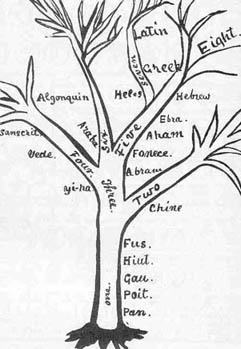
1. Pan, (of language) the first guttural sounds approximating words.
a) Poit, beginning of labial word-sounds.
b) Huit, first acquiesced language.
c) Fus, first written word-signs.
2. Chine, monosyllabic.
3. Yi'ha, combination words.
4. Vede
a) Sanskrit, mixture
b) Algonquin, after the sacred name E-Go-Quin.
5. Abram, first words; original text.
a) Fonece, following the sound, but not the signs. (writing)
b) Aham, amalgamation.
6. Araba (first Egyptian also) 'Teeth and thorax.'
7. Ebra, the old; the sacred
a) Helos
b) Greek
c) Latin
8. Hebrew
From One comes three
1) Chine - Chinese languages are Jaffethic
2) Araba - Semitic languages are Hamitic,
3) Yi'ha - Sanskrit and Algonquin are Shemitic. The two are alike, which
is indicated by similarities between Tibetan, Hopi and Zuni languages.
4) Abram - Indo-European languages are from Yi'ha (Shemitic)
[The tree implies that Hebrew is more related to European languages than semitic]
Thus, Chinese, Indian, American and European can be thought of as four branches of languages from one root [Chine, Yi'ha (Indian/American) and Abram (Phoneacian, Araba) ].
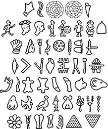
Proto-World language
A proto-language is a language which was the common ancestor of related
languages, or a system of communication during a stage in glottogony, that
form a language family.
The ancestral proto-language is reconstructed by comparing members of the
language family. Examples of unattested but (partially) reconstructed
proto-languages include Proto-Indo-European, Proto-Uralic and Proto-Bantu
- the ancestors of Indo-European, Uralic and Bantu languages,
respectively. The Proto-Norse language is attested in the Elder Futhark
runic inscriptions.
Proto-World language refers to the hypothetical, most recent common
ancestor of all the world's languages - an ancient proto-language from
which are derived all modern languages, all language families, and all
dead languages known from the past 6,000 years of recorded history.
Proto-World is theorized to have been spoken roughly 500,000 to 100,000
years ago, the time speculated by archaeogenetics for the phylogenetic
separation of the ancestors of all humans alive today. In such a scenario,
Proto-World would spread from a small population out to other human
populations long after they separated.
In 1903 the pioneering Danish linguist Holger Pedersen proposed "Nostratian", a proto-language for the proto-languages of the Semitic (later broadened into Afro-Asiatic), Indo-European, Uralic, Altaic and Eskimo-Aleut language families.
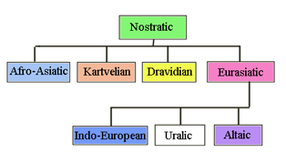
A representative grouping of Nostratic includes: The 3rd millennium BC (excluding the Anatolian branch) in Armenia
according to the Armenian hypothesis (proposed in the context of Glottalic
theory);
The 5th millennium BC (4th excluding the Anatolian branch) in the
Pontic-Caspian steppe according to the mainstream Kurgan hypothesis;
The 6th millennium BC in India according to Koenraad Elst's Out of India
model.
The 7th millennium BC in Anatolia (the 5th, in the Balkans, excluding the
Anatolian branch) according to Colin Renfrew's Anatolian hypothesis;
The 7th millennium BC (6th excluding the Anatolian branch) according to a
2003 glottochronological study before the 10th millennium BC, in the
Paleolithic Continuity Theory.
Proto-Indo-European as described in the early 1900s is still generally
accepted today; subsequent work is largely refinement and systematization,
as well as the incorporation of new information, notably the Anatolian and
Tocharian branches unknown in the 19th century.
There is no direct evidence of Proto-Indo-European, because it was never
written. All PIE sounds and words are reconstructed from later
Indo-European languages using the comparative method and the method of
internal reconstruction.
The proposal of a higher-level relationships encompassing PIE and Uralic.
The evidence usually cited in favor of this is the proximity of the
proposed Urheimaten of the two families, the typological similarity
between the two languages, and a number of apparent shared morphemes.
Other proposals, further back in time (and correspondingly less accepted),
model PIE as a branch of Indo-Uralic with a Caucasian substratum; link PIE
and Uralic with Altaic and certain other families in Asia, such as Korean,
Japanese, Chukotko-Kamchatkan and Eskimo-Aleut (representative proposals
are Nostratic and Joseph Greenberg's Eurasiatic); or link some or all of
these to Afro-Asiatic, Dravidian, etc., and ultimately to a single
Proto-World family (nowadays mostly associated with Merritt Ruhlen).
Various proposals, with varying levels of skepticism, also exist that join
some subset of the putative Eurasiatic language families and/or some of
the Caucasian language families, such as Uralo-Siberian, Ural-Altaic (once
widely accepted but now largely discredited), Proto-Pontic, and so on.
Theories and History about
Indo-Aryan Origins
Aryan is the archaic term for Indo-Iranian peoples (Indo-Aryan, Iranian,
Dardic and Nuristani peoples), that is, speakers of Indo-Iranian
languages.
Arya is a Sanskrit and Avestan word used by Zoroastrians, Hindus,
Buddhists and Jains. The word derives from Proto-Indo-Iranian, meaning
"noble" or "of good standing", and is the root of the modern word "Iran"
(land of the Aryas). It is related to the Indo-European concept of
"Aristocracy" and was used in the same context in Vedic tradition, as a
designation for moral and spiritual heroes. Later this term came to
signify anyone of good and noble character. Arya can be an adjective or a
noun depending on pronunciation meaning kind, favorable, or devoted,
master, respectable, honorable, noble, owner, a member of the three
highest varnas (castes), particularly a Vaisya.
The Amarakosha (a thesaurus of Sanskrit ca. 450 AD) defines 'arya' thus:
"An arya is one who hails from a noble family, of gentle behavior and
demeanor, good-natured and of righteous conduct. Arya refers to one's
standing in the varna system: an arya is a free man and not a member of a
lower caste or a slave. This social standing was not, however, necessarily
related to ethnic, linguistic, or racial identity. At an early period, the
cultural area where the varna system was used, along with the linguistic
area where Indic languages were spoken, would have been nearly the same.
This region (northern and central India; the Indus and Ganges plains) was
called Aryavarta, meaning "abode of the noble people". At present, these
cultural and linguistic spheres overlap but are quite distinct from each
other.
The Western interpretation of arya as the name of a particular race became
known in India in the 19th century and was generally accepted by Hindus
and Hindu nationalists, though combined with religious
self-identification. Vivekananda remarked: "...it is the Hindus who have
all along called themselves Aryas. Whether of pure or mixed blood, the
Hindus are Aryas; there it rests."
The interpretation of the Sanskrit words in Europe was influenced by words
in Avestan: airya and airyana meaning "nobly born" and "respectable", but
also "Iranian". Iranian refers to all the speakers of the Iranian
languages, at the time not yet differentiated from each other at the time
of the composition of the Zoroastrian Yashts texts, where Zarathustra is
described to have lived in Airyanem Vaejah meaning "expanse
of the Aryans". The word "Iran" (Eran) itself comes from
Proto-Iranian Aryanam "(land) of the Aryas (Iranian)". Airya was
distinguished from anairya, non-Iranian, and is clearly to be understood
as the name of a self-identified nation, ethnic group, or linguistic
group. The word and concept of Airyanem Vaejah is present in the name of
the country Iran (lit. Land of Aryans) which is a modern-Persian form of
the word "Aryana" (lit. Country of Aryans). The word "arya" in the modern
Persian language, also means "noble", "Aryan", or "Iranian"
The term Arya is often found in Hindu, Buddhist, and Jain texts. In the
Indian spiritual context it can be applied to Rishis or to someone who has
mastered the four noble truths and entered upon the spiritual path. The
religions of India are sometimes called collectively arya dharma, a term
that includes the religions that originated in India (e.g. Hinduism
(Sanatana Dharma), Buddhism, Jainism, Sikhism).
The term Arya is used 36 times in 34 hymns in the Rig Veda. "The
particular Vedic Aryans of the Rigveda were one section among these Purus,
who called themselves Bharatas." Thus it is possible that at one point
Arya did refer to a specific tribe.
In the Ramayana, the term Arya can also apply to Raksasas or to Ravana, if
their behaviour was "Aryan". In several instances, the Vanaras and
Raksasas called themselves Arya. The monkey king Surgriva is called an
Arya.
The Ramayana describes Rama as "Arya, who worked for the equality of all
and was dear to everyone." According to the Mahabharata, a person's
behaviour (not wealth or learning) determines if he can be called an Arya.
The terms Arya or Anarya are often applied to people according to their
behaviour. Dushasana, who tried to disrobe Draupadi in the Kaurava court,
is called an "Anarya". Vidura, the son of a Dasi born from Vyasa, was the
only person in the assembly whose behaviour is called "Arya", because he
was the only one who openly protested when Draupadi was being disrobed.
The Pandavas called themselves "Anarya" when they killed Drona through
deception.
According to Swami Vivekananda, "A child materially born is not an Aryan;
the child born in spirituality is an Aryan." He further elaborated,
referring to the Manu Smriti: "Says our great law-giver, Manu, giving the
definition of an Aryan, 'He is the Aryan, who is born through prayer'.
Every child not born through prayer is illegitimate, according to the
great law-giver: 'The child must be prayed for. Those children that come
with curses, that slip into the world, just in a moment of inadvertence,
because that could not be prevented - what can we expect of such progeny?'
The Pali word ariya (noble, exalted), is very frequently used in Buddhist
texts to designate a spiritual warrior or hero, which use this term much
more often than Hindu or Jain texts. Buddha's Dharma and Vinaya are the
ariyassa dhammavinayo. The four noble truths are called the catvary
aryasatyani (Sanskrit) or cattari ariyasaccani (Pali). The noble eightfold
path is called the aryamarga. Buddhists themselves are called
ariyapuggalas (Arya persons). In Buddhist texts, the aryas are those who
have the Buddhist sila (Pali sila, meaning "virtue") and follow the
Buddhist path. Those who despise Buddhism are often called "anaryas". In
Buddhism, those who spiritually attain to "stream entry" and better are
considered Arya Pudgala, or the Arya people.
In Chinese Buddhist texts, arya is translated as "sheng", while in
Japanese texts the term is translated as "sei". The Mahavibhasa states
that only the noble ones (aryas) realize all four of the four noble truths
and that only a noble wisdom understands them fully. It also describes the
aryas as the ones who "have understood and realized about the truth of
suffering, (impermanence, emptiness, and no-self [Anatta])" and who
"understand things as they are". In the Yogacarabhumi the aryas are
described as being free from the viparyasas (misconceptions).
Several Buddhist texts show that the "arya path" was taught to everybody,
including the aryas, Dasyus, Devas, Gandharvas and
Asuras. Buddha taught his Dharma to the Four Heavenly Kings of the four
directions. In this story, the guardians of the east and the south are
aryajatiya (aryas) who speak Sanskrit, while the guardians of the west and
the north are dasyujatiya (Dasyus) who speak Dasyu languages. In order to
teach his Dharma, Buddha has to deliver his discourse in Aryan and Dasyu
languages. Avalokitesvara taught the arya Dharma to the asuras, yakshas
and rakshasas.
Asia has been regarded as the cradle of the Aryans, from where they
spread over the whole surface of the inhabited earth. In 1808 Zend was
believed to be the mother of Sanskrit and the other Aryan languages; and
as it was spoken in Media it followed that the highlands of Media,
Armenia, and Georgia were the original home of the Aryans. The resemblance
found between Zend and Sanskrit was proof that the Iranians and Hindoos
were in ancient times one people with a common country, and that union
continued to exist long after the European Aryans had migrated westwards.
It was thought, in 1820, that an Avestan passage
which spoke of sixteen countries seemed to refer
to a migration from a more northerly and colder country. These sixteen
regions were taken to be stations in the migration of the Indo-Iranian
people from their original country, and it was thought that the track of
the migration could be followed back through Persis, Baktria, and Sogdiana
(see map) up to the first region created by Ormuzd,
which, accordingly, must have been situated in the interior highlands of
Asia, around the sources of the Jaxartes and Oxus. This part of Asia was
supposed to have had originally a warmer temperature, but Ahriman
destroyed it with frost and snow, and it became colder, wherefore the
inhabitants found it necessary to seek new homes in the West and South.
The Tadchiks, remnants of a people who today speak Iranian dialects, were
regarded as descendants of the original Aryan people who remained while
other parts of the same people migrated to Baktria or Persia and became
Iranians, or migrated down to Pendschab and became Hindus, or migrated to
Europe and became Celts, Greco-Italians, Teutons, and Slays. The highlands
of Central Asia were like a divider of Aryan folk-streams, which through
Baktria sought their way to the plains of Persia, through the mountain
passes of Hindukush to India, through the lands north of the Caspian Sea
to the extensive plains of modern Russia, and to Western Europe.
Zarathustrians or Zoroastrians, who claim to be the original
Indo-Europeans, believe that the writers of the Zend Avesta [and the Vedas
known in both those scriptures as Aryas (Aryans)] originated in the
mythical Airyana-vaejah [the Arctic, according to
B.G. Tilak's hypothesis, who placed the original Aryan homeland there
based on astronomical and textual evidence; others date this migration
differently]. Ahura Mazda, in three subsequent periods, bade Yima to lead
his overflowing tribes to migrate southwards and westwards,
on the " way of the sun".
Angra Mainyu caused an evil winter to fall on
Airyana-vaejah. The Arctic, formerly a Paradise, [the Arctic and
sub-Arctic regions were once temperate as evidenced by the fossil record]
became cold and inhabitable. Forewarned by Ahura Mazda, Yima led a further
successful migration towards the hospitable south.
Max Muller believed that they came from central Asia. Indian scholars
like B.G. Tilak think of the Arctic circle as the original home of Aryans
since the descriptions of sunrise given in the Vedas are too detailed and
beautiful to refer to the equatorial sunrise.
Some say for 20,000 years from the Upper Palaeolithic period to the
beginning of the Bronze Age (c. 3000 BC), Europe had a seemingly
matrifocal, pre-agrarian culture, sedentary and peaceful, extending from
the eastern shores of the Black and Mediterranean seas to the Aegean and
Adriatic seas. Then Indo-Europeans (6000-4000 BC.) spread both
agriculture, technology, and language to the existing population. [This is
the time that Ctusk inspired the Parsi'e'ans to
emigrate to Heleste (~5500-4200 BC).]
An Indo-Iranian homeland is said to have existed on the south Russian
steppes, east of the Volga around 5000-2000 BC. Gimbutas claims the
domestication of the Horse (4500-4000 BC) in the south Russian Volga
steppes and the first wave of Kurgans put an end to Old European culture
between 4300 (first wave) -2800 BC. The Kurgan/Steppe theory depicted the
Indo-Europeans as a chariot warrior aristocracy, with primarily a herding
economy from the area between the Don and Volga Rivers, on the steppes of
the Caucasus and the Carpathian Mountains.
In 3400 BC the second wave and in 3000 BC the third wave of Kurgan
migration began [coinciding with the control of Dyaus (3080-2000 BC), the
war of the Baghavad Gita at Kuruksetra (~3000 BC) under Sudga, development
of Major urban centres such as Uruk, Nippur, Susa, and Ur in the time of
the Sumerian ruler of Uruk, Gilgamesh, and Menes uniting Egypt].
The first Indo-European speakers entered central Europe about 2300 BC. In
2000 BC Indo-Aryans left the eastern Iranian steppes of ancient Sogdiana,
Chorasmia/Khorezmia, and Bactria, crossed the Caucasus Mountains
entered Armenia and spread southwards towards the Elburz [Alburz]
range (near Tehran, on the south end of the Caspian sea).
[The highest peak in the Caucasus is Mount Elbrus (5,642 m) which, in the
western Ciscaucasus (northern portion of the Caucasus) in Russia, is
considered the highest point in Europe.
The concept of a "Caucasian race" was first proposed by the German
scientist Johann Blumenbach (1752-1840). His studies based the
classification of the Caucasian race primarily on skull features, which
Blumenbach claimed were optimized by the Armenians and Georgians. The
reason the Caucasus had such an attraction to Blumenbach was because of
its proximity to Mount Ararat, which is the historical homeland of the
Armenians where according to the Biblical account, Noah's Ark, eventually
landed after the flood. Blumenbach believed that the original humans were
light-skinned, that the Caucasians had retained this whiteness as a
constant, and that darkness of skin was a sign of change from the
original. The tribe of Japheth was supposed to have originated in the
Caucasus, then spread north and westwards. The term Caucasoid
(Caucasian-like) also came into use to encompass a larger grouping of
populations with similar skull-shapes, including many North African, South
Asian and Middle Eastern peoples. In the USA Caucasian is used for a group
referred to as White Americans. In Europe, "Caucasian" refers exclusively
to people who are from the Caucasus. Note that Blumenbach's racial
typology has been rejected by modern genetics, which finds no basis for
discrete biological races corresponding to his categories.]
In 1600-1000 BC waves of Aryans entered Greece. [This coincides with the
wars of Baal and Astharoth]
The Kassites (1600-1160 BCE) [Elamites? of 3000 BC]
designated Godhead by the Indo-European term bugash (the Avestan baga,
Sanskrit bhaga, Slavic bogu and Phrygian bagaios). Surya was worshiped by
the Aryan Kings of Babylon, by the Kassites under the name Suryash (the
Sanskrit Surya) the sun, and in the Mitanni pantheon
as Shuwardatta.
The Hurrians formed the kingdom of Mitanni in 1480 BC. Tuthmosis III
defeated the Mitannis and conquered Syria in 1458 BC. In 1400 BC [after
the Exodus] the Mitannis conquered Assyria and reconquered Syria. In 1400
BC the Mitanni king Artatama and the Egyptian Pharaoh Tuthmosis IV signed
a peace treaty.
In 1339 BC Hittite ruler Suppiluliuma
conquered the Mitanni king Mattiwaza and in the treaty is listed among the
divine witnesses are Mitra-ash (Mithra), Uruwana (Varuna), Indra, and the
Nashatiyanu (Nasatya) gods.
A treatise that uses Sanskrit words was discovered in the Archives of the
Hittite capital Boghaz-Keui/Boghazkoy/Boghaz Koi in the north of modern
Turkey. Assyria destroyed the Mitanni empire in 1307 BC.
Excavations in El-Amarna in Egypt have yielded the fact that about the
middle of the 2nd millennium BC, Kings and Princes with typical Vedic
names were ruling in the region of modern day Syria. Some of the names are
Artamanya, Aryavirya, Yashodatta, Suttarna and Dushratta. Thutmose IV
married a daughter of Artatma the King of the Mitanni Kingdom in the Upper
Euphrates River area.
A letter addressed by Dushratta, Artatama's grandson, written to Akhnaton,
says that it was not until Thutmose asked seven times that King Artatma
agreed to his marriage proposal. [Tuthmosis IV 1419-1386, Amenhotep III
1386-1349, Amenhotep IV (Akhenaten) 1350-1334]
Amenhotep III married Tiy, daughter of Yuaa (a foreigner "from North
Syria") and of Tuau. During this time in Egyptian history, the ruling
aristocracy of Egypt, were of mixed Egyptian and Mitanni ancestry.
According to Akhnaton, Aton was both the male and female. He says to Aton,
"Father and Mother of all that You have made."
This parallels with the Vedic terms for the Sun, Savita,
(male) and Savitri (female) or the Sun and the Sun's energy [Soul and
"World" or Purusha and Prakriti].
The Hittite kingdom was founded in 1650 BC. They installed the Kassite dynasty in Babylon in 1590 BC. Abraham supposedly appears around c. 2000"“1800 BC (the precise dating is debated among scholars). The Elamites sacked Babylon and terminated the Kassite dynasty 1168 BC. Nebuchadnezzar I of Babylon defeated Elam in 1105 BC. Sargon II of Assyria destroyed the Hittites of Urartu in 717 BC.
https://en.wikipedia.org/wiki/Ugarit
A Note about Conventional Chronology
Immanuel Velikovsky made the public aware that Egypt's ancient chronology
is badly wrong. As a result, the pharaohs of the 18th Dynasty [1570-1293]
are made too ancient by around 500 years. Egyptian artefacts, which were
found in many places outside Egypt, were used to date the archaeology of
other countries around the Mediterranean that had no ancient records of
their own.
Herodotus's chronology implied that the great pyramids of Giza were built
after Middle Kingdom [12th dynasty, 1991-1782].
In the early third century, Jewish history was brought to Egypt under the
Ptolemys, and translated into Greek as the Septuagint. Manetho, a priest
and scribe of Heliopolis at the time of Ptolemy Philadelphus (285-247),
composed accounts (now lost) of the history (contradicting Herodotus in
many places).
Josephus (c80AD) revealed many of Manetho's errors. Epitomes of Manetho's
king lists by two Christian chronologists, Africanus c220AD and Eusebius
c320AD, have also survived.
Syncellus from Constantinople c800AD is our main surviving source for
Manetho's works, although he tells us nothing of his source materials. He
is also the sole source of a work he attributes to Manetho called 'The
Book of Sothis' which gives a list of Egyptian kings, with annotations
linking Egyptian and Jewish historical events. It gives names in an order
that is non-chronological. It would be wrong to assume that the early
historians such as Manetho, Eusebius, Africanus, Josephus and Syncellus
actually knew Egypt's true early history any better than the version told
to Herodotus.
Sir Isaac Newton showed that ancient history had been made many centuries
too ancient. A devout Christian, but a fearless Biblical critic, he
uncovered many discrepancies in and between the King James, Masoretic,
Samaritan, and Septuagint versions, and derived 'proofs' based on
astronomy to fix a few key dates. From a synthesis of literary evidence,
he then recast ancient history. He was the first revisionist to use the
precession of the zodiac signs for retrocalculating dates.
By the end of the 19th century, many historians had suggested that the
mono-idolistic cult of Akhenaten was a result of a Hebrew influence.
Freud, a collector of Egyptian antiquities wrote in 1939 'Moses and
Monotheism' in which he linked Moses and Akhenaten. Immanuel Velikovsky, a
psychiatrist, was intrigued by Freud's book. In 1952 'Ages in Chaos',
ignited a public debate on ancient chronology.
According to Revisionists, archaeologists artificially increased the age
of lower strata in order to meet the expectations of excessive antiquity
among historians. Using this elongated time frame, great empires of the
past such as the Sumerians, Akkadians and Old Babylonians were invented by
late 19th C and early 20th C scholars to fill the historical voids. The
ancient Greek and Roman historians knew nothing of these ancient peoples.
Heinsohn showed that the Bronze Age started in China and Mesoamerica some
1500 years later than in the Near East. He cited the Indus Valley where
the civilisations, dated from Mesopotamian seals of 2400BC, sit right
underneath the Buddhist strata of 7-6th Century. Thus some sites only
about 30km apart have chronologies some 1500 years apart. But in the same
strata, supposedly 1500 years apart, they frequently find the same
pottery.
Heinsohn set out many chronological problems and argued for equating the
Mittani with the Medes and the Hittites with the Late Chaldeans. He said
Sumerian is the language of the well known Kassite/Chaldeans.
From the Society for Interdisciplinary Studies, "Ancient Chronology"
A Note about the Westward Drive of Shem
From 'Teutonic Mythology' [1887]
"The race which was to found the European nations, has, like the sun,
wended its way from east to west. A mystic harmony was found to exist
between the apparent course of the sun and the migrations of people. The
minds of the people dwelling in Central and Eastern Asia seemed to be
imbued with a strange instinctive yearning.
The Aryan folk-streams into Europe, were the forerunners of the Teutonic
migrations. The Europeans themselves are led by this same instinct to
follow the course of the sun: they flow in great numbers to America, and
these folk-billows break against each other on the coasts of the Pacific
Ocean."
http://www.boudicca.de/teut.htm
From Of Hindoo Scriptures Chapter III:
The tribes of Ham were characterised by their westward migration.
From The Book of Wars, Chapter XXI:
In olden times the Gods had inspired the Parsi'e'ans to migrate toward the
west and inhabit the lands of Heleste, [Balkans, Georgia, Armenia etc,
becoming the Hittites and later the Philistines etc] and they carried with
them three languages: the Panic, of Jaffeth; the
Vedic, of Vind'yu, and the Parsi'e'an.
From The first Fonecean Bible in Oahspe:
Out of the hosts of Parsi'e, who were of the people of Shem,
who were since the days of the flood, came Abram. God led Abram away from
He-sa, his native place. These, then, are the generations of the line
whence came Abram, that is to say:
Of Shem and the seventy tribes, first going forth beyond the mountains of
Owatchab-habal, Tur who settled in Parsi'e, and his descendants Goe, and
his descendants Wawa, and his descendants Sadr.
Genesis 15:7 says:
"I am the LORD that brought thee out of Ur of the Chaldees, to give thee
(Abraham) this land to inherit it."
In Genesis 28 Isaac gave the blessing of Abraham to Jacob and his seed,
that he may inherit the land "which
God gave unto Abraham".
From The first Fonecean Bible Ch.XII:
In the Book of Cpenta-armij, Ch. XI, the light that extended from the
Father's throne down to the delivered hosts of Abram and moved westward as
they migrated was as an inheritance
of Jehovih's light.
When Abraham asked concerning lands. God said: "I led thee to that which
was neglected and waste in the eyes of the kings' peoples, and I said:
This is thy inheritance. Sufficient is it for thee and thy people to buy
burying-places for the dead, which shall not be disturbed. But of all
other lands, neither buy nor sell. And after thy people have improved a
place, and a king cometh against thee, saying: Either by purchase or by
battle, I will have this land; thou shalt say: Nay, neither by purchase
nor by battle, shalt thou inherit that which is Jehovih's. But if thou
desirest the land, then will I give it thee without money and without
battle.
And it shall come to pass upon my chosen that they shall be driven from
place to place, whither I will lead them; and they shall make the waste
lands to bloom like gardens, and the deserts to yield ample harvests; for
they shall dig wells, and till the soil, and prove unto the nations of the
earth the glory of thy works."
[So the land of Israel was not given as a possession, but something that
would be relinquished if circumstance demanded.
There is a majority of Jews today who would think otherwise. Nevertheless
amongst this fanatical, zealot, military framework are those who "dig
wells, and till the soil". Around them rages a forboding apocalypse that
forever keeps them God-fearing. It's unclear to me if this is God's plan
for the Jews, or an aberration of it.]
From the Book of Lika Ch.X:
The heirs of Moses were lead westward until they circumscribed the earth
and completed it by the time of Kosmon.
From God's Book of Eskra Ch.L:
From the time of Joshu's death, in Jerusalem, the Faithists in Arabin'ya
[Egypt and Palestine], Heleste [perhaps Greece and Turkey, Armenia, Syria
and Crimea etc.] and Uropa [Eastern Europe] who called themselves
Israelites and Jews, and many being apostates, eating flesh, and marrying
with other peoples, began to migrate, mostly toward the west.
After the fall of the Egyptian empire her people
migrated westward, hundreds of thousands of them, and they settled in
western Uropa, where these people married with the aborigines. Their
offspring were called Druids, Picts, Gales (Gaelic), Wales (Welsh), Galls
(Gauls), and Yohans (Johns), all of which are
Eguptian names, preserved to this day.
Now, when the Faithists were moved by the inspiration of God to have no
more kings, and to flee away from the Kriste'yan warriors, they came
amongst the people above mentioned. (The apostate Faithists married with
them, and their offspring were the forefathers of those now called,
French, German, Russian and English.)
God, Son of Jehovih, had said: Suffer the apostates to so marry, for here
will I find a way to raise up disbelievers in the false Kriste; and they
shall ultimately become believers in Jehovih only.
For, inasmuch as I have suffered them to become scattered, so will I
appropriate them as seed to quicken all the races of men to comprehend the
All One.
Celts may have inhabited northern France and western Germany in 1200 BC, though it is generally said that Celts emerged in South Central Europe and the British islands in about 500 BC and they settled in Ireland 300 BC. Clans of Britons, Angles, Celts, Picts, Scots, Saxons, Jutes existed in Britain after the fall of the Roman empire. (410 AD).
[The reference to the fall of the Egyptian empire may be:
1) the time of Exodus (~1500 BC)
2) when the Assyrians captured Memphis (671 BC)
3) when the Persians conquered Egypt (525 BC)
4) 332 BC, when Alexander conquered Egypt
The time when Egypt became a province of the Roman empire after
Cleopatra's suicide (30 BC) is too late.
It's possible that a wave of migrants fled Egypt on any of these
occasions.
From Book of God's Word Ch.VI:
The Lord said to Zarathustra: Behold the people who fly from the kings! I
have made them kings over goats and over the beasts of the fields. And
from this time forth the Listians styled themselves shepherd kings.
When Zarathustra was half grown, the Lord began to manifest through him,
giving signs and miracles and prophecy before the Listians who lived in
the Forest of Goats. This forest was of the width in every direction, save
the east, of forty days' journey for a man, and in all that region there
were no houses, the inhabitants living in tents made of bark and skins.
The Lord inspired Zarathustra to teach them to build houses, and tame the
goats, and to live in cities, and otherwise subdue the earth through
righteousness; the chief centre of their habitations being on the river
Apherteon and its tributaries. And it was from these inhabitants that
sprang in after years the migrants called Fonece'ans,
signifying, out of the mountains.
The Listians or Shepherd Kings known as Hyksos in the Egyptian records
were the Phoenicians, the Parsi'es (Sumerians, Persians, Medes etc) of the
people of Shem, who through Abraham became associated with the tribe of
Ham.
[The Akkadians called their predecessors Shukmerians, and spoke of the
Land of Shumer. Sitchin said it was the biblical Land of Shin'ar whose
name - Shumer - meant the Land of the Watchers
(Ta Neter) to the ancient Egyptians, the land from which the gods had come
to Egypt.]
So the great westward journey, centering on the 35 degree north latitude, started in Northern Afghanistan/Pakistan/Kashmir with the Shepherd Kings and Parsi'e'ans united with Ham and continued to Spain, USA and now Japan, China and the focus is back on Afghanistan/Pakistan/Kashmir where a world crisis now looms.
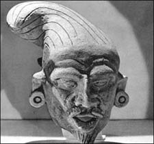
The 17th century orientalist Edward Pococke wrote:
"the Cashmirians and the people of Balk sprang from Leda - or Ladakh"
Ashkenazi, a Scythian group gave the world Guatama Buddha.
The history of the Scythians began in the Khyber Mountain region of
Afghanistan and Pakistan.
In 1904, Jogendra Mohon Gupta, wrote that the Phoenicians were the fathers
of all world civilisations:
"The Phoenicians held their own civilisation to be the most ancient and declared it to be thirty thousand years old. There is however no doubt that they were one of the first civilised nations of the world, if not the first, and that Phoenicia was not their first home. The Panis or Panih of the Rig Veda were the same people as the ancient Phoenicians of Afghanistan."
Budha's heavenly kingdom "Celonia" over Egupt mentioned in Oahspe and the connection of Phœnician cosmogony with the Buddhic school makes the following less nonsensical, since a large population of Jews lived in Alexandria.
The Cabeiri are the Khyberi, or people of the Khyber. They are the Khebrew-i, or Hebrews. We have, in the Cabeiri, the representatives of a form of Bud-histic worship and Bud'histic chiefs, extending from the Logurh district (Locri) to Cashmir, the object of worship of the Hya (Yah), and the Phoenician race, for they are but one. They are the Khebrew-i, or Hebrews ... The tribe of Yudah/Yuddhi (Judah) is in fact the very Yadu (Yadava)
He alleges that the pious "Hyperboreans" of ancient Greek writers are the Hebrews, and the northern limits of Afghanistan is the starting point of these two great families of language, and consequently of nations. "The Afghans have claimed descent from the Jews, or Ioudaioi (Youdai-oi); the reverse is the case. The Haibrews or Khaibrews, are descended from the Yadoos. In that very land of the Yadoos, or Afghans - Dan and Gad, still remain of the feeble remnants of Jewish antiquity"
From "http://www.viewzone.com/phoenician.html"
Question continues
"As to Zarathustra (the first), he did indeed teach something similar
to that taught by the Hindus as described. Check Ahura'Mazda in Oahspe's
Saphah (p644 in Blue Oahspe and in little Green; p662 in big Green
Oahspe): Descended by the Yi-ha light through mortals ... revealed from
Zarathustra ... then by Buddha and Brahma ... || Also the remainder of
the Segments in Saphah dealing with the subject including Ahura'Mazda
and Earthly History of the Faithists of the East cast more light."
Of the line in "Earthly History of the Faithists of the East cast more light" (in Oahspe)
Mine have no Gods but Me.
Mine have no idols nor images of Me.
Mine bow down not before idols.
Mine covenant in My name secretly.
Mine remember the four sacred days of the moon.
Mine honor their parents.
Mine kill nothing I have made alive.
Mine commit not adultery.
Mine steal not, nor tell lies; nor covet anything.
Mine return good unto all men.
it's my opinion that although Brahman can be personal (when regarded as the Self) or impersonal, and the false Gods and idols (such as Krishna, Vishnu, Devi) can be conceived of or worded to satisfy Jehovih, only few individuals are unfettered by idolism. Bigotry, fanaticism, cruelty and hypocrisy lurk behind the mask of self-righteousness.
Gods and Goddesses of Dawn
After Fragapatti established
Mouru , council chamber and capital of Haraiti, he appointed High
Council of the first house of Mouru, among them:
Airyama, God of Kruse;
Gatha-Ahunavaiti, Goddess of Halonij;
Haptanhaiti, God of Samatras;
Yima, God of Aom;
Sudhga, God of Laka;
Dews, Goddess of Vaerethagna;
Ustavaiti, Goddess of Maha-Meru;
Cpentas, God of Butts; Vairyo, God of Nuga-gala;
D'Zoata and her brother, Zaota, God and Goddess of Atarevasksha;
Yatha, God of Ameshas,
Fragapatti proclaimed Yima, Lord God of the heavens of Shem, resting
upon the earth. Because mortals discovered that prophecy could come from
the spirits of the dead, they ceased to perfect themselves, and they grew
up in idleness. Osiris walled them apart, so that there was no communion
betwixt the two worlds. But mortals confounded judgments and perverted
laws of Jehovih. Wisdom ran in a thousand roadways. There was no
uniformity between any of them. Yima pursued a mean betwixt the two. He
allowed certain spirits to return to mortals, and permitting certain
mortals to attain su'is and sar'gis, and to see and commune with spirits.
But provided them in judgment, making the process of inter-communion a
secret amongst mortals. Through Zarathustra, Yima established temples
where Lords communed with rab'bahs, who were called God-irs to whom alone,
with their sub-priests, the communion betwixt spirits and mortals was
known. Mortals were left to believe that they attained to spirit communion
by great purity and wisdom. The manifestation of drujas to mortals became
a mark of evil against truth.
Yima gave protection and miracles to Zarathustra, and became controller
over mortals, to the end that they become Faithists in Jehovih and His
dominion.
Yima appointed Lords unto Shem who became as the roots to the tree of
heaven.
The Aoshoan Lords included:
Yaztas, Hom
The Thestasias Lords included: Amesh and Amesha; Armait.
The general Lords were called Ashem, with voice; that is to say, Ashem-vohu,
Yima made twenty-five Lords controllers of the Voice, with mortals, to
take the place of Samati after the death and ascension of Zarathustra, for
which reason they were called the Ashem-vohu.
Lords in chief, given for the kingdoms of the Sun, in the land of Shem
included:
Shahkya, Thraetem, Hakdodt,
Maidoyeshemo, Zartushta, and Cpitama.
[It is strange that the Zoroastrian name for Zarathustra seems to come from these last Lords ie. Zartosht Spitama. Similarly it is strange that {amesha, cpentas} [who are Gods of the United Hosts of Heaven] forms the word Amesha Spentas and {Zaothra and Barecma} are ritual objects, but in the Oahspe they appear next to each as names of Lords of the Hosts in Heaven, suggesting an alteration or mixup on someones part.
Zarathustra
And the child's mother's name was Too'che [the virgin mother],
and the father's name Lo'ab. Too'che was su'is born herself, and was by
Sa'moan, an angel, obsessed before she conceived, and during the time of
maternity not suffered to wake from her unconscious trance. Thus, the
child was born of All Light, and in that same day the obsession fled,
and Too'che proclaimed within the city that no man was father to the
child, but that she conceived from All Light, believing, because
unconscious in gestation.
Lords of farmers and herdsmen
The Lords of farmers and herdsmen under Yima were: Gaomah [Gaya Maretan/Gayo-maretan/Gayomard],
Hoshag, Tamur,
Jamshed [known as Yima in the Avestan
literature], Freden,
Minochihr-bani and Hus.
The Lords of time keeping, who had dominion of the change of watch,
were:
Copurasastras, Vaitimohu and Howitchwak.
[In Saphah Gah is "the change of the watch of the Gods." In the Avestan
texts the Gahs are prayers for each period of the day.]
From the AOGEMADAECA/Aogemaidê (meaning "we accept")
(Part of the Avesta Fragments)
85. For if there were or could be any escape from death, the first of
the world, Gayomard, king of the
Mountain, [would have escaped],
88. Or there was Hoshang, the
Peshdadian,
89. Who destroyed two-thirds of all the evil creatures of Ahriman;
91. Or there was Tahmuraf, the
well-armed, the son of Vivanghat,
94. Or there was Jim, the Shed, the
good shepherd, the son of Vivanghat;
(he was Shed, that is to say, shining; he was a good shepherd, that is
to say, he kept in good condition troops of men and herds of animals);
95. Who, for 616 years, 6 months and 13 days, kept this world free from
death and old age, and kept away greed and need from the creation of
Ohrmazd;
96. Yet, when death came over him, he delivered up his body and could
not struggle with death.
100. Or there was Fredun, the
Athwyan. Who smote and bound Azi Dahak, that great evil-doer;
From The Bundahishn (Creation), or Knowledge from the
Zand Ch 31.
On the race and offspring of the Kayans
Hooshang was son of Fravak, son
of Siyamak, son of Mashye (Adam),
son of Gayomard. Tahmurasp
was son of Vivangha, son of
Yanghad, son of Hooshang.
Yim [Jamshed], Tahmurasp, Spitur,
and Narsih, whom they also call 'the Rashnu of Chino,' were all
brothers.
From Yim [Jamshed] and Yimak, who was his sister, was born a pair, man
and woman, and they became husband and wife together; Mirak the Aspiyan
and Ziyanak Zardahim were their names and the lineage went on. 5. Spitur
was he who, with Dahak [Zohak], cut up Yim [Jamshed].
Dahak [Zohak] was son of Khrutasp,
son of Zainigav, son of Virafsang, son of Tazh, son of Fravak son of
Siyamak; by his mother Dahak [Zohak] was of Udai, son of Bayak, son of
Tambayak, son of Owokhm, son of Pairi-urvaesm, son of Gadhwithw, son of
Drujaskan, son of the evil spirit.
Faridoon the Aspiyan was son of
Pur-tora the Aspiyan, son of Sok-tora the Aspiyan, son of Bortora the
Aspiyan, son of Siyak-tora- the Aspiyan, son of Sped-tora the Aspiyan,
son of Gefar-tora the Aspiyan, son of Ramak-tora the Aspiyan, son of
Vanfragheshn the Aspiyan, son of Yim [Jamshed], son of Vivangha;
as these, apart from the Aspiyan Purtora, were ten generations, they
every one lived a hundred years, which becomes one thousand years; those
thousand years were the evil reign of Dahak [Zohak].
8. By the Aspiyan Pur-tora was begotten Faridoon, who exacted vengeance
for Yim [Jamshed]; together with him also were the sons Barmayun and
Katayun, but Faridoon was fuller of glory than they.
By Faridoon three sons were begotten, Salm and Tuj and Airik; and by
Airik one son and one pair were begotten; the names of the couple of
sons were Vanidar and Anastokh, and the name of the daughter was Guzhak.
10. Salm and Tuj slew them all, Airik and his happy sons, but Faridoon
kept the daughter in concealment, and from that daughter a daughter was
born; they became aware of it, and the mother was slain by them. 11.
Faridoon provided for the daughter, also in concealment, for ten
generations, when Manush-i Khurshed-vinik was born from his mother, [so
called because, as he was born, some of] the light of the sun
(khwarshed) fell upon his nose (vinik).
From Manush-i Khurshed-vinik and his sister was Manush-khurnar, and from
Manush-khurnar [and his sister] was Manuschihar
[Minochihr-bani] born.
..... By Kavad was Kay Apiveh begotten; by Kay Apiveh were Kay Arsh, Kay
Vyarsh, Kay Pisan, and Kay Kaus
begotten; by Kay Kaus was Siyavakhsh begotten; by Siyavakhsh was Kay
Khosraw begotten. 26. Kersasp and Aurvakhsh were both brothers. 27.
Athrat was son of Sahm, son of Turak, son of Spaenyasp, son of
Duroshasp, son of Tuj, son of Faridoon. 28. Lohrasp was son of Auzav,
son of Manush, son of Kay Pisin, son of Kay Apiveh, son of Kay Kobad.
29. By Kay Lohrasp were Vishtasp,
Zarir, and other brothers begotten; by Vishtasp were Spend-dad
and Peshotan begotten; and by Spend-dad were Vohuman,
Ataro-tarsah, Mitro-tarsah, and others begotten.
From The Bundahishn Ch 34.
On the reckoning of the years.
Time was for twelve thousand years; and it says in revelation, that
three thousand years was the duration of the spiritual state, where the
creatures were unthinking, unmoving, and intangible; and three thousand
years was the duration of Gayomard,
with the ox, in the world.
As this was six thousand years the series of millennium reigns of
Cancer, Leo, and Virgo had elapsed, because it was six thousand years
when the millennium reign came to Libra, the adversary rushed in, and
Gayomard lived thirty years in tribulation. 3. After the thirty years
Mashye and Mashyane (Adam and Eve)
grew up; it was fifty years while they were not wife and husband, and
they were ninety-three years together as wife and husband till the time
when Hooshang came.
Hooshang was forty years, Tahmurasp
thirty years, Yim [Jamshed] till his glory departed six hundred and
sixteen years and six months, and after that he was a hundred years in
concealment.
Then the millennium reign came to Scorpio, and Dahak
[Azi Dahaka/Zohak the Serpent-King,
Ctusk, or the false Ahura?] ruled a thousand years.
[The name of Astyages, the son of Cyaxares,
the last king of Media (585 BCE-550 BCE), who was dethroned in 550 BCE by
Cyrus the Great, is Ishtovigu in Persian, is spelled as Astyages by
Herodotos; as Astyigas by Ctesias, as Aspadas by Diodorus; is Ištumegu in
Akkadian, Rishti Vega Azhi Dahâk in Median, Azhdahak
in Armenian, and Azh Dahâk in
Kurdish. This association with evil may be due to the practices
of his time.]
After the millennium reign came to Sagittarius, Faridoon
reigned five hundred years; in the same five hundred years of Faridoon
were the twelve years of Airik, Manuschihar
was a hundred and twenty years, and in the same reign of Manuschihar,
when he was in the mountain fastness (dushkhvar-gar), were the twelve
years of Frasiyav; Zob the Tuhmaspian was five years.
Kay Kobad was fifteen years; Kay Kaus, till he went
to the sky, seventy-five years, and seventy-five years after that,
altogether a hundred and fifty years; Kay Khosraw sixty years; Kay
Lohrasp a hundred and twenty years; Kay Vishtasp,
till the coming of the religion, thirty years, altogether a hundred and
twenty years.
Vohuman son of Spend-dad a hundred and twelve years; Humai, who was
daughter of Vohuman, thirty years; Darai [Darius I]
son of Chihar-azhad, that is, of the daughter of Vohuman, twelve years;
Darai son of Darai fourteen years; Alexander the Ruman fourteen years
[Iskander the Rûmi or Alexander the Great].
The Ashkanians bore the title in an uninterrupted (a-arubak)
sovereignty two hundred and eighty-four years, Ardashir son of Papak and
the number of the Sasanians four hundred and sixty years, and then it
went to the Arabs.
From the DENKARD
29. Exposition in the good religion regarding the origin of the formation
of the peoples (living) on the outskirts of Iran.
Know that the formation also of the religion and customs of the people
of the borders, whose original country was Iran, is (derived) from the
original religion and faith of their Iranian ancestors. For, the power
they have attained is owing to the Iranian religion; and those who have
become lords of the world are (descended) from Hooshang,
Tahmurasp, Jamshed,
Faridoon; Erach, and other Iranians.
Again, a check should be given to the advancing strength and the attack
of the "Yahud" [Jewish] religion of Rum and "the Masahiya" [Messiah, ie.
Christian] religion of Khavar, and the "Mani" religion [Manichaeism] of
Turkestan, lest their wickedness and degradation should enter into (our)
co-religionist friends and the purity of our religion, which is older
than that of Rum, should be dimmed.
Sivananda tells us Mazdayasnism was first revealed by Homa to King Jamshid. Afterwards it was revealed to King Fiedoon. Then it was revealed to Thirta [Thrita? or Hirto?]. Lastly it was revealed to Zoroaster.
From the KHANDOGYA-UPANISHAD
Part 3, 5th PRAPATHAKA, 19th KHANDA
Therefore the first food which a man may take, is in the place of
Homa. And he who offers that first oblation, should offer it to Prana
(up-breathing), saying Svaha. Then Prana is satisfied,
If Prana is satisfied, the eye is satisfied, if the eye is satisfied,
the sun is satisfied, if the sun is satisfied, heaven is satisfied, if
heaven is satisfied, whatever is under heaven and under the sun is
satisfied.. And through their satisfaction he (the sacrificer or eater)
himself is satisfied with offspring, cattle, health, brightness, and
Vedic splendour.
Yima/Jamshid
The legendary Shah Jamshed was the fourth and greatest of the early Shahs
of mankind in Firdausi's Shahnama. The name has also been transliterated
Jamshyd, e.g. in the Rubaiyat of Omar Khayyam [a collection of poems
attributed to the Persian mathematician and astronomer Omar Khayyam
(1048-1131 CE). Rubaiyat means "quatrains": verses of four lines].
Shah Jamshed is based on the figure Yima Xsaeta of the Avesta. Yima Xsaeta
is in turn is based on a proto-Indo-Iranian heroic figure Yamas, from whom
Vedic Yama also derives. In the Avesta, Yima was the son of Vivashat, who
in turn corresponds to the Vedic Vivasvat, "he who shines
out", a divinity of the Sun.
The name Jamshid is originally a compound of two parts, Jam and shid,
corresponding to the Avestan names Yima and Xsaeta, derived from the
proto-Iranian Yamah Xšaitah. Yamah and the related Sanskrit Yama may be
interpreted as "the twin". It became Persian Jam. In later Persian, the
word jam means "pure".
Xšaitah meant "bright, shining" or "radiant". By regular sound changes
xšaitah became Persian 'shed'. The suffix -shid is the same as that found
in other names such as khorshid ("the Sun", originally "the radiant Sun",
Avestan hvare-xsaeta). Over time, the Avestan hero Yima Xšaeta became the
world-ruling Shah Jamshid of Persian legend and mythology.
Jamshid had command over all the angels and demons of the world, and was
both king and high priest of Hormozd. He was responsible for a great many
inventions that made life more secure for his people: the manufacture of
armor and weapons, the weaving and dying of clothes of linen, silk and
wool, the building of houses of brick, the mining of jewels and precious
metals, the making of perfumes and wine, the navigation of the waters of
the world in sailing ships. Jamshid also divided the people into four
groups: the priests, warriors, farmers, artisans. Jamshid had now become
the greatest monarch the world had ever known. He was endowed with the
royal farr (Avestan hvar?na), a radiant splendor that burned about him by
divine favor. One day he sat upon a jewel-studded throne and the
divs/deevs [in this case demons] who served him raised his throne up into
the air and he flew through the sky. His subjects, all the peoples of the
world, marvelled and praised him. On this day, which was the first of the
month of Farvardin, they first celebrated the holiday of Nawroz ("New
Day"). Some Zoroastrians to this day call the day Jamshed-i
Nawroz.
Jamshid was said to have had a magical seven-ringed cup, the Jam-e Jam
which was filled with the elixir of immortality and allowed him to observe
the universe. Jamshid's capital was erroneously believed to be at the site
of the ruins of Persepolis, which for centuries (down to 1620 CE) was
called Takht-i Jamshed, the "Throne of Jamshid". However, Persepolis was
actually the capital of the Achaemenid kings and was destroyed by
Alexander.
Thraetaona/Faridoon
In comparing the Avesta legends above with the Oahspe, Thraetem was a Lord
of Shem serving Yima in the time of Zarathustra, and
Freden/Fredon/Faridoon was one of the Lords of farmers and herdsmen under
Yima. There is a distinction between Thraetem and Thraetaona,
the latter seems to be a holy name, not a historical being. Thrita
is distinct from the two. If this is so, the following is in error.
Fereydun, also pronounced Faridun, in medieval Persian Firedun, Middle
Persian Fredon, and Avestan Thraetaona is the name of an Iranian mythical
king and hero who is an emblem of victory, justice and generosity in the
Persian literature. All of the forms of the name derive, by regular sound
laws, from Proto-Iranian Thraitaunah and Proto-Indo-Iranian Traitaunas.
Traitaunas is a derivative of Tritas, the name of a deity or hero
reflected in the Vedic Trita and the Avestan Thrita.
Both names are identical to the adjective meaning "the third", a term used
of a minor deity associated with two other deities to form a triad. In the
Indian Vedas, Trita is associated with gods of thunder and wind. Trita is
also called Aptya, a name that is probably cognate with Athwiya, the name
of Thraetaona's father in the Avesta. Traitaunas may therefore be
interpreted as "the great son of the deity Tritas".
The Avesta identifies the person who finally disposed of Aži Dahaka as
Traetaona/Fredon. Originally he may have been recorded as the killer of
the dragon Aži Dahaka. The Avesta has little to say about the nature of
thraetaona's defeat of Aži Dahaka, other than that it enabled him to
liberate the two most beautiful women in the world. Later sources,
especially the Denkard, provide more detail. Fredon is said to have been
endowed with the divine radiance of kings (xvarrah, modern Persian farr)
from birth, and was able to defeat Dahag/Zahhak at the age of nine,
striking him on shoulder, heart and skull with a mace and giving him three
wounds with a sword. However, when he did so, vermin (snakes, insects and
the like) emerged from the wounds, and Ormazd told him not to kill Dahag,
lest the world become infested with these creatures.
Instead, Fredon bound Zohak in a cave underneath the mythical Mt. Damavand
(later identified with Damavand, one of the high mountains of the Alborz
chain) with chains tied to great nails fixed into the walls of the cavern
where he will remain until the end of the world.
[The Oahspe equivalent of Damavand seems to be the
four evil corners of the VARENA, where Aži Dahaka/Zohak/serpent/evil is
bound, over whom the name Thraetaono has power.]
Afterwards Fereydun became the king and according to the myth, ruled the
country for about 500 years. At the end of his life he allocated his
kingdom to his three sons; Salm, Tur, and Iraj. Iraj was Fereydun's
youngest and favored son and inherited the best part of the kingdom namely
Iran. Salm inherited Asia Minor ("Rum", more generally meaning the Roman
Empire, the Greco-Roman world, or just "the West") and Tur inherited
Central Asia ("Turan", all the lands north and east of the Oxus, as far as
China), respectively. This aroused Iraj's brothers' envy and encouraged
them to murder him. After Iraj's murder, Fereydun enthroned Iraj's
grandson, Manuchehr, before his decease. Manuchehr's attempt to revenge
his grandfather's murder initiates the Iranian-Turanian wars.
Zahhak or Zohhak (in Persian) is a figure of Persian mythology, evident
in ancient Iranian folklore as Aži Dahaka, the name by which he also
appears in the texts of the Avesta. In Middle Persian he is called Dahag
or Bevar-Asp, the latter meaning "he who has 10,000 horses". Aži is the
Avestan word for "serpent" or "dragon". It is cognate to the Vedic
Sanskrit word ahi, "snake", and without a sinister implication. In Persian
mythology, Dahaka is treated as a proper name. Aži Dahaka is the source of
the modern Persian word azhdaha or ezhdeha (Middle Persian azdahag)
meaning "dragon", often used of a dragon depicted upon a banner of war. In
Vedic tradition, the only dragon of importance is Vritra, but "there is no
Iranian tradition of a dragon such as Indian Vrtra, who guards the cosmic
waters and is defeated by the gods themselves." Vedic tradition has only
one other dragon besides Vrtra - ahi budhnya, the benevolent 'dragon of
the deep'.
Aži Dahaka is described as a monster with three mouths, six eyes, and
three heads (presumably meaning three heads with one mouth and two eyes
each), cunning, strong and demonic. But in other respects Aži Dahaka has
human qualities, and is never a mere animal. In a post-Avestan Zoroastrian
text, the Denkard, Aži Dahaka is identified as an Arab, and as the source
of the writings of Judaism (in this context identified as a religion
opposed to Zoroastrianism).
The Story of Zohak the Serpent King
The following is an extract from "The Epic of Kings" (the Shahnameh) by
the poet Ferdowsi, written 1010 AD. There are parallels with the Book of
Daniel, and the story of Zarathustra. In "The Ultimate Encyclopedia of
Mythology" it said:
Zohak had a terrifying dream ... He ordered all the children to be put to
death (as did So-qi, king of Oas in Zarathustra's time, and Herod), but
the baby Feridun (like Zarathustra) survived. I have not found this
repeated anywhere else.
[The Shahnameh extract follows — Kaiumers through Feridoun binding Zohak to Mount Demawend — text unchanged as it is a literary quotation.]
http://classics.mit.edu/Ferdowsi/kings.1.shahsold.html
The Story of Zohak the Serpent King
The following is an extract from "The Epic of Kings" (the Shahnameh) by
the poet Ferdowsi, written 1010 AD. There are parallels with the Book of
Daniel, and the story of Zarathustra. In "The Ultimate Encyclopedia of
Mythology" it said:
Zohak had a terrifying dream ... He ordered all the children to be put to
death (as did So-qi, king of Oas in Zarathustra's time, and Herod), but
the baby Feridun (like Zarathustra) survived. I have not found this
repeated anywhere else.
Kaiumers first sat upon the throne of Persia, and was master of the
world. He took up his abode in the mountains, and clad himself and his
people in tiger-skins, and from him sprang all kindly nurture and the arts
of clothing, till then unknown. Men and beasts from all parts of the earth
came to do him homage and receive laws at his hands, and his glory was
like to the sun. Then Ahriman the Evil, when he saw how the Shah's honour
was increased, waxed envious, and sought to usurp the diadem of the world.
So he bade his son, a mighty Deev, gather together an army to go out
against Kaiumers and his beloved son Saiamuk and destroy them utterly.
Now the Serosch, the angel who defendeth men from the snares of the Deevs,
and who each night flieth seven times around the earth that he may watch
over the children of Ormuzd, when he learned this, appeared like unto a
Peri and warned Kaiumers. So when Saiamuk set forth at the head of his
warriors to meet the army of Ahriman, he knew that he was contending
against a Deev, and he put forth all his strength. But the Deev was
mightier than he, and overcame him, and crushed him under his hands.
Kaiumers commanded Husheng, the son
of Saiamuk, "Take the lead of the army, and march against the Deevs." And
the King, by reason of his great age, went in the rear. Now there were in
the host Peris; also tigers, lions, wolves, and other fierce creatures,
and when the black Deev heard their roaring he trembled for very fear.
Neither could he hold himself against them, and Husheng routed him
utterly. Then when Kaiumers saw that his well-beloved son was revenged he
laid him down to die, and the world was void of him, and Husheng reigned
in his stead.
Now Husheng was a wise man and just, and the heavens revolved over his
throne forty years. justice did he spread over the land, and the world was
better for his reign. For he first gave to men fire, and showed them how
to draw it from out the stone; and he taught them how they might lead the
rivers, that they should water the land and make it fertile; and he bade
them till and reap. And he divided the beasts and paired them and gave
them names. And when he passed to a brighter life he left the world empty
of a throne of power. But Tahumers,
his son, was not unworthy of his sire. He too opened the eyes of men, and
they learned to spin and to weave; and he reigned over the land long and
mightily. But of him also were the Deevs right envious, and sought to
destroy him. Yet Tahumers overcame them and cast them to earth. Then some
craved mercy at his hands, and sware how they would show him an art if he
would spare them, and Tahumers listened to their voice. And they taught
him the art of writing, and thus from the evil Deevs came a boon upon
mankind.
Howbeit when Tahumers had sat upon the golden throne for the space of
thirty years he passed away, but his works endured; and Jemshid,
his glorious son, whose heart was filled with the counsels of his father,
came after him. Now Jemshid reigned over the land seven hundred years girt
with might, and Deevs, birds, and Peris obeyed him. And the world was
happier for his sake, and he too was glad, and death was unknown among
men, neither did they wot of pain or sorrow.
Then it came about that the heart of Jemshid was uplifted in pride, and he
forgot whence came his weal and the source of his blessings. He beheld
only himself upon the earth, and he named himself God, and sent forth his
image to be worshipped. But when he had spoken thus, the Mubids, which are
astrologers and wise men, hung their heads in sorrow, and no man knew how
he should answer the Shah. And God withdrew his hand from Jemshid, and the
kings and the nobles rose up against him, and removed their warriors from
his court, and Ahriman had power over the land.
Now there dwelt in the deserts of Arabia a king named Mirtas, generous and
just, and he had a son, Zohak, whom
he loved. And it came about that Ahriman visited the palace disguised as a
noble, and tempted Zohak that he should depart from the paths of virtue.
And he spake unto him and said - "If thou wilt listen to me, and enter
into a covenant, I will raise thy head above the sun."
Now the young man was guileless and simple of heart, and he sware unto the
Deev that he would obey him in all things. Then Ahriman bade him slay his
father, "for this old man," he said, "cumbereth the ground, and while he
liveth thou wilt remain unknown." When Zohak heard this he was filled with
grief, and would have broken his oath, but Ahriman suffered him not, but
made him set a trap for Mirtas. And Zohak and the evil Ahriman held their
peace and Mirtas fell into the snare and was killed. Then Zohak placed the
crown of Thasis upon his head, and Ahriman taught him the arts of magic,
and he ruled over his people in good and evil, for he was not yet wholly
given up to guile.
Then Ahriman imagined a device in his black heart. He took upon himself
the form of a youth, and craved that he might serve the King as cook. And
Zohak, who knew him not, received him well and granted his request, and
the keys of the kitchen were given unto him. Now hitherto
men had been nourished with herbs, but Ahriman prepared
flesh for Zohak. New dishes did he put before him, and the royal favour
was accorded to his savory meats. And the flesh gave the King courage and
strength like to that of a lion, and he commanded that his cook should be
brought before him and ask a boon at his hands. And the cook said - "If
the King take pleasure in his servant, grant that he may kiss his
shoulders."
Now Zohak, who feared no evil, granted the request,
and Ahriman kissed him on his shoulders. And when he had done so, the
ground opened beneath his feet and covered the cook, so that all men
present were amazed thereat. But from his kiss sprang hissing serpents,
venomous and black; and the King was afraid, and desired that they should
be cut off from the root. But as often as the snakes were cut down did
they grow again, and in vain the wise men and physicians cast about for a
remedy. Then Ahriman came once again disguised as a learned man, and was
led before Zohak, and he spake, saying - "This ill cannot be healed,
neither can the serpents be uprooted. Prepare food for them, therefore,
that they may be fed, and give unto them for nourishment the brains of
men, for perchance this may destroy them."
But in his secret heart Ahriman desired that the world might thus be made
desolate; and daily were the serpents fed, and the fear of the King was
great in the land. The world withered in his thrall, the customs of good
men were forgotten, and the desires of the wicked were accomplished.
Now it was spread abroad in Iran that in the land of Thasis there reigned
a man who was mighty and terrible to his foes. Then the kings and nobles
who had withdrawn from Jemshid
because he had rebelled against God, turned to Zohak and besought him that
he would be their ruler, and they proclaimed him Shah. And the armies of
Arabia and Persia marched against Jemshid, and he fled before their face.
For the space of twice fifty years no man knew whither he was gone, for he
hid from the wrath of the Serpent-King. But in the
fulness of time he could no longer escape the fury of Zohak, whose
servants found him as he wandered on the sea-shore of Cathay, and they
sawed him in twain, and sent tidings thereof to their lord. And thus
perished the throne and power of Jemshid like unto the grass that
withereth, because that he was grown proud, and would have lifted himself
above his Maker.
So the beloved of Ahriman, Zohak the Serpent,
sat upon the throne of Iran, the kingdom of Light. And he continued to
pile evil upon evil till the measure thereof was full to overflowing, and
all the land cried out against him. But Zohak and his councillors, the
Deevs, shut ear unto this cry, and the Shah reigned thus for the space of
a thousand years, and vice stalked in daylight, but virtue was hidden. And
despair filled all hearts, for it was as though mankind must perish to
still the appetite of those snakes sprung from Evil, for daily were two
men slaughtered to satisfy their desire. Neither had Zohak mercy upon any
man. And darkness was spread over the land because of his wickedness.
But Ormuzd saw it and was moved with compassion for his people, and he
declared they should no longer suffer for the sin of Jemshid. And he
caused a grandson to be born to Jemshid, and his parents called him Feridoun.
Now it befell that when he was born, Zohak dreamed he beheld a youth
slender like to a cypress, and he came towards him bearing a cow-headed
mace, and with it he struck Zohak to the ground. Then the tyrant awoke and
trembled, and called for his Mubids, that they should interpret to him
this dream. And they were troubled, for they foresaw danger, and he
menaced them if they foretold him evil. And they were silent for fear
three days, but on the fourth one who had courage spake and said - "There
will arise one named Feridoun, who shall inherit thy throne and reverse
thy fortunes, and strike thee down with a cow-headed mace."
When Zohak heard these words he swooned, and the Mubids fled before his
wrath. But when he had recovered he bade the world be scoured for
Feridoun. And henceforth Zohak was consumed for bitterness of spirit, and
he knew neither rest nor joy.
Now it came about that the mother of Feridoun feared lest the Shah should
destroy the child if he learned that he was sprung from Jemshid's race. So
she hid him in the thick forest where
dwelt the wondrous cow Purmaieh, whose hairs were like unto the plumes of
a peacock for beauty. And she prayed the guardian of Purmaieh to have a
care of her son, and for three years he was reared in the wood, and
Purmaieh was his nurse. But when the time was accomplished the mother knew
that news of Purmaieh had reached the ears of Zohak, and she feared he
would find her son. Therefore she took him far into Ind, to a pious hermit
who dwelt on the Mount Alberz. And she prayed the
hermit to guard her boy, who was destined for mighty deeds. And the hermit
granted her request. And it befell that while she sojourned with him Zohak
had found the beauteous Purmaieh and learned of Feridoun, and when he
heard that the boy was fled he was like unto a mad elephant in his fury.
He slew the wondrous cow and all the living things round about, and made
the forest a desert. Then he continued his search, but neither tidings nor
sight could he get of Feridoun, and his heart was filled with anguish.
In this year Zohak caused his army to be strengthened, and he demanded of
his people that they should certify that he had ever been to them a just
and noble king. And they obeyed for very fear. But while they sware there
arose without the doorway of the Shah the cry of one who demanded justice.
And Zohak commanded that he should be brought in, and the man stood before
the assembly of the nobles.
Then Zohak opened his mouth and said, "I charge thee give a name unto him
who hath done thee wrong."
And the man, when he saw it was the Shah who questioned him, smote his
head with his hands. But he answered and said - "I am Kawah, a blacksmith
and a blameless man, and I sue for justice, and it is against thee, O
King, that I cry out. Seventeen fair sons have I called mine, yet only one
remaineth to me, for that his brethren were slain to still the hunger of
thy serpents, and now they have taken from me this last child also. I pray
thee spare him unto me, nor heap thy cruelties upon the land past
bearing."
And the Shah feared Kawah's wrath, beholding that it was great, and he
granted him the life of his son and sought to win him with soft words.
Then he prayed him that he would also sign the testimony that Zohak was a
just and noble king.
But Kawah cried, "Not so, thou wicked and ignoble man, ally of Deevs, I
will not lend my hand unto this lie," and he seized the declaration and
tore it into fragments and scattered them into the air. And when he had
done so he strode forth from the palace, and all the nobles and people
were astonished, so that none dared uplift a finger to restrain him. Then
Kawah went to the market-place and related to the people all that which he
had seen, and recalled to them the evil deeds of Zohak and the wrongs they
had suffered at his hands. And he provoked them to shake off the yoke of
Ahriman. And taking off the leathern apron wherewith blacksmiths cover
their knees when they strike with the hammer, he raised it aloft upon the
point of a lance and cried - "Be this our banner to march forth and seek
out Feridoun and entreat him that he deliver us from out the hands of the
Serpent-King." Then the people set up a shout of joy and gathered
themselves round Kawah, and he led them out of the city bearing aloft his
standard. And they marched thus for many days unto the palace of Feridoun.
Now these things came about in the land of Iran after twice eight years
were passed over the head of Feridoun. And when that time was
accomplished, he descended from the Mount Alberz and sought out his
mother, questioning her of his lineage. And she told him how that he was
sprung from the race of Jemshid, and also of Zohak and of his evil deeds.
Then said Feridoun, "I will uproot this monster from the earth, and his
palace will I raze to the dust." But his mother spake, and said, "Not so,
my son, let not thine youthful anger betray thee; for how canst thou stand
against all the world?" Yet not long did she suffer the hard task to
hinder him, for soon a mighty crowd came towards the palace led by one who
bare an apron uplifted upon a lance. Then Feridoun knew that succour was
come unto him. And when he had listened to Kawah, he came into the
presence of his mother with the helmet of kings upon his head, and he said
unto her - "Mother, I go to the wars, and it remaineth for thee to pray
God for my safety."
Then he caused a mighty club to be made for him, and he traced the pattern
thereof upon the ground, and the top thereof was the head of a cow, in
memory of Purmaieh, his nurse. Then he cased the standard of Kawah in rich
brocades of Roum, and hung jewels upon it. And when all was made ready,
they set forth towards the West to seek out Zohak, for, they knew not that
he was gone to Ind in search of Feridoun. Now when they were come to Bagdad, which is upon the banks of the
Tigris, they halted, and Feridoun bade the guardians of the flood convey
them across. But these refused, saying, the King bade that none should
pass save only those who bore the royal seal. When Feridoun heard these
words he was wroth, and he regarded not the rushing river nor the dangers
hidden within its floods. He girded his loins and plunged with his steed
into the waters, and all the army followed after him. Now they struggled
sore with the rushing stream, and it seemed as though the waves would bear
them down. But their brave horses overcame all dangers, and they stepped
in safety upon the shore. Then they turned their faces towards the city
which is now called Jerusalem, for
here stood the glorious house that Zohak had builded. And when they had
entered the city all the people rallied round Feridoun, for they hated
Zohak and looked to Feridoun to deliver them. And he slew the Deevs that
held the palace, and cast down the evil talisman that was graven upon the
walls. Then he mounted the throne of the idolater and placed the crown of
Iran upon his head, and all the people bowed down before him and called
him Shah.
Now when Zohak returned from his search after Feridoun and learned that he
was seated upon his throne, he encompassed the city with his host. But the
army of Feridoun marched against him, and the desires of the people went
with them. And all that day bricks fell from the walls and stones from the
terraces, and it rained arrows and spears like to hail falling from a dark
cloud, until Feridoun had overcome the might of Zohak. Then Feridoun
raised his cow-headed mace to slay the Serpent-King. But the blessed
Serosch swooped down, and cried - "Not so, strike not, for Zohak's hour is
not yet come."
Then the Serosch bade the Shah bind the usurper and carry him far from the
haunts of men, and there fasten him to a rock. And Feridoun did as he was
bidden, and led forth Zohak to the Mount Demawend. And he bound him to the
rock with mighty chains and nails driven into his hands, and left him to
perish in agony. And the hot sun shone down upon the barren cliffs, and
there was neither tree nor shrub to shelter him, and the chains entered
into his flesh, and his tongue was consumed with thirst. Thus after a
while the earth was delivered of Zohak the evil one, and Feridoun reigned
in his stead.
http://classics.mit.edu/Ferdowsi/kings.1.shahsold.html
Zarathushtra's Place of Origin
All viewpoints on where or when Zarathustra was born are speculative. Some
place his birth in western Iran and call him a Mede because of a late
Iranian tradition linking him with Azerbaijan, and linguistic reasons
based on the Avesta (which are discarded by scholars).
According to the Avesta (Yasna, 9, 17), Airyanem
Vaejah, on the river Ditya,
the old sacred country of the gods, was the home of Zoroaster, and the
scene of his first appearance. There, on the river Darejya (Vend., 19. 4)
stood the house of his father. The river Dhraja lay in Airan Vej
(Bundahish 20, 32 and 24, 15), on its bank was the dwelling of his father,
and that there Zoroaster was born. Airan Vej was situated in the direction
of Atropatene (Bundahish 2, 12) [see map],
and consequently Airyanem Vaejah or Iran-Veg is identified with the
district of Arran on the river Aras (Araxes), close by the northwestern
frontier of Media (border of Azerbaijan and Armenia today).
[In Oahspe Airyana-Vaja is the first best of places,
so can not be a physical place.
(Highlighted names are explained below and some are referred to in
Oahspe)]
Other traditions make him a native of ancient Ragha,
outside the modern city of Ray (Rai) near Tehran, or belonging to the
tribe of Magu. The supreme head of the Zoroastrian priesthood
(zarathushtrotema) had his residence in Ragha at a later (Sassanian) time
(Yasna, 59, 18).
Geographical boundaries of the Avesta are impossible to locate but are
given an "Eastern Iranian" generalisation. These include all Afghanistan
and some neighbouring regions. The "Eastern Iranian" language of the
Gathas could cover the vast area stretching from the Hindu Cush mountain
range to the southern reaches of Seistan/Sistan, Arachosia (modern
Qandahar/Kandahar) and Drangiana (the area of the Helmand river and border
regions of Iran) [see map]. The discovery of the 3rd
millennium BC Helmand civilisation uncovered a warrior aristocracy that
ruled in an Aryan-like society of 3 classes - priests warriors and
shepherds.
Oahspe tells us that Parsi'e, the land of Zarathustra, was in the midst
of Jaffeth (China), Ham (Egypt) and Shem (Vindu).
[Parsua (Parsi'e in Oahspe) was later called Parsa "Persia" , hence Farsi,
the native name for modern Persian.]
It would have stretched from Mesopotamia (Iraq), across the Zagros
mountains into and Iran (Persia and Media), through Central Asia to China.
The "city of the sun", Oas, the "centre of the world" could have been
ancient Balkh. Paktra, named Bactria by classical writers, which came to
be called Balkh after the conquests of Islam. It is a northern province of
modern Afghanistan, which borders to the north the Oxus River and the
former USSR. Bactria is now known as Afghan Turkistan. Balkh is also
called Bakhdhi (the name in Oahspe for the third holy place in heaven).
Legend says that Zarathustra appeared during the reign of Gushtaspa (Vishtaspa or Hystaspes) at Bactra/Bakhdi
(Balkh) "the beautiful, of the high - streaming banner" [Balkh is near the
city of Mazar-e Sharif and the silk road town of Konduz in the north,
known in the news for the Taliban prisoner uprising].
Other legends name Balkh as the home of the three wise men. [see also Shambhala
as Balkh]
The Mazzaroth says:
Hyde quotes from Abulfaragius, that Zeradusht (or Zoroaster) taught the
Persians that in the latter times a virgin should bring forth a son, and
that when he should be born, a star should appear, and should shine and be
conspicuous in the midst of the figure of the virgin. It is then said that
he commanded his disciples, the Magi, when they should see the star, that
they should go forth where it directed them, and offer gifts to him that
should be born.
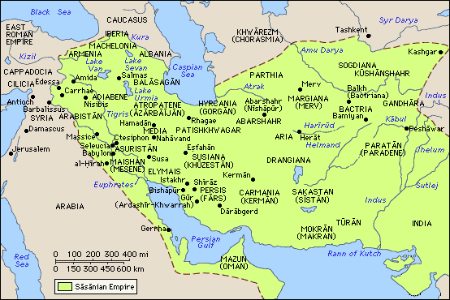
[Bactria was also the location of the temple of Anahita (an Avestan Goddess). It was so rich that it attracted Syrian kings to plunder it. Anaitis was a Scythian goddess, but she is identified also as Assyrian Mylitta, the Arabian Alytta and the Greek Venus Urania. In Armenia girls prostituted themselves in her name (maybe after she was assimilated as Ishtar by the Babylonians). Artaxerxes Mnemon, one of the rulers of Achaemenid dynasty was among her devotees.]
The Avestan texts don't mention West Iran, Median or Persian regions,
areas or places, nor do Achaemenid inscriptions ever mention Zarathustra.
Greek sources (~350 BC.) show that by their time Zarathustra was already a
mythical figure. Therefore he could not have belonged to a period
contemporary with or close to the Achaemenids (559 BC).
The hypothesis that Zarathustra came from NE Iran in Chorasmia (Khorezm)
or the regions near Merv and Herat at the eve of the establishment of
Cyrus II's empire (550-530 BC) is not plausible since the absence of Medes
or Persians in the Avesta confirms that Zarathustra was earlier than the
Achaemenids of the 6th century and Medes of the 9th century BC.
Zarathustra's name is not mentioned by Herodotus (480-425 BC) who seems
unaware of him in his sketch of the Mado-Persian religion. It occurs for
the first time in a fragment of Xanthus of Lydia, and in the Alcibiades of
Plato (~347 BC), who calls him the son of Oromazdes. Plutarch, Hermodorus
and Hermippus of Smyrna place him 5000 years before the Trojan war.
Eratosthenes (c275-194), head of the great library of Alexandria some
decades after Manetho studied the works of Homer, Manetho, and other early
Greek historians, and derived a date for the Trojan War of c1193-1183.
This he did by identifying 17 Spartan kings who reigned in succession from
the return of the Heraclidae to Thermopylae. He then assumed that three
generations lasted 100 or 120 years, and arrived at a total of 622 years
for their combined reigns. This early date was strongly disputed at the
time by others, including some Greek ruling families who could trace their
genealogies back to ancestors who had fought at Troy. They said this date
was over 300 years too early, and that the war had ended not more than
three generations before the start of the first Olympic Games in 776.
Pausanias reports that the argument was partially settled by allowing both
views to co-exist, with the Olympic Games first starting in 12C, then
starting again in 8C after a lapse of some 400 years. Today the
genealogical evidence from several Greek rulers is again ignored, and the
CC has embraced Eratosthenes' early 12C date for Troy. His use of those
ridiculously long average reign lengths is conveniently ignored.
[History estimates the date of the Trojan war at
1200 BC. This would mean Zarathustra was 6,200 BC. The time when
Zarathustra lived is about 7,000 BC. in Oahspe. If the Trojan War was part
of the wars in Parsie as a result of Baal and Astharoth under Osiris, its
date is about 1870 BC. That would give a date for Zarathustra at about
6,870 BC.]
Xanthus places him 6000 years before Xerxes (~484 BC) [6000 years before
Xerxes is 6484 BC.]
Eudoxus of Cnidus and Aristotle (384-322 BC) place him 6000 years before
the death of Plato (~347 BC), and Aristotle was not one to make a
statement without a good reason for it. Agathias remarks it is no longer
possible to determine with any certainty when he lived and legislated and
adds, "The Persians say Zoroaster lived under Hystaspes, but do not make
it clear whether by this name they mean the father of Darius or another
Hystaspes. He was their teacher and instructor in the Magian religion,
modified their former religious customs, and introduced a variegated and
composite belief. Bunsen . . . finds that Zarathustra Spitama lived under
the King Vistaspa about 3,000 years B.C., and describes him as 'one of the
mightiest intellects and one of the greatest men of all time."
According to Zoroastrian tradition (or a Greek source?), he flourished 258 years before Alexander and was 40 years old when this event occurred, thus indicating that his birth date was 628 BC.
According to this wikipedia Zoroastrian calendar article, the Seleucids introduced the practice of dating by era rather than by the reign of individual kings. Their era became known as that of Alexander, or later the Seleucid era. Zoroastrian priests resented the Seleucids and established their own era of Zoroaster. That was the first serious attempt to determine the dates associated with Zoroaster. Priests had no Zoroastrian historical sources, and so turned to Babylonian archives. From these they learned that a great event in Persian history took place 228 years before the era of Alexander. This was the conquest of Babylon by Cyrus the Great in 539 BCE. But the priests misinterpreted this date to be the time the "true faith" was revealed to their prophet, and since Avestan literature indicates that revelation happened when Zoroaster was 30 years old, 568 BCE was taken as his year of birth. The date entered written records as the beginning of the era of Zoroaster, and the Persian Empire. This incorrect date is still mentioned in current encyclopedias as Zoroaster's birth date. The Parthians adopted the same calendar system and dated their era from 248 BCE, the date they succeeded the Seleucids. Yazdgerd III, the last ruler of the Sassanid dynasty, introduced 632 as the beginning of a new era, and this last imperial Persian calendar was known as the Yazdgerdi calendar.
In "History
of Zoroastrianism" M. N. Dhalla, High Priest of the Parsis,
Karachi, India, 1938 writes:
Zarathustra received his prophetic calling in about his thirtieth year. He
went into the forest where the earth and waters, birds and beasts, sun and
moon, stars and planets became Zarathushtra's teachers, and read lessons
written by the hand of the maker in every pebble, leaf, dewdrop and
sunbeam, in every star and planet. Here he plunged into a reverie and
communed with his inner self. Mind alone can understand and realise the
supreme mind. Vohu Manah, who "impersonates" the divine mind, came to
Zarathustra, who conceived Him as holy.
God called upon Zarathustra to proclaim His "Manthra" to humanity. He was
The "Manthran" - the harbinger of God's thought-provoking message [Manthra
corresponds to the Vedic word "Mantra"
and means "the prophetic word of great moral significance". Mantra later
became synonymous with 'spells of magical charms']. He speaks of his faith
in terms of a universal religion.
King Vishtaspa
He won as a convert King Vishtaspa,
who may have lived in eastern Iran or Bactria, and became the court
prophet (in the Hebrew sense of a prophet ie. giving a revolutionary
message of religious purity and social justice, speaking out against
corrupt priests and potentates).
From Vendidad 17. Ashi Yasht
We sacrifice to Ashi Vanguhi, who is shining, high .... and powerful.
49. To her did the tall Kavi Vishtaspa
offer up a sacrifice behind the waters of the river Daitya.
YASNA 53 Verse 2
"O Zarathushtra, what righteous man is thy friend for the great
covenant? It is the Kava Vishtaspa at the consummation." "Then let them
seek the pleasure of Mazda with thoughts, words, and actions, unto him
praise gladly, and seek his worship, even Kava
Vishtaspa, and Zarathushtra's son, the Spitamid, with Frashaoshtra, making straight the paths
for the Religion of the future Deliverer which Ahura ordained."
The Zoroastrians translate the same verse thus:
So, let all strive with thought, word and deed to satisfy Mazda. Let
each one choose to perform good deeds as his worship. Kavi Vishtaspa,
the faithful devotee of Zoroaster together with Maidyo-Mah and
Frashaoshtra are treading the path of Truth and have chosen the Faith
inspired and revealed by the Saoshyant, or the Saviour of Mankind,
taught by Ahura.
Among the grandees of the court of Vishtaspa mention is made of two
brothers, Frashaoshtra and Jamaspa to
whom Zoroaster was closely related. In legends Zarathustra had three wives
of whom the last was Hvovi, the daughter of Frashaoshtra. The husband of
his daughter, Pourucista, was Jamaspa. The role of intermediary was played
by the pious queen Hutaosa. His first disciple, Maidhyoimaongha, was his
cousin.
Zarathustra is said to have had six children, but they may be only
symbolic of the Amesha Spentas. The last Gatha is composed for the
marriage of Zarathushtra's daughter Pouruchista (Full of Wisdom [as is the
Gnostic Sophia]).
From YASNA 53 - The Vahishtoishti Gatha
1. (Zarathushtra) - The best possession known is of Zarathushtra
Spitama, which is that Mazda Ahura will give him through Right the
glories of blessed life unto all time, and likewise to them that
practice and learn the words and actions of his Good Religion. 2. Then
let them seek the pleasure of Mazda with thoughts, words, and actions,
unto him praise gladly, and seek his worship, even Kava Vishtaspa, and
Zarathushtra's son, the Spitamid, with Frashaoshtra, making straight the
paths for the Religion of the future Deliverer which Ahura ordained. 3.
Him, O Pouruchista, thou scion of Haechataspa and Spitama, youngest of
Zarathushtra's daughters, hath (Zarathushtra) appointed as one to enjoin
on them the fellowship with Good Thought, Right, and Mazda. So take
counsel with thine own understanding, with good insight practice the
holiest works of Piety. 4. (Jamaspa): Earnestly will I lead her to the
Faith, that she may serve her father and her husband, the farmers and
the nobles, as a righteous woman (serving) the righteous. The glorious
heritage of Good Thought ... shall Mazda Ahura give to her for all time.
5. (Zarathushtra): Teachings address I to maidens marrying, and to you
(bridegrooms) giving counsel. Lay them to heart and learn to get them
within your Selves in earnest attention to the Life of Good Thought. Let
each of you strive to excel the other in the Right, for it will be a
prize for that one.
Vishtaspa stands at the meeting point between the Old World and the new
era which begins with Zoroaster.
[Oahspe does not record such a change. Rather the Gathas seem to be part
of the "old Aryan" or Haptan religion which was corrupt by this time.
Iranians held the fire sacred and stopped burning their dead, exposing the
dead to vultures instead. Dogs were held sacred and people were punished
severely for harming them].
He is a historical figure in the Gathas and the prophet is indebted to him
for his success. In Yasna, 53, 2. he is spoken of as a pioneer of the
doctrine revealed by Ormazd. In the relation between Zoroaster and
Vishtaspa lies the germ of the state church which afterwards became
subservient to the interests of the dynasty and sought its protection.
Zarathushtra's death is nowhere mentioned in the Avesta; in the Shah-Na'ma
he is said to have been murdered at the altar by the Turanians
in the storming of Balkh. But there is no holiday commemorating the
martyrdom of the Prophet, and scholars say that Zarathustra died
peacefully.
Such a story about Zarathustra and King Vishtaspa does not occur in
Oahspe. Rather it says:
"The Lords and Gods of the lower heavens were awarded by Mithra petty
kingdoms in atmospherea belonging to Vind'yu. Usually, each mortal city
was allotted to the keeping of one of these spirit Saviours, Lords or Gods
who professed to give the revelations of Zarathustra, who had ceased in
men's eyes to be a man, but a principle of Truth descended from
Ahura'Mazda, Creator.
Oahspe gives us two possible origins for King Vishtaspa.
In Saphah (referring to the Haptan period, possibly 4,000 BC, long before
1500 BC, an early estimate of Zarathustra's time.) Kava-viscacpa
is given as a council or and friend of Zarathustra, a high, Holy Lord and
Giver of Truth.
Of course the man Zarathustra was not alive in Haptan times and so this is
meant to be in keeping with Mithraic inspiration.
In Book of Wars Ch. XXXV it says:
After Sudga founded in his new heavenly place (after ~3000 BC) he set out
to make himself ruler of heaven, with T-loyovogna, who had a small kingdom
in the Valley of Hachchisatij, in Vind'yu, king of all the earth.
T-loyovogna captured the city of Abtuib, ruled over by Azhis and appointed
Vistaqpa to be governor, with right to
bequeath it to his son after him.
M.N. Dhalla claims:
The second Iranian dynasty is known as the Kavi
or Kianian [Kayanian].
[He must have been referring to a mythical dynasty]
Its renowned kings who [supposedly] lived before the coming of Zarathustra
were Kavi Kavata, Kavi
Usa, and Kavi Haosrava.
Vishtaspa retains this title and Zarathushtra speaks of him as Kavi
Vishtaspa. Vishtaspa is the last king who shares this epithet with his
royal predecessors.
It is said Zarathushtra began his prophetic propaganda in the west of Iran
and later in the extreme east. Bactria, which was the meeting place of
travellers and merchants from distant lands, was the seat of the Kavi
kings. The king, says Zarathushtra, has attained the knowledge of the
sacred lore. Vishtaspa, Frashaoshtra, and others who have now turned
Zoroastrian, invoke and adore Ahura Mazda and tread the straight paths of
the Saviour ordained by him. The Turanian chieftain Fryana
came over to the new faith and Zarathushtra immortalises his clan in his
holy hymns.
From Book of Saphah
Franrava, God of the Turanians, the
opposers of Faithists. He who inspired the Turanians
to war and to deeds of cruelty.
Oan (Panic). Persons who have risen in intelligence, but not in Es. One
who believes man is the highest of all things in the world. One who
believes there is no person or thing of personality but man. Ho'an, that
that leads to Ugh'sa, particularly lust. The impulse of the flesh they
called the highest, M'oa (Gau). They fell from industry and decency,
saying: We shall have no forms nor rites, being free. And they became the
prey of spirits of idleness and lust, who feast on sinful mortals. Yo'anyi
said: If I love meat I will eat meat; if I love strong drink I will have
strong drink; if I love sexual indulgence then will I have sexual
indulgence. Who can restrain me? Are not my desires well created? I should
not deny them? (Vede.) And the druks came upon the Yo'anyi, for their
philosophy had divided them amongst themselves, one against another, and
their progeny became Tur'anyi (Turanian).
From Oahspe
God wrote in the sand the word Te-In,
and it was as if a flame of fire pierced the ground.
Po said: From this time forth Te-In
shall be the name of the tribes who have faith in the Creator only.
And the names Dyaus became paramount to all other Gods in Vind'yu and
eastern Parsi'e; and the name Te-In,
in Jaffeth (China), and the name Lord God, in Arabin'ya (Egypt). Te-In
made Kan Kwan mortal king of Jaffeth, with the title, King of the World,
and Sun, and Moon, and Stars! Te-in said to Kan Kwan when the earth is
subdued unto himself the king shall show unto the people that there is but
one High Ruler in heaven, whether he be called Ho-Joss or Joss, or
Po-tein, or Te-in, and that I am the Person. But in no case shall the king
suffer the worshippers of the Great Spirit to remain alive upon the earth.
Other Sources
Ti'an is the Chinese word for the supreme
power that creates and operates everything in the universe
Chao Dynasty, 1121-255 BC, notable, the rulers were Hsiung-nu and Tung-i,
Northern "barbarians" (Turanians) who
defeated the Shang. They enforced their exogamic rules and clan/moiety set
ups while the Chinese word for "bride" became the word for "enemy" and the
Chinese began to treat women very badly. The name for Sky God, "Shang-ti,"
became "Ti'en" similar to "Tengri"
(Turanian word) and the Chou Emperors spoke the language of the other
Northern Turanians (which is wholly unrelated to Chinese).
[In the light of this, one wonders why, in contemporary Chinese history,
the Rites of Zhou/Chou are so important to Confucius. There is a
possibility that his life has been misrepresented somewhere along the
line. (The biographies of both Confucius and Laozi mention Confucius
visiting the Zhou capital to meet Laozi the Zhou Kingdom's archivist, to
get access to the documents, with Confucius expressing admiration for
Laozi who gave the sage advice about prudent conduct and about traditional
rituals.)]
In ancient Persia, the Turanians
(called "Turia") were the ancient enemies of the Aryas (Aryans, Persians).
Considering that previously, in India, these Turanians were called
Chandravansa and known as NAGA, Serpents, it comes out that the Aryans
believed that the "Serpents" cursed them.
The Vedic hymns use the word kavi in the sense of a sage, seers and Soma priests. The Karapan, belong to the class of the Kavi. Kavis and Karapans or seeingly blind and hearingly deaf are likened to Pharisees and Scribes of the Bible. Robert M. Price says that it is highly likely that Pharisee derives from the word Parsee, adding that concepts of satan and the resurrection are not Judaism as the Sadducees understood it. He also says that Persians bankrolled the Judaic religion, and Ezra, who was a Persian official when he came back to Palestine, brought a religion created in Persia which was a form of Zoroastrianism, implying that Persians imposed their religion. That would explain the sudden similarity between Judaism and Zoroastrianism. [Note: the mainstream derivation of "Pharisee" is from the Hebrew perushim, meaning "separated ones"; Price's Parsee hypothesis remains a minority view.]
From the Yasna:
"By their dominion the Karapans and the Kavis
accustomed mankind to evil actions"
From The Bundahishn (Creation), or Knowledge from the
Zand (Zend)
The Bundahishn forms one part of the "Zand-akasih," ["knowledge of the
commentary (Zend)"]. It has been preserved in two recensions, known
respectively as the Indian and the Greater or Iranian Bundahishn. The
latter is the more complete and contains much matter that is unknown to
the Indian recension. The text may have been prepared from a Pahlavi
translation and commentary of some Avesta work, such as the Damdat Nask
[Nask means great scripture or ancient canon. The twenty-one Nasks
correspond to the Vedangas of Hinduism, dealing
with all kinds of Sciences, viz., medicine, astronomy, agriculture,
botany, etc.] which is not extant now.
The first translation of Bundahishn in Gujarati language was published in
1819. In 1880 Dr. E. W. West
published his first English complete translation of the Bundahishn in the
Sacred Books of the East Series.
The Bundahishn is the "Genesis" of Iranian literature and has three main
themes:
1) The creation of Ohrmazd and the Counter creation of the Evil Spirit
(Gannak Menok)
2) The nature of the earthly Creatures.
3) The Kayan dominion, their lineage and abodes, and the vicissitudes
befalling their realm of Eranshahr/Iranshahr [meaning Iranian Empire. The
name Iran and Aryan race comes from the "first of places and best
created", Eranvej (Iran Vej) or Aryan Vaeja (Airyanem Vaejah), the Airyana
Vaeja of Oahspe]
Kayanians (Kavi) and heroes were
supposedly created in Khvaniras, the best of seven
lands that arose after a flood. The evil spirit also produced most from
Khvaniras on account of the superiority which he saw in it. The good
religion of the Mazdayasnians was created in Khvaniras and afterwards
conveyed to the other regions. Soshyans, who makes the evil spirit
impotent and causes the resurrection and future existence, is born in
Khvaniras. [see below]
From The Zand-i Vohuman Yasht
25. By Kavad was Kay
Apiveh begotten; by Kay Apiveh were Kay
Arsh, Kay Vyarsh, Kay Pisan,
and Kay Kaus begotten; by Kay Kaus
was Siyavakhsh begotten; by Siyavakhsh was Kay Khosraw begotten.
28. Lohrasp was son of Auzav, son of Manush, son of Kay Pisin, son of
Kay Apiveh, son of Kay Kobad.
29. By Kay Lohrasp were Vishtasp,
Zarir, and other brothers begotten; by Vishtasp were Spend-dad and
Peshotan begotten; and by Spend-dad were Vohuman, Ataro-tarsah,
Mitro-tarsah, and others begotten.
In Saphah
Hiac-kaus is Lord of the Seal of
Heaven who bestowed the power of Ahura'Mazda on mortals, enabling the
prayers of the living to redeem from torments the spirits of their
forefathers.
The Frawardin Yasht
132. We worship the Fravashi of the holy king Kavata/Kavi
Kavata/Kavad;
We worship the Fravashi of the holy king Aipivanghu/Kay Apiveh;
We worship the Fravashi of the holy king Usadhan/Kavi
Usa;
We worship the Fravashi of the holy Arshan/Kay Arsh;
We worship the Fravashi of the holy Pisanah/Kay Pisan;
We worship the Fravashi of the holy king Byarshan;
We worship the Fravashi of the holy king Syavarshan/Siyavakhsh;
We worship the Fravashi of the holy king Husravah/Kavi
Haosrava;
None of these kings play a part in known history (including the Median and Achaemenid, Parthian and Sassanian empires)
[Another writer says:
Sovereignty over Iran, in every age, was restricted to a single family.
Iranian history was perceived as the eras of these ruling families. These
are:
The rule of Gayomard (Avestan: Gayo
Maretan) idealised as "mortal life," the prototype of humanity, and the
beginning of the human race
The Pishdadian dynasty and the rise of civilisation
The Kayanian era, which included the Achaemenian dynasty, Arsacids and
Sasanian royal family.]
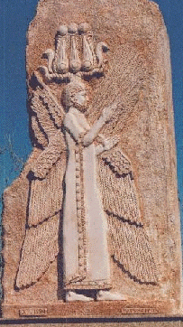
Encyclopedias say:
Hystaspes or Hystaspis, Old Persian Vishtaspa,
6th cent. B.C., ruler of ancient Persia, father of Darius I. Under him
Darius was governor of Parthia. The legendary patron of Zoroaster is also
called Hystaspes or Vishtaspa; he may or may not be the same as Darius'
father.
From the Behishtan Inscriptions Of
Darius
(Trilingual inscription on face of a gorge beneath a panel of sculptures)
[note the words Vishtâspahyâ (Hystaspes), manâ (as in Vohumanu and speech)
Haxâmanishiya (Achaemenian), and pitâ (father), an Indo-Aryan word, as in
Jupiter (Father Ju or Zeus). Note also the similarity to Sanskrit. The
word xshâyatha is similar to the Sanskrit Kshatriya, or men of the ruling
and fighting class and the Amesha Spenta of desirable dominion, Khshathra
Vairya.
I am Darius the Great King [Adam Dârayavaush xshâyathiya vazraka],
King of Kings, [xshâyatha
xshâyathiyânâm]
King in Persia, [xshâyathiya Pârsaiy]
King of countries [xshâyathiya dahyûnâm]
son of Hystaspes [Vishtâspahyâ
puça],
grandson of Arsames [Arshâmahyâ napâ],
an Achaemenian [Haxâmanishiya
thâtiy].
Darius the King says [Dârayavaush xshâyathiya manâ]
My father was Hystaspes [pitâ
Vishtâspa]
Hystaspes' father was Arsames [Vishtâspahyâ pitâ Arshâma]
Arsames' father was Ariaramnes [Arshâmahyâ pitâ Ariyâramna]
Ariaramnes' father was Teispes [Ariyâramnahyâ pitâ Cishpish]
Teispes' father was Achaemenes [Cishpâish pitâ Haxâmanish thâtiy].
Darius the King says [Dârayavaush xshâthiya]
For this reason we are called Achaemenians. [Avahyarâ diy vayam
Haxâmanishiyâ]
From long ago we have been noble. [tha hy âma hy hacâ paruviyata
From long ago our family had been kings. [âmâtâ ama hy hacâ paruviyata hyâ
amâxam taumâ xshâyathiyâ âha]
Darius the King says there were 8 of our family [thâtiy Dârayavaush
xshâyathiya VIII manâ taumâyâ tyaiy paruvam who were kings before me
[xshâyathiyâ âha]
I am the ninth [Adam navama]
9 in succession we have been kings [IX duvitâparanam vavam xshâyathiyâ
amahy thâtiy]
Darius the King says By the favour of Ahuramazda [Dârayavaush
xshâyathiya vashnâ Auramazd âha]
I am King [Adam xshâyathiya amiy]
Ahuramazda bestowed the kingdom upon me [Auzamazdâ xshaçam manâ frâbara
thâtiy]
Darius the King says [Dârayavaush xshâyathiya imâ]
These are the countries which came to me [dahyâva tyâ manâ patiyâisha]
by the favour of Ahuramazda [vashn Auramazdâha]
I was king of them [adamshâm xshâyathiya âham]
Persia [Pârsa], Elam [Ûvja], Babylonia [Bâbirush], Assyria [Athurâ],
Arabia [Arabâya], Egypt [Mudrâya], (those) who are beside the sea [tyaiy
drayahyâ], Sardis [Sparda], Ionia [Yauna], Media [Mâda], Armenia [Armina],
Cappadocia [Katpatuka], Parthia [Parthava], Drangiana [Zraka], Aria
[Haraiva], Chorasmia [Uvârazmîy], Bactria [Bâxtrish], Sogdiana [Suguda],
Gandara [Gadâra], Scythia [Saka], Sattagydia [Thatagush], Arachosia
[Harauvatish], Maka [Maka] in all, 23 provinces [fraharavam dahyâva XXIII]
From "Old Persian Texts"
Darius writes of himself (in his inscriptions) as if fighting in an endless apocalypse against "followers of the Lie (angra-mainyus)" favoured by Ahura Mazda. Indeed with his successor Xerxes the world came closest it has ever been to an apocalypse. The above inscription goes on to talk of various pretenders:
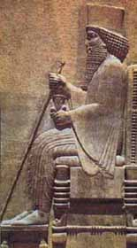
One might think Darius too was himself a similar usurper. Darius does
not come from the lineage of Cyrus, but names himself son of Vishtaspa (a
mythical king). Xerxes I his son claims his mother to be Atossa (which is
the same name as Hutaosa, Queen of Vishtaspa).
It would be possible that Xerxes I was the son of Atossa
(daughter of Cyrus II), but then how could Darius be son of Vishtaspa?
Then the daughter of Cyrus the Great, queen of Hystaspes/Vishtaspa, whose
son was Darius I, would also be mother of Xerxes I, her own son's son. I
doubt whether she would have had a child to her own son.
Darius I was the first to speak of Achaemenes, who he claimed was an
ancestor of Cyrus the Great and therefore the progenitor of the entire
line of Achaemenid rulers. However, some scholars hold that Achaemenes was
a fictional character used to legitimize Darius' rule, and that Darius I
usurped the Persian throne.
According to Herodotus, the native leadership debated the best form of
government for the Empire. It was decided that oligarchy would divide them
against one another, and democracy would bring about mob rule resulting in
a charismatic leader resuming the monarchy. They decided a new monarch was
in order, particularly since 'they' were in a position to choose him.
Darius I was chosen monarch from amongst the leaders. He was cousin to
Cambyses II and Smerdis, claiming Ariaramnes as his ancestor.
I would think that the historical Atossa and the mythical Hutaosa, Queen
of Vishtaspa are not the same. The website below thinks otherwise.
..... Cyrus + Cassandane ........ Vishtaspa + Hutaosa
............ \ .......... / ...........................\ ......... /
.. Cambyses + Atossa ------ + ----- Darius I
.............................. \ ......................../
........................................ Xerxes
How Ashtaroth possibly recouped power over the eastern nations from
Looeamong
Atossa's name has been intertwined with that of Anahita. Atossa, the daughter of Cyrus the Great,
wife of Cambyses and Darius and mother of Xerxes witnessed the reign of
the four first Achaemenian kings. The first mythological-historical
personality encountered with the same name, namely Hutossa or Hutos, is
the wife (or according to some sources) the daughter of Garshasb
(Vishtaspa), a Kiyani ruler.
In Iran's pre-Islamic era, marriage to close relatives, including
daughters and sisters, was a common practice with the simple reason to
keep up the blood and relation in the monarchial and aristocratic family.
The mythological Hutossa Kiyani and the historical Achaemenian Atossa
might have been the first cases of getting married to their kin.
Hutossa/Hutaosa (as mentioned in Avesta), was married to
Goshtasb/Vishtaspa and gave birth to several babies. She was the first
political figure to be converted to Zoroastrianism by Zoroaster. She
called on Goshtasb to convert. Since then the Zoroastrian belief was
officially accepted. Persian girls were called by the name Atossa as a
sign of respect for her. The sister and wife of Ardeshir II and the wife
of Ardeshir III were called Atossa. She was the second female personality
(after Anahita) who was titled a
"Lady" (a religious title). Since then such a title was gradually granted
to some queens.
Atossa's mother, the Cassandane Queen, Pharnaspes's daughter and a Persian
lady of noble birth was the favorite wife of Cyrus the Great. Cyrus's son
and heir, Cambyses (522-525 BC) took reign concurrent to getting married
to his sister Atossa. According to Herodotus, the Greek historian, before
then marriage to the kin (sisters) was not practiced among the Persians.
Nonetheless, owing to his falling deeply in love with his sister, Cambyses
gathered all the Persian judges and made them to give such a marriage a
legitimate and legal aspect, which authorized him to do so for the first
time.
Darius, despite having a wife and numerous children, got married to
Atossa. Given that Darius came from an origin of Achaemenian dynasty which
was not entitled to rule, he decided to get married to the daughter of
Cyrus the Great and Cambyses' sister and wife in order to legitimize his
rule. It is said that Atossa was an ambitious, power-seeking woman. As the
spouse of Darius she could gain political and social status. That's how
Atossa became "The Ladies Lady" at the climax of the Achaemenian power and
glory.
According to Herodotus, Atossa was influential at court and during the Greek war initially recommended by her,
Darius made use of her advice. She was even interested in accompanying her
husband in the process of war. Herodotus quotes Atossa as saying that
despite all his might and power, Darius was sitting still without
embarking on any war.
Four sons were born to Darius and Atossa, among whom the oldest was named
Xerxes.
Xerxes was not the oldest son (since Darius had another wife before
getting married to Atossa) and according to custom, a monarch had to be
replaced by his first son, so arguments took place between them. Xerxes
claimed that his mother was the "Savior of
Persian Tribe". Eventually, the 35-year-old Xerxes was
appointed as the crown prince, while the unprecedented measure reflected
the high authority of "The Ladies Lady". That's how Xerxes, the grandson
of Cyrus the Great took reign after his father (486-465 BC), while Darius'
older son from his other wife was the best candidate deserving to replace
his father and had already been trained for it.
Seems like Atossa didn't find Xerxes' war with Greece reasonable and she
was apparently one of the opponents of entering into such a conflict. She
had been quite upset while the monarch was on his way to Greece. Once she
heard about the defeat of her son, she got really disturbed and
exasperated. She had realized that there is no consequence to the war.
http://www.iranchamber.com/history/atossa/atossa.php
Another writer confuses it more:
In the time of the elder Cyrus, or Khai-Khosru the Persian conqueror of
Media, the State system was the Median Magism of the first Zaradust of
Bactria. This Cyrus was the father of Cyaxarus or Ahashuerus, of Cambyses,
and of Bardes. Cyaxarus on his father's death succeeded to the moiety of
East Persia, and married Esther, or Atossa, so named after Ishter, the
goddess who descended into Hades. Cambyses (Lohrasp) was a half brother by
the daughter of Astyages (Afrasaib) king of Media, and inherited the other
moiety; he conquered Egypt about 520 B.C., and having first slain his
brother Bardes (Bardiya/Smerdis/Guatama the Magian), and then destroyed
Cyaxarus, married his widow Atossa, and so again united Media and Persia.
His son Cyrus II. favoured the Magi and liberated the Jews; he conquered
Babylon 518 B.C., and died without issue 506 B.C. The way was thus paved
for Darius Hystaspes, or the son of Gustasp, of the Achaemenion or Royal
race of Persia, had been Viceroy of Egypt 520 B.C., and who, on the death
of the crazy Cambyses 518 B.C., would seem to have married his widow, in
which case she would have been the wife of three kings; and the
pretensions of Darius might thus originate, as he was not, by birth,
entitled to the throne. There is a legend which says that seven princes
entered into a confederacy, and agreed, on their journey, that whosoever's
horse first neighed, at sight of the rising sun, should be King, and the
lot fell to Darius. This prince was everywhere successful, but the contest
ended in the destruction of the Magi, whose growing power had long been
offensive to the Persian Mazdeans. The destruction of the Magi was
commemorated by a festival termed the Magaphonia.
| Achaemenes | ||
| | | ||
| Teispes | ||
| __________ | _________________|________________ | __________ |
| | | | | |
| | | Cyrus I, 640-600 BC (king of Anshan) | |
| Ariaramnes 640-615? BC (king of Persia) | | | |
| | | Cambyses I 600-559 BC (cousin of Arsames) | |
| Arsames 615-? BC (Arshaam in Persian) | | | |
| | | |
Cyrus II 559-530 BC |
| Hystaspes (Vishtaasp in Persian) | | | |
| | | Cambyses II 530-522 BC | |
| Darius I 521-486 BC | ||
| | | ||
| Xerxes I 486-465 BC | ||
| | | ||
| Artaxerxes I Longimanus 465-424BC | ||
| __________| | _________________________________ | __________ |
| | | | | | |
| | | Xerxes II (424-423 BC) | | |
| | | Sogdianus (424 BC) | |
| |__________ | _________________ | |
| | | | | |
| Darius II (423-404 BC) | | | |
| | | | | |
| Artaxerxes II Mnemon | | | |
| 404-359 BC | | | |
| | | | | |
| Artaxerxes III Ochus | | | |
| 359-338 BC | | | |
| Darius III (336-330 BC) | ||
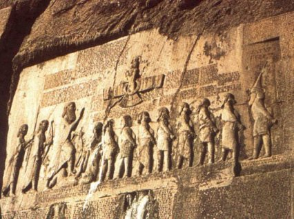
Darius I describes himself as an Achaemenid Parsa, an Arya of Aryan (Iranian) descent.
From the Naqsh-I-Rustam inscription
of Darius
(on south face of steep ridge north of Persepolis)
A great god [baga vazraka]
is Ahuramazda [Auramazdâ]
who created this earth [hya âm bumâm adâ]
who created yonder sky [hya avam asm, ânam adâ]
who created man [hya martiyam adâ]
who created happiness for man [hya shiyâtim adâ martiyahyâ]
who made Darius king, [hya Dârayavaum
xshâyathiyam]
one king of many, [akunaush aivam parûvnâm xshâyath]
one lord of many [iyam aivam parûvnâm framâtâ ram]
I am Darius the Great King, [adam Dârayavaush xshâyathiya va zraka]
King of Kings, [xshâyathiya xshâyathiyânâm ]
King of countries containing all kinds of men, [xshâyathiya dahyûnâm
vispazanâ nâm]
King in this great earth far and wide, [xshâyathiya ahyâyâ bûmi yâ
vazrakâyâ dûraiapiy]
son of Hystaspes, [
Vishtâspahyâ puça]
an Achaemenian, a Persian, son of a
Persian [Haxâmanishiya Pârsa Pârsahyâ
puça]
an Aryan, having Aryan lineage. [Ariya Ariya ciça]
Darius the King says [thâtiy Dârayavaush xshâyathiya]
By the favor of Ahuramazda [vashnâ Auramazdâhâ]
these are the countries [imâ dahyâva tyâ]
which I seized outside of Persia [adam agarbâyam apataram hacâ Pârsâ]
I ruled over them [adamshâm patiyaxshayaiy]
what was said to them by me, [manâ bâjim abara ha]
that they did; my law -- [tvashâm hacâma]
that held them firm; [athahya ava akunava dâtam]
they bore tribute to me [tya manâ avadish adâraiya]
Media [Mâda], Elam [Ûvja], Parthia [Parthava], Aria [Haraiva], Bactria
[Bâxtrish], Sogdiana [Suguda (this is
like the name of the false god Sudga)], Chorasmia [Uvârazmish], Drangiana
[Zraka], Arachosia [Harauvatish], Sattagydia [Thatagush], Gandara
[Gadâra], Sind [Hidush], Amyrgian Scythians [Sakâ], Scythians with pointed
caps [tigraxaudâ], Babylonia [Bâbirush], Assyria [Athurâ], Arabia
[Arabâya], Egypt [Mudrâya], Armenia [Armina], Cappadocia [Katpatuka],
Sardis [Sparda], Ionia [Yauna], Scythians who are across the sea [Sakâ
tyaiy paradraya], Skudra, petasos-wearing Ionians [Skudra Yaunâ takabarâ],
Libyans [Putâyâ], Ethiopians [Kûshiyâ], men of Maka [Maciyâ], Carians
[Karkâ].
Darius the King says [thâtiy Dârayavaush xshâyathiya]
Ahuramazda, when he saw this earth in commotion, [Auramazdâ yathâ avaina
imâm bûmim yaudatim]
thereafter bestowed it upon me, [pasâvadim manâ frâbara mâm]
made me king; [xshâyathiyam akunaush]
I am king. [adam xshâyathiya amiy]
By the favor of Ahuramazda [vashnâ Auramazdâhâ]
I put it down in its place; [adamshim gâthavâ niyashâdayam]
The Daiva Inscriptions Of Xerxes At Persepolis
Trilingual, on stone tablets.
Xerxes [Xshayârshâm] the King [xshâyathiyam] says:
……. And among these countries there was (a place) where previously false
gods (Daevas) were worshipped.
Afterwards, I destroyed that sanctuary of the demons [âha yadâtya paruvam
daivâ ayadiya pasâva]
and I made proclamation, "The demons shall not be worshipped!" [adam avam
daivadânam viyakanam]
Where previously the demons were worshipped, [utâ patiyazbayam daivâmâ
yadiyaisha yadâyâ paruvam daivâ ayadiya]
there I worshipped Ahuramazda and Arta
(Asha) reverently [avadâ adam : Auramazdâm : ayada âtya
paruvam]
By 620 the Babylonians had grown tired of
Assyrian rule and were weary of internal struggle and were easily
persuaded to submit to the order of the Chaldean kings. In about 630 BC
Nabopolassar became king of the Chaldeans. In 626 he forced the Assyrians
out of Uruk and crowned himself king of Babylonia.
Cyaxares/Hvakhshathra/Kayxosrew (625 - 585 BC) the most
capable king of Media reorganized and modernized the Median Army, then
joined with King Nabopolassar of Babylon. This alliance was formalized
through the marriage of Cyaxares daughter, Amytis with Nabopolassar's son,
Nebuchadnezzar II. These allies overthrew the Assyrian Empire and
destroyed Nineveh and Nimrud [probably Ashtaroth's dominion] in 612 BC and
split the Assyrian empire (Mesopotamia to Babylon and Elam to Media) while
Egypt recovered control of Palestine and Syria. After this victory, the
Medes conquered Northern Mesopotamia, Armenia and the parts of Asia Minor
east of the Halys River, which was the border established with Lydia.
Nabopolassar fought against the Assyrian king Ashur-uballit II and then
against Egypt, his successes alternating with misfortunes. In 605 he died
in Babylon while Nebuchadrezzar/Nebuchadnezzar was with his army in Syria;
he had just crushed the Egyptians near Carchemish. In 601 he tried to push
forward into Egypt but was forced to pull back. He attacked Palestine at
the end of 598. King Jehoiakim of Judah had rebelled, counting on help
from Egypt. Jerusalem was taken on March 16, 597. Jehoiakim had died
during the siege, and his son, King Johoiachin, together with at least
3,000 Jews, was led into exile in Babylonia where they were treated well.
Zedekiah was appointed the new king.
According to the Old Testament, Judah rebelled again in 589, and Jerusalem
was placed under siege. The city fell in 587/586 and was completely
destroyed. Many thousands of Jews were forced into "Babylonian exile," and
their country was reduced to a province of the Babylonian empire. The
revolt had been caused by an Egyptian invasion. In 568/567 he attacked
Egypt, again without much success, but from that time on the Egyptians
refrained from further attacks on Palestine. Nebuchadrezzar lived at peace
with Media throughout his reign and acted as a mediator after the
Median-Lydian war of 590-585.
Awil-Marduk (called Evil-Merodach in the Old
Testament; 561-560), the son of Nebuchadrezzar, was unable to win the
support of the priests of Marduk [probably Bel (Enlil) or Baal]. His reign
did not last long and was soon eliminated. His successor was Neriglissar
559-556.
The next king was the Aramaean Nabonidus (556-539). His mother was a
priestess of the god Sin in Harran; she came to Babylon and managed to
secure responsible offices for her son at court. The god of the moon
rewarded her piety with a long life. The faction who supported Nabonidus
was probably those opposing the priests of Marduk, who had become
extremely powerful. Nabonidus raided Cilicia in 555 and secured the
surrender of Harran, which had been ruled by the Medes. He concluded a
treaty of defense with Astyages of Media against the
Persians, who had become a growing threat since 559 under their king Cyrus
II. He gave preference to his god Sin and had powerful enemies in the
priesthood of the Marduk temple.
Astyages succeeded his father Cyaxares the Great in 585 BCE. He married
Aryenis, the sister of King Croesus of Lydia to seal the treaty between
the two empires. Astyages inherited a large empire, ruled in alliance with
his two brothers-in-law, Croesus and Nebuchadnezzar of Babylon, whose
wife, Amytis, Astyages' sister, was the queen for whom Nebuchadnezzar was
said to have built the Hanging Gardens of Babylon.
The reign of Astyages was noted for both its stability and for the growth
of Zoroastrianism throughout his empire, at the same time that Croesus was
overseeing an explosion of secular thought in the west (through the
philosophers he patronized, Thales [Thules?], Solon,
Aesop...), and Nebuchadnezzar was turning Babylon into the greatest
metropolis the world had yet seen. After thirty-two years of relative
stability, Astyages lost the support of his nobles during the war with
Cyrus the Great, resulting in Astyages', Croesus' and Babylon's overthrow
and the formation of the Persian empire.
Herodotus reported Astyages as a vain and superstitious king who had a
dream where his daughter, Mandane gave birth to a son who would destroy
his empire. Fearing this to be true, Astyages arranged a marriage between
Mandane and Cambyses I of Anshan (Iran). Astyages believed a union would
produce a child incapable of taking his throne. When a second dream warned
Astyages of the dangers of Mandane's offspring following her marriage to
Cambyses I, Astyages sent his courtier to kill the child, Cyrus II, but,
unwilling to spill royal blood, he gave the infant to a shepherd,
Mitridates, who raised him as his own son. In 553 BCE, King Cyrus the
Great made war on Astyages' Media. After three years of fighting,
Astyages' troops mutinied and Astyages was handed over to the enemy. Cyrus
then went on to pillage Astyages's capital of Ecbatana. Though Cyrus II is
considered to be Astyages' grandson through Mandane it is not known
whether Cyrus II made this claim in order to legitimize his overthrow of
Astyages or if he really was Astyages' direct descendant. After Astyages'
overthrow, Croesus marched on Cyrus II to avenge Astyages. Cyrus II
defeated Croesus, and overthrew Lydia in 547 BCE. Cyrus II's conquests
continued with Babylon a few years later, combining the three former
empires into his new empire of Iran.
Nabonidus resided in northern Arabia in 552. His viceroy in Babylonia
was his son Bel-shar-usur, the Belshazzar
of the Book of Daniel. [Tradition has confused
Nabonidus with his predecessor Nebuchadrezzar II. The Bible refers to him
as Nebuchadnezzar in the Book of Daniel.] Cyrus turned this to his own
advantage by annexing Media in 550. Nabonidus, in turn, allied himself
with Croesus of Lydia in order to fight Cyrus. Yet, when Cyrus attacked
Lydia and annexed it in 546, Nabonidus was not able to help Croesus. In
542 Nabonidus returned to Babylonia. He appointed his daughter to be high
priestess of the god Sin in Ur, thus returning to the Sumerian-Old
Babylonian religious tradition. The priests of Marduk looked to Cyrus,
hoping to have better relations with him than with Nabonidus.
It appears that Ashtaroth's intrigue gained sway in the time of
Evil-Merodach and Nabonidus after her loss of Assyria, until in 539 Cyrus
attacked northern Babylonia with a large army, defeating Nabonidus, and
entered the city of Babylon without a battle. It became a territory under
the Persian crown but kept its cultural autonomy. Cyrus attributed his
victories to YHVH and restored the temples of Marduk, and Bel (Enlil).
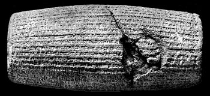
http://www.iranchamber.com/history/cyrus/cyrus_charter.php
A chronicle drawn up just after the conquest of Babylonia by Cyrus,
gives the history of the reign of Nabonidus ('Nabuna'id'), the last king
of Babylon, and of the fall of the Babylonian empire. In 538 BC there was
a revolt in Southern Babylonia, while the army of Cyrus entered the
country from the north.
Cyrus now assumed the title of "king of Babylon,"
claimed to be the descendant of the ancient kings, and made rich offerings
to the temples. At the same time he allowed the foreign populations who
had been deported to Babylonia to return to their old homes, carrying with
them the images of their gods. Among these populations were the Jews, who,
as they had no images, took with them the sacred vessels of the temple.
Christian exegetes regarded Cyrus as a prefiguration of the
Messiah .
Cyrus the Great figures in the Old Testament as the patron and deliverer
of the Jews from captivity. In the first year of his reign he was prompted
by Jehovah to make a decree that the temple in Jerusalem should be rebuilt
and that such Jews as cared to might return to their land for this
purpose. He sent back with them the sacred vessels which had been taken
from the temple and a considerable sum of money to buy building materials
with. Herodotus and other non-biblical historians of the time made no
mention of any of this.
Ashtaroth or Baal must have had some control during the time of Cambyses.
After the work had been stopped by enemies of the Jews it was recommended
under the exhortations of the prophets, and when the authorities asked the
Jews what right they had to build a temple they referred to the decree of
Cyrus.
Looeamong must have regained control in the time of Darius I.
Darius, who was then reigning, caused a search for this alleged decree to
be made, and it was found in the archives at Ecbatana ('Achmetha.' Ezra
6:2), whereupon Darius reaffirmed the decree and the work proceeded to its
triumphant close. Daniel was in the favor of Cyrus, and it was in that
year of Cyrus that he had the vision recorded in his tenth chapter.
Cyrus issued the decree of liberation to the Jews
(Ezra 1:1, 2), concerning which Daniel had prayed (Daniel 9:3) and
prophesied (v. 25). The edict of Cyrus for the rebuilding of the Second
Temple at Jerusalem marked a great epoch in the history of the Jewish
people. However, some of the non-Jewish peoples of Samaria hired
counselors to frustrate the Jews from completing the rebuilding throughout
the reign of Cyrus, Xerxes ('Ahasuerus'),
and Artaxerxes, until the reign of Darius. In 'Antiquities of the Jews' by
Flavius Josephus, Josephus says, "After the slaughter of the Magi, who,
upon the death of Cambyses, attained the government of the Persians for a
year, those families which were called the seven families of the Persians
appointed Darius, the son of Hystaspes, to be their king. Now he had made
a vow to God that if he came to be king he would send all the vessels of
God that were in Babylon to the temple at Jerusalem."
also
"the structure of the temple was brought to a conclusion by the prophecies
of Haggai and Zechariah, according to God's commands, and by the
injunctions of Cyrus and Darius the kings."
Darius discovered Cyrus' original decree "at Achmetha, in the palace that
is in the province of the Medes" (Ezra 6:2), and recommissioned the
building of the Jewish temple in Jerusalem.
It seems that Looeamong stepped aside during the reign of Xerxes for
Ashtaroth to bring about her own end in the war with Baal. In 484 BC
Xerxes (son of Darius I) took away the golden statue of Bel (Marduk,
Merodach) [a possible indication of Ashtaroth's power becoming restored].
From 483 he prepared his expedition with great care. In 480 BC Xerxes set
out from Sardis with a large fleet and a numerous army (some have claimed
that there were over 2,000,000). At first Xerxes was victorious
everywhere. The Greek fleet was beaten, Athens conquered, the Greeks
driven back to their last line of defence at the Isthmus of Corinth and in
the Bay of Salamis. The Battle of Salamis (September 28, 480) decided the
war. Of the later years of Xerxes little is known.
The following story may reveal the machinations of Looeamong, Baal and
Ashtaroth to influence apostate Jews.
The Debate over the historical
accuracy of the Book of Esther
[Ahasuerus is a name used several times in the Hebrew
Bible as well as related legends and apocrypha. The name is generally
thought to be equivalent to Xerxes, both being derived from the original
Persian Khashayar-sha.
Ahasuerus may refer to:
1) The name of the king of Persia in the Book of Esther. He is generally
identified with Xerxes I or Artaxerxes II Mnemon.
In 'The Book of Esther in the Light of History' (1923) it is posited that
the events of the book occurred during the reign of Artaxerxes II Mnemon,
in the context of a struggle between adherents of the monotheistic
Zoroastrianism [presumably upheld by Looeamong] and those who wanted to
bring back the Magian worship of Mithra and Anahita
[this is an indication of power that Ashtoreth (now fallen) had over the
apostate Zoroastrians]. Some Christian readers have tried to see the story
as a Christian allegory, in the same vein as the Song of Solomon.
The Greek version of the Book of Esther refers to him as Artaxerxes and
Josephus relates that this was the name by which he was known to the
Greeks. Similarly the Midrash of Esther Rabba, I, 3 identifies him as
Artaxerxes.
2) The name of a king of Persia in the Book of Ezra.
Jewish tradition regards him as the same as the Ahasuerus of the Book of
Esther. 19th century Bible scholars suggested that he might be Cambyses
II.
[Book of Ezra 4:4-7:
Then the people of the land weakened the hands of the people of Judah,
and troubled them in building, And hired counsellors against them, to
frustrate their purpose, all the days of Cyrus king of Persia, even
until the reign of Darius king of Persia. And in the reign of Ahasuerus,
in the beginning of his reign, wrote they unto him an accusation against
the inhabitants of Judah and Jerusalem. And in the days of Artaxerxes [this
must be the time of Artaxerxes I Longimanus 465-424 B.C] wrote Bishlam,
Mithredath, Tabeel; and the writing of the letter was written in the
Syrian tongue.]
3) The name of an ally of Nebuchadnezzar in the Book of Tobit. He is identified with Cyaxares I of Media. Mordecai was carried away from Jerusalem by Nebuchadnezzar in 597 B.C.E. The view that it was Mordecai is consistent with the identification of Ahasuerus with Cyaxares. A traditional Catholic view is that he is identical to the Ahasuerus of the Book of Daniel.
[Book of Daniel 9.1-2:
In the first year of Darius the son of Ahasuerus,
of the seed of the Medes, which was made king over the realm of the
Chaldeans; In the first year of his reign I Daniel perceived in the
books the number of the years, which according to the word of the LORD
to Jeremiah the prophet, must pass before the end of the desolations of
Jerusalem, namely, seventy years.]
4) The name of the father of Darius the Mede in the Book of Daniel.
Book of Daniel 10.1
In the third year of Cyrus king of
Persia a thing was revealed unto Daniel, whose name was called
Belteshazzar; and the thing was true, but the time appointed was long:
and he understood the thing, and had understanding of the vision.
Book of Daniel 11.1-2
Also I in the first year of Darius the Mede,
even I, stood to confirm and to strengthen him.]
Josephus names Astyages as the father of Darius the Mede and the description of the latter as uncle and father-in-law of Cyrus by mediaeval Jewish commentators matches Cyaxares II said to be the son of Astyages by Xenophon. Thus this Ahasuerus is commonly identified with Astyages. He is alternatively identified, together with the Ahasuerus of the Book of Tobit, as Cyaxares I, said to be the father of Astyages. Views differ on how to reconcile the sources in this case. One view is that the description of Ahasuerus as the father of Darius the Mede should be understood in the broader sense of grandfather or ancestor. Another view notes that on the Behistun Inscription, "Cyaxares" is a family name, and thus considers the description as literal, viewing Astyages as an intermediate ruler wrongly placed in the family line in the Greek sources.
In the Book of Esther, Ahasuerus is married to Vashti, whom he puts
aside after she rejects his offer to visit him during a feast. Mordecai's
cousin Hadassah is selected from the candidates to be Ahasuerus's new
wife. When she entered the royal harem she received the name Esther.
Hadassah means "myrtle" in Hebrew and the name Esther is most likely
related to the Median word for myrtle, astra, and the Persian word setareh
meaning star - the myrtle blossom resembles a twinkling star.
His prime minister Haman (an Agagite)
plots to have Ahasuerus kill all the Jews, without knowing that Esther is
Jewish. At the risk of endangering her own safety, Esther warns Ahasuerus
of Haman's plot to kill all the Jews. Haman and his sons are hanged on the
stake he had had built for Mordecai, and Mordecai becomes prime minister
in Haman's place. However, Ahasuerus's edict decreeing the murder of the
Jews cannot be rescinded, so he issues another edict allowing the Jews to
take up arms and kill their enemies, which they do.
Esther is (in the Hebrew version) one of only two books of the Bible
that do not directly mention God (the other is Song of Songs). It is the
only book of the Tanakh that is not represented among the Dead Sea
scrolls. It has often been compared to the first half of the Book of
Daniel and to the deuterocanonical Books of Tobit and Judith for its
subject matter.
By the time Esther was written, the foreign power visible on the horizon
as a future threat to Judah was the Macedonians of Alexander the Great,
who defeated the Persian empire about 150 years after the time of the
story of Esther; the Septuagint version noticeably calls Haman a
Macedonian where the Hebrew text describes him as an Agagite.
Esther is usually dated to the 3rd or 4th century B.C.E. Jewish tradition
regards it as a redaction by the Great Assembly of an original text
written by Mordecai. The Greek additions to Esther are dated to the 2nd
century B.C.E.
For the last hundred and fifty years, critical scholars have seen the Book
of Esther as a work of fiction, while traditionalists argue in favour the
story being historical.
The name Ahasuerus is seen to be based on Xerxes but the exploits of a
real Persian king do not enter into the Book of Esther, which is a
fictional tale of palace intrigue, attempted genocide and a brave Jewish
queen. In support of the idea that the story is a fiction, scholars have
pointed to the many improbabilities of the story (that Esther is taken
from the house of the Jew Mordecai, but is not known to be a Jew; that the
edicts of the Medes and Persians cannot be rescinded; that Ahasuerus would
agree to kill an entire people without being told their name; that
Ahasuerus would give the Jews leave to murder thousands of their enemies)
as suggesting that it is a fictional story. They also note that none of
the events depicted in Esther are attested from any other source.
As early as the eighteenth century, the lack of clear corroboration of any
of the details of the story of the Book of Esther with what was known of
Persian history from classical sources led some scholars to doubt that the
book was historically accurate.
From the late nineteenth century onwards, several scholars explored the
theory that the Book of Esther actually was a myth related to the spring
festival of Purim which may have had a mixed
West-Semitic/Akkadian/Canaanite origin. According to this interpretation,
the tale is about the triumph of the Babylonian deities Marduk (Merodach)
and Ishtar over the deities of Elam, or more likely, the renewal of life
in the spring and the casting out of the scapegoat of the old year.
Although this view is not widely held by the religious scholars today, it
remains well known.
The fact that the events of the Book of Esther gave rise to the spring
festival of Purim was a reason for scholars arguing that the story emerged
from seasonal myth. As the 19th/early 20th century scholars did not have
the benefit of the Ugaritic texts, they sought an
origin in Akkadian tradition rather than the more local West Semitic
cultures. In particular, these scholars drew comparisons between
individuals in the Book of Esther and various real and alleged Babylonian
and Elamite gods and goddesses.
Esther was equated with the similarly sounding Ishtar.
The custom of preparing hamantaschen at Purim is reminiscent of a
description of Ishtar in Jeremiah 7:18
The children gather wood, and the fathers kindle the fire, and the
women knead their dough, to make cakes to the queen of heaven, and to
pour out drink offerings unto other gods, that they may provoke me to
anger.
Hamantaschen literally means "Haman's pockets". Haman, the villain of
Purim, wore a triangular hat according to legend. A hamantasch is a cookie
in Jewish cuisine recognizable for its 3-cornered shape, made by rolling
the dough thin, cutting it into circles (of various sizes), placing
filling in the center, and folding in three sides. I don't understand why
the villain would be remembered in this way.
Mordecai was equated with Marduk (Merodach, Belos, Zeus, Bel-Merodach).
Vashti was said to be an Elamite goddess named Mashti.
Haman was said to be an Elamite god named Uman or Human (or other
variations) or alternatively a Babylonian demon.
The festival of Purim was equated with various real and conjectural pagan
festivals, including an alleged Elamite or Babylonian festival marking the
victory of Ishtar and Marduk over Uman and Mashti similar to the triumph
of Esther and Mordecai over their rivals Haman and Vashti. Other
suggestions were: the Babylonian New Year festival (Sumerian Zagmuk,
Akkadian Akitu, called Sacaea by Berosus) honouring Marduk — it was
suggested that purim ("lots") originally referred to a belief that the
gods chose one's fate for the year by lots.
These arguments were subsequently shown to be flawed:
Ishtar was well known to the Jews who officially opposed her worship. Her
name in Hebrew scriptures is Ashtoreth which is phonetically unrelated to
Esther despite the superficial similarity when transliterated into
English.
The name Mordecai is indeed most commonly connected with that of the god
Marduk but its meaning is understood to be "[servant] of Marduk". The name
Marduka or Marduku (considered equivalent to Mordecai) has been found as
the name of officials in the Persian court in thirty texts from the period
of Xerxes I and his father Darius, and may refer to up to four individuals
with the possibility that one of these is the Biblical Mordecai. Jewish
tradition relates that it was a replacement of Mordecai's Hebrew name
Bilshan. Similar accounts of Jews in exile being assigned names relating
to Babylonian gods is seen in the Book of Daniel.
An Elamite goddess named Mashti is purely conjectural and unattested in
sources, whereas "Vashti" can be understood as a genuine Persian name
meaning "beautiful".
An Elamite or Babylonian festival marking a victory of Ishtar and Marduk
over alleged Uman and Mashti is purely conjectural and unattested in
sources. The Babylonian New Year occurs at a very different date to Purim
(in the month of Nisan not Adar). A decision of fate by lots by the gods
is not attested in any sources.
Elamite theophoric elements such as Khuban, Khumban or Khumma are known
but are pronounced with an initial guttural consonant and not as Uman or
Human, and are phonetically unrelated to the Persian name Haman meaning
"magnificent".
Those arguing in favour of an historical reading of Esther, most commonly
identify Ahasuerus with Xerxes I or occasionally with Artaxerxes II (ruled
405-359 B.C.E.).
Herodotus wrote that Xerxes sought his harem after being defeated in the
Greco-Persian Wars. He makes no reference to individual members of the
harem with the exception of a domineering Queen consort Amestris, who has
often been identified with Vashti by those arguing the historical reading.
The identification is problematic however — Amestris remained a powerful
figure well into the reign of her son, Artaxerxes I while Vashti is
portrayed as dismissed in the early part of Xerxes's reign. (Alternative
attempts have been made to identify her with Esther, although Esther's
father is a Jew named Abihail and she is portrayed as merely one of
numerous concubines in Ahasuerus' harem.)
Strangely, the tale serves to denigrate the name of Haman, a name in the lineage of the Zarathustrian order of the 'first
Bible of Vind'yu. Also, the earliest accounts of Medes locate them in Hamadan, the word Achaemenian is translated from the
Old Persian word Haxâmanishiya, and that the Persian
name Haman means "magnificent".
The story hints of divine intervention in the remark of Mordecai to
Esther when he said "who knows whether you have not come to the kingdom
for such a time as this?" referring to Esther's destiny to become the
king's wife due to the circumstance that contested Vashti's personal
virtue and independence.
The defiance of Mordecai, whose strength of character refused to show
subordination to any master, resulted in a grave test for the Jews. It is
symbolic of the independence that the Israelites had enjoyed up until
their captivity.
The Book of Esther seems to be an allegory that
sends a message of retribution to evildoers, that their wicked plots shall
come upon their own heads. It reminds us of the emancipation promised to
those who live by the higher light from those who would seek "to get
mastery over them". Yet, carnage wreaked upon the enemies of the Jews, the
direct result of the heroine's (Esther) petition to the king, was
inflicted by the hand of the Jews themselves.
The heavenly defender of the Jews then was Looeamong. Because he "pursued
Ashtaroth in conjunction with Baal, and overthrew her and her kingdom, and
cast them into hell, he became as a lion, savage at the taste of blood".
Defying calls for restraint he said "Nay, till I have Baal also cast into
hell, I will not cease the carnage of mortal blood". So, in this case the
justice seems to be administered by the lower heavens.
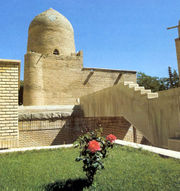
This example became a major day of celebration, not to be forgotten by
them.
Esther 9:26 Wherefore they called these days Purim after the name of
Pur. The Jews ordained, and took it upon themselves, and their
descendants, and upon all such as joined them, that without fail, that
they would keep these two days according to what was written, and at the
appointed time every year; And that these days should be remembered and
kept throughout every generation, every family, every province, and
every city; and that these days of Purim should not fail from among the
Jews, nor the memorial of them perish from their seed.
A Sanhedrin (or "council") is an assembly of 23 judges Biblically
required in every city. The Great Sanhedrin is an assembly of 71 of the
greatest Jewish judges who constituted the supreme court and legislative
body of ancient Israel. The make-up of the Great Sanhedrin included a
chief justice (Nasi), a vice chief justice, and sixty-nine general members
who all sat in the form of a semi-circle
when in session. When the Temple in Jerusalem was standing, (prior to its
destruction in 70 CE), the Great Sanhedrin would meet in the Hall of Hewn
Stones in the Temple during the day, except before festivals and Shabbat.
The Greek root for the name suggests that the institution may have
developed during the Hellenistic period. The Torah records God commanded
Moses as follows:
"Assemble for me seventy men of the elders of Israel, whom you know to be the people's elders and officers, and you shall take them to the Tent of Meeting, and they shall stand there with you."
Classical Rabbinic tradition holds that the Sanhedrin began with seventy
elders, headed by Moses, for a total of seventy-one. As individuals within
the Sanhedrin died, or otherwise became unfit for service, new members
underwent ordination, or Semicha. These ordinations continued, in an
unbroken line: from Moses to Joshua, the Israelite elders, the prophets
(including Ezra, Nehemiah) on to all the sages of the Sanhedrin. It was
not until sometime after the destruction of the Second Temple that this
line was broken, and the Sanhedrin dissolved.
Jewish tradition proposes non-Greek derivations of the term Sanhedrin.
The prayers for Purim, now used in the synagogue, as also the practice of springing rattles and other noisy demonstrations of anger, contempt, and scorn with which the name of Haman is greeted, are of much later date. The Jews kept these days holy in the time of Josephus, but today, though the synagogue has prescribed for them special prayers and portions of Scripture, they are chiefly marked by boisterous and uproarious merrymaking, even beyond the limits of decency.
A modern version of this allegory says:
"The Persian equinoctial ceremonies dedicated to Mithras (one of the
forty-nine Saviours listed in Oahspe) seem to have involved crucifixion,
when Haman the Wicked, standing for the winter sun, is crucified in Esther
(Easter?) to arise as the summer sun who is the
Saviour, Mithras".
Interesting that the Mazzaroth and modern 'pagan' revival all find a
solar, astrological or seasonal explanations of ancient worship. Indeed
some of the forty-nine Saviours (Ari or Aries, Mithra etc.) and even
Jesus, once represented the start of the zodiacal year or spring Equinox]
M. N. Dhalla says that King Vishtaspa was succeeded by weak kings and Eastern Iran soon lost political importance. Zarathushtra, likewise, was not blessed with successors of commanding personalities to carry on missionary work. His religion could not penetrate into Western Iran, where the cult of the Indo-Iranian divinities had a strong hold over the minds and hearts of the people. Mithra occupied the pre-eminent position among them, with the non-Iranian Anahita as the close second in importance. Ahura Mazda outshone Mithra. Mithra, Anahita, and other bagas, as seen from the inscriptions of the successors of Darius, accepted to work under the new supreme God.
Timeline of the period
Second Temple Judaism: c. 538 BCE-135 CE, Persian Period: 538-333, Celts
settle from Italy to Ireland: 500
Edict of Cyrus (first return from Exile): 538
525 Cambyses conquers Egypt, Cyprus, Samos
522 Darius I, Temple rebuilt: 520-515, Judean prophets Haggai and
Zechariah: 520
518 Darius regains Egypt, 499 Ionian War (revolt from Persia)
496 Rome defeats the Latin tribes at Lake Regillus
496 Sophocles (tragedian) is born, 495 Alexander I rules over Macedonia
494 The first victory of the plebeian class over the patricians for more
power
494 Tribunate established in Rome
493 Rome and Latin League make a treaty for protection against Etruscans
490 Darius I defeated by the Greeks at Marathon
486 Xerxes demands tribute from Greece but is refused
480 Xerxes invades Greece with 100,000 men, wins at Thermopylae
480 Persians suffer defeats by the Greeks at Salamis, Plataea and Mycale
480 Confucius dies, Warring States period begins in China
474 Carthaginians defeat the Etruscans in a naval battle at Cumae, 469
Birth of Socrates
465 Xerxes is murdered 465-425 Artaxerxes I (Longimanus)
460 Birth of Hippocrates, the father of modern medicine, Age of Pericles
in Athens
460 Inaros revolt in Egypt (Athenian support)
458 Ezra? [7th year Artaxerxes],
Torah (Pentateuch) given status as Scripture: ca. 450
457 First Peloponnesian war between Athens and Sparta
452 Wars over succession following the death of Alexander I in Macedonia
450 Laws of the Twelve Tables codified and published in Rome
449 Sacred War between Athens and Sparta over the Oracle of Delphi
448 Peace of Callias [Persia/Athens], 445 Nehemiah
447 The construction of the Parthenon begins
443 Office of the Censor is created in Rome
431 Second Peloponnesian War between Athens and Sparta
429 Birth of Plato (student of Socrates)
423-404 Darius II (Nothus), 404-359 Artaxerxes II (Mnemon), 404 Persia
reclaims Greek Asia Minor
413 Athens attacks Sicily and fails, 409 Carthage invades Sicily
404 Athens surrenders to Sparta to end the Peloponnesian War, 401 Sparta
goes to war with Persia
398 Amyrtaios frees Egypt, 359-338 Artaxerxes III (Ochus), 343 Egypt
reconquered, 336-330 Darius III
Hellenistic period: 333-63, Alexander the Great: 333/331, Ptolemaic rule
of Palestine 312-200
Coming of Rome to the east Mediterranean: ca. 230-146
Ptolemy IV Philopator, 221-203, Prophets (2nd division of Jewish
Scriptures) accepted as Scripture: c.200
Qumran community: ca. 200 BC-135 CE, Seleucid rule of Palestine 200-166
BCE
Death of Simon the Just: 198, Antiochus IV Epiphanes: 175-164, Maccabean
rebellion: 168/167-165
Hasmonean era: 165-63, Simon (Hasmonean) acclaimed high priest and
ethnarch: 140
John Hyrcanus I: 134-104, Rome (Pompey) annexes Palestine: 63
Roman period: 63 BCE - 140 CE, Herod, king of Judea: 40-4, Roman empire
begins: 31
Jews expelled from Rome: 19 CE, Pilate, governor of Judea: 26-36
Said date of crucifixion: 30, Attempt to place statue in Jewish temple: 41
Judean war against Rome: 66-74, Fall of Jerusalem: 70, Fall of Masada:
73/74
"Council of Jamnia": 90, Bar-Kokhba revolt: 132-135
From Oahspe
In the 1200th year after Fragapatti [5850 BC, in the time of the Deva], in
the east colony of Haraiti, one Ctusk (possibly Zohak of the Bundahishn),
a former Lord of Jehovih's host, renounced Jehovih, the Creator, and
falsely proclaimed himself Ahura, the All Master [Mazda]. He taught that
he had inspired Zarathustra and that he was Ahura'Mazda, the Personation
of Ormazd, who was Void and was life, death and resurrection. Ahura,
founded a second heaven in the heavenly region above the lands of Heleste.
In two hundred years Ahura's hosts inspired the Parsi'e'ans and the
Arabin'yans to emigrate by tens of thousands to the land of Heleste, which
was inhabited by druks and wanderers, full of wickedness. Ahura inspired
his immigrants to destroy the native druks. He abolished circumcision and
put no restriction on marriage, and so druks married with the worshippers
of Ahura. A fourth race rose up which was mongrel, being dark, short and
less noble. The mongrels, the worshippers of Ahura'Mazda triumphed in
India, China and Egypt. They built great cities and kingdoms, and ruled
over the I'huans to great injury and enslaved the Zarathustrians. Heleste
and Japan had become strongholds for Ahura, who had pursued the warfare
till all the Faithists in those two divisions had been put to death.
Ahura's emissaries discovered that by pressing the forehead flat, which
holds corporeal judgment, the judgment of the brain was driven up into
light-perceiving regions at the top of the head. After a'ji began to fall
Zarathustrians gave up celibacy, and some married with the mongrels, and
they with the druks, so the foundations of caste were broken up. Ahura
took advantage of the age of darkness to sow disbelief in Jehovih. In the
land of Heleste and Japan the name of Jehovih or the Great Spirit was not
taught, for none of these would be received. But the name Mazda, the
Creator; the Voice that spake to Zarathustra, the all highest light in the
soul was used. Hence it was known from that time forth that the origin of
the word Master, as applied to the Creator, sprang from those two
countries only. Vishnu protected the mortals of Vindyu and Jaffeth and
Arabin'ya, which were soon to be flooded by the hosts of Ahura being cast
down on the earth and his kingdoms precipitated to the earth. When a comet
fell on the earth darkness of twelve days followed and more than four
score hells founded within Ahura's heavenly regions, and he himself was
cast into one of them. Soon afterwards Abram, Po, Brahma, and Ea-Wah-Tah
were born.
Ahura Mazda itself is found in its Assyrian equivalent Assara Mazas in an inscription of Assurbanipal. Though the inscription bears the date of the reign of king Assurbanipal, it records the use of this Assyrian form of 'Ahura Maida' in the latter part of the second millennium. Ahura [Lord (Indo-Iranian)] Mazda [Wise (Iranian)] sits at the apex among the celestial beings of Garonmana [Garothman, ie. Heaven]. He is not begotten, nor is there one like unto him. Beyond him, apart from him, and without him nothing exists. He is the supreme being, brighter than the brightest of creation, higher than the highest heavens, older than the oldest in the universe. There are none to struggle successfully with him for the mastery of the heavens. He is the first and foremost, most perfect, almighty absolute sovereign, beneficent, changeless, the same now and for ever, moving all, yet moved by none. He will decide victory between the rival hosts of good and evil. He is the first possessor of felicity and joy. Many are his attributes. They are not accidents of his being, but are his very essence.
[There is little to distinguish him from Jehovih in the above. He is unapproachable, not as follows] He is also spoken of as distributing good and evil to men by his own hands, and as observing with his eyes all things hidden and open. He lives in the empyrean enthroned in his majesty. He is ever present in the straight paths that lead mankind to righteousness. In his resplendence he lives in the heavenly realms and wears the firmament as his garment. Ahura Mazda [like Krishna] has his celestial mansions in the highest heavens, upon the vast expanse of the earth and in the hearts of the righteous persons. He is transcendent in as much as he is infinitely more sublime and greater than his creatures. Yet he is not so remote and ineffable as not to be approached and addressed and greeted by his ardent worshippers. He is immanent in the sense that man can enter into close and loving relations with him, and own him as his father and brother and friend. He befriends those who seek his friendship and loves those who long for his love. Zarathushtra addresses Ahura Mazda as his friend. He is life's safest anchorage. With his good understanding, man can imitate him and be like unto him by promoting the welfare of all around him through righteousness.
Ahura Mazda is spirit in his being. The cardinal attribute Most Beneficent Spirit is his very essence. Zarathushtra conceives of Ahura Mazda in thought and apprehends him with his eye. He asks him to teach by the word of his mouth and to tell him with the very tongue of his mouth. The prophet prays for his vision and communion with him. He strives to approach him through Good Mind, and through his devoted supplications. With outstretched hands he aspires to reach him with songs of praise on his lips. Thus will he continue his praise, he says, as long as he has strength and vigour, and adds that the stars and the sun and the dawn all unite in singing praise unto him. In the beginning when Ahura Mazda lived in his supreme self-sufficiency, he conceived the thought to clothe the heavenly realm with light. He created light, and darkness was there, for darkness shadows light. He is the father and creator of the Amesha Spentas and of Geush Tashan (see below).
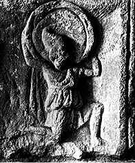
He upholds the earth and firmament from falling. He made the moon wax and wane, and determined the path of the sun and stars. He yoked swiftness to wind and clouds. He clothed the heavenly realms with light. He it was who made morning and noon and night. He created kine, waters and plants. He created human beings and their spirits, breathed life in their bodies and endowed them with the freedom of will. He has created the universe through his wisdom and rules it through wisdom. He is the most knowing one. He is the far-seeing and all-seeing one. He knows all that is done in the past and all that will be done in the future, and judges through his omniscience. Human beings have their masks drawn on their faces and none can see what is hidden within. But Ahura Mazda has an eye over them all and with penetrating eyes he sees their open and secret faults.
The great mission of the prophet is to lead all to see for themselves that their welfare depends on the faithful adherence to his laws. He exhorts his hearers to give a careful hearing to his words, understand with clear discernment what he tells them, and, with the discreet exercise of the freedom of the will, with which Ahura Mazda has endowed them, make their own choice of conduct. The divine lawgiver has established the moral order in the beginning of the world.
M. N. Dhalla continues:
"With the return of the pre-Zoroastrian divinities also came the ancient
rituals and sacrifices, offerings and libations. The beliefs and practices
of the old faith were engrafted on the religion. The writers ascribe them
to the authorship of Zarathushtra. [Ironically it is here that Oahspeans
will find a remnant of the original Zarathustrian religion (being careful
to discriminate between this and the corrupt Babylonian culture)]. He is
himself depicted as glorifying and worshipping the great Indo-Iranian
divinities whom he did not recognise in his Gathas. He is shown begging
them for various boons. The Indo-Iranian religion that Zarathushtra came
to replace by his religion of reform thus lives as an indissoluble part of
his religion. Zoroastrianism became a blend of the Indo-Iranian religion
and Zarathushtra's religion of reform. And so it remains up to the present
day."
[Unless a secret lineage exists beyond the reach of adventurers, the studies put forward by Zoroastrians themselves indicate that Zoroastrianism is, like the Essenes, Druids and Gnostics, a revived movement whose knowledge, and maybe even tradition, is interpreted from Scripture and history. Rather than speculating about many prophets with the name Zarathustra having existed at different times (as Martha Jones, quoting Higgins has said), the evidence suggests there is one only, whose time has been lost to us.
Page 87, 91, 591 & 649 Vol. 1 of "Anacalypsis" by Godfrey Higgins:
"Zoroaster...was the founder of the Magi, who were priests of the religion
of...whom the Sun was the visible form or emblem....In Persia they had
five Zoroasters [quoting "Nimrod" 231]....Seven Zoroasters are recorded by
different historians....How many Zoroasters there were, or whether more
than one, it is difficult to determine; but one of them was thought by
Hyde....to have lived in the time of Darius Hystaspes....There were
probably as many Zoroasters as cycles."
The reason why Zoroastrians (and historical authorities) popularly believe him to be ~600 BC seems to be because of their nationalistic adherence to Iranian history, where the father of Darius I (522-486) is Hystaspes (Vishtaspa), the legendary patron of Zoroaster. The Zarathustra that Dhalla, a Zoroastrian representative, portrays and follows bears more likeness to Paul the Apostle ie. a reformer (not a lawgiver) of an already existing Aryan/Zarathustrian religion, with a missionary zeal that poses the question: does this spirit have something in common with the Zarathushtra of Oahspe or does it get introduced with the efforts of the Pre-Christian Triunes to sway the Zadokite priests and convert apostate Jews, Levites and Zoroastrians to their cause.]
On July 1, 1881 the following spirit communication was then given:
[Note: I have chopped most out.]
I am Zarathustra, Zerdusht or Zoroaster, the Daniel of the Jewish Scriptures. I lived in the days of Nebuchadnezzar, Belshazzar, Darius Hydaspes and Cyrus. The Jewish book of Daniel, was stolen bodily from the books written by myself, or through me, concerning Ormuzd and Mithra. [The latest time when Daniel could have served under Nebuchadnezzar II is 562 BC, when he died, and the earliest time he could have been under Cyrus is 539 BC when he conquered Babylon. Therefore the shortest time when Daniel could have served under those kings is well over: 562 - 539 = 23 years. The earliest time he could have been under Darius I is 522 BC. 562 - 522 = 40 years.] The Hebrew book, called the 'Book of Daniel,' contains the account of the actual earthly experiences of Zoroaster at the court of Nebuchadnezzar, and the other kings whom I have already named. All that is mentioned as having transpired in the 'Book of Daniel' occurred through myself as a medium, and has no relation whatever to a Jewish Daniel, but solely relates to Zarathustra of the Persians. I was known as Aronamar at the court of Cyrus. I want you to understand that, at the court of that king, I was in the position of a philosopher, who, having reasoned upon the law of cause and effect, would stand at any court, or in any other condition of life. In the reign of Darius Hydaspes, I went through the ordeal of being cast into a lion's den (possibly 538 BC); but I was a medium, and was attended by a power that protected me from physical injury; but it was through what may be regarded as superior mesmeric and psychological power. I received this from spirits; and through that power I was enabled to calm the fury of lions. It was I, Zarathustra, who read the handwriting on the wall, in the days of Belshazzar, and I did this through the power of spirits. I assure you that I was the original Daniel, and the Jews appropriated my works. There was a religious teaching promulgated in the age in which I lived on earth, which was attributed to Hermes Trismegistus, that a child should be born of a virgin. This was a common belief at that time. Back of me and behind me lies what is known as the Phallic religion. That religion taught that the forces of nature express themselves in an individual unit. Back of, and beyond that was the philosophical religion taught by Hermes Trismegistus. This philosophical religion was derived from the planetary and stellar systems, and embodied the principle known to you moderns as the law of cause and effect. Back of and beyond that was a Hindoo-Chaldaic religion which took its rise at the base of the Himalaya mountains. There was also a very ancient Phoenician religion. The latter religions had, as their chief idea, the relations of heat and cold, and their effects in nature upon men and crops on which they depended for sustenance. And here I want you to observe what I say particularly. The great Western Continent -- by you called America -- was progressing, at one time, side by side with the Eastern Continent; and a man named Bochica taught all the laws of cause and effect, in Bolivia and Peru, long before Manco Capao and his wife appeared there. And I want you to say, at the close of your book, that all the sciences, and all the knowledge of antiquity are concentrated in two books. The nature of one of them (The Book of Revelation) has been explained to you by Apollonius of Tyana, and the other is the 'Book of Daniel.' Those two books open up to you the secrets of antiquity. By this I mean when properly understood and interpreted, but not when literally read.
The medium comments: The spirit forces with which Zarathustra was working, were four-fold, the leaders or chiefs, of which were, first, Hermes Trismegistus, the Egyptian philosopher and sage [mainstream scholarship dates the Hermetic texts to the 1st–3rd century CE, not to an ancient historical person]; second, Gautama Sakyia Buddha, the Hindoo medium and sage [mainstream dating places the historical Buddha at approximately 480–400 BCE]; third, himself, Zarathustra, the Median or Persian medium and sage, who lived 650 BC; and fourth, Apollonius of Tyana, the Cappadocian medium and sage, who lived from the beginning to the end of the first century AD. Another especially important statement made in reply to a question I asked was, that he was not the mythical Zoroaster, the founder of Magianism, or the religion of the Magian astrologers, who dated many centuries before himself, but that he was the author of the Zend-Avesta, and the founder of the theology in relation to Ormuzd and Mithra. The spirit had only communicated with me once and that more than three years before, as Aronamar. When he announced himself as Zarathustra or Zoroaster, and not as Aronamar, as I had come to know him, I was especially on the alert, and when he announced himself as Daniel of the Jewish Scriptures, I settled down into that conviction. When he stated he lived in the days of Nebuchadnezzar, Belshazzar, Darius Hydaspes and Cyrus, I felt very sure he had betrayed his purpose to deceive. It is true that in the Book of Daniel it is stated that that prophet and seer was at the courts of Nebuchadnezzar, Belshazzar, Darius the Mede, and Cyrus, king of Persia; but the spirit seems to have designedly mentioned a circumstance that shows that the time that he lived could be fixed with the greatest certainty, while the Book of Daniel is strangely at fault in fixing the time of the reign of the third mentioned king [Darius the Mede of the bible is not historically identifiable]. The spirit of Zoroaster says that he not only lived at the courts of the first two named Babylonian kings, but that he subsequently lived at the court of Darius "Hydaspes," as the spirit gave the surname. There is not a question that this designation of the king Darius, to whom he referred, was the Darius Hystaspes of the books of Ezra, Haggai and Zechariah. Whether Hystaspes or Hydaspes is the correct rendering, I have no means of determining. The difference is between the d and st. That Zarathustra lived and wrote in the reign of Darius Hystaspes is certain [I would disagree], and that Daniel did not live in the reign of Darius the Mede, seems equally certain.
[I assume he refers to Darius I (522-486 BC), the son of Hystaspes/Vishtaspa. He became King after Cyrus II, Cambyses and the false Bardiya/Pseudo-Smerdis/Guatama the Magian [magush] reigned. Most think Darius the Mede was Gubaru, the governor of Gutium (Assyria) under Belshazzar, who went over to the Persian side when they conquered Babylon in 539 BC. He became the first governor of Babylon.
The time of Darius's father Hystaspes/Vishtaspa is avoided. From the following information:
Arsames 615-? B.C. Arshaam in Persian, son of Ariaramnes
Hystaspes (Vishtaasp in Persian) son of Arsames
522-486 B.C. Darius I son of Hystaspes
it can be seen why Zoroastra, being contemporary with Vishtaspa, is thought to have existed about 600 BC.]
The medium continues: Now as Zoroaster the Magian seer knew under what king's reign he lived and wrote, and the Jewish prophet Daniel did not, we conclude that justice requires us to believe the spirit of Zoroaster, and to disbelieve the Book of Daniel, so far as that very essential point is concerned. Nothing has more puzzled theologians and historical critics, than to find a place in history for the king Darius of the Book of Daniel. [Since the time of Darius the Mede is after 539 BC, and the time of Darius I is even after him (522-486 BC), I would have thought Darius the Mede was closer to Zoroastra's time.]
From "Zarathustra or Zerdusht"
Some modern scholars believe that the four visions of Daniel 7, 8, 9, and 10-12 were intended to reassure Jewish martyrs persecuted between 176 and 164 BC by the Syrian monarch Antiochus IV Epiphanes that the Syrian onslaught would swiftly pass as did Babylonian, Persian, and Greek. Verse 12:2-3 in the book of Daniel, credited to a legendary Daniel (who never wrote it), was an expression of hope for Resurrection and eternal life for saints and sinners impelled by this historical crisis. "The earliest copy of the book of Daniel is dated around 125-100 B.C.E. The Old Testament apocryphal book 'Wisdom of Jesus Son of Sirach', written in Hebrew around 200-180 B.C.E., lists the (Jewish) 'famous men' in chapters 44-51: Joseph (the counterpart of Daniel at the Pharaoh's court) and the major prophets (Isaiah, Jeremiah, Ezekiel) are named, but not Daniel. Furthermore, the book of Daniel was not originally included in 'the prophets'. In Daniel 7 the expression 'son of man' appears, which is important for Christian understanding of Jesus. The heavenly Son of Man appears in a vision in Daniel 7:13 in which an Ancient of Days appoints 'one like a son of man' to execute justice in the destruction of the evil ones. [Micah described six hundred years earlier a descendant of David "whose origin is from of old, from ancient days."] This human figure is best understood as an angel. Later on in Daniel, resurrection is promised both for the faithful dead and for villains, who will be resurrected so that they may be sentenced to eternal perdition. Hammaskilim ('those who are wise'), apparently the elite of the apocalyptic group, will then shine as the stars in heaven (Dan 12:3). The Son of Man "first appears as pre-existent in the apocryphal First Book of Enoch, which was originally written in Hebrew or Aramaic about 150 B.C.E. From that period on, the concept of the Messiah who was created in the six days of Creation, or even prior to them or who was born at variously stated subsequent dates and was then hidden to await his time, became a standard feature of Jewish Messianic eschatology."
According to Bernard Muller, ("The Prophesies of Daniel"), the beasts
can be defined as:
7:4 "The first was like a lion, and had eagle's wings." - Belshazzar (Neo
Babylonian empire). Daniel's vision supposedly occurred during
Belshazzar's reign.
7:5 "And suddenly another beast, a second, like a bear. It was raised up
on one side, and had three ribs in its mouth between its teeth" - Cyrus
the Great (Persian empire). The three ribs are Media, Lydia and Babylon.
7:6 "After this I looked, and there was another, like a leopard, which had
on its back four wings of a bird. The beast also had four heads, and
dominion was given to it." - Alexander the Great (Greek/Macedonian
empire). The four heads are the Hellenist kingdoms which resulted from the
division of Alexander's empire.
7:7 "After this I saw in the night visions, and behold, a fourth beast,
dreadful and terrible, exceedingly strong" with "huge iron teeth" and "ten
horns" - Antiochus IV Epiphanes (Seleucid kingdom). The ten horns are the
ten kings who preceded Antiochus.
The Prophesies of Daniel
Book of Daniel 1.1-7:
In the third year of the reign of Jehoiakim king of Judah came
Nebuchadnezzar king of Babylon unto Jerusalem, and besieged it. And the
Lord gave Jehoiakim king of Judah into his hand, with part of the
vessels of the house of God: which he carried into the land of Shinar to
the house of his god; and he brought the vessels into the treasure house
of his god. And the king spake unto Ashpenaz that he should bring
certain of the children of Israel, and of the king's seed; Children in
whom was no blemish, and skilful in all wisdom, and cunning in
knowledge, and understanding science, and such as had ability in them to
stand in the king's palace, and whom they might teach the learning and
the tongue of the Chaldeans. Now among these were of the children of
Judah, Daniel, Hananiah, Mishael, and Azariah:
Book of Daniel 2.1
And in the second year of the reign of Nebuchadnezzar Nebuchadnezzar
dreamed dreams, wherewith his spirit was troubled, and his sleep brake
from him. 2.31 Daniel answered in the presence of the king, and said,
"Thou, O king, sawest, and behold a great image. This great image, whose
brightness was excellent, stood before thee; and the form thereof was
terrible. This image's head was of fine gold, his breast and his arms of
silver, his belly and his thighs of brass, His legs of iron, his feet
part of iron and part of clay. Thou sawest till that a stone was cut out
without hands, which smote the image upon his feet that were of iron and
clay, and brake them to pieces. Then was the iron, the clay, the brass,
the silver, and the gold, broken to pieces together, and became like the
chaff of the summer threshingfloors; and the wind carried them away,
that no place was found for them: and the stone that smote the image
became a great mountain, and filled the whole earth. This is the dream;
and we will tell the interpretation thereof before the king. Thou art
this head of gold. And after thee shall arise another kingdom inferior
to thee, and another third kingdom of brass, which shall bear rule over
all the earth. And the fourth kingdom shall be strong as iron: forasmuch
as iron breaketh in pieces and subdueth all things: and as iron that
breaketh all these, shall it break in pieces and bruise. And whereas
thou sawest the feet and toes, part of potters' clay, and part of iron,
the kingdom shall be divided; but there shall be in it of the strength
of the iron, forasmuch as thou sawest the iron mixed with miry clay. And
as the toes of the feet were part of iron, and part of clay, so the
kingdom shall be partly strong, and partly broken. And whereas thou
sawest iron mixed with miry clay, they shall mingle themselves with the
seed of men: but they shall not cleave one to another, even as iron is
not mixed with clay. And in the days of these kings shall the God of
heaven set up a kingdom, which shall never be destroyed: and the kingdom
shall not be left to other people, but it shall break in pieces and
consume all these kingdoms, and it shall stand for ever. Forasmuch as
thou sawest that the stone was cut out of the mountain without hands,
and that it brake in pieces the iron, the brass, the clay, the silver,
and the gold; the great God hath made known to the king what shall come
to pass hereafter: and the dream is certain, and the interpretation
thereof sure.
Book of Daniel 4.5
Nebuchadnezzar the king, unto all people, nations, and languages, that
dwell in all the earth saw a dream which made me afraid, and the
thoughts upon my bed and the visions of my head troubled me. Therefore
made I a decree to bring in all the wise men of Babylon before me, that
they might make known unto me the interpretation of the dream. 4:18-27
This dream I king Nebuchadnezzar have seen. Then Belteshazzar said: The
tree that thou sawest, which grew, and was strong, whose height reached
unto the heaven, and the sight thereof to all the earth; Whose leaves
were fair, and the fruit thereof much, and in it was meat for all; under
which the beasts of the field dwelt, and upon whose branches the fowls
of the heaven had their habitation: It is thou, O king, that art grown
and become strong: for thy greatness is grown, and reacheth unto heaven,
and thy dominion to the end of the earth. And whereas the king saw a
watcher and an holy one coming down from heaven, and saying, Hew the
tree down, and destroy it; yet leave the stump of the roots thereof in
the earth, even with a band of iron and brass, in the tender grass of
the field; and let it be wet with the dew of heaven, and let his portion
be with the beasts of the field, till seven times pass over him; This is
the interpretation, O king, and this is the decree of the most High,
which is come upon my lord the king: That they shall drive thee from
men, and thy dwelling shall be with the beasts of the field, and they
shall make thee to eat grass as oxen, and they shall wet thee with the
dew of heaven, and seven times shall pass over thee, till thou know that
the most High ruleth in the kingdom of men, and giveth it to whomsoever
he will. And whereas they commanded to leave the stump of the tree
roots; thy kingdom shall be sure unto thee, after that thou shalt have
known that the heavens do rule.
Book of Daniel 5:1-5
Belshazzar the king made a great feast. Belshazzar, whiles he tasted
the wine, commanded to bring the golden and silver vessels which his
father Nebuchadnezzar had taken out of the temple which was in
Jerusalem; that the king might drink therein. They drank wine, and
praised the gods of gold, and of silver, of brass, of iron, of wood, and
of stone. In the same hour came forth fingers of a man's hand, and wrote
over against the candlestick upon the plaister of the wall of the king's
palace: and the king saw the part of the hand that wrote. 5:17-31 Then
Daniel said before the king, And this is the writing that was written,
MENE, MENE, TEKEL, UPHARSIN. This is the interpretation of the thing:
MENE; God hath numbered thy kingdom, and finished it. TEKEL; Thou art
weighed in the balances, and art found wanting. PERES; Thy kingdom is
divided, and given to the Medes and Persians. In that night was
Belshazzar the king of the Chaldeans slain. And Darius the Mede (or
Median) took the kingdom, being about threescore and two years old.
Book of Daniel 6:1-24
It pleased Darius to set over the kingdom an hundred and twenty
satraps, which should be over the whole kingdom; And over these three
presidents, of whom Daniel was first. Then the presidents and princes
(satraps) sought to find grounds for complaint against Daniel but they
could find none. Then these satraps assembled together and said to King
Darius: All the governors have consulted together to make a firm decree,
that whosoever shall ask a petition of any God or man for thirty days,
save of thee, O king, he shall be cast into the den of lions; that it be
not changed, according to the law of the Medes and Persians. Now when
Daniel knew that the writing was signed, he went into his house and
kneeled three times a day, and prayed, and gave thanks before his God,
as he did aforetime. Then these men assembled, and found Daniel praying
and making supplication before his God. Then they came near, and spake
before the king concerning the king's decree. Then the king, when he
heard these words, was sore and set his heart on Daniel to deliver him:
and he laboured till the going down of the sun. Then the king commanded,
and they brought Daniel, and cast him into the den of lions. Then the
king arose and went unto the den of lions and said to Daniel, "is thy
God able to deliver thee from the lions"? Daniel said, My God hath sent
his angel, and hath shut the lions' mouths, that they have not hurt me.
And the king commanded those men which had accused Daniel to be cast
into the den of lions, them, their children, and their wives; and the
lions had the mastery of them. [This lesson is reminiscent of the
lesson learnt in the book of Esther.]
Book of Daniel 7.1-8
In the first year of Belshazzar king of Babylon Daniel had a dream and
visions of his head upon his bed: then he wrote the dream, and told the
sum of the matters. Daniel said, I saw in my vision by night, and,
behold, the four winds of the heaven strove upon the great sea. And four
great beasts came up from the sea, diverse one from another. The first
was like a lion, and had eagle's wings: I beheld till the wings thereof
were plucked, and it was lifted up from the earth, and made stand upon
the feet as a man, and a man's heart was given to it. And behold another
beast, a second, like to a bear, and it raised up itself on one side,
and it had three ribs in the mouth of it between the teeth of it: and
they said thus unto it, Arise, devour much flesh. After this I beheld,
and lo another, like a leopard, which had upon the back of it four wings
of a fowl; the beast had also four heads; and dominion was given to it.
After this I saw in the night visions, and behold a fourth beast,
dreadful and terrible, and strong exceedingly; and it had great iron
teeth: it devoured and brake in pieces, and stamped the residue with the
feet of it: and it was diverse from all the beasts that were before it;
and it had ten horns. I considered the horns, and, behold, there came up
among them another little horn, before whom there were three of the
first horns plucked up by the roots: and, behold, in this horn were eyes
like the eyes of man, and a mouth speaking great things. 7:9-12 I beheld
till the thrones were cast down, and the Ancient of days did sit, whose
garment was white as snow, and the hair of his head like the pure wool:
his throne was like the fiery flame, and his wheels as burning fire. A
fiery stream issued and came forth from before him: thousand thousands
ministered unto him, and ten thousand times ten thousand stood before
him: the judgment was set, and the books were opened. I beheld then
because of the voice of the great words which the horn spake: I beheld
even till the beast was slain, and his body destroyed, and given to the
burning flame. As concerning the rest of the beasts, they had their
dominion taken away: yet their lives were prolonged for a season and
time. 7:13-15 I saw in the night visions, and, behold, one like the Son
of man came with the clouds of heaven, and came to the Ancient of days,
and they brought him near before him. And there was given him dominion,
and glory, and a kingdom, that all people, nations, and languages,
should serve him: his dominion is an everlasting dominion, which shall
not pass away, and his kingdom that which shall not be destroyed. I came
near unto one of them that stood by, and asked him the truth of all
this. So he told me, and made me know the interpretation of the things.
7:17-21 These great beasts, which are four, are four kings, which shall
arise out of the earth. But the saints of the most High shall take the
kingdom, and possess the kingdom for ever, even for ever and ever. Then
I would know the truth of the fourth beast, which was diverse from all
the others, And of the ten horns that were in his head, and of the other
which came up, and before whom three fell; even of that horn that had
eyes, and a mouth that spake very great things, whose look was more
stout than his fellows. I beheld, and the same horn made war with the
saints, and prevailed against them; 7:22-27 Until the Ancient of days
came, and judgment was given to the saints of the most High; and the
time came that the saints possessed the kingdom. Thus he said, The
fourth beast shall be the fourth kingdom upon earth, which shall be
diverse from all kingdoms, and shall devour the whole earth, and shall
tread it down, and break it in pieces. And the ten horns out of this
kingdom are ten kings that shall arise: and another shall rise after
them; and he shall be diverse from the first, and he shall subdue three
kings. And he shall speak great words against the most High, and shall
wear out the saints of the most High, and think to change times and
laws: and they shall be given into his hand until a time and times and
the dividing of time. But the judgment shall sit, and they shall take
away his dominion, to consume and to destroy it unto the end. And the
kingdom and dominion, and the greatness of the kingdom under the whole
heaven, shall be given to the people of the saints of the most High,
whose kingdom is an everlasting kingdom, and all dominions shall serve
and obey him.
Book of Daniel 8:1-10
In the third year of the reign of king Belshazzar a vision appeared
unto me, Daniel. I was at Shushan in the palace, which is in the
province of Elam. I saw there stood before the river a ram which had two
horns: and the two horns were high; but one was higher than the other,
and the higher came up last. I saw the ram pushing westward, and
northward, and southward; so that no beasts might stand before him,
neither was there any that could deliver out of his hand; but he did
according to his will, and became great. And as I was considering,
behold, an he goat came from the west on the face of the whole earth,
and touched not the ground: and the goat had a notable horn between his
eyes. And he came to the ram that had two horns, which I had seen
standing before the river, and ran unto him in the fury of his power.
And I saw him come close unto the ram, and he was moved with choler
against him, and smote the ram, and brake his two horns: and there was
no power in the ram to stand before him, but he cast him down to the
ground, and stamped upon him: and there was none that could deliver the
ram out of his hand. Therefore the he goat waxed very great: and when he
was strong, the great horn was broken; and for it came up four notable
ones toward the four winds of heaven. And out of one of them came forth
a little horn, which waxed exceeding great, toward the south, and toward
the east, and toward the pleasant land. And it waxed great, even to the
host of heaven; and it cast down some of the host and of the stars to
the ground, and stamped upon them. 8:11-17 Yea, he magnified himself
even to the prince of the host, and by him the daily sacrifice was taken
away, and the place of the sanctuary was cast down. And an host was
given him against the daily sacrifice by reason of transgression, and it
cast down the truth to the ground; and it practised, and prospered. Then
I heard one saint speaking, and another saint said unto that certain
saint which spake, How long shall be the vision concerning the daily
sacrifice, and the transgression of desolation, to give both the
sanctuary and the host to be trodden under foot? And he said unto me,
Unto two thousand and three hundred days [2300/365 = 6.3 years]; then
shall the sanctuary be cleansed. And it came to pass, when I had seen
the vision and sought for the meaning, then there stood before me as the
appearance of a man. And I heard a man's voice say, Gabriel, make this
man to understand the vision. So he said unto me, Understand, O son of
man: for at the time of the end shall be the vision. 8:18 Now as he was
speaking with me, I was in a deep sleep on my face toward the ground:
but he touched me, and set me upright. And he said, Behold, I will make
thee know what shall be in the last end of the indignation: for at the
time appointed the end shall be. The ram which thou sawest having two
horns are the kings of Media and Persia. And the rough goat is the king
of Grecia: and the great horn that is between his eyes is the first
king. Now that being broken, whereas four stood up for it, four kingdoms
shall stand up out of the nation, but not in his power. And in the
latter time of their kingdom, when the transgressors are come to the
full, a king of fierce countenance, and understanding dark sentences,
shall stand up. And his power shall be mighty, but not by his own power:
and he shall destroy wonderfully, and shall prosper, and practise, and
shall destroy the mighty and the holy people. And through his policy
also he shall cause craft to prosper in his hand; and he shall magnify
himself in his heart, and by peace shall destroy many: he shall also
stand up against the Prince of princes; but he shall be broken without
hand. And the vision of the evening and the morning which was told is
true: wherefore shut thou up the vision; for it shall be for many days.
Book of Daniel 9.1
In the first year of Darius the son of Ahasuerus, of the seed of the
Medes, was made king over the realm of the Chaldeans; In the first year
of his reign I Daniel understood by books the number of the years,
whereof the word of the LORD came to Jeremiah the prophet, that he would
accomplish seventy years in the desolations of Jerusalem. 9:25 Whiles I
was speaking in prayer, even the man Gabriel, whom I had seen in the
vision at the beginning, being caused to fly swiftly, touched me about
the time of the evening oblation. And he said, O Daniel, I am now come
forth to give thee skill and understanding. Seventy weeks are determined
upon thy people and upon thy holy city, to finish the transgression, and
to make an end of sins, and to make reconciliation for iniquity, and to
bring in everlasting righteousness, and to seal up the vision and
prophecy, and to anoint the most Holy. Know therefore and understand,
that from the going forth of the commandment to restore and to build
Jerusalem unto the Messiah the Prince shall be seven weeks, and
threescore and two weeks: the street shall be built again, and the wall,
even in troublous times. 9:26 And after threescore and two weeks shall
Messiah be cut off, but not for himself: and the people of the prince
that shall come shall destroy the city and the sanctuary; and the end
thereof shall be with a flood, and unto the end of the war desolations
are determined. And he shall confirm the covenant with many for one
week: and in the midst of the week he shall cause the sacrifice and the
oblation to cease, and for the overspreading of abominations he shall
make it desolate, even until the consummation, and that determined shall
be poured upon the desolate.
Book of Daniel 10.1
In the third year of Cyrus was revealed unto Daniel, whose name was
called Belteshazzar; and the thing was true, but the time appointed was
long: and had understanding of the vision. 10:5 I looked, and behold a
certain man clothed in linen, whose loins were girded with fine gold of
Uphaz: His body also was like the beryl, and his face as the appearance
of lightning, and his eyes as lamps of fire, and his arms and his feet
like in colour to polished brass, and the voice of his words like the
voice of a multitude. 10:11 And he said unto me, O Daniel, I am come for
thy words. But the prince of Persia withstood me one and twenty days:
but, lo, Michael, one of the chief princes, came to help me; and I
remained there with the kings of Persia. Now I am come to make thee
understand what shall befall thy people in the latter days: for yet the
vision is for many days. 10:20 Then said he, Knowest thou wherefore I
come unto thee? and now will I return to fight with the prince of
Persia: and when I am gone forth, lo, the prince of Grecia shall come.
10:21 But I will shew thee that which is noted in the scripture of
truth: and there is none that holdeth with me in these things, but
Michael your prince.
Book of Daniel 11.1-5
In the first year of Darius the Mede I stood to confirm and to
strengthen him. And now will I shew thee the truth. Behold, there shall
stand up yet three kings in Persia; and the fourth shall be far richer
than they all: and by his strength through his riches he shall stir up
all against the realm of Grecia. And a mighty king shall stand up, that
shall rule with great dominion, and do according to his will. And when
he shall stand up, his kingdom shall be broken, and shall be divided
toward the four winds of heaven; and not to his posterity, nor according
to his dominion which he ruled: for his kingdom shall be plucked up,
even for others beside those. And the king of the south shall be strong,
and one of his princes; and he shall be strong above him, and have
dominion; his dominion shall be a great dominion. 11.6-8 And in the end
of years they shall join themselves together; for the king's daughter of
the south shall come to the king of the north to make an agreement: but
she shall not retain the power of the arm; neither shall he stand, nor
his arm: but she shall be given up, and they that brought her, and he
that begat her, and he that strengthened her in these times. But out of
a branch of her roots shall one stand up in his estate, which shall come
with an army, and shall enter into the fortress of the king of the
north, and shall deal against them, and shall prevail: And shall also
carry captives into Egypt their gods, with their princes, and with their
precious vessels of silver and of gold; and he shall continue more years
than the king of the north. 11:9-13 So the king of the south shall come
into his kingdom, and shall return into his own land. But his sons shall
be stirred up, and shall assemble a multitude of great forces: and one
shall certainly come, and overflow, and pass through: then shall he
return, and be stirred up, even to his fortress. And the king of the
south shall be moved with choler, and shall come forth and fight with
him, even with the king of the north: and he shall set forth a great
multitude; but the multitude shall be given into his hand. And when he
hath taken away the multitude, his heart shall be lifted up; and he
shall cast down many ten thousands: but he shall not be strengthened by
it. For the king of the north shall return, and shall set forth a
multitude greater than the former, and shall certainly come after
certain years with a great army and with much riches. 11:14-20 And in
those times there shall many stand up against the king of the south:
also the robbers of thy people shall exalt themselves to establish the
vision; but they shall fall. So the king of the north shall come, and
cast up a mount, and take the most fenced cities: and the arms of the
south shall not withstand, neither his chosen people, neither shall
there be any strength to withstand. But he that cometh against him shall
do according to his own will, and none shall stand before him: and he
shall stand in the glorious land, which by his hand shall be consumed.
He shall also set his face to enter with the strength of his whole
kingdom, and upright ones with him; thus shall he do: and he shall give
him the daughter of women, corrupting her: but she shall not stand on
his side, neither be for him. After this shall he turn his face unto the
isles, and shall take many: but a prince for his own behalf shall cause
the reproach offered by him to cease; without his own reproach he shall
cause it to turn upon him. Then he shall turn his face toward the fort
of his own land: but he shall stumble and fall, and not be found. Then
shall stand up in his estate a raiser of taxes in the glory of the
kingdom: but within few days he shall be destroyed, neither in anger,
nor in battle. 11:21-30 And in his estate shall stand up a vile person,
to whom they shall not give the honour of the kingdom: but he shall come
in peaceably, and obtain the kingdom by flatteries. And with the arms of
a flood shall they be overflown from before him, and shall be broken;
yea, also the prince of the covenant. And after the league made with him
he shall work deceitfully: for he shall come up, and shall become strong
with a small people. He shall enter peaceably even upon the fattest
places of the province; and he shall do that which his fathers have not
done, nor his fathers' fathers; he shall scatter among them the prey,
and spoil, and riches: yea, and he shall forecast his devices against
the strong holds, even for a time. And he shall stir up his power and
his courage against the king of the south with a great army; and the
king of the south shall be stirred up to battle with a very great and
mighty army; but he shall not stand: for they shall forecast devices
against him. Yea, they that feed of the portion of his meat shall
destroy him, and his army shall overflow: and many shall fall down
slain. And both of these kings' hearts shall be to do mischief, and they
shall speak lies at one table; but it shall not prosper: for yet the end
shall be at the time appointed. Then shall he return into his land with
great riches; and his heart shall be against the holy covenant; and he
shall do exploits, and return to his own land. At the time appointed he
shall return, and come toward the south; but it shall not be as the
former, or as the latter. For the ships of Chittim shall come against
him: therefore he shall be grieved, and return, and have indignation
against the holy covenant: so shall he do; he shall even return, and
have intelligence with them that forsake the holy covenant. 11:31-37 And
arms shall stand on his part, and they shall pollute the sanctuary of
strength, and shall take away the daily sacrifice, and they shall place
the abomination that maketh desolate. And such as do wickedly against
the covenant shall he corrupt by flatteries: but the people that do know
their God shall be strong, and do exploits. And they that understand
among the people shall instruct many: yet they shall fall by the sword,
and by flame, by captivity, and by spoil, many days. Now when they shall
fall, they shall be holpen with a little help: but many shall cleave to
them with flatteries. And some of them of understanding shall fall, to
try them, and to purge, and to make them white, even to the time of the
end: because it is yet for a time appointed. And the king shall do
according to his will; and he shall exalt himself, and magnify himself
above every god, and shall speak marvellous things against the God of
gods, and shall prosper till the indignation be accomplished: for that
that is determined shall be done. Neither shall he regard the God of his
fathers, nor the desire of women, nor regard any god: for he shall
magnify himself above all. 11:38-45 But in his estate shall he honour
the God of forces: and a god whom his fathers knew not shall he honour
with gold, and silver, and with precious stones, and pleasant things.
Thus shall he do in the most strong holds with a foreign god, whom he
shall acknowledge and increase with glory: and he shall cause them to
rule over many, and shall divide the land for gain. And at the time of
the end shall the king of the south push at him: and the king of the
north shall come against him like a whirlwind, with chariots, and with
horsemen, and with many ships; and he shall enter into the countries,
and shall overflow and pass over. He shall enter also into the glorious
land, and many countries shall be overthrown: but these shall escape out
of his hand, even Edom, and Moab, and the chief of the children of
Ammon. He shall stretch forth his hand also upon the countries: and the
land of Egypt shall not escape. But he shall have power over the
treasures of gold and of silver, and over all the precious things of
Egypt: and the Libyans and the Ethiopians shall be at his steps. But
tidings out of the east and out of the north shall trouble him:
therefore he shall go forth with great fury to destroy, and utterly to
make away many. And he shall plant the tabernacles of his palace between
the seas in the glorious holy mountain; yet he shall come to his end,
and none shall help him.
Michael and the Last Judgement, Book of Daniel 12:1-4
And at that time shall Michael stand up, the great prince which
standeth for the children of thy people: and there shall be a time of
trouble, such as never was since there was a nation even to that same
time: and at that time thy people shall be delivered, every one that
shall be found written in the book. And many of them that sleep in the
dust of the earth shall awake, some to everlasting life, and some to
shame and everlasting contempt. And they that be wise shall shine as the
brightness of the firmament; and they that turn many to righteousness as
the stars for ever and ever. But thou, O Daniel, shut up the words, and
seal the book, even to the time of the end: many shall run to and fro,
and knowledge shall be increased. 12:5-13 Then I Daniel looked, and,
behold, there stood other two, the one on this side of the bank of the
river, and the other on that side of the bank of the river. And one said
to the man clothed in linen, which was upon the waters of the river, How
long shall it be to the end of these wonders? And I heard the man
clothed in linen, which was upon the waters of the river, when he held
up his right hand and his left hand unto heaven, and sware by him that
liveth for ever that it shall be for a time, times, and an half; and
when he shall have accomplished to scatter the power of the holy people,
all these things shall be finished. Then said I, O my Lord, what shall
be the end of these things? And he said, Many shall be purified, and
made white, and tried; but the wicked shall do wickedly: and none of the
wicked shall understand; but the wise shall understand. And from the
time that the daily sacrifice shall be taken away, and the abomination
that maketh desolate set up, there shall be a thousand two hundred and
ninety days [1290/365 = 3.5 years]. Blessed is he that waiteth, and
cometh to the thousand three hundred and five and thirty days [1335/365
= 3.66 years]. But go thou thy way till the end be: for thou shalt rest,
and stand in thy lot at the end of the days.
Thoth (or Tehuti), Mercurius or Mercury, "the first Hermes" "the great one" to whom ancient writers attribute the origin of human science and the invention of astrology and the zodiac, the great scribe who first composed books of astronomy, "the second Hermes", "the Greek Logos" and Hermes Trismegistus meaning the "thrice greatest Hermes" by some believed to be Adam, Seth, and Enoch who according to legend carried an emerald, upon which was recorded all of philosophy — are all sometimes understood to be the same. Newton said that Mercurius is called thrice greatest, having three parts of the philosophy of the whole world, since he signifies the Mercury of the philosophers and has dominion in the mineral kingdom, the vegetable kingdom, and the animal kingdom. The hermetic maxim "As above, so below" is attributed to the Egyptian god Thoth (Hermes Trismegistus). Thoth's depiction in the Egyptian Judgment scenes as the Ibis headed Scribe recording the destiny of the weighing-in of the spirit's heart against the feather of truth, and the tradition that Thoth invented the earliest writing, Hieroglyphics, lead Rev. C. Th. Odhner to conclude that Thoth represented the ancients' concept of the Ancient Word. [In Fragapatti Ch 28.25 the editor notes that the origin of Ibis worship comes from Oibe, when mortals made images of birds (oibe or ibis), and dedicate them to Oibe. Later Oibe turned false and assumed the title "Thor, the Only Begotten Son of All Light, All Light Personated, Personal Son of Mi, the Virgin Universe". Spirits persuaded mortals to worship Thor and Ibis. Elsewhere the editor notes that Ibis, Iboi is a Phoenician word. Book of Wars Ch 23.3 says Baal was bestowed the Sign of the Sacred Bird, Iboi, and Ashtaroth was bestowed with the fete by De'yus. So Baal, and not Thothma was the Ibis scribe. Moreover, Ashtaroth could be Ananke, the personification of "Fate", or Themis the Goddess of "Necessity"] Thoth as the Greek Hermes (or his Roman equivalent Mercury) was shown with birds' wings on his cap and sandals and caduceus to indicate him as the messenger between gods and man. Caesar stated that the Norse Odin "is our Mercury". Odin shared attributes of Thoth. He surrendered his eye to the well for wisdom and invented the original sacred language, the Runes. Like Mercury he had wings on his cap. The birds 'thought and memory' who circle the world daily to gather truths sat on his shoulders. Some separate Thoth as one who governed over mystical wisdom, magic, writing and other disciplines and was associated with healing, while Hermes was the personification of universal wisdom and the patron of magic. The combined myths of these gods report that both Thoth and Hermes revealed to humankind the healing arts, magic, writing, astrology, science, and philosophy. Thoth wrote the record of the weighing of the souls in the Judgment Hall of Osiris. Hermes led the souls of the dead to Hades. Classical writers who had visited Egypt such as Herodotus, Diodorus, Siculus and Proclus extolled the wisdom of Egyptian priests, especially their revered knowledge of the heavens and motions of the stars. Yet it remained out of reach to renaissance scholars such as Cosimo de' Medici because it was written in hieroglyphic. Then in 1460 Cosimo announced he had a collection of the lost fabled books of Hermes Trismegistus. The learned circles of Florence believed that the 'divine' Plato had himself been taught philosophy by the priests of Egypt. Cosimo's adopted son Marsilio Ficino made a Latin translation of the 14 tracts (books) of the Hermetica. Ficino had given his translation the title Pimander, the name of the mysterious 'universal mind' that had revealed to Hermes the divine wisdom. Pimander, derived from the original Greek Poimadres is said to be derived from Peime-n-Re, meaning the knowledge of Re (Ra). Logos Teleios, 'the Perfect Discourse', known as Asclepius had previously been translated into Latin earlier, but it became customary to attach the Asclepius to the Hermetica, the whole forming one corpus known as the Corpus Hermeticum (the philosophical Hermetica). A further booklet is sometimes added known as the Definitions of Asclepius. Ludovico Lazzarelli narrated how his master Don Giovanni Mercurio da Correggio helped him find these lost writings of Hermes Trismegistus (called Mercurio by the Italians) in an obscure tract titled 'The Letter of Enoch'. On Palm Sunday April 1484 Giovanni Mercurio, then 33 (the supposed age of Christ at his crucifixion) rode into Rome on a black stallion dressed in black and wearing a golden belt and purple shoes, a crown of thorns and on his brow a silver lunar crescent on which were written the words: "This is my son Pimander, whom I personally chose .... to install my truth and justice upon all nations..." Lazzarelli, who adopted the name Enoch and was Giovanni's most ardent disciple, found the Definitions of Asclepius while: "scrutinising old books, and over a cup of nectar which flowed from the crater (bowl) of Hermes Trismegistus by which is meant the book titled the Definitions of Asclepius" [this is like the bowl of Pythagoras which Proclus gives to drink from]. Marsilio Ficino and the renaissance philosophers believed Hermes Trismegistus was a historical person, a view shared by the Christian Hermetic-Cabalist Pico della Mirandola. Ficino said Trismegistus (thrice great) was the greatest of philosophers, priests and kings. His successors were Orpheus, Aglaophemus, Pythagoras and Philolaus, teacher of Plato. His works were the true source of ancient wisdom. According to tradition (Iamblichus, c.245-c.325), both Pythagoras and Plato viewed the pillars from which the Hermetic texts were transcribed. In 1544 the theologian Vergerius said that many chronographers, among whom is Cicero, suppose that Hermes Trismegistus is the person who the Egyptians call Thoth, and that he must have lived before Moses. The doctrine of Hermes Trismegistus was thought to be the same as that of Plato, who passed it on to his pupil Aristotle, tutor of Alexander. The 'magia naturalis' (natural 'sympathetic' magic of Hermes), supplemented by Cabalistic magic was seen by many to have the potential to establish a benevolent link between heaven and earth. The renowned Renaissance hermeticist Pico della Mirandola (1463-94) was first to marry together Hermetism with Cabalism (literally 'tradition'). Florentines believed they had discovered in Kabbalah a lost divine revelation that could give the key to understanding both the teachings of Pythagoras, Plato, and the Orphics, and the inner secrets of Catholic Christianity. He presented 900 theses for public debate in Rome and believed he could prove the dogmas of the Trinity and the Incarnation through Kabbalistic axioms. Pico argued that Jesus (Iesu in Hebrew) by cabalistic interpretation could mean God, the Son of God and the wisdom (spirit) of God, ie., the Trinity. All this caused a sensation in the intellectual Christian world, and the writings of Pico and his follower Johannes Reuchlin (1455-1522) led to great interest in the doctrine of Divine Names and in practical (magical) Kabbalah (culminating in Cornelius Agrippa of Nettesheim's De Occult Philosophia (1531) and to further attempts at a synthesis between Kabbalah and Christian theology. Pico had to seek refuge from the inquisition in France and returned to the protection of Lorenzo the Magnificent (Medici ruler of Florence 1469-1492). In 1493 the infamous, corrupt Pope Alexander VI revoked Pico's charges. Alexander's interest in Christian Hermetic-Cabalism might be explained by his secretary's theory that the Pope was a descendant of Osiris, based on self-forged ancient texts. The Pope commissioned Pinturicchio to decorate the ceiling of his apartment in the Vatican with farcical scenes of Hermes Trismegistus, Isis and the Apis bull (Serapis). The Picatrix (1004-1007), though not normally associated with the Corpus Hermetica canon, has much reference to Hermes Trismegistus and draws ideology from the Sabean Arabs of Harran. The Sabeans performed yearly pilgrimages to the Giza pyramids from time immemorial to the 11th century, to conduct astronomical observations and rituals. The Egyptologist Hassan (1930) proposed that the name Sabean (Saba'ia in Arabic) comes from the ancient Egyptian word Saba'a (star). He believed the Sabeans (the star people) recognised the pyramids to be monuments dedicated to the stars. Their magic seems to have passed on to Arab scholars in Spain and Southern France, and surviving in the Picatrix. The Picatrix says that the Chaldeans affirm that Hermes was the first to construct a city with four gates, placing on each gate the form of an eagle, bull, lion and dog respectively, into which images spirits which spoke were introduced, and none could enter without permission. Casaubon (1559-1614) argued that none of the texts could have been written by an ancient Egyptian named Hermes Trismegistus (as was believed since their discovery in 1460). By analysis he attributed them to the early Christian period in the first three centuries AD.
The dating of the Corpus Hermetica (attributed to Hermes Trismegistus) is somewhere between the third century BC and the first century AD. According to one legend Hermes Trismegistus, who was a grandson of Adam and a builder of the Egyptian pyramids, authored the books. But, more probably the books were written by several succeeding persons. Thoth (Hermes) was credited with all the sacred books. He was said to have succeeded in understanding the mysteries of the heavens and to have revealed them by inscribing them in sacred books which he then hid here on Earth, intending that they should be searched for by future generations but found only by the fully worthy. These sacred books are often referred to as the 42 Books of Instructions or the 42 Books of Thoth which describes the instructions for achieving immortality. Clement of Alexandria stated thirty-six of the Hermetic books contained the entire Egyptian philosophy; four books on astrology; ten books called the Hieratic on law, ten books on sacred rites and observances, two on hymns in honor of the gods, and the rest on writing, cosmography, geography, mathematics and measures and training of priests. Six remaining books concerned medicine and the body discussing diseases, instruments, the eyes and women. Most of the Hermetic books along with others were lost during the burning of the royal libraries in Alexandria. The surviving books were secretly buried in the desert where they are presently located. A few initiates of the mystery schools, ancient secret cults, supposedly know their location. Manetho the High Priest of Heliopolis, under Ptolemy Philadelphus, 304 BC wrote a history preserved by Eusebius and Josephus. The subject-matter he asserts to have been extracted from the sacred pillars of the first Hermes Trismegistus, from inscriptions made in the sacred language of Thoth, translated after the Flood, written in the sacred character, and deposited in the sacred recesses of Egypt. His first book was history of heroes and demigods, his second of eight dynasties, and his third of twelve.
From information given in Oahspe Thoth can be either Thothma of the time of Osiris, or Pherna, alias Hermes, one of the Chine'ya and Vind'yu rebel Gods that fled from the Triune kingdoms in the east. But more likely, it is Thoth who was captain of Looeamong's hosts that gave to mortals forty-nine Saviours. Thoth was his chief warrior angel, fighting against Baal who rallied the Israelites and Ezra and later warriors to call themselves Christians and made Constantine victorious in Roma. Thoth, alias Gabriel inspired the Council of Nicea and after upward of a thousand years of service to Looeamong, formed a heaven of his own called Kalla-Hored, the place of seven steps, in hada and raised up Mohammed. He also managed Budha's heavenly kingdom "Celonia" over Egupt when Looeamong was obliged to cede Egupt to him. In Oahspe Book of Wars 48.14 it says, in honor of the prophet of De'yus whose name was Thoth, Hojax named himself, Thothma, which is to say, God-Thoth. Osiris told Hojax: You are the very Thoth reincarnated and you shall be God of the earth. This implies that the god Thoth and Thothma are the same.
Thoth or Hermes was called the scribe of truth, the twice-great; and that they held Set to be the name of the god of Asiatic people. In the "Book of the Dead," it is said, "Tet, which is Set," thus confirming the identification of Seth and Thoth. [Early Gnostics (Christians) are sometimes called Sethians, named after Seth, Adam's son in Genesis 4:25, and Luke 3:38. Hojax named himself Thothma in honour of De'yus's prophet Thoth who gave us Genesis. Did Thoth name himself (Seth) in Genesis? One could think Sethians passed on the hidden spiritual knowledge of Thothma which eventually became mere Christian theology.]
In ANACALYPSIS Godfrey Higgins writes:
"The Egyptian cosmogony, like the Phœnician, is professedly of the Buddhic
school: for the fullest account which we have of it is contained in a book
ascribed to Hermes or Thoth: but Hermes or Thoth is the same person as
Taut, who is said to have drawn up the Phœnician system: and Taut again is
the same as the Oriental Tat or Buddha."
"Colonel Franklin says, The learned Maurice entertains no doubt that the elder Boodh of India is no other than the elder Hermes Trismegistus of Egypt, and that that original character is of antidiluvian race.... Buddha in Egypt, was called Hermes Trismegistus; Lycophron calls him Tricephalus. This speaks for itself, as we have seen that Buddha is identified with Brahman, Vishnu, and Siva."
Here Higgins speculates that "thrice greatest Hermes" is to be identified with the Trimurti: Divine Wisdom (the first emanation), the logos, and the solar fire, the sacred, never-to-be-spoken OM [this might correspond to Father, Son and Holy Spirit], (which he sees being the same as Brahman, Vishnu, and Siva), united in one person of Buddha.
One website claims "Pythagoras founded the Cult of Hermes, based on the Order of Thoth in 530 BC."
It says in Oahspe, Book of Wars 50.39, "Nevertheless, with all Thothma's wisdom, and the wisdom of his Gods, he fell on a stone and died suddenly on the day he was one hundred years old". Pepi II (reigned c. 2278 BC–c. 2184 BC) was a pharaoh of the 6th dynasty in Egypt's Old Kingdom. His throne name, Neferkare (Nefer-ka-Re), means "Beautiful is the Ka of Re". He succeeded to the throne at age six, and is credited with having the longest reign of any monarch in history at 94 years (which would make him 100 years old). His reign marked a sharp decline of the Old Kingdom. While the power of the nomarchs grew, the power of pharaoh dissolved. With no dominant central power, local nobles began raiding each other's territories and the Old Kingdom came to an end within mere decades after the close of his reign. Pepi II's pyramid complex is located in Saqqara, close to many other Old Kingdom pharaohs. His pyramid is a modest affair compared to the great pyramid builders of the Fourth Dynasty, but was comparable to earlier pharaohs from his own dynasty. It was originally 78.5 metres high. The pyramid was the center of a sizable funerary complex, complete with a separate mortuary complex, a small, eastern satellite pyramid. The ceiling of the burial chamber is decorated with stars, and the walls are lined with passages from the Pyramid texts. An empty black sarcophagus bearing the names and titles of Pepi II was discovered inside. Following in the tradition of the final pharaoh of the Fifth Dynasty, Unas, the interior of Pepi II's pyramid is decorated with pyramid texts, magical spells designed to protect the dead. Well over 800 "utterances" are known to exist, and Pepi II's contains 675 such utterances, the most in any one place. Only two statues identified as representing Pepi II exist, both of these portraits depict Pepi II as a young child. There are few official contemporary records or inscriptions of Pepi's immediate successors, and for this reason in many books Pepi II is typically credited as being the last verifiable pharaoh of the Sixth Dynasty and of the Old Kingdom.
Hindus [Hari Krishnas, Brahma Kumaris etc.], Zoroastrians and Daniel's biblical prophecies all have a common tale of Yugas/cycles of time/Aeons relating to Golden, silver, bronze and iron ages. This seems to originate in writings brought forward in the Denkard.
The DENKARD,
It is a ninth century encyclopedia of Zoroastrian religion, but with
quotes from materials thousands of years older, including lost Avestan
texts. It is the single most valuable source of information on this
religion aside from the Avesta.
Book 8: Contents of the Nasks (Ancient Canon of
Zoroastrianism)
Sudgar/Sudkar/Studgar/Istudgar/Sooghda/Sughdhas/Sudga Nask (book).
Fargard 7. The four periods in the millennium of Zartosht
First, the golden, that in which
Ohrmazd displayed the religion to Zartosht.
Second, the silver, that in which
Vishtasp received the religion from Zartosht.
Third, the steel, the period within which the Organizer of
righteousness, Adarbad Mahraspandan, was born.
Fourth, the period mingled with iron
is this, in which is much propagation of the authority of the apostate
and other villains, as regards the destruction of the reign of religion,
the weakening of every kind of goodness and virtue, and the
disappearance of honour and wisdom from the countries of Iran.
In the same period is an account of the many perplexities and torments
of the period.
Zand-i Vohuman Yasht, Ch 1.1
Zartosht asked for immortality, then Ohrmazd displayed the omniscient
wisdom to Zartosht, and through it he beheld the root of a tree, on
which were four branches, one golden, silver, steel, and one mixed up
with iron.
He arose from sleep and reflected that this was a dream.
[Christian evangelists might gain some meaning from Ohrmazd's
interpretation:]
Ohrmazd spoke to Zartosht thus: 'That root of a tree, and those four
branches, are the four periods which will come.
That of gold is when I and thou
converse, and King Vishtasp shall accept the religion, and shall
demolish the figures of the demons, but they themselves remain in a
concealed spirit state, for evil proceedings.
And that of silver is the reign of
Ardashir the Kayanian king (Kai shah) [whom they call Vohuman son of
Spend-dad], who separates the demons from men, scatters them about, and
makes the religion current in the whole world.
And that of steel is the reign of the glorified Khosraw Noshirvan, son
of Kobad/Kovad/Kavad/Qubad [531-579 AD], when he keeps away from this
religion the accursed Mazdak, son of Bamdad, who remains opposed to the
religion along with the heterodox.
And that which was mixed with iron
is the evil sovereignty of the demons with dishevelled hair of the race
of Wrath [the progeny of Aeshma/Eshm the demon], when it is the end of
the tenth hundredth winter (sato zim) of thy millennium, O Zartosht the
Spitaman
[A variation of this theme further in the Nask gives:
And I saw a tree on which were seven branches, one golden, one of
silver, one brazen, one of copper, [one of tin], one of steel, and one
was mixed up with iron etc.]
[The tale continues in similar description to how Hindus convey their Kali Yuga.]
Ohrmazd spoke thus: 'Righteous Zartosht! I will make it clear: the
token that it is the end of thy millennium, and the most evil period is
coming, is that a thousand kinds, a myriad of kinds of demons of the
race of Wrath, rush into the country of Iran (Airan shatro) from the
direction of the east, which has an inferior race and race of Wrath.
They have uplifted banners, they slay those living in the world, they
have their hair dishevelled on the back, and they are mostly a small and
inferior (nitum) race, forward in destroying the strong doer; O Zartosht
the Spitaman! The race of Wrath is miscreated
and its origin is not manifest. 26. Through witchcraft they rush into
these countries of Iran which I, Ohrmazd, created.
O Zartosht the Spitaman! They will lead these Iranian countries of
Ohrmazd into a desire for evil, into tyranny and misgovernment, those
demons who are deceivers, so that what they say they do not do, and they
are of a vile religion, so that what they do not say they do. And their
assistance and promise have no sincerity, there is no law, they preserve
no security, and on the support they provide no one relies; with deceit,
rapacity, and misgovernment they will devastate these my Iranian
countries.
And at that time, O Zartosht the Spitaman! all men will become
deceivers, great friends will become of different parties, and respect,
affection, hope, and regard for the soul will depart from the world; the
affection of the father will depart from the son; and that of the
brother from his brother; the son-in-law will become a beggar from his
father-in-law, and the mother will be parted and estranged from the
daughter.
'When it is the end of thy tenth hundredth winter, O Zartosht the
Spitaman! the sun is more unseen and more spotted [sunspots?]; the year,
month, and day are shorter; and the earth of Spandarmad is more barren,
and fuller of highwaymen; and the crop will not yield the seed, so that
of the crop of the corn-fields in ten cases seven will diminish and
three will increase, and that which increases does not become ripe; and
vegetation, trees, and shrubs will diminish; when one shall take a
hundred, ninety will diminish and ten will increase, and that which
increases gives no pleasure and flavour. And men are born smaller, and
their skill and strength are less; they become more deceitful and more
given to vile practices; they have no gratitude and respect for bread
and salt, and they have no affection for their country.
'And in that most evil time a boundary has most disrespect where it is
the property of a suffering man of religion; gifts are few among their
deeds, and duties and good works proceed but little from their hands;
and sectarians of all kinds are seeking mischief for them. And all the
world will be burying and clothing the dead, and burying the dead and
washing the dead will be by law; the burning, bringing to water and
fire, and eating of dead matter they practice by law and do not abstain
from. They recount largely about duties and good works, and pursue
wickedness and the road to hell; and through the iniquity, cajolery, and
craving of wrath and avarice they rush to hell.
'And in that perplexing time, O Zartosht the Spitaman! -- the reign of
Wrath with infuriate spear and the demon with dishevelled hair, of the
race of Wrath, --- the meanest slaves walk forth with the authority of
nobles of the land; and the religious, who wear sacred
thread-girdles on the waist, are then not able to perform their
ablution, there will be only one a thousand, in a myriad, who believe in
this religion, and even he does nothing of it though it be a duty; and
the fire of Warharan, which will come to nothing and collapse, the
care-taker does not supply it properly with firewood and incense;
'Honorable wealth will all proceed to those of perverted faith; it comes
to the transgressors, and virtuous doers of good works, from the
families of noblemen even unto the priests, remain running about
uncovered; the lower orders take in marriage the daughters of nobles,
grandees, and priests; and the nobles, grandees, and priests come to
destitution and bondage.
The misfortunes of the ignoble will overtake greatness and authority,
and the helpless and ignoble will come to the foremost place and
advancement; the words of the upholders of religion, and the seal and
decision of a just judge will become the words of random speakers among
the just and even the righteous; and the words of the ignoble and
slanderers, of the disreputable and mockers, and of those of divers
opinions they consider true and credible, about which they take an oath,
although with falsehood, and thereby give false evidence, and speak
falsely and irreverently about me, Ohrmazd.
They who bear the title of priest and disciples wish evil concerning one
another; he speaks vice and they look upon vice; and the antagonism of
Ahriman and the demons is much brought on by them; of the sin which men
commit, out of five sins the priests and disciples commit three sins,
and they become enemies of the good, so that they may thereby speak of
bad faults relating to one another; the ceremonies they undertake they
do not perform, and they have no fear of hell.
And in that tenth hundredth winter, which is the end of thy millennium,
O righteous Zartosht! all mankind will bind torn hair, disregarding
revelation, so that a willingly-disposed cloud and a righteous wind are
not able to produce rain in its proper time and season. And a dark cloud
makes the whole sky night, and the hot wind and the cold wind arrive,
and bring along fruit and seed of corn, even the rain in its proper
time; and it does not rain, and that which rains also rains more noxious
creatures than water; and the water of rivers and springs will diminish,
and there will be no increase. And the beast of burden and ox and sheep
bring forth more painfully and awkwardly, and acquire less fruitfulness;
and their hair is coarser and skin thinner; the milk does not increase
and has less cream; the strength of the laboring ox is less, and the
agility of the swift horse is less, and it carries less in a race.
And on the men in that perplexing time, O Zartosht the Spitaman! who
wear the sacred thread-girdle on the waist, the evil-seeking of
misgovernment and much of its false judgment have come as a wind in
which their living is not possible, and they seek death as a boon; and
youths and children will be apprehensive, and gossiping chitchat and
gladness of heart do not arise among them. And they practice the
appointed feasts of their ancestors, the propitiation of angels, and the
prayers and ceremonies of the season festivals and guardian spirits, in
various places, yet that which they practice they do not believe in
unhesitatingly; they do not give rewards lawfully, and bestow no gifts
and alms, and even those [they bestow] they repent of again.
And even those men of the good religion, who have reverenced the good
religion of the Mazdayasnians, proceed in conformity with those ways and
customs, and do not believe their own religion. And the noble, great,
and charitable, who are the virtuous of their own country and locality,
will depart from their own original place and family as idolatrous;
through want they beg something from the ignoble and vile, and come to
poverty and helplessness; through them nine in ten of these men will
perish in the northern quarter.
And rule and sovereignty come to slaves, and their will and pleasure
will become current in the world. That wicked evil spirit, when it shall
be necessary for him to perish, becomes more oppressive and more
tyrannical.' So Ohrmazd thus: Tell it then to those who are not aware of
the hundred winters so that for the preservation of their souls, they
may remove the trouble, evil, and oppression which those of other
religions cause in the ceremonies of religion. And, moreover, I tell
thee this, O Zartosht, that whoever, in that time, appeals for the body
is not able to save the soul, for he is as it were fat, and his soul is
hungry and lean in hell; whoever appeals for the soul, his body is
hungry and lean through the misery of the world, and destitute, and his
soul is fat in heaven.
Zartosht inquired: 'O creator! in that perplexing time are there
righteous, and religious people who wear the sacred
thread-girdle (kusti) on the waist, and celebrate religious rites
with the sacred twigs (Barsom)?
Ohrmazd said to Zartosht thus: 'Of the best men is he who wears the
sacred thread-girdle and remains in the good religion of the
Mazdayasnians.
This prophecy further on mentions the 'archangels' Mihr, Srosh, Rashn who correspond to the Hyan period (probably about 800-600 BC).
In the ideal of a perfect State in Plato's Republic (corresponding to
the Hyan period), wives and children are to be in common; and all
education and the pursuits of war and peace were also to be common. The
governors were to place their soldiers in houses which were common to all,
and to contain nothing private, or individual; and no one was to have any
of the ordinary possessions of mankind. They were to be warrior athletes
and guardians, receiving from the other citizens, in lieu of annual
payment [lieutenant], only their maintenance, and they were to take care
of themselves and of the whole State.
A man who dies gloriously in war becomes honoured as being of the golden
race.
The patriotism of the best and bravest elite philosopher guardians is tried in critical moments by "the test
of pleasures and pains", hardships and dangers. He who came forth pure,
like gold tried in the refiner's fire,
was made a ruler, a philosopher/warrior king, and received honours and
rewards in life and after death.
Rulers call themselves fellow-guardians and citizens, but the people call
them saviours and helpers.
Homer prayed to the Muses
to tell him how discord first arose among rulers and their supporters.
They said when guardians are ignorant of the law of births, and unite
bride and bridegroom out of season, the children will not be goodly or
fortunate. They will be found to fall in taking care of all, first by
under-valuing music; which neglect will soon extend to gymnastic; and
hence the young men will be less cultivated. In the succeeding generation
rulers will be appointed who have lost the guardian power of testing
the metal of the different races [castes?], which, like Hesiod's
[725 BC], are of gold and silver and brass and
iron. And so iron will be mingled
with silver, and brass with gold, and hence there will arise dissimilarity
and inequality and irregularity, which always and in all places are causes
of hatred and war. This the Muses affirm to be the stock from which
discord has sprung.
When discord arose the two races were drawn different ways: the iron and
brass fell to acquiring money and land and houses; but the gold and silver
races, not wanting money but having the true riches in their own nature,
inclined towards virtue and the ancient order of things. There was a
battle between them, and at last they agreed to distribute their land and
houses among individual owners; and they enslaved their friends and
maintainers, whom they had formerly protected in the condition of freemen,
and made of them subjects and servants; and they themselves were engaged
in war and in keeping a watch against them.
Plato's Republic might originate from the time of Taenas [Plato's Timaeus?] (who gave us the original concept of the Holy Ghost). This is the earliest Classical Greek period (~900 BC [Homeric poems] - 500 BC) which would also correspond to the earliest the Hyan period. Probably the start of the Hellenistic Period of Alexander (300 BC) and the era of Saviours marks the end of the Hyan period. Plato's Republic throws light on three Zoroastrian concepts:
1) The vision of Zarathustra/Daniel, and why the spirit would associate Daniel with Zarathustra.
2) The word xshâyatha (King), and Khshathra
(dominion) has an equivalent Sanskrit word, Kshatriya
that refers to the ruling and fighting caste of the Hindus.
Khshathra Vairya/Vohu Khshathra/Sheherevar is the Amesha Spenta of
desirable/ideal dominion, the Kingdom & Holy Sovereignty of Virtue,
equivalent to Ksha-thra-vairya [given in Saphah].
One of the Mithraic Lords of the Hyan period was Kshathra, who, like the Fate Lachesis (who measures life) Gatha-Vohu-Khsha-thra
is the Lord of Measure [the more one approaches to benevolence of the
"Above" the greater is one's measure (dominion) and increase.]
Royal glory, divine grace or khvarenah, implies shining and "the sun".
Mythical heroes came from Khvaniras
3) Each Amesha Spenta/Ameshaspand presides over an element. Khshathra-vairya or Shehrewar Ameshaspand presides over metal. Some have suggested a connection with the test of molten metal.
The Muses
The word muse is used figuratively to denote someone who inspires an
artist.
In Greek mythology the Muses (Mousai,
meaning song or poem) are nine Greek goddesses of the arts and sciences
associated with the Roman Camenae. According to Hesiod's Theogony, they
are the daughters of Zeus and Mnemosyne [Latin Minerva], goddess of
memory.
The Muses were both the embodiments and sponsors of performed musical
speech [maybe similar to Vede, Yiha or Gathic recitations]. mousike
(music) was the art of the Muses. In the archaic period, before the
widespread availability of books, philosophy was a sub-species of mousike.
Herodotus named the nine books of his Histories after a different Muse.
They brought both prosperity and friendship.
The three original Muses were: Aoide ("song", "voice"), Melete ("practice"
or "occasion") and Mneme ("memory").
The canonical nine Muses are Euterpe (music), Calliope (epic poetry), Clio
(history), Erato (lyric poetry), Melpomene (tragedy), Polyhymnia (sacred
poetry), Terpsichore (dancing), Thalia (comedy) and Urania (astronomy).
Pythagoras built a shrine of the Muses at the center of a city, to promote
civic harmony and learning. Local cults of the Muses were associated with
springs or fountains. The Muses were also occasionally referred to as
Corycian nymphs after the Corycian Cave.
They were venerated in Delphi. Apollo became known as Mousagetes
(Muse-leader). The Library of Alexandria and its circle of scholars were
formed around a mousaion ("museum" or shrine of the Muses).
A popular Masonic lodge in pre-Revolutionary Paris was called Neuf Seurs
("nine sisters", ie. nine Muses), and was attended by Voltaire and
Benjamin Franklin. A museum, originally a cult place of the Muses, is now
a place for the public display of knowledge.
They are not to be confused with The Fates, the divine daughters of Zeus
and Themis, the Goddess of Necessity.
[In stark contrast, physics has ascribed Necessity to determinism implicit
in the Newtonian world view. The universe has no choice. It has to happen
according to fixed dynamic laws.]
All living things must eventually submit to them. Their names are: Clotho,
Lachesis and Atropos. Life is woven by Clotho, measured by Lachesis and
finally, in a very literal sense, the thread of life is cut by Atropos.
They laugh at our feeble attempts to cheat them because they always
prevail. The fates are simply "the spirits" in Oahspe.
Music
Music reflects the harmonies and the moral order of the universe and
therefore, has a divine origin. It can embody objective realities and
manifest intrinsic values and is not just about subjective personal taste
or the passing fads of a culture. Music formulated according to a higher
order suggests to the listener that the heavens, the earth and nature
embody orderly forms, and manifest a divine beauty and harmony which
reflects the Creator.
"Amusement" meant to be charmed by the Muses. Music comes from Greek
mousike, the art of the Muses. The music of the Greeks did not signify
merely the harmony of sounds, but actually embodied the idea of inner
harmony of the spirit, the becoming at one with the spirit of the Muses,
so that the soul responded in harmonic rhythm to the beat of universal
harmony. Music is a striving for harmony in life combined with aesthetic,
in contrast with intellectual and physical branches of study and
development. It was culture of the essential person, the ego or soul,
whereas the other two divisions care for and supply the needs of the mind
and of the body.
Music, considered as the essential harmony not only in cosmic but in human
life, has fallen from that high estate to being little more than the
harmony of sounds: one may be an expert instrumentalist without having
much harmony in one's soul. In this modern, limited sense music combines
and appeals to the aesthetic and the mathematical. While we have the power
to be enraptured by harmony and melody, we can also learn how these are
related to numbers, ratios, vibrations, and all those physical facts
studied in acoustics and the laws of modern musical harmony and
counterpoint.
Harmony and rhythm underlie the cosmos, as is expressed in the phrase,
"the music of the spheres"; and number and proportion underlie the whole
process of evolution. Apollo, uniting the attributes of the sun, bears in
his hand a heptachord or seven-stringed lyre (corresponding to septenates
such as seven musical tones, seven prismatic colors, seven human or cosmic
principles, etc). From it the god evoked the harmony that governs the
worlds in their motions. One of its correspondences is the seven
sacred planets, Apollo being the sun. As the ancients all regarded
the sun, under whatever name, as a seven- or twelve-rayed one (the logoi
proceeding from the sun's heart, finding their respective individual
habitations in the planets) the heptachord is thus the actual or organic
structure of the solar system; and in reality Apollo's heptachord
(septachord) is Apollo's own self flowing forth in seven logoic powers
(similar to Amesha Spentas). The sacred number seven is characteristic of
divisions of the octave.
Music is represented as having been taught to man by Apollo, Isis-Osiris,
Thoth, Edris (in the Koran), Confucius etc. Music was represented as one
of four divisions of mathematics, the others being arithmetic, astronomy,
and geometry. The music of sound arouses in us a power which needs to be
controlled, as it can carry us to heights from which we may fall. If
regarded as a sensual indulgence, even though a refined one, its true
import is not realized. If carried into our lives, so as to aid in
harmonizing our relationships to other lives, then it is the unfolding
influence of the real music of the spheres of cosmic harmony. For music is
"the most divine and spiritual of arts".
In the Mazzaroth it says:
The great Persian poet Ferdusi, who was born in the year 916, studied the
works of the Guebres, or fire-worshippers, whose lawgiver Zerdusht, or
Zoroaster, was by some supposed to be the prophet Daniel, or at least to
have been one of his disciples. From Ferdusi's chief work, the Shah-nameh,
or hero-book of Iran, a history in verse, collected from the ancient
chronicles of Persia, this passage is given. "At this time," the reign of
Gushtasp, or Darius Hystaspes, "sprang up in Iran a tree, of which the
leaves were counsel, and the fruit was wisdom. An old man appeared on the
earth, in his hand the staff of Aud (the same as Hud), and blessed was his
footstep. His name was Zerdusht, and his arm smote the ill-working Ariman.
To the shah of the world he spake thus: 'I am a messenger of heaven, and
will show thee the way of the Lord. In Paradise I have kindled my fire
offering, and the Creator said to me, take this flame with thee: behold
the heaven above and the world beneath; I produced them without water and
without earth. See man, whom I have made, and know that no one is like me,
who am the preserver of all. Now that thou knowest all this to have come
from me, honour me as the Creator of all. From him who speaketh with thee
receive faith, and teach his ways and his laws, as the great
Architect teaches thee. Choose wisdom, use all things
earthly as trifling; and learn that faith is the true life, and without it
majesty is worthless.'
Gushtasp and Serir (Serir, Cyrus) listened to his words, also Zohrasp at
Balk. The great and wise of all places came to the shah to seek
conversion, the idol-worship was suppressed, and the worship of fire
founded in its stead. The fire-temple at Bersin was erected, and worship
and holy rites were there established. A holy cypress of Paradise he
planted before the door of the fire-temple; and it was written on its
high-sprouting branches how Gushtasp had declared for the true faith, and
placed this tree in testimony that his soul was growing up in the right
way."
"According to the Dabistan, Zerdusht, or Zoroaster, appeared as a
religious reformer in the reign of Gushtasp V, by most historians ancient
and modern identified with Darius Hystaspes. This makes him contemporary
with Haggai and Zechariah, and a few years later than Ezekiel and Daniel."
It was said by the translator of the Zend Avesta, M. Anquetil Du Perron,
that the Zend was the old language of Media, and that the books preserved
in that very ancient language were the genuine works of Zerdusht, or
Zoroaster, and written in the fifth or sixth century before Christ.
In the sixth chapter of Ezra, Darius acknowledges "the true faith,"
ordering sacrifices to be offered to the God of heaven, and prayers to be
made for the life of the king and of his sons.
Hyde, quoting from Abulfaragius, says that Zoroaster the Persian, in the
time of Daniel the prophet, predicted to the Magi, or Astrologers of
Persia, the future appearance of a star which would notify the birth of a
mysterious child, the Almighty Word which created the heavens, whom He
commands them to adore.
The doctrines of belief in an evil principle, the promise of an
incarnation of the Deity, the destruction of the world by fire, and a
general resurrection, the second Zoroaster would hear from the prophet
Daniel, while the first of the name, said to be contemporary with Nimrod,
would know them by immediate tradition from Noah, Daniel 7 and 12.
From " The Mazzaroth (or The Constellations)
H. Shapero writes:
In much later Zoroastrian traditions, some of which were not recorded
until centuries after the Arab conquest, the life of the Prophet abounds
with miracles and divine interventions. His mother glowed with the divine
Glory usually reserved for kings; the soul of the prophet was placed by
God in the sacred Haoma plant (which Zarathushtra condemned in the Gathas)
and the prophet was conceived through the essence of Haoma in milk (though
the birth is not a virgin birth). The child glowed brightly. He was cared
for by a mother wolf in the wilderness (as is Romulus).
Tradition-minded Zoroastrians do accept these legends as truth. Modern
Zoroastrians discount the legends as pious fantasies, noting that there
are no miracles or supernatural interventions in the Gathas.
The Gathas are regarded as the inspired composition of a poet-prophet
rather than a text dictated by a heavenly being. Zarathushtra was inspired
by God, through the Bounteous Immortals of Vohu Manah, Asha, and the
others - but he was not a passive recipient of the divine wisdom. In
accordance with Zoroastrian philosophy, he reached God through his own
effort simultaneously with God's communication to him.
Zarathushtra was never divine, not even in the most extravagant legends.
He remained a man like all others, though divinely gifted with inspiration
and closeness to Ahura Mazda. His life is an inspiration for Zoroastrians.
After his death, Zarathushtra's great soul attains almost the level of a
Bounteous Immortal, but still is not merged in the divinity.
The humanistic, monotheistic, moral philosophy found in the Gathas caused
enlightenment philosophers such as Kant and Diderot to mention him as a
model; the playwright Voltaire wrote a play called "Zoroaster." The French
composer Rameau wrote an opera called "Zoroastre" and the free-thinking
Mozart used a variant of the name for his character Sarastro in "The Magic
Flute". Sarastro is the priest of the Sun and Light who defeats the Queen
of the Night. In the 20th century Nietzsche was inspired by Zarathushtra's
example when expounding his philosophy in 'Thus Spake Zarathustra', though
there is no identifiable Zoroastrian teaching in the Nietzsche work.
Sacred Books of the East
Oahspe tells us that contemporary with the wars of Looeamong [about the
time of Cyrus the Great (559-528 BC)] the terrible conflicts in the
heavens of Kabalactes caused India to become a land of ruins. Then he
began to clear away the ruins and remodel the sacred books.
The sacred books Kabalactes had rewritten were: the Avesta,
Vendidad, Vispered
(in content almost the same as the Yasna, but serving a different
function), Yacna [or Yasna, from
which is extracted the Gathas] and the Khordavesta.
Then (in the order of the Oahspe account) Sakaya was born [history says
Prince Siddhartha Gautama achieved enlightenment at about 528 BC] and we
are told 'there had been bloody times in Vind'yu for four hundred years'.
Therefore they were being written around the time of Sakaya and Mahaviru
(Jains), in the time of the shramanas [wandering ascetic teachers of
heterodox belief, including so-called Buddha], contemporary with the
Achaemenian empire, or even later.
Kabalactes also commanded all languages to be hereafter made out of Vedic,
Yi'ha and Zend, from which Sanskrit
descended, as it is to this day.
The Avesta (said to be incorrectly called the Zend-Avesta) is a library
containing different sacred texts which were written during a very long
period in different languages. It resembles a prayer book and has few
narratives.
The exact time of the Avesta's creation is not known. However, its roots
are considered to go back to the second millennium BC. The bulk of the
Avesta was probably written before the Parthian period, the period when it
is said that the Avesta was written down, though some scholars have denied
this, while others maintain it was even earlier in the Achaemenian period.
It is likely that the Parthian Younger word Avesta (âbâsta) meaning 'the
law' comes from the Parthian age.
It is claimed that as Zoroastrian religion spread, Iranians began
collecting and compiling ancient history, philosophy, science, tradition,
laws and beliefs of their ancestors. The Arabic historians Tabari and
Masudi state that the Zoroastrian texts were copied in gold on 12,000
cowhides. Parsi tradition speaks of twenty-one Nasks or volumes written by
Zarathushtra.
The twenty-one Nasks were divided into three equal parts of seven each.
These three divisions are classified under the headings: Gasanik,
pertaining to the Gathas, the Hadha Mansarik — mandatory prayers, rituals,
and regulations, and the Datik, which is that pertaining to law.
Some of the lost Nasks are preserved in part in the Yasna, Yashts, and
Nirangistan.
After the downfall of the Achaemenian empire, the Avestan language began
to decay. When it grew unintelligible to the people, the learned priests
undertook translations and explanations of the Avestan texts into Pahlavi.
These commentaries on the original Avestan texts are called âzainti in
Avesta, and zand in Pahlavi. The explanatory texts now came to be known as
Avastak-u Zand (Avesta and the commentaries).
Extensive Pahlavi literature that came into existence under the Sasanians
(200 AD - 8/900 AD) [named after its initiator, a Zoroastrian Priest by
the name of Sassan] has mostly perished. The works that have reached us
were written after the downfall of the Sasanian empire. The compilation of
the most important work of the period, the Dinkard/Denkard, commenced in
the ninth century. The Denkard, Vijirkard-i Dinik, and the Persian
Rivayets give us summaries of the lost Nasks.
Eventually the Pahlavi texts themselves needed further explanation and the
added commentary is called Pazand/Pazend.
The Pazend texts were written in Avestan script.
Apocalyptic Middle Persian texts composed at the end of the fourth
century BCE (when Alexander conquered Persia) supposed the existence of
other texts. It can be deduced from a remark by the Roman author Plinius
the Elder (23-79 CE), who writes about the Alexandrine scholar Hermippus
of Smyrna (third century BCE) that a large religious literature existed:
Hermippus, who wrote most painstakingly about the whole art of magic and
interpreted two million verses by Zarathustra, also added lists of
contents and handed down the name of Agonaces as the teacher who
instructed him, placing him [Zarathustra] five thousand years before the
Trojan War.
The passage below is from "http://www.livius.org/sao-sd/sassanids/sassanids.htm"
It is said that the Avesta was revealed by Ormazd to Zoroaster and by
Zoroaster to Vistâsp, king of Bactria. King Vishtaspa ordered two
archetype copies of these sacred texts. One of these copies perished in
the flames when Iskander the Rûmi (Alexander the Great) burned the royal
palace at Persepolis. The other, tradition maintains, was taken by the
conquering hordes to their own country, and rendered into Greek.
After Alexander's death the priests of the Zoroastrian religion met
together, and by collecting the various fragments that had escaped the
ravages of the war and others that they knew by heart, they formed the
present collection, which is a very small part of the original book, as
out of the twenty-one Nosks there was only one that was preserved in its
entirety, the Vendîdâd.
This tradition assumes that the Avesta is the remnant of the sacred
literature of Persia under the last Achaemenian kings.
In the Dînkart, a Pahlavi book of great authority with the Parsis,
according to a proclamation ascribed to Khosrav Anôsharvân (531-579), the
collection of the Avesta fragments was begun in the reign of the last
Arsacides, and was finished under Shapûr II (309-380). King Valkash
(Vologeses), it is said, first ordered all the fragments of the Avesta
which might have escaped the ravages of Iskander, or been preserved by
oral tradition, to be searched for and collected together. The first
Sassanian king, Ardeshîr Bâbagân, made the Avesta the sacred book of Iran,
and Mazdeism the state religion: at last, Âdarbâd under Shapûr II,
purified the Avesta and fixed the number of the Nasks, and Shapûr
proclaimed to the heterodox: 'Now that we have recognised the law of the
world here below, they shall not allow the infidelity of any one whatever,
as I shall strive that it may be so.'
The authenticity of this record has been questioned, chiefly on account of
the part that it ascribes to an Arsacide prince, which seems hardly to
agree with the ideas generally entertained about the character of the
Sassanian revolution. Most Parsi and Muhammedan writers agree that it was
the Sassanian dynasty which raised the Zoroastrian religion from the state
of humiliation into which the Greek invasion had made it sink. Therefore
it seems strange to hear that the first step taken to make Mazdeism a
state religion was taken by one of those very Philhellenic Parthian
princes, who were so imbued with Greek ideas and manners. Yet no Parsi
would ever have thought of making them share what was in his eyes their
first and best title of honour with any of the despised princes of the
Parthian dynasty.
From Oahspe:
In olden times the Gods had inspired the Parsi'e'ans to migrate toward the
west and inhabit the lands of Heleste, [Balkans,
Georgia etc,] and they carried with them three languages: the Panic, of
Jaffeth; the Vedic, of Vind'yu, and the Parsi'e'an; and because they used
the same sounds, mostly, but different written characters, a confused
language sprang out of these, and was called Fonece,
and the people thus speaking were called Foneceans [Shemites, *Semites or
Proto-Persians], that is to say: We will use the same sounds, but take to
our judgment to use whatsoever written characters we choose.
[*We know today that Phoenician is a Semitic
language. Are then Parsi'e'ans or Foneceans Semites or Indo-Aryans?
(Sumerian is not a Semitic tongue.) Also if Panic, Vedic and Parsi'e'an
languages use mostly the same sounds, these would be the hypothetical Proto-Language being sought after.]
Hence, Fonece is the first and oldest of mortal-made languages; and this
was styled in heaven the period of the emancipation of mortals from the
dictatorship of angels in regard to written signs and characters and
words. Jehovih had said: In that respect man on earth hath advanced enough
to stand alone; and it was so, for, from that time to this, neither
Jehovih nor his angels have given any new language or written characters
to mortals. And all languages that have come from that time onward, are
but combinations and branches, and amalgamations and malformations of what
existed then on the earth.
When Lot escaped out of Sodom, he halted in a small city called Ben-ab,
and tarried there whilst Sodom and Gomorrah were being consumed with fire;
and because he was saved, he called the place Zoar, because he was a
worshipper of the doctrines of Zarathustra, who was called in the Fonecean
language Zoa-raastra. And the place was called Zoar for more than a
thousand years.
When Lot departed out of Zoar, there went with him two tribes, and there
were born of the house of Lot, offspring to the two tribes who accompanied
him, and these became the nations in after years known as Moabites and
Ammonites, who were of the Foneceans, as their names show, and they
followed the doctrines of Zarathustra. [The existence of a Moabite
language is known from a single inscription in that language dating from
about the 9th cent. B.C., from proper names that occur in the Old
Testament, and from the inscriptions of other peoples.]
The Bible distinguishes between Amorites and Ammonites.
The Book of Deuteronomy (in the Bible) says:
1:38 But Joshua the son of Nun, which standeth before thee, he shall go in
thither: encourage him: for he shall cause Israel to inherit it.
1:44 And the Amorites, which dwelt in that mountain, came out against you,
and chased you, as bees do, and destroyed you in Seir, even unto Hormah.
2:8 we turned and passed by the way of the wilderness of Moab. And the
LORD said unto me, Distress not the Moabites, neither contend with them in
battle: for I will not give thee of their land for a possession; because I
have given Ar unto the children of Lot for a possession.
2:18 Thou art to pass over through Ar, the coast of Moab, this day:
2:19 And when thou comest nigh over against the children of Ammon,
distress them not, nor meddle with them: for I will not give thee of the
land of the children of Ammon any possession; because I have given it unto
the children of Lot for a possession.
23:3 An Ammonite or Moabite shall not enter into the congregation of the
LORD; even to their tenth generation shall they not enter into the
congregation of the LORD for ever:
Another source says: The Chaldeans of Beth Nahreen (Mesopotamia which is current days Iraq, east Syria, and south east Turkey) are a living continuation of all the indigenous people of Mesopotamia whether their tribal names were Sumerians, Akkadians, Amorites, Babylonians, Assyrians, Chaldeans, and Aramaeans. The language of the Chaldean people is Aramaic, a different dialect than that spoken by Jesus.
Hamito-Semitic Tongues:
These include Arabic, Hebrew, Coptic, and Syriac.
The Hamitic subfamily includes ancient Egyptian and its descendant Coptic,
Berber languages, Cushitic and Chad languages.
The descendants of Ham, the second son of the biblical Noah, supposedly
were the original speakers of the Hamitic languages. The name Cushitic is
derived from Cush, a son of Ham.
The Semitic languages are named after Shem or Sem, the oldest son of Noah.
The Semitic subfamily includes:
Northeast Semitic: Akkadian (Assyro-Babylonian)
Northwest Semitic: Canaanite (Hebrew, Phoenician
[which has the Punic variant from Carthage], and Moabite), Ugaritic
[variously regarded as an early form of Hebrew, or Phoenician, a dialect
of Canaanite or an independent dialect of Northwest Semitic. The writings
are important in the study of Hebrew and early biblical literature], and
Aramaic (which embraced Syriac)
Southwest Semitic: Arabic
Southeast Semitic: South Arabic (preserved in inscriptions), Sabaean
(inscriptions were also discovered in Ethiopia) and Minaean (8th cent. BC
or earlier).
A Semitic language was brought from South Arabia to Ethiopia during the
first millennium B.C. At that time the native languages of Ethiopia were
Cushitic.
Semitic Ethiopian: North Ethiopic (Geez or classical Ethiopic, Tigre, and
Tigrinya), South Ethiopic (Amharic,
Harari, Gurage, and others).
[Looeamong falsely called himself Christ, which is the Ahamic
word for knowledge. Neither understood any man in those days that the word
Christ had any reference to a man or person.]
These languages are believed to have evolved from a hypothetical parent tongue, proto-Semitic. The place of origin of proto-Semitic is still disputed: Africa, Arabia, and Mesopotamia are the most probable locations.
The oldest known writing system employed by Semitic-speaking peoples is
Sumerian cuneiform (4000 B.C), though Sumerian
was not a Semitic tongue.
The source of the proto-Semitic alphabetic script has been variously
conjectured to be Egyptian hieroglyphics, Babylonian cuneiform, or other
writing systems.
North Semitic script consists of a Canaanite branch (which gave rise to
Early Hebrew and Phoenician, and the Greek alphabet, the parent of all
modern European alphabets, including the Roman and the Cyrillic) and an
Aramaic branch.
According to a Greek tradition the Phoenicians passed on their alphabet
to the Greeks. The oldest extant Early Hebrew text [the Gezer calendar] is
dated at about the 11th or 10th cent. BC. Old Hebrew writing (barely
discernible from Phoenician, from where it originated) was the alphabet of
the Jews until they adopted Aramaic
instead of Hebrew (now confined to religious use) as their spoken language
sometime before the Christian era, when they also began to use the Square
Hebrew letters [ketab merubba] derived from Aramaic writing (another
Phoenician-derived script). The only descendant of the Old Hebrew alphabet
still in use is the Samaritan writing. Records of the Aramaic script go
back to the 9th cent. BC. After about 500 BC the Aramaic alphabet was used
throughout the Middle East.
In addition to being the parent of Square Hebrew letters, from which
evolved modern Hebrew writing, the Aramaic alphabet is the ancestor of
Arabic writing, the Syriac scripts, and other Semitic alphabets. Aramaic
writing probably also gave rise to the significant alphabetic writing
systems of Asia, such as the Devanagari alphabet so widely used in India.
As Islam spread to various nations in Africa and Asia, it was accompanied
by the Arabic alphabet. For example, Arabic writing was adapted for
Persian, Pushtu, Urdu, Malay, the Berber languages, Swahili, Hausa, and
Turkish. (Since 1928, however, the Roman alphabet has been used for
Turkish.)
Tocharians of Jaffeth, or Zarathustrians of Oas?
A group of naturally mummified remains has been discovered in the Tarim
Basin, China. The remains are Caucasoid. Many are blondes and redheads,
with blue eyes.
They probably represent an Indo-European group, though we cannot determine
their language from the remains. However, their clothing is clearly
related to the Tocharians from written and pictorial remains. As the
Tocharians were located south of these burials, a linguistic affinity is
possible.
The weave of their clothes is identical to that of "clo mor", the tweed
and tartan weave used by the Gaels. One of the females is wearing a tartan
dress.
One of the older females is wearing an extremely tall conical hat,
reminiscent of a "witch's hat" of yore. Tall, conical caps and helmets
were worn in historic times by the Celtic aristocracy, and in Gaelic
Ireland, tall conical hats were worn by the high chiefs and nobility until
at least 1719, as witnessed by portraits of that date.
They appear to have been warriors, herdsmen, and traders, and been highly
skilled in medicine. The few clues to their language are in the form of
words that appear to be copied in the Chinese manuscripts. Their physical
appearance, clothing and belongings strongly resemble those in extant
paintings of the Tocharians further south. They appear to have died out or
left the region in antiquity.
Loulan, capital of the Loulan (Kroraina) Kingdom, was a small,
prosperous commercial city on the famous Silk Road about 2,000 years ago.
It was described as the "cradle of civilisation in the Middle Ages". The
city suddenly disappeared from the area in the third century, until 100
years ago when ruins were discovered. Archaeologists found the ruins of
government offices, homes, Buddhist pagodas and temples, and also dried
rivers, dead poplar trees, farmland and ancient tombs around the ancient
city, which covered approximately 100,000 square meters.
In 1980, archaeologists unearthed the perfectly preserved body of a woman
in an ancient tomb, who died more than 3,800 years ago. In 1998, the
well-preserved body of an infant, who died about 4,000 years ago and the
remains of an old man, who died more than 1,500 years ago were also
unearthed in the area. Other findings in the area include a host of
precious relics like coloured coffins, carpets, inscribed wooden slips,
coins, lacquer ware, carved wooden utensils and pottery.
In the early 1990s, a French anthropological team working in Afghanistan in the area of the Khyber Pass found a Caucasoid tribal group, matrilineal, speaking a seemingly archaic Indo-European dialect. The tribe might possibly be a remnant group of Indo-Europeans.
Sir William Jones (1746-1794) proposed that Sanskrit word resemblance to Greek and Latin could be explained by a common, earlier source. These early people and their language were originally referred to as Aryan, but that term was perverted by the Nazis to the extent that most scholars no longer use it, preferring the term Indo-European, due to the extremely wide geographical dissemination. 19th century German linguists called the language "Ur-Sprache" or original speech.
The Nostratic Proto-Language hypothesis, defined as a hypothetical macro-family of languages, embracing Indo-European, Afro-Asiatic, Kartvelian, Uralic, Altaic and Dravidian, looks to a single common origin and a world proto-culture. It suggests that the last glacial melt and drowning of the Black Sea Shelf caused Indo-Europeans to migrate from central Eurasia into the Fertile Crescent and elsewhere, where their remnant cultures are the Sumerians, Akkadians, Kurgans, Shang, Tocharians, Hittites, the Sanskrit speakers, the Indus Valley culture, Minoans, the megalith cultures (e.g. Stonehenge), Mycenae, Malta, Canary Islands, Easter Island, and the Hebrews.
Evidence for European languages at the end of the prehistoric period finds that, with exceptions (such as Basque or Etruscan), they belonged to a root language (Indo-European language) which branched into Indo-Iranian, Germanic (English), Italo-Latinic (Latin), Balto-Slavic (Polish), Hellenic (Greek), Celtic, Albanian, Armenian, Tocharian (Chinese Turkestan) and Anatolian (Hittite, now extinct). All have sub-groups and branches. (ie., Germanic > English)
Refer to Indo-European Family of Languages
The "Indo-Iranian" branch became Old Persian, Pahlavi and Persian in Iran, Avestan in central Asia, and in India the early form of the Sanskrit of the Vedas.
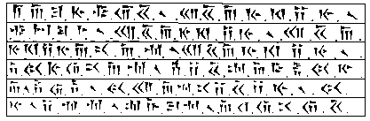
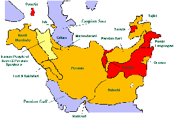
The Avestan language belongs to the Indo-Iranian branch of the Indo-European family of languages.
| Group | Languages & Major Dialects | Province | ||
| Ancient | Medieval | Modern | ||
| East Iranian | Avestan | ancient Persia | ||
| Sogdian | central Asia | |||
| Khotanese | ||||
| Khwarezmian (Chorasmian/Khorezmian) | central Asia | |||
| Bactrian | Pashto | Afghanistan, West Pakistan | ||
| Old Ossetic | Ossetic | Caucasus | ||
| West Iranian | Old Persian | Parthian | Persian | Iran (Persia) |
| Middle Persian | Kurdish | Iran, Iraq, Turkey | ||
| Baluchi | Iran, West Pakistan | |||
| Tajiki | central Asia | |||
The Persian or Iranian language divides into 3 time periods:
1. A prehistoric Persian language known as the Old Persian and sometimes
as Zend, now extinct and no longer
understood. It is the language of literary writing, beginning long before
1000 BC and lasting until 300 BC.
2. Middle Persian [3rd century BCE (the fall of the Achaemenids) to
8th-10th century CE]. It is a continuation of the Old Persian, and
includes Parthian, Sogdian and Pahlavi [the language of the courts in
Baghdad until the 900s AD]. It is claimed that Arabic really comes from
the Persian Pahlavi, not from Arabs.
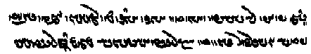
3. Modern Iranian languages — New Persian, Kordi (Kurdish) and Pashto (Persian-Pashto), an official language of Afghanistan; and Tajik (Persian-Tajik), spoken in Tajikistan.
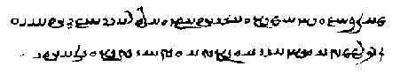
Zend
The chapter called Ahura'Mazda, Creator in the Book of Saphah begins:
"Descended by the Yi-ha light through mortals, and in the Vedan Gods
revealed from Zarathustra in Juian, Zend,
and Haizariyi, and thence into Vede, and thence into Sanskrit, and by
Brahma and by Buddha."
In this order of languages Zend is older than Sanskrit.
Also:
Kabalactes caused India to be "but a land of ruins", remodelled the sacred
books (the Avesta, Vendidad, Vispered, Yacna and the Khordavesta) and
commanded all languages to be hereafter made out of Vedic, Yi'ha and Zend,
from which Sanskrit descended, as it is to this day (Book of Eskra Ch 22).
It is not clear when Oahspe mentions "Vedic, Yi'ha and Zend, from which
Sanskrit descended as it is to this day", whether Zend could be the 'Old
Persian' (Avestan) language or its special Gâthic dialect. It's tempting
to say Yi'ha is Gâthic (which is thought to be older) and Zend is
classical Avestan, since we know Yi'ha was around even after Sakaya's time
(528 BC) because after Kabalactes remodelled the sacred books he commanded
all languages to be hereafter made out of Vedic, Yi'ha
and Zend. The two Indo-European dialects of Tocharian should also be
considered. But whichever it is Oahspe reveals that it is the source of
Sanskrit!
[This makes sense if the "Vedic Sanskrit" of the Rig Veda is the 'Vedic'
mentioned here, and Sanskrit as it is to this day is Classical Sanskrit
(discussed above after the section about the Rg
Veda and Dyaus).]
Indeed this very point sparked the following language debate.
In 1808 John Leyden regarded Zend as a Prakrit dialect, parallel to Pali.
To Erskine Zend was a Sanskrit dialect, imported from India by the
founders of Mazdeism, but never spoken in Persia. His main argument was
that Zend is not mentioned among the seven dialects which were current in
ancient Persia [according to the Farhang-i Jehangiri (A large Persian
dictionary compiled in India in the reign of Jehangir)], and that Pahlavi
and Persian exhibit no close relationship with Zend.
Emmanuel Rask showed that the list of the Jehangiri referred to an epoch
later than that to which Zend must have belonged, and to parts of Persia
different from those where it must have been spoken; he showed further
that modern Persian is not derived from Zend, but from a dialect closely
connected with it; and he showed that Zend was not derived from Sanskrit.
As to the system of its sounds, Zend approaches Persian rather than
Sanskrit.
The origin of many gods and heroes, whom the Parsi worship and epical
history of Iran were derived from and revealed by the same source as the
myths of Vedic India. Burnouf gave the first notions of a comparative
mythology of the Avesta and the Veda, by showing the identity of the Vedic
Yama with the Avesta Yima, and of Traitâna with
Thraêtaona and Ferîdûn. At the same time the ancient Persian inscriptions
at Persepolis and Behistun were deciphered by Burnouf in Paris, by Lassen
in Bonn, and by Sir Henry Rawlinson in Persia. Thus was revealed the
existence of a twin language heard from the mouth of Darius bearing a
striking likeness to that of the Avesta in nearly every feature. Since
then it is agreed that Zend is not an artificial language, or of foreign
importation, or without root in the land where it was written.
In the 18th century it was customary to call the language of the Avesta 'Zend' (referring to the Zend Avesta). Zend is now not thought of as a language since the translation of the word Zend means 'a commentary or explanation'. The expression 'Avesta and Zend' was used in Pahlavi commentary to designate 'the law with its traditional and revealed explanation.' To Theosophists Zend (dyan) Avesta (vidya) is the study (dyan) of knowledge (vidya).
Avesta means 'the law' (from the old Persian âbastâ), and is the proper name of the original texts, so the language of the Avesta is now simply called 'Avestan'.
It remains strange how Zend came to be thought of as a language in the first place.
Saphah says, of the Lords of the Hosts in Heaven:
Heads of spiritual societies in atmospherea, of those days.
Maideashenea, Patishahaya, Ayathrema, Maidyarrah, Hamachapathmada,
Yemehataman, Aunviti, Haptanaihaiti,
Ustavaiti, Cpenta'Mainyus,
Kshathra, Vahistoisa,
Airyamaishya, Fshushamanthra,
Hadhaokhta, Cpenta-armaiti, Zaothra and Barecma, Mithra, Kamaqactra,
Havanana, Aarevahsha, Roethwiskare, Vohu-Kasha, Aiwyoonhana,
Nairayo-canha, Asha-vahista, Haome, Lord of Haoma rites, Frava-daiti, Lord
of Fravishes, Pailvish-hahin and Ustav, Beryejaga, Avathrema, Tistrya and
Yima, Son of the Sun, the All Light.
Of the second rank above these were:
The Gods of the United Hosts of Heaven.
The Creator, Chief over all, Yima and Mithra, Amesha, Cpentas, Havanyi,
Cavaghi and Vicya, Rapithurna. Fradotfshu and Zantuma, Fradatvira and
Dagyevma, Aiwicruthrema-Aibigaza, Fradat-vicpanum-hujyaiti, Vishaptatha,
Ish-Fravashi, Athwya and Kerecacpa, promoted by special decree.
In addition to the above, the oagas (Gathas)
of Zinebabait (afterward Lower India) the Zend,
The Lord Gods, that is, officers of kingdoms in heaven and ruler over
nations on earth. [Among a list of 11 are included the following]
3. Rashnu, a Fragapattician of the
Yi-ha period.
4. Haha-Naepta (Goddess) of the host of Fragapatti, of the Theantiyi
period.
By the Ayustrians, Gathas meant Gods.
5. Iaya-Haptanhaiti, special to
Haptan, of the Hi-ga period.
7. Naotara, who gave many sciences to mortals
8. Thrita, God of healing
9. Hiac-kaus, Lord of the Seal of
Heaven who bestowed the power of Ahura'Mazda on mortals, enabling the
prayers of the living to redeem from torments the spirits of their
forefathers.
11. Ashi-vanuhi, Goddess of dress.
I'm not sure if the numbered list of Gods above are meant to be members of the "Zend".
Oahspe refers to Zend as the name of a language. From the above it seems
the word Zend also became used for the name of a collective of high Lord
Gods during the Hyan period (~900-300 BC). (probably most active around
300 BC, though maybe anytime up to 1000 BC, the beginning of Triune
control, though many of the gods are much older). The Zend seem to also be
the oagas or Gathas, who are Gods according to the additional comment "By
the Ayustrians, Gathas meant Gods".
Further on in the Saphah chapter where "Lords of atmospherea ministering
through the temples and oracles to mortals of the Hyan period, embraced in
Mithra inspiration" are listed, some of their names confirm them to be
Gathas.
They are:
The Gatha-Ahunavaiti,
Yacna-Haptan-haiti, the Goddess Mother, Gatha-Ustavaiti,
her Holy Sister, Goddess Gatha-Cpenta-Mainyu,
her Holy Daughter, Goddess Gatha-Vohu-Khsha-thra,
the Lord of Measure, Airyama, Fshnsha-manthea, Hadhaokhta, Creator, Ever
Present Spirit in all places, Ruler over all else and Dispenser.
[Many of Fragapatti's High Council of the first
house of Mouru have the same name as the Mithraic
Lords, but I can't believe they are the same, but only assumed their
names, or perhaps initially served under Mithra independently for
Jehovih's sake. Some also had a title of Gatha. ie. Gatha-Ahunavaiti,
Goddess of Halonij, and Haptanhaiti, God of Samatras; Ustavaiti, Goddess
of Maha-Meru. These, or the Mithraic Lords of the same name, have the
"Five Gathas" named after them.]
There are also many equivalent Avestan Gods to substantiate this.
From the VISPERAD, Ch.1
5. And I announce and complete (my Yasna) to the Gatha
Ahunavaiti, the holy, ruling in the ritual order, and to
those women who bring forth many sons of many talents, Mazda-given, and
holy lords of the ritual order, and to that (chant) which has its Ahu
and its Ratu (before it in the Yasna).
And I celebrate, and will complete (my sacrifice) to the Yasna
Haptanghaiti, holy, and ruling in the ritual order, [and
to the water Ardvi Anahita].
6. And I announce, and I (will) complete (my Yasna) to the Gatha
Ushtavaiti, the holy, ruling in the ritual order, and to
the mountains which shine with holiness, the abundantly brilliant and
Mazda-made, the holy lords of the ritual order.
And I announce, and (will) complete (my Yasna) to the Gatha
Spenta-mainyu , the holy, ruling in the ritual order;
and I celebrate and will complete (my Yasna) to Verethraghna (the blow
of victory) Ahura-given, the holy lord of the ritual order.
7. And I announce, and (will) complete (my Yasna) to the Gatha
Vohu-khshathra , holy, ruling in the ritual order, and
to Mithra of the wide pastures, and to Raman Hvastra, the holy lords of
the ritual order. And I celebrate and will complete my Yasna to the Gatha Vahishtoishti , the holy, ruling
in the ritual order. And I celebrate and will complete my Yasna to the
good and pious Prayer for blessings, the benediction of the pious, and
to that Yazad, the redoubted and swift Curse of the wise, the holy lord
of the ritual order.
8. And I announce, and (will) complete (my Yasna) to the Airyema-ishyo,
the holy lord of the ritual order, and to the Fshusho-mathra,
and to that lofty lord Hadhaokhdha,
the holy lord of the ritual order.
9. And I announce, and (will) complete (my Yasna) to the questions asked
of Ahura, and to the lore of Ahura, to the Ahurian Dahvyuma (Dahyuma),
and to the Ahurian Zarathushtrotema [according to Zoroastrians a
Zarathushtrotema is the supreme head of the Zoroastrian priesthood], holy
lords of the ritual order, and to the farm-house with its pastures which
give pasture to the Kine of blessed gift, and to the holy
cattle-breeding man.
It would make sense then that Zend Avesta meant 'Law of the Gods', and possibly did indeed originally get called that. Other possibilities are that Zend might have been thought of as a language given of the Gods or a Godly language. In these senses it would have still been called 'Zend Avesta', or Law given in the language or speech of Gods.
From YASNA 58 - The Fshusho
Mathra (Mantra or Sacred Word)
8. We sacrifice to the entire collection of the Praises of the Yasna,
with the careful structure of their language
which has reached the most its object.
And we offer (our homage) in our celebrations to Thy body, O Ahura
Mazda! the most beautiful of forms, these stars, and to that one, the
highest of the high (Pazand) such as the sun was called. Yea, we worship
the Praises of the Yasna which were the production
of the world of old.
The Gathic parts comprise:
A) The Five Gathas:
1) Ahunavaiti Gatha (Yasna
Chapters 28-34 also here and here)
The Yasna Haptanghaiti (Yasna
Chapters 35-42)
2) Ushtavaiti Gatha (Chapters
43-46)
3) Spentamainyush Gatha (Chapters
47-50)
4) Vohukhshathra Gatha (Chapter 51)
5) Vahishtoishti Gatha (Chapter 53)
[Yasna Haptanghaiti is not one of the 5 Gathas. Notice that I inserted it in its proper numerical order of Yasna chapters to show that the order of Gathas is the same as the order of the Lords of the Hosts in Heaven given in Saphah. Moreover, this Gathic chapter called Yasna Haptanghaiti has the same name as the Mithraic Lord given in Saphah ie Yacna-Haptan-haiti.]
B) The three fundamental prayers of Zoroastrians:
1) Yenhe hatam [All those beings of whom Ahura Mazda knows the goodness…]
2) Ashem Vohu [Holiness is the best of all good (See below)]
3) Yatha ahu vairyo [The will of the Lord is the law of holiness…]
C) The Airyema Ishyo formula (Yasna
Chapter 54)
[Notice that Airyamaishya, or Airyama is listed above in the "Heads of
spiritual societies in atmospherea".]
The so-called "Five Gathas" of the Yasna are named after the "Heads of spiritual societies in atmospherea" (highlighted above) who were Mithraic Lords of the Hyan period [Aunviti, Haptanaihaiti, Ustavaiti, Cpenta'Mainyus, Kshathra, Vahistoisa].
In Summary
| The Gathas | Hyan Mithraic Lords | Lords of Hosts | Vispered Gods |
| Ahunavaiti | Gatha-Ahunavaiti | Aunviti | Gatha Ahunavaiti |
| Yasna Haptanghaiti | Yacna-Haptan-haiti | Haptanaihaiti | Yasna Haptanghaiti |
| Ushtavaiti | Gatha-Ustavaiti | Ustavaiti | Gatha Ushtavaiti |
| Spentamainyush | Gatha-Cpenta-Mainyu | Cpenta'Mainyus | Gatha Spenta-mainyu |
| Vohukhshathra | Gatha-Vohu-Khsha-thra | Kshathra | Gatha Vohu-khshathra |
| Vahishtoishti | Vahistoisa | Gatha Vahishtoishti | |
| Airyema Ishyo | Airyema | Airyamaishya | Airyema-ishyo |
| Non Gathic | |||
| Fshusho Mathra | Fshnsha-manthea | Fshushamanthra | Fshusho-mathra |
| Hadhokht Nask | Hadhaokhta | Hadhaokhta | Hadhaokhdha |
[see below]
The many instances of orders of names being duplicated in Oahspe and the Avesta can have a positive or a negative explanation. They can act as proof that both were taken from heavenly library records, or be a source of suspicion for sceptics that ideas were taken from existing sources. My opinion is that the information given in Oahspe is just enough to make sense out of the corrupted, superstitious and distorted understanding we have of what the Avesta depicts today in the eastern traditions or western innovations.
It appears from all this that Zoroastrians only speculate over the names and meanings in the Avesta. Just as Gnostics have perhaps resorted to finding the hidden meaning or Gnosis in ancient texts that became senseless as a factual record, but meaningful as an allegory, parable or symbol, the meaning of the Avesta must be sought after by such means.
From YASNA 54 - The Airyema-Ishyo
Let the Airyaman, the desired friend and peer, draw near for grace to
the men and to the women who are taught of Zarathushtra, for the joyful
grace of the Good Mind, whereby the conscience may attain its wished-for
recompense. I pray for the sacred reward of the ritual order which is
(likewise so much) to be desired; and may Ahura Mazda grant it, (or
cause it to increase).
As the linguists of both Europe and India worked on the Gathas it became clear that the language of the Gathas was far older than the language spoken in Iran at the time of King Darius' father. The language of these hymns (Gathic Avestan) resembles the Sanskrit of the Indian Rigveda, hymns that were probably composed in the Punjab between 1500 and 1200 BC.
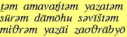
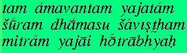
Persian often uses an h where Sanskrit uses an s,
such as haoma for soma. The Gathic word Ahura, meant 'divine lord' (as in
Ahura Mazda), while in Hindu writings asuras were demons (though in the
early writings asuras were respected gods). The
reverse occurs with the Hindu term for divinities, devas. In Gathic Daeva
means 'demons'.
[It might also be the case that Deva and daeva have
separate meanings.]
In Osiris, Son of Jehovih Ch. V
Osire came to a place in the lower heaven called Vibrahj, signifying
resplendent, where ruled with treacherous tyranny the false God, Daveas.
Because he had "spurned his own name" angels and mortals were afterwards
made to "curse and shun the name, Daveas".
In the history given in Oahspe the false Ahura opposed the Devas, so the devas would have been portrayed in mortal history of the period as the evil ones and Ahura (Ashura) as good. The Vedas still maintain the original sense of deva to represent a celestial God-like being, and recall Ahura's rebellion against the Deva in these words.
The Old Persian language and its Gathic dialect are no longer
understood, therefore the Avestan texts needed to be translated using
their accompanying Pahlavi versions. The language of the Avesta,
particularly the Gathas is extremely difficult and interpretation can be
uncertain. They were transcribed in a late alphabet (Pahlavi) derived from
Aramaic.
The collection of Zend fragments, known as the Zend-Avesta, is divided
into two parts in its usual form.
The first part contains the Yasna, the Vispêrad, and the Vendîdâd.
These three books are found in manuscripts in two different forms: either
each by itself, in which case they are generally accompanied by a Pahlavi
translation; or the three mingled together according to the requirements
of the liturgy, as they are not each recited separately in their entirety,
but the chapters of the different books are intermingled; and in this case
the collection is called the Vendîdâd Sâdah or 'Vendîdâd pure,' as it
exhibits the original text alone, without a translation.
The second part, known as the Khorda Avesta
or 'Small/Short Avesta,' is composed of short prayers which are recited
not only by the priests, but could be used by all the faithful, at certain
moments of the day, month, or year, and in presence of the different
elements; these prayers are the five Gâh, the thirty formulas of the
Sîrôzah, the three Âfrigân, and the six Nyâyis.
But it is also usual to include in the Khorda Avesta, although forming no
real part of it, the Yasts (Yashts) or
hymns of praise and glorification to the several deities (also said to be
written by Zarathustra but transmitted in Younger Avestan) and a number of
fragments, the most important of which is the Hadhôkht
Nosk. Some say, because the Yasts were not so important as the hymns
to Ahuramazda (Gathas), they were memorised less carefully than the
Gâthâs. These hymns survive in the 'Younger (classical) Avestan' language.
The Yasna is divided into the older
and younger Yasna according to the period of its language.
The older Yasna was also written in Gathic; at least some of them seem to
be older than the Gâthâs, and appear to have been reworked in the light of
the teachings of Zarathustra. The younger Yasna is written in Younger
(classical) Avestan.
The Yasna contains litanies for sacrifice and all kinds of rituals, eg.,
the use of the trance-inducing beverage Haoma, and offerings to water and
fire. Over the centuries, new liturgic texts were written in Younger
Avestan.
The Vispêrad (meaning "worship of
all the Masters or Chiefs") is a long liturgy made up from Yasna and
Vendidad texts with many additional invocations.
The Vendidad is a compilation of
religious laws and of mythical tales codified in the Parthian age (141 BC
- 224 AD). Its name is a corruption of Vidaevadata, 'against the demons'.
Its language is a type of Younger Avestan different to cuneiform texts of
the Persian empire, so it was probably written later, during the Parthian
period.
One writer says:
"The Vendidad or Book Of Law against the Daevas (Dataam vi-daevaam) is in
contrast to Zarathushtrian Law (Daataam Zarathushtrim). Asho Zarathushtra
did not make laws for his followers during his lifetime.
[Asho is a Persian name meaning pure of heart; Osho is a term derived from
the ancient Japanese, said to be first used by Eka to address his master
Bodhidharma.]
No one approached Asho Zarathushtra to know what should be done to a thief
or a murderer. Had some one asked him, he would have replied: "I have not
come to create a government within a government. I have come to teach
people how to lead a good life." Had he been asked: "What law should we
follow?" The reply would have been: "Follow the existing laws."
[My understanding is that Oahspe answers this by advising to follow the
existing laws and governments for Jehovih's sake, implying, I assume, that
there are times when the powers that be are not for Jehovih, when we
should rather follow our conscience.]
He would have advised the people to consider those laws with their wisdom
and knowledge because social laws change in every era and place, and
people do not remain the same. Every law which was prepared and enforced
by the wise men of a people in the past was good and useful for its own
day.
The Magi were the religious leaders of the Median people. Median,
Azerbaijanian, and Babylonian religious leaders are not the same as the
Zarathushtrian Mobeds although all of them carry the same title of "Magi".
They had the monopoly of performing religious rituals. Their profession
was hereditary. They gradually introduced all their beliefs, rituals and
customs under the garb of Zarathustra's teachings. Their strategy saved
them their former position in the new religion. They forced the
Dakhmeh-nashini [disposal of the dead], upon Zarathustrians. They forbade
Zarathustrians from burying or cremating their dead. The composers of the
story of the Aryan countries were non-Zarathushtrian, and that it belongs
to a period much older than the Zarathushtrian era. Zurvanistic creed goes
to pre-Zarathushtrian times.
[Much of the Vendidad is like the book of Leviticus is to the bible, that
is, not suitable for these times. Like this writer, some Zoroastrians only
accept the Gathas, believing the Vendidad to have been corrupted by Magi.
But for Oahspeans, its opening chapters remarkably follow word for word
verses from the Book of God's Word Chapter VIII, in its opening Chapters,
as demonstrated below.]
The Zarathushtrian Doctrine was against magic and superstitions.
Zarathushtra replaced hypocrisy and deceit with virtue and excellence. He
advocated freedom of will and intellect. The Zarathushtrian religion was
greatly harmed by the Median Magi. They controlled one's life from birth
to death."
Therefore the laws of the pre-Zarathushtrian Vendidad should not be
considered today as proper and practical. The laws were prepared and
enforced during different periods in places. Law scriptures are of lesser
importance in that they change. They could never be equal with the Gathas,
prayers, rituals, and regulations.
One cannot accept the present version of the Vendidad to be the copy of
the old original.
From "Is The Vandidad a Zarathushtrian Scripture"
Yasna 25.5
5. And we worship the holy wind which works on high, placed higher
than the other creatures in the creation; and we worship this which is
thine, O Vayu! and which appertains to the Spenta Mainyu within thee;
and we worship the most true religious Knowledge, Mazda-made and holy,
and the good Mazdayasnian law.
6. And we worship the Mathra Spenta [màthra/manthra means Sacred Word]
verily glorious (as it is), even the law pronounced against the Daevas,
the Zarathushtrian law, and its long descent; yea, we worship the good
Mazdayasnian Religion, and the Mathra which is heart-devoted and
bounteous; yea, we worship the Mazdayasnian Religion maintained in the
understanding of the saint; and we honour that science which is the
Mathra Spenta, and the innate understanding Mazda-made, and the derived
understanding, heard with ear, and Mazda-made.
In 224 CE, the Parthian rulers of Iran were replaced by a new Persian
dynasty, the Sassanids. New texts were added to the already existing
corpus, the most important being [supposedly] the Visperad, Vendidad and
the Khorda Avesta. The language of this period is Pahlavi.
The Sassanids were devout Zoroastrians and did much to improve the
understanding of the ancient texts. There were already several
commentaries on the Avesta, but they imposed a new version, the Zand. It
became an integral part of the books.
Under the Sassanid king Chosroes II Parvêz (591-628), a Zoroastrian high
priest named Tansar established the canon of Avestan texts. It contained
all the texts that we have already seen, but also some books on cosmogony
and law, a biography of Zarathustra, apocalypses and several expositions
of doctrine. This library was certainly written down; it is called the
Great Avesta.
In 642, the Arabs invaded Iran. They were tolerant towards Zoroastrianism,
but Islam became the dominant religion and some Avestan works were
translated into Arabian, the originals being lost. In the eighth century,
relations between Muslims and Zoroastrians became hostile and the
Zoroastrians started to redefine themselves; their ancient religion and
old language were important aspects of their new self-image. The
antagonism between the two groups continued to grow in the ninth century,
when caliph Mutawakkil ordered the holy cypress at Kâshmar, which was very
important to the Zoroastrians, to be cut down (in 846). Many Zoroastrians
decided to migrate to India. Several texts from the Avesta are therefore
known from Indian translations.
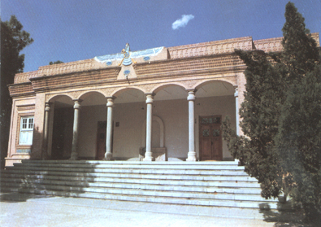
The Pahlavi translation of the Vendîdâd, which was not finished before the latter end of the Sassanian dynasty, contains many Zend quotations from books which are no longer in existence; other quotations, as remarkable in their importance as in their contents, are to be found in Pahlavi and Parsi tracts, like the Nîrangistân (precepts or rules of conduct for the organisation of the cult) and the Aogemaidê (meaning "we accept").
From the Aogemaidê (Part of the Avesta Fragments)
6. May the immortal soul have its share in Paradise!
7. And may the pleasure and comfort that will dissipate the pain of the
immortal soul come to us!
8. At the fourth dawn, may the holy, strong Sraosha, and Rashn Rast, and
the good Vae, and Ashtad the victorious, and Mihr of the rolling
country-side, and the Fravashis of the righteous, and the other virtuous
spirits come to meet the soul of the blessed one,
9. And make the immortal soul pass over the Chinvad
bridge (see below) easily,
happily, and fearlessly!
10. And may Vahman, the Amshaspand, intercede for the soul of the
blessed one,
11. And introduce it to Ohrmazd and the Amshaspands!
The Bundahis (Bundahishn) contains much matter which is not spoken of in
the existing Avesta, but which is very likely to have been taken from Zend
books which were still in the hands of its compiler. It is a tradition
with the Parsis, that the Yasts were originally thirty in number, there
having been one for each of the thirty Izads (Yazads)
who preside over the thirty days of the month; yet there are only eighteen
still extant.
We have a fair specimen of what these lost texts may have been in the few
non-liturgical fragments which we still possess, such as the Vistâsp Yast
and the blessing of Zoroaster upon King Vistâsp, which belong to the old
epic cycle of Iran, and the Hadhôkht Nosk (book of
scriptures), which treats of the fate of the soul after death.
From the Vistâsp Yast
(Part of the Avesta Fragments)
21. The young king Vishtaspa asked Zarathushtra: 'With what manner of
sacrifice shall I worship and forward this creation of Ahura Mazda?'
Zarathushtra answered: 'Go towards that tree that is beautiful,
high-growing, and mighty amongst the high-growing trees, and say thou
these words: "Hail to thee! O good, holy tree, made by Mazda! Ashem
Vohu!"
'Let the faithful man cut off twigs of baresma, either one, or two, or
three: let him bind them and tie them up according to the rites, being
bound and unbound according to the rites.
'The smallest twig of Haoma, pounded according to the rules, the
smallest twig prepared for sacrifice, gives royalty to the man (who does
it).' Ashem Vohu: Holiness is the best of all good.
From the Hadhôkht Nosk (Also
part of the Avesta Fragments)
1. Zarathushtra asked Ahura Mazda: 'When one of the faithful departs
this life, where does his soul abide on that night?'
Ahura Mazda answered: 'It takes its seat near the head, singing the Ushtavaiti Gatha and proclaiming
happiness: "Happy is he, happy the man, whoever he be, to whom Ahura
Mazda gives the full accomplishment of his wishes!" On that night his
soul tastes as much of pleasure as the whole of the living world can
taste.'
At the end of the third night, when the dawn appears, it seems to the
soul of the faithful, one as if it were brought amidst plants and
scents; it seems as if a wind were blowing from the region of the south,
from the regions of the south, a sweet-scented wind, sweeter-scented
than any other wind in the world.
And it seems to the soul of the faithful one as if he were inhaling that
wind with the nostrils, and he thinks: 'Whence does that wind blow, the
sweetest-scented wind I ever inhaled with my nostrils?'
And it seems to him as if his own conscience were advancing to him in
that wind, in the shape of a maiden fair, bright, white-armed, strong,
tall-formed, high-standing, thick-breasted, beautiful of body, noble, of
a glorious seed, of the size of a maid in her fifteenth year, as fair as
the fairest things in the world.
And the soul of the faithful one addressed her, asking: 'What maid art
thou, who art the fairest maid I have ever seen?'
And she, being his own conscience, answers him: 'O thou youth of good
thoughts, good words, and good deeds, of good religion, I am thy own
conscience!
'Everybody did love thee for that greatness, goodness, fairness,
sweet-scentedness, victorious strength and freedom from sorrow, in which
thou dost appear to me;
'And so thou, O youth of good thoughts, good words, and good deeds, of
good religion! didst love me for that greatness, goodness, fairness,
sweet-scentedness, victorious strength, and freedom from sorrow, in
which I appear to thee.
'When thou wouldst see a man making derision and deeds of idolatry, or
rejecting (the poor) and shutting his door, then thou wouldst sit
singing the Gathas and worshipping the good waters and Atar, the son of
Ahura Mazda, and rejoicing the faithful that would come from near or
from afar.
'I was lovely and thou madest me still lovelier; I was fair and thou
madest me still fairer; I was desirable and thou madest me still more
desirable; I was sitting in a forward place and thou madest me sit in
the foremost place, through this good thought, through this good speech,
through this good deed of thine; and so henceforth men worship me for my
having long sacrificed unto and conversed with Ahura Mazda.
'The first step that the soul of the faithful man made, placed him in
the Good-Thought Paradise;
'The second step that the soul of the faithful man made, placed him in
the Good-Word Paradise;
'The third step that the soul of the faithful man made, placed him in
the Good-Deed Paradise;
'The fourth step that the soul of the faithful man made, placed him in
the Endless Lights.'
Then one of the faithful, who had departed before him, asked him,
saying: 'How didst thou depart this life, thou holy man? How didst thou
come, thou holy man! from the abodes full of cattle and full of the
wishes and enjoyments of love? From the material world into the world of
the spirit? From the decaying world into the undecaying one? How long
did thy felicity last?'
And Ahura Mazda answered: 'Ask him not what thou askest him, who has
just gone the dreary way, full of fear and distress, where the body and
the soul part from one another.
'[Let him eat] of the food brought to him, of the oil of Zaremaya: this
is the food for the youth of good thoughts, of good words, of good
deeds, of good religion, after he has departed this life; this is the
food for the holy woman, rich in good thoughts, good words, and good
deeds, well-principled and obedient to her husband, after she has
departed this life.'
Zarathushtra asked Ahura Mazda: 'O Ahura Mazda, most beneficent
Spirit, Maker of the material world, thou Holy One!
When one of the wicked perishes, where does his soul abide on that
night?'
Ahura Mazda answered: 'It rushes and sits near the skull, singing the
Kima Gatha (Y46), O holy Zarathushtra!
'"To what land shall I turn, O Ahura Mazda? To whom shall I go with
praying?"
'On that night his soul tastes as much of suffering as the whole of the
living world can taste.'
At the end of the third night, O holy Zarathushtra! when the dawn
appears, it seems to the soul of the faithful one as if it were brought
amidst snow and stench, and as if a wind were blowing from the region of
the north, from the regions of the north, a foul-scented wind, the
foulest-scented of all the winds in the world.
And it seems to the soul of the wicked man as if he were inhaling that
wind with the nostrils, and he thinks: 'Whence does that wind blow, the
foulest-scented wind that I ever inhaled with my nostrils?'
The first step that the soul of the wicked man made laid him in the
Evil-Thought Hell;
The second step laid him in the Evil-Word Hell; The third step laid him
in the Evil-Deed Hell;
The fourth step that the soul of the wicked man made laid him in the
Endless Darkness.
Then one of the wicked who departed before him addressed him, saying:
'How didst thou perish, O wicked man? How didst thou come, O fiend! from
the abodes full of cattle and full of the wishes and enjoyments of love?
From the material world into the world of the Spirit?
From the decaying world into the undecaying one? How long did thy
suffering last?'
Angra Mainyu, the lying one, said 'Ask him not what thou askest him, who
has just gone the dreary way, full of fear and distress, where the body
and the soul part from one another.
'Let him eat of the food brought unto him, of poison and poisonous
stench: this is the food, after he has perished, for the youth of evil
thoughts, evil words, evil deeds, evil religion after he has perished;
this is the food for the fiendish woman, rich in evil thoughts, evil
words, and evil deeds, evil religion, ill-principled, and disobedient to
her husband.
'O Maker! how do the souls of the dead, the Fravashis of the holy
Ones, manifest themselves?'
Ahura Mazda answered: 'They manifest themselves from goodness of spirit
and excellence of mind.'
Then towards the dawning of the dawn, that bird Parodarsh, that bird Kareto-dasu hears
the voice of the Fire.
Here the fiendish Bushyasta, the long-handed, rushes from the region of
the north, from the regions of the north, speaking thus, lying thus:
'Sleep on, O men! Sleep on, O sinners! Sleep on and live in sin.'
A similar vision of heaven and hell in 'The Book Of Arda Viraf' in which Viraf gives an account much like Dante — yet it is at least several centuries older than "The Inferno".
[Notice that the place where his soul remains for three days is reversed for the evil man. Ie. in the Hadhôkht Nosk the soul sits near the skull, not the feet]
Also First Book of God Chapter XIV - The first Bible of
Vind'yu. says:
Brahma said: Seest thou a star? Now I say unto thee, there is an old
legend that the pure in heart, looking upward, oft see their own paroda,
and think it belongeth to another. Yu-tiv reassured Brahma that she saw
the star.
The following comparison of the important Book of
God's Word Chapter VIII, with the opening passages of the Vendidad (in
italics) will unfold and put into context the
phenomenal/historical/mythical world of Avesta with the help of Oahspe.
I've also included additional verses from Saphah and elsewhere in the
Avesta.
(Note: words in pink are the ones of interest found in the Avesta and
explained in Saphah)
Book of God's Word
First, Ormazd was, and He created all created things. He was All; He is
All. He was All Round, and put forth hands and
wings. Then began the beginning of things seen, and of
things unseen.
[Hands and wings here seem to represent the potential of corpor and spirit (or realm of the mind) respectively, opposites that come into being. This is the basis of Zoroastrian symbolism (see Symbol of the Farohar)]
The first best highest place He created was the All Possibility [Being and Non-being]. And the second best highest place He created was the All Good. With Him are all things Possible. With Him are all things Good.
Vendidad
Ahura Mazda spake unto Spitama Zarathushtra, saying: I have made every
land dear (to its people), even though it had no charms whatever in it:
had I not made every land dear (to its people), even though it had no
charms whatever in it, then the whole living world would have invaded
the AIRYANA-VAJA
Book of God's Word
Ormazd then created the first best of places, the longest enduring,
the AIRYANA-VAJA (etherea), the
highest of good creation.
[Also in the Book of Saphah Airyana is "the good, created things"
Airyana seems to be a feminine intonation of the word Iran]
Vendidad (Book Of Law)
Fargard 1.
Sixteen perfect lands created by Ahura Mazda,
and as many plagues created by Angra Mainyu.
2. The first of the good lands and countries which I,
Ahura Mazda, created, was the AIRYANA VAEJA,
by the Vanguhi Daitya (by the good river Daitya). Thereupon came Angra
Mainyu, who is all death, and he counter-created the serpent in the
river and winter, a work of the Daevas. There are ten winter months
there, two summer months; and those are cold for the waters, cold for
the earth, cold for the trees. Winter falls there, the worst of all
plagues.
Fargard 2. 20. "The Maker, Ahura Mazda, called together a meeting of
the celestial Yazatas, in the Airyana Vaejo, of high renown, by the
Vanguhi Dairya. The fair Yima, the good shepherd,
called together a meeting of the best of the mortals, in the Airyana
Vaejo of high renown, by the Vanguhi Daitya."
Ohrmazd Yasht (Hymn to Ahura Mazda)
21. Hail to the Glory of the Kavis! Hail to the Airyanem
Vaejah!
Hail to Ardvi, the undefiled well! Hail to the whole world of the holy
Spirit!
The Greater Bundahishn
The first of places the best created was Eranvej
The name Iran and Aryan race comes from the "first of places and best
created", Eranvej (Iran Vej or Aryan Vaeja).
[Airyanem Vaejah is the Avestan name of the
original homeland of the Iranian peoples. The meaning of vaejah is
uncertain; it has been interpreted as "seed" or "germ", but it is more
likely to have meant "stretch" or "expanse". The term Airyanem Vaejah or
Eranwez is echoed in the name of the country Eran (Modern Persian Iran),
from proto-Iranian "aryanam (land) of Aryas/Iranians", and also in the
name Eranshahr (Realm of Aryas/Iranians). These names first appear in the
reign of Ardashir I, at the beginning of the Sasanid Empire. The term
Vaejah can possibly be derived from the Vedic "vij" and would thus suggest
the region of a fast-flowing river.
In the Yashts, Airyanem Vaejah is the land where Zarathustra sacrificed to
the yazatas. It is considered the best of places, but on the other hand
the Vendidad claims that there are two months of summer there and ten of
winter. It suffers from flooding at the end of winter. Yima was taught by
Ahura Mazda how to build a shelter to protect the inhabitants of the land
from the dreadful winter. Areas to which these tribes finally relocated
include Iran, Afghanistan and northern India.
Airyanem Vaejah is reckoned to have been located somewhere between the
Caucasus and south Asia. In the Avesta, Zoroaster states that he lived in
Airyanem Vaejah also called Eranvej, the Iranian expanse. In the listing
of sixteen countries of the Vedidad, Airyanem Vaejah seems to lie to the
north of all of these. Some experts suggest that Airyanem Vaejah was
probably centered around Khwarazm (see Chorasmia/Khorezmia on map),
a region that is now split between several Central Asian republics. Some
researchers believe that Iran vig was located in what is now Afghanistan,
the northern areas of which were a part of Ancient Khwarezm and Greater
Khorasan. The book "Arctic home of the Aryans" combines indications from
the Rigveda and the Avesta to conclude that "Airyanem Vaejah," the
homeland of the Aryans, lies within or very proximate to the Arctic
circle. It has also been suggested that Airyanem Vaejah could refer to
Kashmir.]
Book of Saphah
Airyana, a protector. (See
Tablet Se'moin.) In Tablet Biene he is made in the form of a lion, with
man's face.
Maori (Mouru?), the second holy
heaven.
Book of God's Word
Out of MOURU, of the regions of HARAITI, came the Voice, created by the
Creator Ormazd; came to I'hua-Mazda; and now cometh to thee, Zarathustra,
thou All Pure.
[House of Mouru was the council chamber and capital of Haraiti,
the place of the throne of Fragapatti, in the lower heavens. The mythical
Mount Meru is most likely reminiscent of Mouru.
In Middle Persian, the mythical mountain Hara Berezaiti became Harborz, in
Modern Persian Harborz became Alborz. This has the
secondary name of Haraiti]
Vendidad
The third of the good lands and countries which I, Ahura Mazda,
created, was the strong, holy MOURU.
Thereupon came Angra Mainyu, who is all death, and he counter-created
plunder and sin.
The Greater Bundahishn
8. The third best created was the valiant Merv
(see map of Bactria above), that is, it performs
works and organisations of great fame.
Book of God's Word
The third best created places created Ormazd, which was HARAITI,
a high heavenly good place, a Home of Fragapatti, a Creator Son of the
heavenly Airyana-vaja, a rescuer of
men and spirits from Anra'mainyus, the evil of blood and bone.
Vendidad
And we sacrifice to both earth and heaven, and to the stormy
wind that Mazda made, and to the peak of high HARAITI,
and to the land, and all things good.
We worship Sraosha (Obedience) the blessed, whose house stands with its thousand pillars, as victorious, on the highest height of high HARAITI, self-lighted from within, star-studded from without,
Book of God's Word
The fourth best created places created Ormazd, the Creator, which
was Gau, the dwelling-place of SOOGHDA, of heavenly shape and straight
limbs and arms, and ample chest, full of music.
Vendidad
Book of Saphah
Gau, place of science in
heaven.
The Bundahishn writes:
"First he produced the celestial sphere, and the constellation stars
are assigned to it by him; especially these twelve whose names are
Varak (the Lamb), Tora (the Bull), Do-patkar (the Two-figures or
Gemini), Kalachang (the Crab), Sher (the Lion), Khushak (Virgo),
Tarazhuk (the Balance), Gazdum (the Scorpion), Nimasp (the Centaur or
Sagittarius), Vahik (Capricorn), Dul (the Water-pot), and Mahik (the
Fish); which, from their original creation, were divided into the
twenty-eight subdivisions of the astronomers, of which the names are
Padevar, Pesh-Parviz, Parviz, Paha, Avesar, Beshn, Rakhvad, Taraha,
Avra, Nahn, Miyan, Avdem, Mashaha, Spur, Husru, Srob, Nur, Gel,
Garafsha Varant, Gau, Goi, Muru,
Bunda, Kahtsar, Vaht, Miyan, Kaht."
Vendidad
The fifth of the good lands and countries which I, Ahura
Mazda, created, was Nisaya, that
lies between the MOURU and BAKHDHI. Thereupon came Angra Mainyu,
who is all death, and he counter-created the sin of unbelief.
The Greater Bundahishn
12. The fifth best created was Nisay,
between Merv and Balkh.
Book of Saphah
Nisai, faith, belief; a
created place in the unseen heavens, which nurtureth man's soul, created
by Ahura'Mazda, the good Creator.
The Greater Bundahishn
10. The fourth best created was Balkh,
good to behold; the men of that place hold the banner with activity.
Book of God's Word
Fifth best place created the Creator, the BAKHDHI,
with lofty standards.
Then came Anra'mainyus, the Black Doubt, the Sa-gwan, sowing seeds.
Book of Saphah
Bakhdhi, third holy place
in heaven.
[The order of holy place in Saphah differs slightly from the Book of
God's Word possibly because it follows more that of the Haptan times.]
Vendidad
The Greater Bundahishn
The second best created is the plain, the abode (dwelling place) of
the Syrians, which is Bakdat.
Book of God's Word
After that, the Creator created Tee-Sughi, the reason of man, and
turned his eyes inward, that he could see his own soul.
Book of God's Word
Ormazd then created association [clans] by words bringing men together,
HAROYU
Book of Saphah
Haroyu, confederate republics in
heaven.
The Greater Bundahishn
The sixth best created was Harey.
Vendidad
The sixth of the good lands and countries which I, Ahura
Mazda, created, was the house-deserting Haroyu.
Thereupon came Angra Mainyu, who is all death, and he counter-created
tears and wailing.
The seventh of the good lands and countries which I, Ahura Mazda,
created, was Vaekereta, of the evil shadows. Thereupon came Angra
Mainyu, who is all death, and he counter-created the Pairika
Knathaiti, who claves unto Keresaspa.
The ninth of the good lands and countries which I, Ahura Mazda,
created, was Khnenta which the Vehrkanas inhabit. Thereupon came Angra
Mainyu, who is all death, and he counter-created a sin for which there
is no atonement, the unnatural sin.
The tenth of the good lands and countries which I, Ahura Mazda,
created, was the beautiful Harahvaiti. Thereupon came Angra Mainyu,
who is all death, and he counter-created a sin for which there is no
atonement, the burying of the dead.
Book of Saphah
Haetumat, emancipated heaven above
the lower or bound heavens.
Vendidad
The eleventh of the good lands and countries which I, Ahura
Mazda, created, was the bright, glorious HAETUMAT.
Thereupon came Angra Mainyu, who is all death, and he counter-created
the evil work of witchcraft.
And this is the sign by which it is known, this is that by which it is
seen at once: wheresoever they may go and raise a cry of sorcery,
there the worst works of witchcraft go forth. From there they come to
kill and strike at heart, and they bring locusts as many as they want.
[Note: most of the above heavenly places [Airyanem Vaejah (situated in the direction of Atropatene), Ragha (Ray, or Rhagae), Merv and Bakhdhi (Balkh) etc as highlighted earlier) have been identified by translators as places on earth, who therefore give an earthly explanation for these 'heavenly' places. Look at the map of Ancient Persia shown previously to locate these three places.]
Book of God's Word Ch IX
Came to Zarathustra, the All Pure, the voice of I'hua'Mazda, by the
hosts of Haraiti: Hear me, O Zarathustra; I am I'hua'Mazda. Hear thou of
thy Creator, who created all created things.
These are the chief first best places created: First, the earth and the air and the water, and all the living that are on them and in them. Out of darkness, void! Waste, and nothing was, as seeming nothing. And shaped He, the Creator, Ormazd, the shape of things. The living that live; the living that are dead; the first of all that breathed, created the Creator, Ormazd. With legs or wings, or hair or feathers, or naked; to crawl or walk or fly, created the Creator, Ormazd, all the living.
To all to live a life; a right to live and die,
out of the life of Ormazd gave He them life and death. This
passage is from the Rgveda, Book 10 Hymn 129 Song of Creation
(Nasadiya Hymn) [read also this note
of precaution]
1) Then there was not non-existence nor existence: there was no
realm of air, no sky beyond it. What covered all, and where? what
sheltered? what concealed? Was it the water's
fathomless abyss?
[All this was water.]
2) Death was not then, nor was there aught immortal: No sign was there
of the days and night's divider. There was That One that breathed,
breathless [windless], by its Self [by its own nature/by its own
impulse]: apart from it was nothing whatsoever.
3) Darkness there was, at first concealed in darkness, this All was
undiscriminated chaos (veiled in profound gloom - an ocean without
light). This all was void and formless: The Germ that still laid
covered in the husk burst forth, one nature; by the great power of
warmth was born that unit.
4) Thereafter rose desire, the primeval seed [of the mind] and germ of
spirit. Sages searched with their heart's thought the existent's
kinship in the non-existent.
5) Transversely was their severing line extended [a division between
the upper world and the lower, and to bring duality out of unity/bond
between existence and non-existence]. What was above it then? What was
below it? There were begetters [seed placers]; there were mighty
forces [powers], free action here [impulse beneath] and energy up
yonder [giving-forth above]
6) Who verily knows and who can declare it, whence it was born and
whence comes this creation? The Gods are later than this world's
production. Who knows then whence it first came into being? Perhaps it
formed itself or perhaps it did not.
7) He, the first origin of this creation, whether he formed it all or
did not form it, whose eye controls this world in highest heaven, who
looks down on it, he verily knows it, or perhaps he knows not.
The Lords' Fifth Book Ch. I, Of Hindoo Scriptures tells us:
Before this time there were two things in the world: Voidness was one,
and Vachis was the other. Vachis vach, and the world was. So it came to
pass that Voidness was divided into two parts, the seen and the unseen
worlds.
The meaning of vach can be gathered from vachah - words. Vachis vach
means "speech spoke".
'Song of Creation' says "Then there was not non-existence nor existence
... Was it the water's fathomless abyss? ... There was That One that
breathed, breathless [windless], by its Self; apart from it was nothing
whatsoever."
One writer comments:
The Rig Veda believes that the universe was created from nothing. Before
the world began "there was neither Ought nor Naught, no sky, beyond
covered all", that the universe "existed unmoved, without vibration and
then this began to vibrate and all these creations came out of it, that
one breath, calm, self-sustained naught else beyond it". This is later
linked with the concept of seed mantra or sacred sound Ohm.
From the Third Book of Corpus
Hermeticum by Hermes Trismegistus called
"The Holy Sermon."
The glory of all things, God and that which is Divine, and the
Divine Nature, the beginning of things that are. God, and the Mind,
and Nature, and Matter, and Operation, or Working and Necessity,
and the End and Renovation. For there were in the
Chaos, an infinite darkness in the Abyss or
bottomless Depth, and Water, and a subtle Spirit intelligible
in Power; and there went out the Holy Light, and the Elements were coagulated from the Sand out of the moist
Substance. And all the Gods distinguished the Nature full of Seeds
[essences of form, "esse" or Es?]. And when all things were
unterminated and unmade up, the light things were divided
on high. And the heavy things were founded upon the moist sand, all
things being Terminated or Divided by Fire; and being sustained or
hung up by the Spirit they were so carried, and the Heaven was seen in
Seven Circles. And the Gods were seen in their
Ideas of the Stars, with all their Signs, and the Stars were numbered,
with the Gods in them. And the Sphere was all lined with Air, carried
about in a circular motion by the Spirit of God. And every God by his
internal power, did that which was commanded him; and there were made
four footed things, and creeping things, and such as live in the
Water, and such as fly, and every fruitful Seed, and Grass, and the
Flowers of all Greens, and which had sowed in themselves the Seeds of
Regeneration. As also the Generations of men
to the knowledge of the Divine Works, and a lively or working
Testimony of Nature, and a multitude of men, and the Dominion of all
things under Heaven and the knowledge of good things, and to be
increased in increasing, and
multiplied in multitude. And to every Soul in flesh begins to be wise
as the Operation of the course of the Gods in the Circles [like Hindu
Demi-Gods], lives in them.
From the Tenth Book of Corpus Hermeticum by Hermes
Trismegistus called "The Mind to Hermes".
See also the seven Worlds set over us, adorned with an everlasting
Order, and filling Eternity, with a different course. For all things
are full of Light, but the Fire is nowhere. For the friendship and
commixture of contraries and unlike became light shining from the Act
or Operation of God, the Father of all Good, the Prince of all Order,
and the Ruler of the seven Worlds.
Book of God's Word Ch IX
19. Without green fruit, none could be ripe; without evil none could be
good. So Ormazd created all creation, and called it good; but lo, and
behold, there was nothing to do. All things moved
not; as if dead, all things were as nothing.
20. Then Ormazd blew His breath outward, and every created thing went
into motion. And those at the front
were called All Good, and those at the rear
were called all evil. Thus created the Creator the Good Creation and the
Evil Creation; the I'hua'Mazda and the Anra'mainyus.
Kore Kosmou (meaning 'Virgin of
the World')
The Osirian Bible, some of which became erroneously transcribed into the
Ezra Bible (today's Torah or Old Testament) is different to the
substance of what originally De'yus incorporated into his Bible. The
Kore Kosmou may well contain a part that is
missing, interpreted into a newer Gnostic sense. Core bore to Zeus 'nine
azure-eyed flower-weaving daughters' (probably the Muses).
When He [possibly De'yus] judged it fit, He breathed into
the Gods and Loves [his companions], and freely poured the
splendor which He had within His heart, into their minds, in ever
greater measure;
4. Hermes made explanation how he had been able to hand on the Perfect
Vision. But when the sun did rise for me, and with all-seeing eyes I
gazed upon the hidden mysteries of that new dawn, and contemplated
them, slowly there came to me conviction that the sacred symbols of
the cosmic elements were hid away hard by the secrets of Osiris.
5. Hermes ere he returned to Heaven said, when he hid his books away:
"O holy books, Become unseeable, for every one whose foot shall tread
the plains of our land, until old Heaven doth bring forth meet
instruments for you, whom the Creator shall call souls."
The time was come for cosmos to awake.
God [De'yus, known today as Deus (God) who here appears to be
equivalent to the Gnostic Demiurge] smiled and said: "Nature, arise!"
And from His word there came a marvel, feminine, possessed of perfect
beauty [Kore, Isis, Mi,
Virgin of the World (Kosmon)] , gazing at which the Gods stood
all-amazed. And God the Fore-father, with name of Nature, honoured
her, and bade her be prolific.
Then He spake: "Let Heaven be filled with all things full, and Air,
and Æther too!"
He, no longer willing that the world above should be inert, but
thinking good to fill it full of breaths,
so that its parts should not remain immotive
and inert, He thus began bringing forth of His own
special work.
Taking breath from His own breath and blending this with knowing Fire,
He mingled them with certain other substances which have no power to
know until out of it smiled a substance far subtler, purer, and more
translucent than the things from which it came; it was so clear that
no one but the artist could detect it.
9. And since it neither thawed when fire was set unto it (for it was
made of fire) nor yet did freeze when it had once been properly
produced (for it was made of breath) but it kept its mixture's
composition a certain kind, peculiar to itself, of special type and
blend, which God called psychosis. It was from this coagulate He
fashioned souls enough in myriads, moulding with order and with
measure the efflorescent product of the mixture for what He willed,
with skilled experience and fitting reason, so that they should not be
compelled to differ any way one from another [as in Plato's
'Same' as opposed to 'Different', the ordered higher heavenly
hierarchies?].
10. For, you must know the efflorescence that exhaled
out of the movement God induced, was not like to itself. For that its
first florescence (flowering)
[All Possibility?] was greater, fuller, every way more pure, than
was its second [All Good?]; its second was far second to the
first, but far greater than its third
[AIRYANA-VAJA (etherea)?]. And thus the total number of degrees
reached up to sixty [sixty grades of souls]. In spite of this,
in laying down the law, He ordered it that all should be eternal, as
though from out one essence, the
forms of which Himself alone
could bring to their completion.
11. Moreover, He appointed for them limits and reservations [Dawns?]
in the height of upper Nature, that they might keep the cylinder
a-whirl [Aeon, nature, wheel of Dharma?] in proper order and
economy and thus please their Sire. And so in that all-fairest station
of the Æther He summoned unto Him the natures of all things that had
as yet been made [here supposedly De'yus means his fallen
companions of atmospherea, but he intends in this sense to mean the
Gods, Etherians], and spake these words:
"O Souls, ye children fair of Mine own breath and My solicitude, whom
I have now with My own hands brought to successful birth and
consecrate to My own world, give ear unto these words of Mine as unto
laws, and meddle not with any other space but that which is appointed
for you by My will.
"For you, if ye keep steadfast, the Heaven, with the star-order,
and thrones I have ordained fulfilled with virtue,
shall stay as now they are for you; but if ye shall in any way attempt
some innovation contrary to My decrees, I swear to you by My most holy
breath, and by this mixture out of which I brought you into being, and
by these hands of Mine which gave you life, that I will speedily
devise for you a bond and punishments."
12. And having said these words, the God, who
is my Lord, mixed the remaining cognate elements (water and earth)
together, and (as before) invoking on them certain occult words of
great power (though not so potent as the first) He set them moving
rapidly [planets?], and breathed into the mixture power of
life [interaction, motion]; and taking the coagulate (which
like the other floated to the top) He modeled out of it those of the
sacred animals possessing forms like unto men's
[lower orders, intermediate between 'the Beast' and God, maybe
Daimons, associated with the Demiurge's hierarchy?].
The mixtures' residue He gave unto those souls that had gone in
advance [the alleged Gods, Etherians] and had been summoned
to the lands of gods, to regions near the stars, and to the choir of
holy daimons.
[In Oahspe damons are angels who engraft
themselves on mortals, known as re-incarnated spirits who usurp the
corporeal body, as of an infant, and grow up in it, and holding the
native spirit in abeyance.
In the theurgic rites of Pythagorean theology Daimones are Mediating
Spirits, messengers between the Gods and us who reside in the Air
intermediate between the earth and the heavens, where the Gods reside.
The Moon is the boundary between the aerial domain and the aetherial
heavens, and so that is where Their Ruler, Hekate, has Her domain. They
convey divine Providence (Pronoia) into the sublunary realm. They
interpret the Gods and are the agents of divination, oracles, and
rituals. They are ministering spirits who care for people, and are often
called Savior (Sôtêr). Many rituals are directed to Daimones (who have
feelings and can be swayed).]
He said: "My sons, ye children of My Nature, fashion things! Take ye the residue of what My art hath made, and let each fashion something which shall bear resemblance to his own nature. These will I further give to you as models." He took and set in order fair and fine, agreeably to the motions of the souls, the world of sacred animals, appending [engrafting?] as it were to those resembling men those which came next in order, and on these types of lives He did bestow the all devising powers and all-contriving pro-creative breath of all the things which were for ever generally to be. And He withdrew, with promises to join unto the visible productions of their hands breath that cannot be seen, and essence of engendering its like to each, so that they might give birth to others like themselves. And these are under no necessity to do aught else than what they did at first. Thereon, out of the upper stuff which had its topmost layer superfluously light, they formed the race of birds; while they were doing this the mixture had become half hardened, and by this time had taken on a firm consistency. Thereon they fashioned out the race of things which have four feet. Next they did fashion forth the race of fish, needing a moist substance of a different kind to swim in; and as the residue was of a cold and heavy nature, from it the Souls devised the race of creeping things.
Book of God's Word
Then asked Zarathustra, the All Pure, inquiring of I'hua'Mazda,
saying: To whom else hast thou these things spoken? I'hua'Mazda said:
Since, a million! Before, a million! To more than a thousand millions.
Then asked Zarathustra: Tell me one; of one, to one to whom thou hast
revealed?
And then answered I'hua'Mazda: To VIVANHO,
the first of men who had words; the first of women who had words. In the
first best created days of pure men and pure women I came, I revealed.
From the Book of Divinity Ch XIII
6. To this God replied: In the name of Jehovih, greeting and love unto
Cpenta-armij, Goddess of Haot-saiti. I receive thy loo'is with joy, and
I appoint unto them my favored God, Yima, God of a thousand years'
tuition, namesake of Yima, son of Vivanho, the Sweet Singer.
[Since Vivanho is given as one of the triad, the God Yima seems to be
second to a legendary Etherian god by the same name.]
Vendidad
Myths of Yima
Fargard 2
[Though Yima is spoken of as a man, his activity is like a secondary God to Ahura Mazda who conducts meetings in the Highest heaven and creates the world.]
Then I, Ahura Mazda, brought two implements unto him: a golden seal
[or ring] and a poniard [dagger] inlaid with gold. Behold, here Yima
bears the royal sway!
Thus, under the sway of Yima, three hundred winters passed away, and the
earth was replenished with flocks and herds, with men and dogs and birds
and with red blazing fires, and there was room no more for flocks,
herds, and men.
Then I warned the fair Yima, saying: O fair Yima, son of Vivanghat, the
earth has become full and there is room no more for flocks, herds, and
men.
Then Yima stepped forward, in light, southwards, on
the way of the sun, and (afterwards) he pressed the earth with the
golden seal, and bored it with the poniard, speaking thus: O Spenta
Armaiti, kindly open asunder and stretch thyself afar, to bear flocks
and herds and men.
And Yima made the earth grow larger by one-third than it was before.
Thus, under the sway of Yima, six hundred winters passed away, and the
earth was replenished and there was room no more for flocks, herds, and
men.
Then Yima stepped forward, in light, southwards, on the way of the sun,
and (afterwards) he pressed the earth with the golden seal, and bored it
with the poniard, speaking thus: O Spenta Armaiti, kindly open asunder
and stretch thyself afar, to bear flocks and herds and men.
And Yima made the earth grow larger by two-thirds than it was before.
Thus, under the sway of Yima, nine hundred winters passed away, and the
earth was replenished and there was room no more for flocks, herds, and
men.
The Maker, Ahura Mazda, called together a meeting of the celestial Yazatas in the Airyana Vaejo of high
renown, by the Vanguhi Dairya. The fair Yima
the good shepherd, called together a meeting of the best of the mortals,
in the Airyana Vaejo of high renown, by the Vanguhi Daitya.
To that meeting came Ahura Mazda; he came together with the celestial
Yazatas. To that meeting came the fair Yima, the good shepherd; he came
together with the best of the mortals.
And Ahura Mazda spake unto Yima, saying: O fair Yima, son of Vivanghat!
Upon the material world the evil winters are about to fall, that shall
bring the fierce, deadly frost; upon the material world the evil winters
are about to fall, that shall make snow-flakes fall thick.
And the beasts that live in the wilderness, and those that live on the
tops of the mountains and those that live in the bosom of the dale shall
take shelter in underground abodes.
Before that winter, the country would bear plenty of grass for cattle,
before the waters had flooded it. Now after the melting of the snow, O
Yima, a place wherein the footprint of a sheep may be seen will be a
wonder in the world.
Therefore make thee a Vara (possibly a Varena) as
long as a horse riding ground, two hathras long on every side of the
square [a hathra is about one mile], and thither bring the seeds of
sheep and oxen, of men, of dogs, of birds, and of red blazing fires.
Make it to be an abode for man.
There thou shalt make waters flow in a bed a hathra long; there thou
shalt settle birds, on the green that never fades, with food that never
fails.
Thither thou shalt bring the seeds of men and women, and of every kind
of cattle of the greatest, best, and finest on this earth; the seeds of
every kind of tree, of the highest of size and sweetest of odour on this
earth, the seeds of every kind of fruit, the best of savour and sweetest
of odour. All those seeds shalt thou bring, two of every kind, to be
kept inexhaustible there, so long as those men shall stay in the Vara.
In the largest part thou shalt make nine streets. Thou shalt bring a
thousand nine hundred men and women. That Vara thou shalt seal up with
thy golden ring, and thou shalt make a door, and a window
self-shining within.
O Maker of the material world, thou Holy One! What are the lights that
give light in the Vara which Yima made?
Ahura Mazda answered: There are uncreated lights and created lights.
[The uncreated light shines from above; all the created lights shine
from below. The sight of the stars, the moon, and the sun are missed,
and a year seems only as a day.]
Every fortieth year, a male and a female are born to every couple, and
for every sort of cattle. And the men in the Vara live the happiest
life. [They live there for 150 years; some say, they never die.]
The Zarathustrians, later known as Brahmins became mingled with the mongrel race due to the fall of Aji, and under the influence of Ctusk (Ahura) became like tyrants by the time of Brahma (~4000 BC). In summary Yima's race grew seventy times seven, and thrice Yima enlarged the earth by the aid of the golden ring and poniard [dagger] inlaid with gold. All this took 1,000 winters which coincides with the rule of Zohak/Dahak/Azi Dahaka, or if added together 1,900 winters, which coincides with the rule of Ctusk (Ahura).
Historians say the ice age broke on the ancient home
and the Aryans were forced to migrate southwards, to the southeast and the
southwest. Geologists say ice sheets and glaciers retreated to their
present position about 8,000 BC.
The "divine Yama, the son of Vivasvat"
is also found in "The Laws of Manu"
and the Bhagavad Gita ch. 4, where Krishna claims to Arjuna that he
"instructed this imperishable science (what they call transcendental
knowledge) to the Sun God of Vivasvan,
and Vivasvan to Manu". Arjuna answers that "the Sun God Vivasvan is senior
by birth to Krishna", and is suspicious. Krishna's alluring speech then
persuades him.
In the Katha-Upanishad there is a profound tale narrated by Yama,
the God of Death. In the Avesta, Yima was the son of Vivashat,
who in turn corresponds to the Vedic Vivasvat,
"he who shines out", a divinity of the Sun.
Book of God's Word
The Light of all light is Ormazd; He the Soul of all souls. These
are the things seen and things unseen, created by Ormazd, thy Creator: Mi, the Mother Almighty: Then is Voice,
the Expression of things, the All Speech, the All
Communion, created by Ormazd, thy Creator, and by Mi,
the Almighty Mother, a virgin never before conceived, and this was Vivanho, the Son.
I'hua'Mazda said to Zarathustra, the All Pure: Behold me, O thou,
Zarathustra!
Here I make one straight line; and now I make
another straight line, and now another, all joined.
Then Zarathustra answered, saying: Thou hast made a triangle: What is the
meaning, O I'hua'Mazda?
Then answered I'hua'Mazda, saying: Three in one, O Zarathustra: Father,
Mother, and Son; Ormazd, the ghost of all things; Mi,
the seen and unseen, and Vivanho, the
expression of things.
And later, from the declaration of Asha, then King of Oas:
First, that there is an Ormazd, Creator, Person! Whose Soul is in all the
world, and in all things in the firmament above; Who is Father; Who is the
Light of light, Creator of darkness and men, Who is forever The Going
Forth; Who is Cause of causes; larger than all things seen and unseen; the
Power of all power.
Second, I'hua'Mazda, His Only Begotten Son, born of the Virgin Mi
(the Substance Seen). Pure and All Holy; Master of Men; Person of Word;
Essence of Ormazd revealed in Word; Saviour of men; Holder of the keys of
heaven; through Whose Good Grace only the souls of men can rise to
Nirvana, the High Heaven:
Third, Zarathustra, A man, All Pure, conceived by a Virgin, and born wise,
being one with I'hua'Mazda, who is one with Ormazd.
Further on from the book of Divinity:
Afterward, Div decreed [Book of Divinity, Ch 11]:
Whatsoever is worshipped, having comprehensible form or figure, is an
idol. He that worshippeth an idol, whether of stone or wood, or whether it
be a man or an angel, sinneth against the Creator.
The emissaries of Ahura, the false, had been most active in extending the kingdom of their idol. Ahura was most cunning with the last Divan act: Instead of interdicting it, he altered it, so it read as followeth, to wit: Whatsoever is worshipped, having comprehensible form or figure, is an idol. He that worshippeth an idol, whether of stone or wood, or whether it be a man or an angel, sinneth against the All Highest, who is personated in Ahura'Mazda, the Holy Begotten Son of all created creations!
And
Ahura'Mazda, the Creator! The Only Begotten Son of the Unknowable! Behold,
I come; I, the Creator! I have come to judge heaven.
Also
Osiris made his Godhead to consist of three persons: first, himself, as
The Fountain of the Universe, whose name was Unspeakable; second, Baal,
His Only Begotten Son, into whose keeping he had assigned the earth and
all mortals thereon; and, third, Ashtaroth, His Virgin Daughter, into
whose keeping he had assigned life and death, or rather the power of
begetting and the power to cause death with mortals.
And from Saphah
I am in the keeping of Hong-she, Saviour of man. Who was Hong-she?
The only begotten Son of the Unseen. He was the incarnate and spiritual
Son of the All Light of heaven and earth, born of the Virgin Mi,
who was descended from the far-off star, Tristya.
Yima, a Saviour; self-assumed Lord of the earth. He said he was the Son of Ahura'Mazda, doing His will. He claimed to have been born of Mi, Mother of the Creator, and he was the only begotten Son; that he lived on earth and worked miracles. Through him and his spirit emissaries, mortals were inspired to construct the written doctrines of the Vedas as they now are.
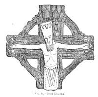
The passage above given again here:
"These are the things seen and things unseen, created by Ormazd, thy
Creator: Mi, the Mother Almighty:
Then is Voice, the Expression of things, the All Speech, the All
Communion, created by Ormazd, thy Creator, and by Mi,
the Almighty Mother, a virgin never before conceived, and this was
Vivanho, the Son."
implies that Jehovih is not Mi Himself, but of Himself creates Mi, who in turn conceives the Son.
Is there an existence that can be separate from Self such that creation
comes after a period of unembodied inexistence? Can there be an observer
without the observed?
Can Jehovih ever be without a body?
It is said that Jehovih's entire body is composed of etherean,
atmospherean and corporeal realms, the motion in and of these are
manifestations of His Power and Wisdom and an attribute of combination
concentrated into one Person embraces All within Himself.
Through our own seeming 'finite, microcosm' of three interdependent parts,
our body, mind and Spirit, we have the means to understand His Macrocosmic
Infinite Person that is three in one — the house, the body, and
All-Dweller, within.
Songs sing of God as Love, Lover and Beloved.
We hear of the soul being the witness, that which underlies one's persona,
revealing, but is never revealed, the pre-existent Spirit that walks every
road.
"He said, I am the soul of all; and the all that is seen is of my person and my body."
What is the vanguard of the Breath of Life? What is at the line between light and dark, or the link between extremes of infernal and divine? If there is no beginning, then there was not a time when planets, suns, even advanced civilisations and Gods were not. As the All speaks, His universe simultaneously and incessantly comes into, or goes out of existence according to His majesty and order.
Though worlds come into being and go out of being (as such), yet Ormazd remaineth; He is the Forever; and within Him are all creations created.
From Se'moin Plate 62:
50. Sed, the sign of wisdom; of gentleness, a lamb, A sheep with a
woman's face; symbol of love. A symbol of stars and zodiac. And Sed rose
up on the third day after the creation of the world and stood above
the sun. The Great Spirit, E-O-Ih, said: This is My Son.
The corporeal sun ye can behold at high noon, but My Son Sed standeth
above this. All that are gentle and good draweth he to My kingdom,
Nirvana. Do not unto another what ye would not desire done unto you, or
ye shall not behold My Son Sed, who standeth on My right hand. The earth
is Mine, saith Sed; by love will I redeem it.
The passage from Apollo Ch. XIII:
Proclaim ye Apollo in heaven and on earth. He is risen! Higher
than the sun is the Holy Begotten of Jehovih! Out of the
Virgin Mi is he come, Holy; in
symmetry and music, there is none like Apollo.
She was My betrothed from the foundation of the world;
Spouse of your Creator.
Her name was Mi, Mother of Mine
Holy Begotten Son.
can mean that She was not there before the world's foundation, but comes into being upon [self begotten] creation (if it is possible, since this would involve existence/creation to be separable from Self, that is, creation comes after a period of non formed non existent Beingness), becoming His counterpart, His Lover embodying Her Lover's love in all created things. Both substance and ideation come to the seat of one's experience through the senses and the mind. If 'The foundation of the world' is taken to mean 'that which is perceived', 'the external extremity of state' or even 'the innermost, subtlest essence of beauty', it becomes harder to make a distinction between the two united in one. One wonders Who lies behind the foundation of the world.
According to Aristotle, all things in the material universe have matter
and form. The form of a living thing is its soul (psyche, Latin 'anima').
Aristotle believed that while matter can exist without form, form
cannot exist without matter, and therefore the soul
cannot exist without the body. In Hindu thought, nama
describes the spiritual or essential being, and rupa the physical
(similarly to 'essence' and 'accidence' in Catholic theology to describe transubstantiation).
[A hat's shape is not the hat itself, nor is its colour the hat, nor
is its size, nor its softness, nor anything perceptible to the senses. The
hat itself (the 'substance' or 'essence') has the shape, the colour, the
size, the softness and the other appearances, but is distinct from them.
While the appearances, which are referred to as accidents, are perceptible
to the senses, the substance is not.]
In Buddhism, Aristotle's "matter and form" is "rupa
and nama". Rupa refers to the physical, while nama refers to the person.
Namarupa is a compound in Sanskrit and Pali meaning "name (nama) and form
(rupa)". Nama and rupa are mutually dependent,
and not separable; as namarupa, they designate an
individual being. Feeling, perception, intention, contact and attention is
called name. The four elements, and form dependent on the elements is
called form. Namarupa may be used synonymously with the five aggregates
(body, feeling, perception, intention, and consciousness). In keeping with
the doctrine of anatta, "the absence of an enduring, essential self", nama
and rupa are held to be constantly in a state of flux, with only the
continuity of experience (itself a product of dependent origination)
providing an experience of any sort of conventional 'self'. Namarupa is
the fourth of the Twelve
Nidanas. Thus, in the Sutta Nipata, the Buddha explains "name &
form are brought to a halt without trace with the cessation of
consciousness."
From Se'moin Plate 62:
55.Mi, spirit, My'ra, spirit of earth (English). Mary, lamb (spirit).
Mi'ra, a virgin, was before man a dweller on the earth, nor was there
any man for her. The All Unseen conceived her. Her son was Osiris
(Aribania). Mi, mother of all men; spouse of the Unseen (Tau). The earth
was Mi, and Mi was the earth. The Great Spirit moved on
the earth and the earth conceived and brought forth man. Mother of
Gods (king spirits). The sons of Mi were all I'su, free from sin.
Porphyry (c. 232-304),
disciple of Plotinus, quotes:
The world is said to be self-born, in perfect
symphony with itself, and thus the cause of its own qualities. Matter
(like Prakriti, the conjectured One primordial substance) is considered
infinite on account of its formless nature and of itself destitute of the
attributes by which it is formed and becomes visible, but it receives
impression of ornamenting form. Being sluggish and inert the ancients gave
to it the symbol of a stone or rock. They considered a cave as the symbol
of this generated and sensible world. Through the dark union of matter,
the world is obscure and dark, but from the presence and supervening
ornaments of form [the Ever-Present Spirit by which the world subsists] it
is beautiful and pleasant.
The gods partake of the highest and purest part (nectar) of the substance
of the world adorned with the impressions of form, but mortal souls drink
of its more inferior and turbid part.
The soul of the world has no division, if the simplicity of a divine
nature is considered; and in another respect has considerable division if
we regard the diffusion of the former through the world, and of the latter
through the members of the body.
The 'nous hylikos', or material intellect, is Bacchus who, in the Orphic
mysteries, proceeds from an indivisible part and divides into particulars.
Hence he is torn in pieces by Titanic fury, and then the fragments are
collected into the indivisible one. The unity of the world's nature is not
forsaken by its manifestation and involution since it is apparent in the
entire cycle. The first and truest seat of the soul is in the intelligible
world, where she lives entirely divested of body, and enjoys the ultimate
felicity of her nature.
The All, Primordial One encompasses not only what
is, but also all potentialities, all possibilities.
He comprehends all that might be, and out of that totality manifests what
is. The Whole is simultaneously mind and matter, one and many, stability
and change. He is and is not, for He unifies Being and Not-being. The One
is the source and origin of the order and beauty, the goal towards which
everything strives [like the Pole of attraction, the 'Strange Attractor'
of Terence McKenna, or the 'Universal Attractor' of Teilhard, the
inclusive Center in which everything is gathered together], the end of all
becoming, the Good.
Pythagoreans tell us the Primordial One unites all dualities by joining
the opposites. By uniting them it must in some sense be a Unity. The One
becomes Two (Monad and Dyad). Monad is limited and finite, as opposed to
unlimited and infinite, since He is One (finite), as opposed to many
(Dyad).
The changeless, static Essence (Monad) is the Male Pole (Father) yet it
has the Power (Shakti) or dynamic of Becoming (Potential, Change), to move
toward more substantial embodiment, greater Multiplicity; this is the
Female Pole (Mother, Dyad). This would cause it to lose its definition of
identity, so it turns back toward its origin to mirror its Essence. This
is the 'Expression of things', the Offspring, the Actualisation of the
potential emanating from the Essence, which constitutes the third Pole
(Son). Thus emanation is a continuous cyclic flux (a triangle in a
circle). By the Dyad's Power to Change and by this cyclic alternation does
Time come into being. In terms of process, change (Becoming) is the mean
between finite, One (Beginning) and the Infinite End (Son), but that in
terms of Character, the Offspring is the Mean between the Extremes or
Opposites (Father and Mother, Many).
The Primal Elements are the passions of God's Will desiring Himself. It is
Himself as Mother or Spouse desiring Himself as Father. In Trismegistic
tractates the "Feminine Aspect" of Deity is called Wisdom, Nature,
Generation, or Isis. He is Wisdom as desiring Himself — that Desire being
the Primal Cause as Mother of the whole world-process, which is
consummated by His Fullness uniting with His Desire or Wisdom, and so
perfecting it. This is the whole burden of the Gnostic Sophia-mythus.
The All, Primordial One in Mahayana Buddhism is the 'primordial Mind',
or 'the Voidness'. The phenomenal universe of appearances (the whole
Sangsara) and the unmanifest Noumenal State (Nirvana) as an inseparable
unity, are one's mind (in its natural, unmodified, primordial state of the
Voidness). Realisation of the undifferentiated Oneness of Sangsara and
Nirvana (the ultimate duality) leads to deliverance, and is the aim and
end of Dharma.
The primordial Mind itself is the mirror. This pure mirror-like true
essence behind all Sangsaric things alone is real, permanent and
non-transitory, whereas the phenomenal is transient and unreal. Just as a
mirror reflects images, so the true essence embraces all phenomena and all
beings, and things exist in and by it.
The Meaning of Kosmon
The earliest of the Hermetic writings (possibly 510 B.C.,) is the Kore
Kosmou or Virgin of the World, wherein an account is given of the
foundation of the world.
The expression "before the foundation of the world"
(pro kataboles kosmou) or its equivalent "from the foundation of the
world" (apo kataboles) is found in nine places in the New Testament:
Matthew 13:35; 25:34; Luke 11:50; John 17:24; Ephesians 1:4; Hebrews 4:3;
9:26; 1 Peter 1:20; Revelation 17:8.
Matthew 13:35 says "I will utter what has been hidden since the
foundation of the world (apo kataboles kosmou)."
Matthew 26:13 and Mark 14:9 says "Verily I say unto you, wheresoever this
gospel shall be preached throughout the whole world [kosmon], this also
that she hath done shall be spoken of for a memorial to her [the woman
with the alabaster jar]."
Luke 11:50-51 says "That the blood of all the prophets, which was shed
from the foundation of the world, may be required of this generation."
John 17:24 says "for thou lovedst me before the foundation of the world."
Ephesians 1:4 says "According as he hath chosen us in him before the
foundation of the world, that we should be holy and without blame before
him in love."
Hebrews 9:26 says "For then must he often have suffered since the
foundation of the world: but now once in the end of the world hath he
appeared to put away sin by the sacrifice of himself."
Peter 1:20 says "Who verily was foreordained before the foundation of the
world, but was manifest in these last times for you."
Revelation 17:8 says "and they that dwell on the earth shall wonder, whose
names were not written in the book of life from the foundation of the
world, when they behold the beast that was, and is not, and yet is."
Katabolhs "creation," is a compound word: kata, "down," and bolhs, "to
throw." It describes God throwing down the world. The Vulgate [Latin
translation] uses the translation "a constitutione mundi". But kataboles
really implies the foundation of the world results from a violent crisis;
order that comes out of disorder; the attack that provokes a resolution.
The word Kosmon/kosmos (world-order) means either "world" or "order,
arrangement, ornament, adornment"; and in the original there is frequently
a play upon the two meanings, as in the case of logos. Ton aisthêton
kosmon means the sensible or manifested world, our present universe, as
distinguished from the ideal eternal universe, the type of all universes.
The word Ecumenism is derived from the Greek 'oikoumene' meaning the
habitable earth. When in Matthew 24:14 it says: "And this gospel of the
kingdom shall be preached in all the world [oikoumene] for a witness unto
all nations; and then shall the end come" the word oikoumene is used,
meaning all the nations under control of the Roman Empire. That is how the
word oikoumene was used in those days. It did not mean the whole earth.
One can think the end spoken of here was the end of that age, and of
Jerusalem as a nation, with its inhabitants, not the end of the whole
world.
Kosmon, another form of the word kosmos (cosmos, or universe) is used to
mean 'the whole world'. Since oikoumene is used for the known world,
whereas kosmon is used for whole world, I conclude that the word 'kosmon'
or 'kosmou' in the New Testament refers to a future time when the known
world of old is extended to include all continents, races, customs and
languages, and the whole world will be united. Kosmon has its cause in the
completeness of heaven towards which, and in whose image, the world moves.
Perhaps the phrase 'foundation of the world' as given in the passage from Apollo was meant to be taken in some sense of the New Testament use of the term instead.
The Myth of Hyperborean Apollo
[Apollo (Greek) Also called Phoebus is primarily the god of light, and is
also associated with the sun, hence a giver of life, light, and wisdom to
the earth and humanity. Apollo and Artemis are the mystic sun and the
higher occult moon. Apollo stands for order, justice, law, and
purification by penance. He is the healer, father of Aesculapius.
His lyre is the sacred heptachord or septenary, seen in the sevenfold
manifestations of the Logos in the universe and man; he is also the sun
with its seven planets.]
Apollo bursts forth out of the deep night at Delos; all the goddesses
greet his birth. He walks, he seizes his bow and lyre, his arrows whirr
through the air, his quiver rattles on his shoulder. The sea throbs, and
all the island shines in a flood of flame and gold. He is the epiphany of
divine light, who by his august presence creates order, splendor and
harmony of which poetry is the marvelous echo.
Apollo, teacher of men, likes to sojourn among them; he enjoys himself in
their cities among male youth, in the contests of poetry and the palestra,
but he lives there only temporarily. In Autumn he returns to his homeland,
to the country of the Hyperboreans. The latter are the mysterious people
of luminous, transparent souls who live in an eternal aurora of perfect
happiness.
Apollo returns to Delphi every Spring when paeans and hymns are sung. He
arrives, visible only to the initiates, in his Hyperborean brightness,
drawn in a chariot by melodious swans. He returns to live in the sanctuary
where Pythia transmits his oracles, where the wise men and poets listen.
Then the nightingales sing, the Fountain of Castalia bubbles with silver
wavelets, the living echoes of a blinding light and celestial music
penetrate the heart of men and women, even moving through the veins of
nature.
The country of the Hyperboreans is the afterlife, the empyrean of
victorious souls whose astral auroras lighten the multicolored regions.
Apollo himself personifies immaterial and intelligible
light, of which the Sun is but the physical reflection, and whence flows
all truth. Hyperborean Apollo therefore personifies the descent from
heaven to earth, the incarnation of spiritual beauty in flesh and blood,
the afflux of transcendent truth through inspiration and divination.
The abstract thought of a time before which Mi
ever existed is not new.
[that is, if one allows a concept, such as the Unbegotten, to be
abstracted from something Existent]
Genesis and the Rig Veda's Hymn of Creation attempt to deal with this.
Also Vedanta (and a Buddhist version) has always needed to account for the
perfection of a changeless, eternal Brahman being compromised by the
existence of evil in our perishable corporeality by hypothesising that our
perception of it is only Maya (illusion), or samsara, adding that the
'Unmanifest Brahman' was not exhausted after creation (being infinite),
but lies dormant as a residual part of Himself within us and can be
attained as the highest realisation of yoga, or by adhering to Dharma.
This is paralleled in Tantra by the latent potential of Kundalini that can
be fully awakened.
The Rgveda hymn 'Song of Creation', that speaks of a time when there was:
"not non-existence nor existence, no realm of air, no sky beyond it,
no death nor immortality, no days and nights.
Of a mysterious One Thing, this All, void and formless, breathless that
breathed by its own nature,
apart from which there is nothing,
at first concealed in darkness, from whose night arose the billowy flood
of sea
by warmth arose desire, the primeval seed and germ of spirit that Sages
searched for with their heart's thought
to discover a kinship in the non-existent."
seems to look further than this world and its heavens, steering us between the extremes of non-existence nor existence, the state of union of 'that' with I, the indifferent, undifferentiated experience yogis speak of.
[Oahspe shows us that the origin of this passage could be from De'yus' misguided philosophy (given in Book of Wars Ch 23.20), given by "before my time both heaven and earth were void as to a Godhead". And because heaven and earth were void, seers were persuaded to "know I created them from voidance to my own glory". In response to these ideas mortals asked "you cut off the heavens of the ancients, the Nirvanian regions beyond Chinvat. You teach us that De'yus is the All High Ruler. What, then, is the all highest for man? How did the worlds come about? Where did man come from? How was the creation created?"]
Where there is duality, there one sees another, but where everything has just become one's own self, then whereby and whom would one see, smell and taste.
"On the Origin of the World" of "The Nag Hammadi
Library" explains that contrary to Genesis and the Babylonian myth of Marduk who vanquishes Ti'amat, the primordial goddess
of marine water etc., that begin with a type of watery darkness, the
'chaos' was a shadow projected by that which preceded it.
"On the Origin of the World" serves to expand the limited concept of
heaven and earth (Mi?), endowing us with an early concept of
Nirvana/Etheria which it calls Eighth (sometimes ninth) Heaven.
From On the Origin of the World
After the natural structure of the Immortal beings had developed out
of infinite time, a likeness then emanated from Pistis (faith) called
Sophia (wisdom). It exercised volition, and became a product resembling
the primeval light. Immediately her will manifested itself as a likeness
of heaven, having an unimaginable magnitude. It was between the
Immortals and those things that came into being after them. She (Sophia)
functioned as a veil dividing
mankind from the things above.
Now the eternal realm (aeon) of truth has no shadow outside it, for the
limitless light is everywhere within it. But its exterior is shadow.
From it, there appeared a force, presiding over the darkness. And the
forces that came into being subsequent to them called the shadow 'the
limitless chaos'. From it, every kind of divinity sprouted up together
with the entire place, so that also, shadow is posterior to the first
product. It was in the abyss that the shadow appeared, deriving from
Pistis. Then shadow perceived there was something mightier than it, and
felt envy; and when it had become pregnant of its own accord, suddenly
it engendered jealousy.
[Jealousies rose in the first resurrection and overspread the earth as a
result of Apollo beautifying the inhabitants of the earth]
Since that day, the principle of jealousy amongst all the eternal realms
and their worlds has been apparent. Now as for that jealousy, it was
found to be an abortion without any spirit in it.
[Oahspe talks of spirits of abortions (fetals)]
Like a shadow, it came into existence in a vast watery substance. Then
the bile that had come into being out of the shadow was thrown into a
part of chaos. Since that day, a watery substance has been apparent. And
what sank within it flowed away, being visible in chaos: as with a woman
giving birth to a child — all her superfluities flow out; just so,
matter came into being out of shadow, and was projected apart. And it
did not depart from chaos; rather, matter was in chaos, being in a part
of it.
And when these things had come to pass, then Pistis came and appeared
over the matter of chaos, which had been expelled like an aborted fetus
— since there was no spirit in it. For all of it (chaos) was limitless
darkness and bottomless water. Now when Pistis saw what had resulted
from her defect, she became disturbed. And the disturbance appeared, as
a fearful product; it rushed to her in the chaos. She turned to it and
blew into its face in the abyss, which is below all the heavens.
And when Pistis Sophia desired to cause the thing that had no spirit to
be formed into a likeness and to rule over matter and over all her
forces, there appeared for the first time a ruler, out of the waters,
lion-like in appearance, androgynous, having great authority within him,
and ignorant of whence he had come into being. Now when Pistis Sophia
saw him moving about in the depth of the waters, she said to him,
"Child, pass through to here," whose equivalent is 'Yaldabaoth' [the
craftsman or The Demiurge].
Since that day, there appeared the principle of verbal expression, which
reached the gods and the angels and mankind. And what came into being as
a result of verbal expression, the gods and the angels and mankind
finished. Now as for the ruler Yaldabaoth, he is ignorant of the force
of Pistis: he did not see her face, rather he saw in the water the
likeness that spoke with him. And because of that voice, he called
himself 'Yaldabaoth'. But 'Ariael' is what the perfect call him, for he
was like a lion. Now when he had come to have
authority over matter, Pistis Sophia withdrew up to her light.
When the ruler saw his magnitude — and it was only himself that he saw:
he saw nothing else, except for water and darkness — then he supposed
that it was he alone who existed. His [...] was completed by verbal
expression: it appeared as a spirit moving to and fro upon the waters.
And when that spirit appeared, the ruler set apart the watery substance.
And what was dry was divided into another place. And from matter, he
made for himself an abode, and he called it 'heaven'. And from matter,
the ruler made a footstool, and he called it 'earth'.
Next, the ruler had a thought and by means of verbal expression he
created an androgyne. He opened his mouth and cooed to him. When his
eyes had been opened, he looked at his father, and he said to him,
"Eee!" Then his father called him Eee-a-o ('Yao'). Next he created the
second son. He cooed to him. And he opened his eyes and said to his
father, "Eh!" His father called him 'Eloai'. Next, he created the third
son. He cooed to him. And he opened his eyes and said to his father,
"Asss!" His father called him 'Astaphaios'. These are the three sons of
their father.
Seven appeared in chaos, androgynous. They have
their masculine names and their feminine names. The feminine name is
Pronoia (Forethought) Sambathas, which is
'week'.
And his son is called Yao: his feminine name is
Lordship.
Sabaoth: his feminine name is Deity.
Adonaios: his feminine name is Kingship.
Elaios: his feminine name is Jealousy.
Oraios: his feminine name is Wealth.
And Astaphaios: his feminine name is Sophia (Wisdom).
These are the seven forces of the seven heavens of
chaos. And they were born androgynous, consistent with the immortal
pattern that existed before them, according to the wish of Pistis: so
that the likeness of what had existed since the beginning might reign to
the end.
Now the prime parent Yaldabaoth, since he possessed great authorities,
created heavens for each of his offspring through verbal expression —
created them beautiful, as dwelling places — and in each heaven he
created great glories, seven times excellent. Thrones and mansions and
temples, and also chariots and virgin spirits up to an invisible one and
their glories, each one has these in his heaven; mighty armies of gods
and lords and angels and archangels — countless myriads — so that they
might serve.
And they were completed from this heaven to as far up as the sixth
heaven, namely that of Sophia. The heaven and his earth were destroyed
by the troublemaker that was below them all. And the six heavens shook
violently; for the forces of chaos knew who it was that had destroyed
the heaven that was below them. And when Pistis knew about the breakage
resulting from the disturbance, she sent forth her breath and bound him
and cast him down into Tartaros. Since that day, the heaven, along with
its earth, has consolidated itself through Sophia the daughter of
Yaldabaoth, she who is below them all.
Now when the heavens had consolidated themselves along with their forces
and all their administration, the prime parent became insolent. And he
was honored by all the army of angels. And all the gods and their angels
gave blessing and honor to him. And for his part, he was delighted and
continually boasted, saying to them, "I have no need of anyone." He
said, "It is I who am God, and there is no other one that exists apart
from me." And when he said this, he sinned against all the immortal
beings who give answer. And they laid it to his charge.
Then when Pistis saw the impiety of the chief ruler, she was filled with
anger. She was invisible. She said, "You are mistaken, Samael," (that
is, "blind god").
[In "The Martyrdom Of Isaiah", Beliar and Sammael (Satan) sawed Isaiah in halves by the hand of Manassah. When Isaiah went up into the firmament, he saw Sammael and his host. There was great struggle in it, and the words of Satan, and envying of one another. And just as it is above so also it is on earth, for the likeness of what is in the firmament is here on earth.]
http://www.earth-history.com/Judaism/origin-world.htm
Watchers and the Book of Enoch
Genesis Ch 6:1-8 (King James Version of the Bible)
And it came to pass, when men began to multiply on the face of the
earth, and daughters were born unto them, That the sons of God saw the
daughters of men that they were fair; and they took them wives of all
which they chose. And the LORD said, My spirit shall not always strive
with man, for that he also is flesh: yet his days shall be an hundred
and twenty years. There were giants in the
earth in those days; and also after that, when the sons
of God came in unto the daughters of men, and they bare children to
them, the same became mighty men which were of old, men of renown. And
God saw that the wickedness of man was great in the earth, and that
every imagination of the thoughts of his heart was only evil
continually. And it repented the LORD that he had made man on the earth,
and it grieved him at his heart. And the LORD said, I will destroy man
whom I have created from the face of the earth; both man, and beast, and
the creeping thing, and the fowls of the air; for it repenteth me that I
have made them. But Noah found
grace in the eyes of the LORD.
Genesis Ch 6 (Jewish translation of the Torah)
When men began to increase on earth and daughters were born to them, the
divine beings saw how beautiful the daughters of men were and they took
wives from among those that pleased them....It was then, and later too,
that the Nephilim appeared on earth
— when the divine beings cohabited with the daughters of men, who bore
them offspring. They were the heroes of old, the men of renown."
Zecharia Sitchin in 'Stairway to Heaven' claims:
"The Akkadians called their predecessors Shukmerians, and spoke of the
Land of Shumer. It was, in fact, the biblical Land of Shin'ar. It was the
land whose name — Shumer — literally meant the Land
of the Watchers to the ancient Egyptians. It was indeed the
Egyptian Ta Neter — Land of the Watchers, the land from which the gods had
come to Egypt."
The Book of Enoch Ch 6-10 talks of the angels, the children of the
heaven, the Watchers in a way that comes across as severe, saying:
And it came to pass when the children of men had multiplied that in
those days were born unto them beautiful and comely daughters. And the angels, the children
of the heaven, saw and lusted after them, and said to one
another: 'Come, let us choose us wives from among the children of men
and beget us children.'
And they began to go in unto them and to defile themselves with them,
and they taught them charms and enchantments, and the cutting of roots,
and made them acquainted with plants. And they became pregnant, and they
bare great giants.
The 'worlds people' become established:
And Azazel taught men to make swords, and knives, and shields, and
breastplates, and made known to them the metals of the earth and the art
of working them, and bracelets, and ornaments, and the use of antimony,
and the beautifying of the eyelids, and all kinds of costly stones, and
all colouring tinctures. And there arose much godlessness, and they
committed fornication, and they were led astray, and became corrupt in
all their ways. Semjaza taught enchantments, and root-cuttings, Armaros
the resolving of enchantments, Baraqijal (taught) astrology, Kokabel the
constellations, Ezeqeel the knowledge of the clouds, Araqiel the signs
of the earth, Shamsiel the signs of the sun, and Sariel the course of
the moon.
There is a sense of jealousy towards mortals having knowledge.
The following context (for the time of Noah) is interwoven with the times
of Michael, Uriel, Raphael, and Gabriel.
Thou seest what Azazel hath done, who hath taught all unrighteousness
on earth and revealed the eternal secrets which were (preserved) in
heaven. And now the souls of those who have died are crying and making
their suit to the gates of heaven, and their lamentations have ascended:
and cannot cease because of the lawless deeds which are wrought on the
earth.
Then said the Most High, the Holy and Great One spake, and sent Uriel to
the son of Lamech, and said to him: Go to Noah
and tell him in my name "Hide thyself!" and reveal to him the end that
is approaching: that the whole earth will be destroyed, and a deluge is
about to come upon the whole earth, and will destroy all that is on it.
And now instruct him that he may escape and his seed may be preserved
for all the generations of the world.
And again the Lord said to Raphael:
Bind Azazel, place upon him rough and jagged rocks, and cover him with
darkness. And on the day of the great judgement he shall be cast into
the fire. And heal the earth which the angels have corrupted, and
proclaim the healing of the earth, that they may heal the plague.
And to Gabriel said the Lord:
... destroy the children of the Watchers
from amongst men: send them one against the other that they may destroy
each other in battle.
And the Lord said unto Michael:
Go, bind Semjaza and his associates for seventy generations till the day
of their judgement and of their consummation, till the judgement that is
for ever and ever is consummated. In those days they shall be led off to
the abyss of fire: and to the torment and the prison in which they shall
be confined for ever.
Destroy all wrong from the face of the earth and let every evil work
come to an end: and let the plant of righteousness and truth appear: and
it shall prove a blessing; the works of righteousness and truth shall be
planted in truth and joy for evermore. And then shall all the righteous
escape, And shall live till they beget thousands of children, And all
the days of their youth and their old age Shall they complete in peace.
Enoch explains:
But you were formerly spiritual, living the eternal life, and immortal
for all generations of the world. And therefore I have not appointed
wives for you; for as for the spiritual ones of the heaven, in heaven is
their dwelling. And now, the giants,
who are produced from the spirits and flesh, shall be called evil
spirits upon the earth, and on the earth shall be their dwelling. Evil
spirits have proceeded from their bodies; because they are born from men
and from the holy Watchers is their
beginning and primal origin; they shall be evil spirits on earth, and
evil spirits shall they be called.
You have been in heaven, but all the mysteries had not yet been revealed
to you, and you knew worthless ones, and these in the hardness of your
hearts you have made known to the women, and through these mysteries
women and men work much evil on earth. Say to them therefore: You have
no peace.
It is claimed The "sons of God" is taken to mean "angels" by some and "Sons of Seth" by others. Lucifer's rebellion is thought to be a different case. It is also claimed that the Annunaki had children that became known as the Nephilim, Rephaim, Emim, Gibborim, Zamzummim, Anakim, Ivvim, and a few other names; that Demons are the spirits of the dead Nephilim.
The Anunnaki, the Sumero-Mesopotamian divine council
The apsû (also known as abzu or engur) was the name for the mythological
underground freshwater ocean in Sumerian and
Akkadian mythology. Lakes, springs, rivers, wells, and other sources of
fresh water were thought to draw their water from the apsû.
The Sumerian god Enki (Ea in Akkadian) was believed to have lived in the
apsû since before human beings were created. His wife Damgalnuna, and
mother Nammu also lived in the apsû.
[Enki seems to correspond to the soul (Goshorun), of the primeval
ox (apsû) that came out from the body of the ox even as the soul
from the body of the dead.]
Eridu appears to be the earliest of Sumerian urban settlements. In the
Sumerian king list, Eridu is named as the city of the first kings. The
king list gave particularly long rules to the kings who came before the
"flood", and shows how the centre of power progressively moved from the
south to the north of the country. Adapa U-an (Oannes), elsewhere called
the first man was a half-god half-man, culture hero, called by the title
Abgallu (Ab=water, Gal=Great, Lu=Man) of Eridu. He was considered to have
brought civilisation to the city, and served Alulim. Enki was the Sumerian
counterpart of the Akkadian water-god Ea. Like all the Sumerian and
Babylonian gods, Enki/Ea began as a local god, who came to share,
according to the later cosmology, with Anu and Enlil, the rule of the
cosmos. In the city Eridu, Enki's temple was known as "the abzu temple"
and was located at the edge of a swamp, an apsû. Certain tanks of holy
water in Babylonian and Assyrian temple courtyards were also called apsû
or abzu. These may be regarded as precursors to the washing pools of
Islamic mosques, or the baptismal font in Christian churches.
Apsu is a Sanskrit word that means "in water(s)." This term predates the
use of Apsu in the Sumerian myth that places Babylon as the center of
religion.
Apsû is depicted as a deity only in the Babylonian creation epic, the
Enûma Elish (8th Century BC). In this story, he was a primal monster made
of fresh water and a lover to another primal deity, Tiamat, who was a
creature of salt water.
The epic names three primeval gods: Apsu, the fresh water, Tiamat, the
salt water, and their son Mummu, apparently the mist. Several other gods
are created, and raise such a clamor of noise that Apsu is provoked (with
Mummu's connivance) to destroy them. Ea (Nudimmud), at the time the most
powerful of the gods, intercepts the plan, puts Apsu to sleep and kills
him, and shuts Mummu out. Ea then begets Marduk, greater still than
himself. Tiamat is then persuaded to take revenge for the death of her
husband. Her power grows, and some of the gods join her. She elevates
Kingu as her new husband and gives him "supreme dominion." Marduk defeats
and kills Tiamat, and forms the world from her corpse.
The gods who sided with Tiamat are initially forced to labor in the
service of the other gods. They are freed from their servitude when Marduk
decides to slay Kingu and create mankind from his blood. Babylon is
established as the residence of the chief gods. Finally, the gods confer
kingship on Marduk, hailing him with fifty names. Most noteworthy is
Marduk's symbolic elevation over Enlil, who was seen by earlier
Mesopotamian civilizations as the king of the gods.
Many scholars have noted striking similarities between the creation story
in the Enûma Elish and the first creation story in the Book of Genesis.
For example, Genesis 1 describes six days of creation, followed by a day
of rest; the Enûma Elish describes six generations of gods, whose
creations parallel the days in Genesis, followed by a divine rest. In both
stories, creation begins with light and ends with humankind, created for
"the service of the gods" from the blood and bone of Kingu according to
the Enûma Elish. Also, the goddess Tiamat parallels the primordial ocean
in Genesis; the Hebrew word used in Genesis for the primordial ocean has
the same etymological root as "Tiamat".
After Ea killed Apsû, he began to dwell inside of the dead god. This is considered as the origin of the 'apsû where Ea lives', in myths set during later time periods. Marduk, though called "firstborn son of the apsû," is actually Ea's son, not Apsû's; the title is meant to be taken metaphorically, as Marduk was the first "child" born in the apsû. It would suggest that Abzu may have been the original name by which the divinity of Enki later became known.
Enlil was the name of a chief deity in Babylonian religion. The name is
of Sumerian origin and has been believed to mean 'Lord Wind' though a more
literal interpretation is 'Lord of the Command'. Enlil was formerly
incorrectly read as Bel by scholars, but Enlil was not given the title Bel
'Lord' more than many other gods. The Babylonian god Marduk is mostly the
god called Bel (or Baal) in late Assyrian and Babylonian inscriptions and
it is Marduk that mostly appears in Greek and Latin texts as Belos or
Belus.
Enlil was the god of wind, or the sky between earth and heaven. One story
has him originate as the exhausted breath of An (God of the heavens) and
Ki (goddess of the Earth) after sexual union. Another is that he and his
sister Ninhursag/Ninmah/Aruru were children of an obscure god known as
Enki 'Lord Earth' (not the famous Enki) borne by Ninki 'Lady Earth'.
When Enlil was a young god, he was banished from Dilmun, home of the gods,
to Kur, the underworld for raping a young girl named Ninlil. Ninlil
followed him to the underworld where she bore his first child, the moon
god Sin. After fathering three more underworld deities, Enlil was allowed
to return to Dilmun.
Enlil was also known as the inventor of the pickaxe/hoe (favourite tool of
the Sumerians) and caused plants to grow. He was in possession of the holy
Me, until he gave them to Enki for safe keeping, who summarily lost them
to Inanna in a drunken stupor.
Enlil's relation to An 'Sky', in theory the supreme god of the Sumerian
pantheon, was somewhat like that of a prime minister in a constitutional
monarchy compared to the supposed monarch. While An was in name ruler in
the highest heavens, it was Enlil who mostly did the actual ruling over
the world.
By his wife Ninlil or Sud, Enlil was father of the moon god Nanna (in
Akkadian Sin) and of Ninurta (also called Ningirsu). Enlil is sometimes
father of Nergal, of Nisaba the goddess of grain and others.
Enlil is associated with the ancient city of Nippur. At a very early
period prior to 3000 BC Nippur had become the centre of a political
district of considerable extent. Inscriptions show that Enlil was the head
of an extensive pantheon. Among the titles accorded to him are "king of
lands," "king of heaven and earth" and "father of the gods".
His chief temple at Nippur was known as Ekur, signifying 'House of the
mountain', and such was the sanctity acquired by this edifice that
Babylonian and Assyrian rulers, down to the latest days, vied with one
another in embellishing and restoring Enlil's seat of worship. Grouped
around the main sanctuary, there arose temples and chapels to the gods and
goddesses who formed his court, so that Ekur became the name for an entire
sacred precinct in the city of Nippur.
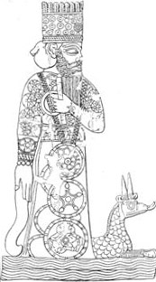
Nippur yielded its prerogatives to Marduk's Babylon when it became the
centre of the empire, and the attributes and the titles of Enlil were
transferred to Marduk. But in the doctrine of a triad of gods symbolizing
heaven, earth and water, Enlil retained the earth as his province. Enlil's
position as the second figure of the triad made his sanctuary a place of
pilgrimage to which Assyrian kings down to the days of Assur-bani-pal paid
their homage equally with Babylonian rulers.
Since the time of Dyaus was between 3080-2000, and Baal 1,720 BC-320 AD:
Nibiru, to the Babylonians, was the celestial body or region sometimes
associated with the god Marduk.
Marduk's original character is obscure, but whatever special traits Marduk
may have had were overshadowed by the reflex of the political development
through which the Euphrates valley passed and which led to imbuing him
with traits belonging to gods who at an earlier period were recognized as
the heads of the pantheon. There are more particularly two gods — Ea and
Enlil — whose powers and attributes passed over to Marduk. Marduk becomes
viewed as the son of Ea. The father voluntarily recognizes the superiority
of the son and hands over to him the control of humanity. After Hammurabi,
the cult of Marduk eclipsed that of Enlil, although the cult of Enlil
enjoyed a period of renaissance during the four centuries of Kassite
control in Babylonia (c. 1570 BC-1157 BC). The only rival to Marduk came
after 1000 BC with Anshar of Assyria. In the south, Marduk reigned
supreme.
The Enûma Elish tells the story of Marduk's birth, heroic deeds and
becoming the ruler of the gods. It includes the fifty names of Marduk. In
Enûma Elish, a civil war between the gods was growing to a climactic
battle. The Anunnaki gods gathered together to find one god who could
defeat the gods rising against them. Marduk answered the call and was
promised the position of head god. When he killed his enemy, he "wrested
from him the Tablets of Destiny, wrongfully his" and assumed his new
position. Under his reign humans were created to bear the burdens of life
so the gods could be at leisure.
In late Babylonian astrology, Marduk was connected to the planet Jupiter.
As the ruler of the late Babylonian pantheon, he was equated with the
Greek god Zeus (Latin Jupiter), hence the name of the planet. Marduk was
associated with the sun, similarly to Ra. Marduk rose to power starting
circa 2200 BC, and the Egyptian god Amun-Ra which the Theban Egyptian
rulers worshipped also rose to power at around this time. This coincides
with the fact that the Era of Aries started at around 2200 BC and might
have some relationship. Nabu, god of wisdom, is a son of Marduk.
[The time of Dyaus was between 3080-2000, and Baal 1,720 BC-320 AD.]
The Baal cycle was a Canaanite cycle of stories regarding Baal. They
were found written in a kind of cuneiform alphabet on a series of clay
tablets found in the Tell of Ugarit. There are several tales about Baal
fighting Evil and Chaos, or building his palace. Baal is a Semitic title
and honorific meaning lord that is used for various gods, spirits and
demons particularly of the Levant.
"Baal" can refer to any god and even to human officials; in some
mythological texts it is used as a substitute for Hadad, a god of the sun,
rain, thunder, fertility and agriculture, and the lord of Heaven. Since
only priests were allowed to utter his divine name Hadad, Baal was used
commonly. Nevertheless, few if any Biblical uses of "Baal" refer to Hadad,
the lord over the assembly of gods on the holy mount of Heaven, but rather
refer to any number of local spirit-deities worshipped as cult images,
each called baal and regarded as an "idol".
Because more than one god bore the title "Ba'al" and more than one goddess
bore the title "Ba'alat" or "Ba'alah," only the context of a text can
indicate which Ba'al 'Lord' or Ba'alath 'Lady' a particular inscription or
text is speaking of.
Though the god Hadad (or Adad) was especially likely to be called Ba'al,
Hadad was far from the only god to have that title. The Baal cycle places
the dwelling of Ba'al/Hadad on Mount Zephon, so one can probably take as
evident that references to Ba'al Zephon in the Tanach and in inscriptions
and tablets refer to Hadad. It is said that Ba'al Pe'or, the Lord of Mount
Pe'or, whom Israelites were forbidden from worshipping (Numbers 1-25) was
also Hadad. In the Canaanite pantheon, Hadad was the son of El, who had
once been the primary god of the Canaanite pantheon, and whose name was
also used interchangeably with that of the Hebrew god, Yahweh.
1 Kings 16.31 relates that Ahab, king of Israel, married Jezebel, daughter
of Ethba'al, king of the Sidonians, and then served habba'al ('the
Ba'al'.) The cult of this god was prominent in Israel until the reign of
Jehu, who put an end to it (2 Kings 10.26).
It is uncertain whether "the Ba'al" 'the Lord' refers to Melqart, to
Hadad, who was also worshipped in Tyre, or Ba'al Shamîm 'Lord of Heaven'
who was also worshipped in Tyre and often distinguished from Hadad. King
Ahab, despite supporting the cult of this Ba'al, remained at the same time
also a follower of Yahweh. Ahab still consulted Yahweh's prophets and
cherished Yahweh's protection.
The worship of Ba'al Hammon flourished in the Phoenician colony of
Carthage. Ba'al Hammon was the supreme god of the Carthaginians and is
generally identified by modern scholars either with the northwest Semitic
god El or with Dagon, and generally identified by the Greeks with Cronus
and by the Romans with Saturn.
Classical sources relate how the Carthaginians burned their children as
offerings to Ba'al Hammon. Such a devouring of children fits well with the
Greek traditions of Cronus.
Ba'al Hammon's female cult partner was Tanit. Ba'alat Gebal ("Lady of
Byblos") appears to have been generally identified with 'Ashtart. At first
the name Baal was used by the Jews for their God without discrimination,
but as the struggle between the two religions developed, the name Baal was
given up in Judaism as a thing of shame, and even names like Jerubbaal
were changed to Jerubbesheth.
Since Ba'al simply means 'Lord', there is no obvious reason why it could
not be applied to Yahweh as well as other gods. Perhaps it was. The judge
Gideon was also called Jerubaal, a name which seems to mean 'Ba'al
strives' though Judges 6.32 makes the claim that the name was given to
mock the god Ba'al, whose shrine Gideon had destroyed, the intention being
to imply: "Let Ba'al strive as much as he can ... it will come to
nothing."
After Gideon's death, according to Judges 8.33, the Israelites went astray
and started to worship the Ba'alîm (the Ba'als) especially Ba'al Berith
("Lord of the Covenant.")
'House of El Berith', that is, 'the House of God of the Covenant'. Was
Ba'al then here just a title for El? At some period Ba'al and El were used
interchangeably. 1 Chronicles 9.40. 1 Chronicles 12:5 mentions the name
Bealiah meaning "Yahweh is Ba'al."
Certainly some of the Ugaritic texts report hostility between El and
Hadad, perhaps representing cultic and religious differences reflected in
Hebrew tradition also, in which Yahweh in the Tanach is firmly identified
with El and might be expected to be somewhat hostile to Ba'al/Hadad and
the deities of his circle. But for Jeremiah and the Deuteronomist it also
appears to be monotheism against polytheism (Jeremiah 11.12): according to
the number of the streets of Jerusalem you have set up altars to burn
incense to the Ba'al. One finds in the Tanach the plural forms 'Ba'als'
and ''Ashtarts', though such plurals do not appear in Phoenician or
Canaanite or independent Aramaic sources.
Sexuality might characterize part of the cult of the Ba'als and 'Ashtarts.
Another theory is that the references to Ba'als and 'Ashtarts (and
Asherahs) are to images or other standard symbols of these deities, that
is statues and icons of Ba'al Hadad, 'Ashtart, and Asherah set up in
various high places.
Because the word Baal is used as a common substitute for the sacred name
Hadad, confusion often arises when the same word is used for other
deities, physical representations of gods and even people. Historically,
this confusion was resolved in the nineteenth century as new
archaeological evidence indicated multiple gods bearing the title Ba'al
and little about them that connected them to the sun. In 1899 an article
states that Baal was primarily a sun-god was for a long time almost a
dogma among scholars and is still often repeated. This doctrine is
connected with theories of the origin of religion which are now almost
universally abandoned. The worship of the heavenly bodies is not the
beginning of religion. Moreover, there was not, as this theory assumes,
one god Baal, worshipped under different forms and names by the Semitic
peoples, but a multitude of local Baals, each the inhabitant of his own
place, the protector and benefactor of those who worshipped him there.
In the astro-theology of the Babylonians the star of Bel was not the sun:
it was the planet Jupiter. Until archaeological digs at Ras Shamra
explaining the Syrian pantheon, the demon Ba'al Zebûb was frequently
confused with various Semitic spirits and deities entitled ba'al.
Beelzebub, or more accurately Ba'al Zebûb, was originally the name of a
deity worshipped in the Philistine city of Ekron.
Baal is a northwest Semitic word signifying 'The Lord, master, owner
(male), husband' cognate with Akkadian Bel of the same meanings. In
medieval Judaism, a rabbi who appeared to have supernatural powers was
called a Ba'al Shem 'Master of the Name' with no perception of any
connection with Ba'al as a title for a pagan god.
The Anunnaki consist of:
1) EnlilThe Stars in the Bible
2) Enki En-Ki (Ea)
3) Inanna
4) Ninhursag
5) Ninlil
6) Nannar
7) Utu
The Mesopotamian divine council had 12 members (at times 8 gods are
considered the council, but 12 is the more prevalent number). In
Sumero-Mesopotamian religion the head of the Anunnaki council was not
Shamash the sun god, but the Great Anu (later, Marduk), of Uruk and the
other members were his offspring. His place was taken by Enlil (En=lord,
lil=wind,air), who at some time was thought to have separated heaven and
earth.
[This is like Hirto,
one half of the shell ascended, the other half became the foundation of
the world.]
This resulted in an ongoing dispute between Enlil of Nippur and his half
brother Enki of Eridu regarding the legitimacy of Enlil's assumption of
leadership. Enki (En=lord, Ki=Earth), in addition to being the God of
fresh water, was also God of wisdom and magic. When the Igigi went on
strike and refused to continue to work maintaining the universe, on the
Shappatu (Hebrew: shabbat, Eng. sabbath) Enki created humankind to assume
responsibility for the tasks the Gods no longer performed. The Anunnaki
were the High Council of the Gods, and Anu's companions. They were
distributed through the Earth and the Underworld. The best known of them
were Asaru, Asarualim, Asarualimnunna, Asaruludu, En-Ki (Ea), Namru,
Namtillaku and Tutu.
The Sumerians believe in the existence of a planet that orbits two solar
systems called Nibiru which is home to two races; the Anu and the
Nephillium. Every 3,600 years this celestial body enters our solar system.
Babylonian syncretism and Gnosticism
At the Fifth Congress of Orientalists (Berlin, 1882)
Kessler brought out the connection between Gnosis and the Babylonian
religion, not the original religion of Babylonia, but the syncretistic
religion which arose after the conquest of Cyrus. When Cyrus entered
Babylon in 539 BC, two great worlds of thought met, and syncretism in
religion began.
The persuasion that the planetary system had a fatalistic influence on
this world's affairs, stood its ground on the soil of Chaldea. The
greatness of the Seven — the sacred Hebdomad
(the Moon, Mercury, Venus, Mars, the Sun, Jupiter, and Saturn) symbolized
for millennia by the staged towers of Babylonia, remained undiminished.
They ceased to be worshipped as deities, but remained archontes
and dynameis, rulers and powers whose force was dreaded by man. They were
changed from gods to evil spirits. Beyond the Hebdomad was the infinite
light in the Ogdoad, and every human
soul had to pass the adverse influence of the god or gods of the Hebdomad
before it could ascend to the only good God beyond.
This ascent of the soul
through the planetary spheres to the heaven beyond (an idea known to
ancient Babylonians) began to be conceived as a struggle with adverse
powers, and became the first and predominant idea in Gnosticism.
Gnostic eschatology, consisting in the soul's struggle with hostile archons in its attempt to reach the
Pleroma, is said to be the soul's ascent through the realms of the seven
planets of Babylonian astrology to Anu. The early church Father Origen,
referring to the Ophitic system, gives the names of the seven
archons as Jaldabaoth, Jao, Sabaoth, Adonaios,
Astaphaios, Ailoaios, and Oraios, and tells us:
Jaldabaoth (Child of Chaos) — Saturn, called "the Lion-faced") is the
outermost, and chief ruler, later the Demiurge.
Jao (Iao, perhaps from Jahu, Iyo)
is Jupiter.
Sabaoth (the Old-Testament title 'God of Hosts') was Mars.
Astaphaios (taken from magic tablets) was Venus.
Adonaios was the Sun (the Hebrew term for "the Lord", used of God; Adonis
of the Syrians represented the Winter sun in the cosmic tragedy of Tammuz;
in the Mandaean system Adonaios represents the Sun).
Ailoaios, or sometimes Ailoein (Elohim, God), Mercury.
Oraios (Jaroah? or light?), the Moon.
[The Chaldæans call the God Dionysos (or Bacchus), Iao in the Phoenician tongue (instead of the intelligible Light), and he is also called Sabaoth [This word is Chaldee, TzBAUT, meaning hosts; but there is also a word SHBOH, meaning The Seven], signifying that he is above the Seven poles, that is the Demiurgos.]
| Planet | Hierarchy | Muse | Aeon | Sephirah | Steiner/Heindel |
| Latin/Greek | [Spirits of ...] | ||||
|
The Three Degrees ... The Holy Trinity |
Ain Soph | ||||
| Primum Mobile | Seraphim | Kether | Love | ||
| 8. Fixed Stars | Cherubim | (Zodiac) | Hokmah | Harmonies | |
| 7. Saturn | Throni | Polyhymnia | Ialdabaoth | Binah | Will |
| 6. Jupiter | Dominationes/Kyriotetes | Euterpe | Iao | Hesed | Wisdom |
| 5. Mars | Potestates/Dynameis | Erato | Sabaoth | Geburah | Movement/Motion/Individuality |
| 4. Sun | Principatus/Archai | Melpomene | Adonaios | Tipheret | Form |
| 3. Venus | Virtues/Exusiai | Terpsichore | Astaphaios | Netzach | Personality, Egoism/Mind |
| 2. Mercury | Archangels | Calliope | Ailoaios | Hod | Fire |
| 1. Moon | Angels/Messengers | Clio | Oraios | Hesod | Twilight |
| 0. Earth | Thalia | Malkuth | |||
The woodcut (left) by Franchino Gafori (1508) shows a correspondence between the Chaldean planets on the right, the Muses on the left and the tones and intervals of the Pythagorean musical scale (Lydian, Phrygian, Dorian etc.) in the middle. At the bottom is planet Earth represented as the center of this cosmos, surrounded by the four ancient elements. At the top is Apollo treading on the three-headed serpent.
The Spindle of Necessity provides a model of the solar system given by:
| Orbit 1 | Stars (outermost) |
| Orbit 2 | Saturn |
| Orbit 3 | Venus |
| Orbit 4 | Mars |
| Orbit 5 | Mercury |
| Orbit 6 | Jupiter |
| Orbit 7 | Sol |
| Orbit 8 | Moon |
Plato's concept of eight spheres operating in musical harmony one with
another became the standard model of the universe until the 17th century
AD. By Hellenistic times (ca. 300 BC) Plato's ordering of the spheres
became arranged by the apparent speed at which each planet moved around
the Earth. Thus the ordering became: Fixed Stars, Saturn, Jupiter, Mars,
Sun, Venus, Mercury and Moon.
When precession became a clearly understood phenomenon, the eighth sphere
was divided into a ninth sphere which became the primum mobile, and a new
eighth sphere which held the fixed stars which were perceived as moving
with respect to the sphere of the primum mobile. Components of the primum
mobile are the vernal point, the celestial equator, the other equinox, and
the solstices.
Plato's Myth of Er says:
... they came to a place where they could see from above a line of
light, straight as a column, extending right through the whole heaven
and through the earth, in color resembling the rainbow, only brighter
and purer; another day's journey brought them to the place, and there,
in the midst of the light, they saw the ends of the chains of heaven let
down from above: for this light is the belt of heaven, and holds
together the circle of the universe, like the under-girders of a ship.
From these ends is extended the spindle of Necessity, on which all the
revolutions turn. The shaft and hook of this spindle are made of steel,
and the whorl is made partly of steel and also partly of other
materials. Now the whorl is in form like the whorl used on earth; and
the description of it implied that there is one large hollow whorl which
is quite scooped out, and into this is fitted another lesser one, and
another, and another, and four others, making eight in all, like vessels
which fit into one another; the whorls show their edges on the upper
side, and on their lower side all together form one continuous whorl.
This is pierced by the spindle, which is driven home through the centre
of the eighth. The first and outermost whorl has the rim broadest, and
the seven inner whorls are narrower, in the following proportions — the
sixth is next to the first in size, the fourth next to the sixth; then
comes the eighth; the seventh is fifth, the fifth is sixth, the third is
seventh, last and eighth comes the second. The largest (of fixed
stars) is spangled, and the seventh
(or sun) is brightest; the eighth
(or moon) colored by the reflected light of the seventh; the second and fifth (Saturn and
Mercury) are in color like one another, and yellower than the
preceding; the third (Venus) has
the whitest light; the fourth (Mars)
is reddish; the sixth (Jupiter)
is in whiteness second. Now the whole spindle has the same motion; but,
as the whole revolves in one direction, the seven inner circles move
slowly in the other, and of these the swiftest is the eighth; next in
swiftness are the seventh, sixth, and fifth, which move together; third
in swiftness appeared to move according to the law of this reversed
motion the fourth; the third appeared fourth and the second fifth. The
spindle turns on the knees of Necessity; and on the upper surface of
each circle is a siren, who goes round with them, hymning a single tone
or note. The eight together form one harmony; and round about, at equal
intervals, there is another band, three in number, each sitting upon her
throne: these are the Fates, daughters of Necessity, who are clothed in
white robes and have chaplets upon their heads, Lachesis and Clotho and
Atropos, who accompany with their voices the harmony of the sirens —
Lachesis singing of the past, Clotho of the present, Atropos of the
future; Clotho from time to time assisting with a touch of her right
hand the revolution of the outer circle of the whorl or spindle, and
Atropos with her left hand touching and guiding the inner ones, and
Lachesis laying hold of either in turn, first with one hand and then
with the other.
 In the Myth, souls journey along what some say is
the Milky Way to the celestial axis (the shaft) of Necessity which rests
on the knees of Ananke (or Adrasteia), the personification of "Fate" or
"Necessity". The three daughters of Necessity preside over the choosing of
lots for the fate of the soul, and join with the sirens in singing who
utter the heptachord of the music of the spheres.
In the Myth, souls journey along what some say is
the Milky Way to the celestial axis (the shaft) of Necessity which rests
on the knees of Ananke (or Adrasteia), the personification of "Fate" or
"Necessity". The three daughters of Necessity preside over the choosing of
lots for the fate of the soul, and join with the sirens in singing who
utter the heptachord of the music of the spheres.
In Oahspe, Fete has the sign of a cross inside a circle. It is the
unspoken, unwritten law of Jehovih from which none (Gods, Man and beast)
can escape. The way to avoid suffering is to do that which brings eternal
happiness.
Plato's way of happiness is also an outcome of the fates, but differs with
Oahspe in that Oahspe considers the modern concept of reincarnation to be
false. In terms of Oahspe engrafters, or 're-incarnated spirits' are those
who engraft themselves on mortals. Damons are angels
who are engrafters who usurp the corporeal body (as of an infant) and grow
up in it, holding the native spirit in abeyance.
The Myth of Er goes on to say:
When Er and the spirits arrived, their duty was to go at once to
Lachesis; but first of all there came a prophet who arranged them in
order; then he took from the knees of Lachesis lots and samples of
lives, and having mounted a high pulpit, spoke as follows: 'Hear the
word of Lachesis, the daughter of Necessity. Mortal souls, behold a new
cycle of life and mortality. Your genius will not be allotted to you,
but you choose your genius; and let him who draws the first lot have the
first choice, and the life which he chooses shall be his destiny. Virtue
is free, and as a man honours or dishonours her he will have more or
less of her; the responsibility is with the chooser — God is justified.'
When the Interpreter had thus spoken he scattered lots indifferently
among them all, and each of them took up the lot which fell near him,
all but Er himself (he was not allowed), and each as he took his lot
perceived the number which he had obtained. Then the Interpreter placed
on the ground before them the samples of lives; and there were many more
lives than the souls present, and they were of all sorts. There were
lives of every animal and of man in every condition. And there were
tyrannies among them, some lasting out the tyrant's life, others which
broke off in the middle and came to an end in poverty and exile and
beggary; and there were lives of famous men, some who were famous for
their form and beauty as well as for their strength and success in
games, or, again, for their birth and the qualities of their ancestors;
and some who were the reverse of famous for the opposite qualities. And
of women likewise; there was not, however, any definite character in
them, because the soul, when choosing a new life, must of necessity
become different. But there was every other quality, and they all
mingled with one another, and also with elements of wealth and poverty,
and disease and health; and there were mean states also. And here is the
supreme peril of our human state; and therefore the utmost care should
be taken. Let each one of us leave
every other kind of knowledge and seek and follow
one thing only. He should consider the bearing of all
these things which have been mentioned severally and collectively upon
virtue; he should know what the effect of beauty is when combined with
poverty or wealth in a particular soul, and what are the good and evil
consequences of noble and humble birth, of private and public station,
of strength and weakness, of cleverness and dullness, and of all the
soul, and the operation of them when conjoined; he will then look at the
nature of the soul, and from the consideration of all these qualities he
will be able to determine which is the better and which is the worse;
and so he will choose, giving the name of evil to the life which will
make his soul more unjust, and good to the life which will make his soul
more just; all else he will disregard. For we have seen and know that
this is the best choice both in life and after death. A man must take
with him into the world below an adamantine faith in truth and right,
that there too he may be undazzled by the desire of wealth or the other
allurements of evil, lest, coming upon tyrannies and similar villainies,
he do irremediable wrongs to others and suffer yet worse himself; but
let him know how to choose the mean and avoid
the extremes on either side, as far as possible, not only
in this life but in all that which is to come. For this is the way of happiness.
And according to the report of the messenger from the other world this
was what the prophet said at the time:
'Even for the last comer, if he chooses wisely and will live diligently,
there is appointed a happy and not undesirable existence. Let not him
who chooses first be careless, and let not the last despair.'
And when he had spoken, he who had the first choice came forward and in
a moment chose the greatest tyranny; his mind having been darkened by
folly and sensuality, he had not thought out the whole matter before he
chose, and did not at first sight perceive that he was fated, among
other evils, to devour his own children. But when he had time to
reflect, and saw what was in the lot, he began to beat his breast and
lament over his choice, forgetting the proclamation of the prophet; for,
instead of throwing the blame of his misfortune on himself, he accused
chance and the gods, and everything rather than himself. Now he was one
of those who came from heaven, and in a former life had dwelt in a
well-ordered State, but his virtue was a matter of habit only, and he
had no philosophy. And it was true of others who were similarly
overtaken, that the greater number of them came from heaven and
therefore they had never been schooled by trial, whereas the pilgrims
who came from earth, having themselves suffered and seen others suffer,
were not in a hurry to choose. And owing to this inexperience of theirs,
and also because the lot was a chance, many of the souls exchanged a
good destiny for an evil or an evil for a good. For if a man had always
on his arrival in this world dedicated himself from the first to sound
philosophy, and had been moderately fortunate in the number of the lot,
he might, as the messenger reported, be happy here, and also his journey
to another life and return to this, instead of being rough and
underground, would be smooth and heavenly.
All the souls had now chosen their lives, and they went in the order of
their choice to Lachesis, who sent with them the genius whom they had
severally chosen, to be the guardian of their lives and the fulfiller of
the choice: this genius led the souls first to Clotho, and drew them
within the revolution of the spindle impelled by her hand, thus
ratifying the destiny of each; and then, when they were fastened to
this, carried them to Atropos, who spun the threads and made them
irreversible, whence without turning round they passed beneath the
throne of Necessity; and when they had all passed, they marched on in a
scorching heat to the plain of Forgetfulness, which was a barren waste
destitute of trees and verdure; and then towards evening they encamped
by the river of Unmindfulness, whose water no vessel can hold; of this
they were all obliged to drink a certain quantity, and those who were
not saved by wisdom drank more than was necessary; and each one as he
drank forgot all things. Now after they had gone to rest, about the
middle of the night there was a thunderstorm and earthquake, and then in
an instant they were driven upwards in all manner of ways to their
birth, like stars shooting. My counsel is that we hold fast ever to the
heavenly way and follow after justice and virtue always, considering
that the soul is immortal and able to endure every sort of good and
every sort of evil. Thus shall we live dear to one another and to the
gods.
Here is the description of the creation of these spheres from the
Timaeus of Plato.
"And thus the whole mixture out of which he cut these portions was all
exhausted by him. This entire compound he divided lengthways into two
parts, which he joined to one another at the centre like the letter X,
and bent them into a circular form, connecting them with themselves and
each other at the point opposite to their original meeting-point; and,
comprehending them in a uniform revolution upon the same axis, he made
the one the outer and the other the inner circle. Now the motion of the
outer circle he called the motion of the same, and the motion of the
inner circle the motion of the other or diverse. The motion of the same
he carried round by the side to the right, and the motion of the diverse
diagonally to the left. And he gave dominion to the motion of the same
and like, for that he left single and undivided; but the inner motion he
divided in six places and made seven unequal circles having their
intervals in ratios of two-and three, three of each, and bade the orbits
proceed in a direction opposite to one another; and three [Sun, Mercury,
Venus] he made to move with equal swiftness, and the remaining four
[Moon, Saturn, Mars, Jupiter] to move with unequal swiftness to the
three and to one another, but in due proportion."
In c. 500 AD a poem by Martianus Cappella entitled De Nuptiis
Philologiae told of the courtship of Mercury and Philologia that travels
up through the planetary spheres to the castle of Zeus, where their
wedding takes place. During the journey, the Gods of the planets are
identified. The planetary spheres are moved by the Muses
emitting the sounds of "Music of the Spheres". Also, the intervals between
the planetary spheres are correlated with the Pythagorean musical
intervals of the seven tone scale. It formed the cosmology later revived
by the allegorical marriage performed in heaven called Chemical Nuptials
of Christian Rosencrutz.
In the Middle Ages the Hellenistic Muses were replaced with the Celestial
Hierarchy of Dionysius. Robert Fludd (born 1574) united the Chaldean
planets and the angelic hierarchy at the time when three Rosicrucian
Manifestoes were made public (1614).
The nine-fold planetary hierarchy which corresponds to the ninefold
angelic hierarchy of Dionysius represents the ancient seven Chaldean
planets with the addition of earth at the bottom and the sphere of the
zodiac at the top. The doctrine of the ascent of
the soul through seven successive stages of being or consciousness is said
to originate with the Babylonian myth of Tammuz and Ishtar. Later, this
doctrine appears in the Poimandres of Hermes, the royal arches of Enoch,
the seven heavens of St. John's Revelation and
Mohammed's Night Journey To Heaven with the angel Gabriel.
The doctrine of the planetary spheres was accepted by Gnostics at the
School of Alexandria. In 'On the Origin of the World' given above the
Demiurge of Saturn gave birth out of himself to six sons or aeons, who
together became the seven planetary spirits of the created material world.
Gnostic wisdom, bearing a mixture of the Christos and Greek Platonics was
lost in the destruction of the great library of Serapeum by Emperor
Theodosius and his followers.
Neoplatonism, Christian
Mysticism and Ascension
The teaching of the ascent and descent of souls through the celestial
gateways is further developed by Plotinus (~204-270) into the concept of
emanations to bridge the gap between an infinite, spiritual and
immaterial, and unchanging Source or God that lies beyond matter, with a
finite, material, and changing world. The explanation of physical
phenomena involves the participation in higher levels of the chain of
being.
A series of supernatural intermediaries, hierarchy and abstract
mathematicals describe the steps in the creative descent and a mystical
ascent back to the One. The influence of the celestial spheres on human
life, the occult virtues of natural objects and the Neoplatonic theory of
correspondences between material objects and spiritual intermediaries are
because sensible nature is derived from and correlated with the
immaterial. The individual soul emulates the Plotinian act of creation by
travelling down through the 7 cosmic spheres.
The 'Beauty' that Plato described the supreme being by became an archetype
of the supreme One with a spiritual purpose (that was largely unconscious)
to attract and lift the human soul toward the One. Alienation is a
Platonic term to describe the individual soul separated from its spiritual
home while imprisoned in the body. Beauty leads the embodied soul to
remember and long for its true spiritual home.
The mystic used Plotinus' negative dialectic to successively deny
attributes of that intermediary, eventually stripping the concept of the
One of all multiplicity and imperfection and arriving at an "unknowing" of
the One.
The ultimate union with the One also ultimately required an act of love.
This was developed by Augustine and Pseudo-Dionysius as a theology of
union through love, and courtly love became a 'Platonic' love that led to
a mystic journey and spiritual ascent, as seen in Petrarch, Dante and the
romance of the Grail legends. This negative journey is implicit in
concepts like the 'cloud of unknowing' and the 'dark night of the soul'.
Plotinus pointed out that three types are predisposed to undertake the
mystical ascent: the philosopher, the musician, and the lover.
The creative descent is illustrated in Botticelli's Primavera (~1478) by
an ecstatic dance supervised by Eros. Mercury (Hermes) reaches upward for
the return to the beyond.
In Dante's 'Paradisio' Beatrice describes the nine choirs of angels and
their association with the nine spheres of
heaven, a cosmology taken from the Neoplatonist
Pseudo-Dionysius' Celestial Hierarchy.
Ficino's (1433-1499) Neoplatonic Academy in Florence was a spiritual
community that incorporated mysticism and the gradual ascent to God
through the Neoplatonic emanations.
The music of the spheres
Hesiod (8th century BC) described the Muses as female
divinities who dance on Mount Helicon. (Some Greeks place the Muses on Mt.
Olympus and some place them on Mt. Parnassus.) The Muses danced in a
sacred grove in "bright places" adorned with works of art. The Muses and
Graces, who are also goddesses, unite in dance under the direction of Apollo. The seeker climbed Mount Helicon from a dark
valley towards the light where the Muses were dancing. He ascended from
confusion in the valley and drew towards the light and clarity of divine
"One." As the climber reached great heights he could see breathtaking
vistas and hear the choral music of the Muses. Enchanted by the divine
music, he joined the dance. The poet or the musician who has danced with
the Muses descends the mountain inspired by the laws of beauty, harmony
and grace. He sang enchanted songs to the barbarians in the dark miasma in
the valley and directed them towards the light so that they could become
civilised men.
Pythagoras discovered that exact ratios of vibrating string produce
harmonies. Since music is based upon ratios of
numbers, he concluded that music is the ordering principle of the world.
The Greek word for ratio is logos, which also means reason and word.
Therefore, a reasoning intelligence, namely God, must lie behind the
orderly creation. Man has the gift of reason and can discern something
about the order of the cosmos. Music is designed to reflect the larger
harmonies that exist in the universe and assists human reason in
discerning those harmonies.
Aristotle theorized that the planets and stars are set upon concentric
crystalline spheres which rotate around the earth. He said that if
Pythagoras is correct about ratios, the heavenly spheres are arranged in
harmonic ratios. Each sphere produces a musical tone, and the revolution
of the various spheres in concert produces harmonies and melodies. The
"music of the spheres" vibrates through the world and we can accompany
this music and participate in the harmony of the universe.
Schools of Europe made music one of seven disciplines of study. Through
the work of these Christian scholars, the "One" of Hesiod became God and
the "logos" of Pythagoras became Christ. However, Hesiod's account of the
ascent of mount Helicon did not match Aristotle's Music of the Spheres. It
required the thinkers of the High Middle Ages, who had a genius for
synthesis, to reconcile these two models of music and find a place for
them in Christian spirituality.
The ascent of Mount Helicon is similar to the Neoplatonic ascent to the
One, developed by Plotinus (3rd century). Christian mystics were already
using an adapted form of the techniques of Plotinus in their meditations
and prayers seeking union with God. The Gregorian Chant with its mystical,
detached and other-worldly evocations was the perfect accompaniment for
this form of mystical spirituality. St. Thomas Aquinas (13th century) used
Hesiod's mountain ascent to the light and to the One because it fit the
mystic spirituality of ascent in stages to union with God. The first half
of the ascent was an arduous struggle. This involved the arduous process
of practicing painful spiritual disciplines. The second was the mystic
flight. Instead of dancing with Muses the mystic soars upward and hears
the music of the spheres as he is approaching union with God. The scholar
has to master classical Latin with pain and suffering on the first half of
the mountain climb before he can soar with joy as he reads the classics.
The musician has to painfully master the difficult techniques of his art
before he can play the music of the spheres and soar to sublime delights.
Dante's ascent up the spiral road of Mount Purgatory in Purgatorio is like
Aquinas' painful ascent of the lower half of the mountain. Dante (14th
century) was guided by Virgil.
At the top of Mount Purgatory Dante found the earthly paradise, the end of
earthly labors. The next part of his journey was to soar upwards by sheer
grace from the top of Mount Purgatory to the crystalline spheres. Dante
heard the music of the spheres as he ascended through nine concentric
crystalline spheres of heaven in his journey towards union with God.
Dante's guide to the spheres was Beatrice, who served as Dante's Muse.
Dante integrated Hesiod's concept by having Beatrice appear on the
mountain top. He integrated Aristotle's music of the spheres by having
Dante and Beatrice ascend up to the spheres of heaven. Dante's mystic
flight after struggling up the spiral mountain corresponds to Aquinas'
sequence of struggling half way up the mountain and flying the second
half. By depicting Purgatory as a journey and a heavy labor, Dante
reconciled Catholic doctrine with Hesiod and with Neoplatonic spirituality
and music.
After Copernicus discovered that the earth revolved around the sun, the
music of the spheres became a metaphor instead of a sound made by literal
crystalline spheres. The Renaissance, Protestant Reformation, and Catholic
Counter-reformation each added metaphysical substance to replace the
literal cosmology of Dante. Renaissance philosophy sponsored a renewed
popularity of the metaphysics of Neoplatonism. The great chain of being
represented an ontological hierarchy of higher and higher levels of being.
Artists and poets began to climb mountains to meditate and seek
inspiration from their Muses in the higher altitudes of being. Musicians
climbed mountains hoping to hear the music of the spheres. They still
believed in the spheres and Muses, as metaphysical states of being, but
not as physical entities.
Protestant music conceptually returned to the concept of Pythagoras, which
was harmony as logos, logos as the Word of God and The Logos as Christ. A
new music of proclamation of the Word and praise sprang up. Bach, a German
Lutheran, wrote a cantata based upon the following passage from Psalm 19.
Notice how this passage perfectly harmonizes proclamation and praise.
"The heavens declare the glory of God, and the firmament showeth his handiwork. Day unto day uttereth speech, and night unto night showeth knowledge. There is no speech nor language where their voice is not heard. Their line is gone out through all the world and their words to the end of the world."
Composer Jean Sibelius, a Lutheran from Finland, hearkened back to Saint
Clement when he wrote that "the essence of man's being is his striving
after God. The music is brought to life by means of the logos."
The Catholic Church of the Counter-reformation was the inspiration of
baroque music, architecture and culture. The theme of this culture was
grandeur and obedience. Kings began to claim to rule by divine right. Dieu
et Mon Droit (God and My Right) was their motto. The church had a very
close relationship with these kings. Cardinal Richelieu ruled France. The
court of the pope, known as "The Holy See," had a great throne from which
the pope ruled. When he made a statement "Ex Cathedra" (from the throne)
that statement allegedly had the authority of infallibility. "Cathedrals"
were the thrones of bishops, or contained such thrones surrounded by
baroque glory.
The influence of an intense rationalism in philosophy led to the
development of the techniques of harmony which were mastered by the period
1700-1750, the era of Bach and Handel. The rigorous technical
mountain-climbing phase of musical development was almost over and the
time to soar in bliss was at hand.
Then came the golden era of Mozart and Haydn. In 1755, a controversy
erupted about whether harmony or melody should dominate in music. Rameau
argued that harmony should dominate because music should bring reason and
order to a disordered world. Harmony is the rational principle in music
(the "classical" view). Rousseau argued that melody should dominate over
harmony. The spirit soars with the melody and the spiritual aspirations of
man take flight (the "Romantic" theory).
Baroque music was classical in that harmony was emphasised. Mozart was a
transitional composer between classical and romantic music and struck a
balance between melody and harmony. Haydn spanned from the late Baroque to
the early Romantic eras of music composition. Beethoven wrote many purely
classical pieces, but his melodies often soared with such sublimity or
struck with lightning flashes of such passion that the melody dominated
the harmony in a new way. He was the first great composer of the Romantic
era.
"Composers, in their creative work respond and give voice to certain
metaphysical visions. Most composers speak explicitly in philosophical
terms about the nature of the reality they try to reflect. When the forms
of musical expression change radically, it is always because the
underlying metaphysical grasp of reality has changed as well."
"For 2,500 years music in the west had a shared concept of reality. But by
the early twentieth century, this was no longer true. Music was
re-conceptualized so completely that it could no longer be called music,
i.e., with melody, harmony and rhythm. This rupture was a reflection of a
deeper metaphysical divide that severed the composer from any meaningful
contact with external reality. As a result, art was reduced to the
arbitrary fragments of sound."
Then the new contemporary music, cut off from external reality, comes from
a subjective inner world, the same realm from which pagan tribes get their
music of primeval rhythm and chant inspired by shamans.
Composer John Adams said that tonality died when Nietzsche's God died.
"When God disappears, the intelligible order
of the creation disappears. If there is no God, Nature no longer serves as
a reflection of its Creator. If you lose the Logos of St. Clement, you
also lose the ratio (logos) of Pythagoras. Nature is stripped of its
normative power."
If there is no preexisting intelligible order to go out to and apprehend,
and to search through for what lies beyond it — which is the Creator —
what then is music to express? If external order does not exist, then
music collapses in on itself. Any ordering of things becomes simply the
whim of man's will (and no one has any grounds for criticizing the whim of
another man). "Without a 'music of the spheres' to approximate, modern
music, like the other arts, begins to unravel. Music's self-destruction
became logically imperative once it undermined its own foundation."
Twentieth century music collapsed into nihilism; in the hope that
composers seek to return to tonal music anchored in a higher metaphysics.
"Cicero spoke of music as enabling man to return to the divine region, implying a place once lost to man. What is it, in and about music, that gives one an experience so outside of oneself that one can see reality anew, as if newborn in a strange but wonderful world? British composer John Tavener proposes an answer to this mystery in his artistic credo: 'My goal is to recover one simple memory from which all art derives. The constant memory of the paradise from which we have fallen leads to the paradise which was promised to the repentant thief. The gentleness of our sleepy recollection promises something else. That which we once perceived in a glass darkly, we shall see face to face.' We shall not only see; we shall hear, as well, the New Song."
http://www.renewamerica.us/columns/hutchison/050228
Later in 'On the Origin of the World' the seven
authorities and their angels laid plans and came to Adam
and Eve saying,
"The fruit of all the trees created for you in Paradise shall be
eaten; but as for the tree of knowledge, control yourselves and do not
eat from it. If you eat, you will die."
The Beast [the instructor] who in this account is made to be the wisest of
all creatures says,
"What did God say to you? Was it 'Do not eat from the tree of
knowledge'? Do not be afraid. In death you shall not die. For he knows
that when you eat from it, your intellect will become sober and you will
come to be like gods, recognizing the difference that obtains between
evil men and good ones. Indeed, it was in jealousy that he said this to
you, so that you would not eat from it."
Eve had confidence in the words of the instructor.
She gazed at the tree and saw that it was beautiful and appetizing, and
liked it; she took some of its fruit and ate it; and she gave some also
to her husband, and he too ate it. Then their intellect became open. For
when they had eaten, the light of knowledge had shone upon them. When
they clothed themselves with shame, they knew that they were naked of
knowledge. When they became sober, they saw that they were naked and
became enamoured of one another. When they saw that the ones who had modelled them had the form of
beasts, they loathed them: they were very aware.
[It's possible that the solution to this riddle is given to us in the Kore Kosmou]
The Catholic Encyclopedia says the Naassenes (from Nahas, the Hebrew for
serpent) were worshippers of the serpent as a symbol of wisdom, which the
God of the Jews tried to hide from men.
The Ophites (ophianoi, from ophis, serpent), recognized the serpent as
symbol of the supreme emanation, Achamoth or Divine Wisdom (Zoe-Sophia).
[Sophia Achamoth or Lower Wisdom, the daughter of Higher Wisdom, became
the mother of the Demiurge, said by some to be the God of the Jews].
According to the Peratae there exists a trinity of Father, Son, and Hyle
(Matter). The Son is the Cosmic Serpent, who freed Eve from the power of
the rule of Hyle. The universe they symbolized by a triangle enclosed in a
circle. The number three is the key to all mysteries.
[One form of pantheism, present in the early stages of Greek philosophy,
held that the divine is one of the elements in the world whose function is
to animate the other elements that constitute the world. This point of
view, called Hylozoistic (Greek hyle, "matter," and zoe, "life")
pantheism, is not monistic, as are most other forms of pantheism, but
pluralistic.]
Gnostic salvation is not merely individual redemption of each human soul;
it is a cosmic process. It is the return of all things to what they were
before the flaw in the sphere of the Æons brought matter into existence
and imprisoned some part of the Divine Light into the evil Hyle (matter).
This setting free of the light sparks is the process of salvation.
[Naga, or Nagas, the Indian mythological snake, remained in Hebrew as Nahas — snake. In Hindu legends of the Nagas, the Nagas are snake-shaped beings who came from one of seven worlds (levels of a subterranean nether world) and are the keepers of mighty powers of consciousness. Aboriginal legends state that serpent beings waged many wars around Ayers Rock (in the heart of Australia). According to legends cobras are descended from the Nagas, Serpent gods of Bharat, or ancient India. Their worship has been traced to prehistoric Dravidian times before the Aryan invasion (almost 1600 BC). The Nagas' power to inflict disproportionate physical damage or almost instantaneous death is explained in the Hindu Vedas as paralleling the energy of creation or fire. The Nagas are said to have appeared at the birth of Gautama Siddhartha and the Serpent also played a large part in the legends surrounding Krishna. Pilgrims would travel to the Lake of the Great Nagas, Lake Manosarowar, or to Mount Kailas, the abode of Shiva. Naga (the 'naked') babas of India are 'warrior ascetics'.]
Yaldabaoth [the craftsman or workman, the Demiurge, Samael, Saklas, Satan], Pistis's own reflection and breath in the chaos, whose motion was like a lion is not unlike the evil God Baugh-Ghan-Ghad in Book of Saphah, who resembles the Sphinx of the Great Pyramid (which is said to be over 10,000 years old by some) goes forth fearless like a lion. Thousands of years after Apollo, he similarly declares that the sun and earth are under His feet. His mortal representative (also Baugh-Ghan-Ghad) is descended from Baugh-ghan-ghad, and by Him incarnates in Mi, virgin of the corporeal world. Like the Jewish and possibly Egyptian High priest (a Cohen), the chief priest was called Kohen. The chief evil spirit manifests a light in the midst of black smoke, showing a man's face of fire, and having the body (dark) of a lion.
From "Adversus Haereses" by Irenaeus about Ophite mythos
Creation began as a series of emanations:
Bythos (Depth); Father of All (the First Man); Ennoia, the Son of Man (the
Second Man); The Holy Spirit, the First Woman; Water; Darkness; The Abyss;
Chaos.
Of the beauty of the Holy Spirit, both First and Second Man became
enamoured, and they generated from her a third male, an Incorruptible
Light, called Christ. But the excess of light with which she had been
impregnated was more than she could contain, and while Christ her
right-hand birth was borne upward with his mother, forming with the First
and Second Man the True and Holy Church, a drop of light fell on the left
hand downwards into the world of matter, and was called Sophia (Wisdom) or
Prunikos, an androgynous being.
By this arrival the still waters were set in motion, all things rushing to
embrace the Light, and Prunikos wantonly playing with the waters, assumed
to herself a body, without the protection of which the light was in danger
of being completely absorbed by matter. Yet when oppressed by the
grossness of her surroundings, she strove to escape the waters and ascend
to her mother, the body weighed her down, and she could do no more than
arch herself above the waters, constituting thus the visible heaven. In
process of time she was able to free herself from the encumbrance of the
body, and leaving it behind to ascend to the region immediately above.
Meanwhile a son, Yaldabaoth, born to her from her contact with the waters,
having in him a breath of the incorruptible light left him from his
mother, by means of which he works, generates from the waters a son
without any mother. And this son in like manner another, until there were
seven Archons, ruling the seven heavens; a Hebdomad which their mother
completes into an Ogdoad.
Yaldabaoth, Iao, Sabaoth, Adonaios, Elaios, Astaphanos, Horaios
(or=light). But it came to pass that these sons strove for mastery with
their father Yaldabaoth, whereat he suffered great affliction, and casting
his despairing gaze on the dregs of matter below, he, through them,
obtained a son Ophiomorphus, the serpent-formed
Nous, whence come the spirit and soul, and all things of
this lower world; but whence came also oblivion, wickedness, jealousy,
envy, and death. Yaldabaoth, stretching himself over his upper heaven, had
shut out from all below the knowledge that there was anything higher than
himself, and having puffed up with pride at the sons whom he had begotten
without help from his mother, he cried, "I am Father and God, and above me
there is none other."
On this his mother, hearing him, cried out "Do not lie, Yaldabaoth, for
above thee is the Father of All, the First Man, and the Son of Man."
When the heavenly powers marvelled at this voice, Yaldabaoth, to call off
their attention, exclaimed, "Let us make man after our image." Then the
six powers formed a gigantic man, the mother Sophia having given
assistance to the design, in order that by this means she might recover
the Light-fluid from Yaldabaoth. For
the man whom the six powers had formed, lay unable to raise itself,
writhing like a worm until they brought it to their father, who breathed
into it the breath of life, and so emptied himself of his power. But the
man having now Thought and Conception (Nous
and Enthymesis), forthwith gave thanks to the First Man, disregarding
those who had made him. At this Yaldabaoth planned to despoil the man by
means of a woman, and formed Eve, of whose beauty the six powers being
enamoured generated sons from her, namely, the angels. Then Sophia devised
by means of the serpent to seduce Eve
and Adam to transgress the precept of Yaldabaoth; and Eve, accepting the
advice of one who seemed a Son of God, persuaded Adam also to eat of the
forbidden tree. And when they ate they gained knowledge of the power which
is over all, and revoked from those who had made them. Thereupon
Yaldabaoth cast Adam and Eve out of Paradise; but the mother had secretly
emptied them of the Light-fluid in
order that it might not share the curse or reproach. So they were cast
down into this world, as was also the serpent who had been detected in
working against his father. He brought the angels here under his power,
and himself generated six sons, a counterpart of the Hebdomad. These seven
demons always oppose and thwart the human race on whose account their
father was cast down.
Adam and Eve at first had light and clear spiritual bodies, which on their
fall became dull and gross; and their spirits were also languid because
they had lost all but the breath of this lower world which their maker had
breathed into them; until Prunikos taking pity on them gave them back the
sweet odour of the Light-fluid through which they woke to a knowledge of
themselves and knew that they were naked.
Then Yaldabaoth is represented as making a series of efforts to obtain
exclusive adoration for himself, while he is counteracted by Prunikos, who
strives to enlighten mankind as to the existence of higher powers more
deserving of adoration. In particular the prophets who were each the organ
of one of the Hebdomad, the glorification of whom was their main theme,
were nevertheless inspired by Sophia to make fragmentary revelations about
the First Man and about Christ above, whose descent also she caused to be
predicted.
Sophia, having no rest either in heaven or on earth, implored the
assistance of her mother, the First Woman. She, moved with pity at her
daughter's repentance, begged of the First Man that Christ
should be sent down to her assistance. Sophia announced his advent by
John, prepared the baptism of repentance, and by means of Yaldabaoth, got
ready a woman to receive the annunciation from Christ, in order that there
might be a pure and clean vessel to receive him, namely Jesus, who, being
born of a virgin by divine power, was wiser, purer, and more righteous
than any other man. Christ then descended through the seven heavens,
taking the form of the sons of each as he came down, and deprived each of
their rulers of his power. For wheresoever Christ came the Light-fluid
rushed to him, and when he came into this world he first united himself
with his sister Sophia, and they refreshed one another as bridegroom and
bride, and the two united descended into Jesus, who thus became Jesus
Christ. Then he began to work miracles, and to announce the unknown
Father, and to declare himself manifestly the son of the First Man. Then
Yaldabaoth and the other princes of the Hebdomad, being angry, sought to
have Jesus crucified, but Christ and Sophia did not share his passion,
having withdrawn themselves into the incorruptible Aeon. But Christ did
not forget Jesus, but sent a power which raised his body up, not his flesh
and blood body, for this cannot lay hold of the kingdom of God, but his animal and spiritual body. So it was that
Jesus did no miracles, either before his baptism, when he was first united
to Christ, or after his resurrection, when Christ had withdrawn himself
from him. Jesus then remained on earth after his resurrection eighteen
months, at first himself not understanding the whole truth, but
enlightened by a revelation subsequently made him, which he taught to a
chosen few of his disciples, and then was taken up to heaven.
The story proceeds to tell that Christ, sitting on the right hand of the
father Yaldabaoth, without his knowledge, enriches himself with the souls
of those who had known him, inflicting a corresponding loss on Yaldabaoth.
For as righteous souls instead of returning to
him are united to Christ, Yaldabaoth is less and less
able to bestow any of the Light-fluid on souls afterwards
entering this world, and can only breathe into
them his own animal breath. The consummation of all things
will take place when, by successive union of righteous souls with Christ,
the last drop of the Light-fluid
shall be recovered from this lower world.
The Poemander of the Corpus Hermeticum also speaks of "Light, the Mind, and God" who preceded a "Moist Nature" [Mi?] that appeared out of Darkness. It depicts the Mind as being God, itself an androgynous being (hermaphrodite), being Male and Female, Life and Light, brings forth by his Word [verbal expression?] the Workman, being God of the Fire and the Spirit, like 'Yaldabaoth' fashioned and formed seven Governors of the Sensible World.
The Stoics believed that terrestrial bodies (sun, moon, stars) are nourished by vapours or humidity (from the sea, fountains, the earth), and that the inclinations of the souls of the dead attracted to their nature a humid spirit of watery skin. They, evoked by bile and blood and ensnared by corporeal love, condense this watery vehicle like a cloud and become visible, apparitions of images, spirits coloured by the influence of imagination. But pure souls are averse from generation.
From Poemander of Hermes
Trismegistus
When he had thus said, he was changed in his Idea or Form and
straightway in the twinkling of an eye, all things were opened unto me:
and I saw an infinite Sight, all things were become light, both sweet
and exceedingly pleasant; and I was wonderfully delighted in the
beholding it.
5. But after a little while, there was a darkness made in part, coming
down obliquely, fearful and hideous, which seemed unto me to be changed
into a Certain Moist Nature, unspeakably troubled, which yielded a smoke
as from fire; and from whence proceeded a voice unutterable, and very
mournful, but inarticulate, insomuch that it seemed to have come from
the Light.
6. Then from that Light, a certain Holy Word joined itself unto Nature,
and out flew the pure and unmixed Fire from the moist Nature upward on
high; it is exceeding Light, and Sharp, and Operative withal. And the
Air which was also light, followed the Spirit and mounted up to Fire
(from the Earth and the Water) insomuch that it seemed to hang and
depend upon it.
7. And the Earth and the Water stayed by themselves so mingled together,
that the Earth could not be seen for the Water, but they were moved,
because of the Spiritual Word that was carried upon them.
Poemander said "I am that Light, the Mind, thy God, who am before that
Moist Nature that appeareth out of Darkness, and that Bright and
Lightful Word from the Mind is the Son of God. Understand it, That which
in thee Seeth and Heareth, the Word of the Lord, and the Mind, the
Father, God, Differeth not One from the Other, and the Unison of these
is Life. But first conceive well the Light in thy mind and know it."
10. When he had thus said, for a long time we looked steadfastly one
upon the other, insomuch that I trembled at his Idea or Form.
11. But when he nodded to me, I beheld in my mind the Light that is in
innumerable, and the truly indefinite Ornament or World; and that the
Fire is comprehended or contained in or by a most great Power, and
constrained to keep its station.
12. Pimander said "Hast thou seen in thy mind that Archetypal Form,
which was before the Interminated and Infinite Beginning?" Trismegistus:
"But whence, or whereof are the Elements of Nature made?"
Pimander: "Of the Will and Counsel of God; which taking the Word, and
beholding the beautiful World (in the Archetype thereof) imitated it,
and so made this World, by the principles and vital Seeds [corporeal
entity?] or Soul-like productions of itself."
13. For the Mind being God, Male and Female, Life
and Light, brought forth by his Word another Mind, the Workman
(separated from the Father, being in the sphere of Generation or
operation) and seven Governors, which in their Circles contain the Sensible World, whose Government
or Disposition is called Fate.
14. Straightway leaped out, or exalted itself from the downward born
Elements of God, the Word of God into the clean and pure Workmanship of
Nature, and was united to the Workman, Mind, for it was Consubstantial;
and so the downward born Elements of Nature were left without Reason,
that they might be the only Matter.
15. But the Workman, Mind, together with the Word, containing the
Circles and Whirling them about, turned round as a Wheel his own
Workmanships, and suffered them to be turned from an indefinite
Beginning to an undeterminable End; for they always begin where they
end.
16. And the Circulation or running round of these, as the Mind willeth,
out of the lower or downward-born Elements brought forth unreasonable or
brutish creatures, for they had no reason, the Air flying things, and
the Water such as swim.
17. And the Earth and the Water was separated, either from the other, as
the Mind would: and the Earth brought forth from herself such Living
Creatures as she had, four-footed and creeping Beasts, wild and tame.
18. But the Father of all things, the Mind being Life and Light, brought
forth Man, like unto himself, whom he loved as his proper Birth, for he
was all beauteous, having the Image of his Father.
19. For indeed God was exceedingly enamoured of his own Form or Shape,
and delivered unto it all his own Workmanships. But he seeing and
understanding the Creation of the Workman in the whole, would needs also
himself Fall to Work, and so was separated from the Father, being in the
sphere of Generation or operation.
20. Having all Power, he considered the Operations or Workmanships of
the Seven; but they loved him, and every one made
him partaker of his own Order.
21. And he learning diligently and understanding their Essence, and
partaking their nature, resolved to pierce and break through the
Circumference of the Circles, and to understand the Power of him that
sits upon the Fire.
22. And having already all power of mortal things, of the Living, and of
the unreasonable Creatures of the World, stooped down and peeped through
the Harmony, and breaking through the strength of the Circles, so shewed
and made manifest the downward-born Nature, the fair and beautiful Shape
or Form of God.
23. Which when he saw, having in itself the unsatiable Beauty and all
the Operation of the Seven Governors, and the Form or Shape of God, he
Smiled for love, as if he had seen the Shape or Likeness in the Water,
or the shadow upon the Earth of the fairest Human form.
24. And seeing in the Water a shape, a shape like unto himself in
himself he loved it, and would cohabit with it; and immediately upon the
resolution, ensued the Operation, and brought forth the unreasonable
Image or Shape.
25. Nature presently laying hold of what it so much loved, did wholly
wrap herself about it, and they were mingled, for they loved one
another.
26. And for this cause, Man above all things that live upon Earth, is
double; Mortal because of his Body, and Immortal because of the
substantial Man: For being immortal, and having power of all things, he
yet suffers mortal things, and such as are subject to Fate or Destiny.
27. And therefore being above all Harmony, he is made and become a
servant to Harmony. And being Hermaphrodite, or Male and Female, and
watchful, he is governed by and subjected to a Father, that is both Male
and Female and watchful.
29. This is the Mystery that to this day is hidden, and kept secret; for
Nature being mingled with Man brought forth a Wonder most wonderful; for
he having the Nature of the Harmony of the Seven, from him whom I told
thee, the Fire and the Spirit, Nature continued not, but forthwith
brought forth seven Men all Males and Females and sublime, or on high,
according to the Natures of the Seven Governors."
In 'A Valentinian Exposition' from The Nag Hammadi Library, its inspiration most likely being of Looeamong maybe before he took the name Kriste, it says:
The Father, that is the root of All, the ineffable One who dwells in the Monad. He dwells alone in silence, and silence is tranquillity, since after all he was a Monad, and no one was before Him. He dwells in the Dyad, and in the Pair, and his Pair is silence. And he possessed the All Dwelling within Him. And as for Intention and Persistence, Love and Permanence, they are indeed unbegotten. God came forth: the Son, mind of the All that is, it is from the Root of the All that even His thought stems, since he had this one (the Son) in mind.
Here the 'spouse of the creator' is silence.
The Silence of the Monad in the 'Valentinian Exposition' may be of some
use in understanding the opening lines in 'The Book of Judgment':
"the words of Judgment in God's light, (Jehovih's Son), as the Word came to (or was rendered by) Es, Daughter of Jehovih"
Seemingly as immediate as His Silence is His Wisdom. The following is from the King James Version of the Bible, Book of Proverbs:
8:1 Doth not wisdom cry? and understanding put forth her voice?
8:2 She standeth in the top of high places, by the way in the places of
the paths.
8:3 She crieth at the gates, at the entry of the city, at the coming in
at the doors.
8:4 Unto you, O men, I call; and my voice is to the sons of man.
8:5 O ye simple, understand wisdom: and, ye fools, be ye of an
understanding heart.
8:6 Hear; for I will speak of excellent things; and the opening of my
lips shall be right things.
8:7 For my mouth shall speak truth; and wickedness is an abomination to
my lips.
8:8 All the words of my mouth are in righteousness; there is nothing
froward or perverse in them.
8:9 They are all plain to him that understandeth, and right to them that
find knowledge.
8:10 Receive my instruction, and not silver; and knowledge rather than
choice gold.
8:11 For wisdom is better than rubies; and all the things that may be
desired are not to be compared to it.
8:12 I wisdom dwell with prudence, and find out knowledge of witty
inventions.
8:13 The fear of the LORD is to hate evil: pride, and arrogancy, and the
evil way, and the froward mouth, do I hate.
8:14 Counsel is mine, and sound wisdom: I am understanding; I have
strength.
8:15 By me kings reign, and princes decree justice.
8:16 By me princes rule, and nobles, even all the judges of the earth.
8:17 I love them that love me; and those that seek me early shall find
me.
8:18 Riches and honour are with me; yea, durable riches and
righteousness.
8:19 My fruit is better than gold, yea, than fine gold; and my revenue
than choice silver.
8:20 I lead in the way of righteousness, in the midst of the paths of
judgment:
8:21 That I may cause those that love me to inherit substance; and I
will fill their treasures.
8:22 The LORD possessed me in the beginning of his way, before his works
of old.
8:23 I was set up from everlasting, from the beginning, or ever the
earth was.
8:24 When there were no depths, I was brought forth; when there were no
fountains abounding with water.
8:25 Before the mountains were settled, before the hills was I brought
forth:
8:26 While as yet he had not made the earth, nor the fields, nor the
highest part of the dust of the world.
8:27 When he prepared the heavens, I was there: when he set a compass
upon the face of the depth:
8:28 When he established the clouds above: when he strengthened the
fountains of the deep:
8:29 When he gave to the sea his decree, that the waters should not pass
his commandment: when he appointed the foundations of
the earth:
8:30 Then I was by him, as one brought up with him: and I was daily his
delight, rejoicing always before him;
8:31 Rejoicing in the habitable part of his earth; and my delights were
with the sons of men.
8:32 Now therefore hearken unto me, O ye children: for blessed are they
that keep my ways.
8:33 Hear instruction, and be wise, and refuse it not.
8:34 Blessed is the man that heareth me, watching daily at my gates,
waiting at the posts of my doors.
8:35 For whoso findeth me findeth life, and shall obtain favour of the
LORD.
8:36 But he that sinneth against me wrongeth his own soul: all they that
hate me love death.
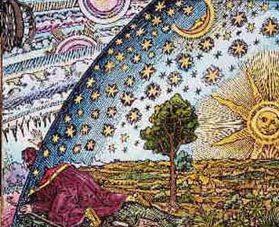
Is Es the same as Mi?
The English Oahspe has a note (No.6) at the end of the
book of Saphah which discriminates between the earth (Ah, Pan) in abstract
and Mi as relating to living creatures. Mi, the "earth as our Mother", is
the womb in which the spirit of a mortal dwells (his earth body), while
the Ever-Present Spirit which impregnates the world is called Father.
I venture to say that there is a dividing line between Es and Mi,
Es being the emancipated realms and Mi,
the womb of the lower heavens (earthly passions and desires).
In the Book of Apollo Ch. XI it says:
I blow My breath upon a corporeal world, and man springeth forth into life, the highest of My created lights. In the womb of Mi, I fashion his spirit. When he is shapely and white, I deliver him. I open the heaven of suns, and warm his soul. Brighter than diamonds he cometh forth; male and female come they; as stars for My everlasting worlds. Dressed as Brides and Bridegrooms for My chambers of Light and Love.
Further on the Brides and Bridegrooms of Apollo's dawn respond:
"From Mi, my mother, the earth, who conceived me, I rise me up and go, forever."
Book of Cpenta-Armij, Chapter I says:
Three births hath the Father given unto all men. In the first, man
hath nothing to do, as to his shaping or time in his mother's womb. In
the second he hath a little more to do as to directing his course during
his mortal life; but for the third, for the higher heavens, he must work
for his own deliverance.
Cpenta-armij said: Three kinds of earth deliverance for man created the
Creator; First from his mother's womb, coming crying, blank and
helpless; second, from the tetracts (earthly passions and desires),
serious and full of fear; third, from the enemies of the Great Spirit.
This is the Feast of Spe-ta.
A first cause who is a Person out of Whom comes Mi, who conceives of and gives birth to the Son, who is the voice (word, logos) is physically mirrored in the virgin birth of Zarathustra. This, and myths based on this, would be how many early cultures resolved their origin.
The difficulty of the primordial Virgin Mi conceiving of the Inconceivable lends itself to eastern and western thought.
Logic says there is no possibility for something to come out of nothing, or it would not be nothing. Before the world is (if there is a before), we assume that God is First and transcendent, the Unbecoming, Unbegotten First Cause. If God has no evil in Him, being and experiencing only His own perfection, fullness and completeness, consisting of only Himself, where is it possible for imperfection and evil to arise out of All Good, and how is it that something less than Himself can come out of Himself, Him being the completeness and fullness, and if it could, why was it needed to do this?
Asha, the king who became a holy man [Book of God's Word] says:
Second, I'hua'Mazda, His Only Begotten Son, born of the Virgin Mi (the Substance Seen).
Here 'the Substance Seen' seems to be only what is visible (to corpor
and Es?).
In the previously quoted Oahspe passage about making
three straight lines all joined (a triangle) Mi
was described as the seen and unseen.
Mi (Shakti or Prakriti), as in Samkhya
philosophy [supposedly propounded by Kapila (Capilya)]
is depicted as the material basis of existence, the virgin which takes the
form of, or mirrors the Self (Purusha). Only love could tell when, why and
how Purusha comes into "proximity" to Prakriti, but what was said to be
initially unseen, static and potential [qualities in common with both
Purusha and Prakriti], its most essential unitary undifferentiated,
unevolved form, [which could be taken to be the 'foundation of the world'
or mother], becomes impregnated and evolves progressively into dynamic
manifestation, its seen/observed manifested differentiated material
nature.
The three in one in theistic Samkhya is: Purusha, Prakriti and Ishwara, or
Hiranyagarbha.
Tantra says Shakti/Prakriti is what lets Purusha see himself, whereas
Maya is that factor that causes Siva/Purusha to think he is separate from
manifestation, which is only illusion, dualism.
The teaching of Maya-Vada from the Advaita Vedanta school declares that
the world is Maya, an illusory appearance of the 'Reality'. Maya is
defined as that mysterious power which makes the real appear as something
which it is not. The world in itself is unreal, the 'Self' alone being
real, which is the reality underlying the world. (Just as a rope might be
mistaken for a snake, the snake obscures the rope, the world obscures the
Self.) What now appears to us as this multiple world of names and forms in
time and space is just the real Self who is the One indivisible Reality,
nameless, formless, changeless, timeless and spaceless. Appearance
excludes reality just as the false snake conceals the real rope. So long
as the Self appears to us as the world we shall not realise Him as the
Self. Apart from the Reality (Self) the world has no existence. If the
world were real, there were no unchangeable Reality without which there
can be no deliverance.
It is asserted that this teaching is not to be found in the Upanishads. It
is an invention of Sankara. More recently Ramana Maharshi testifies to it
(see Maha Yoga by Ramanasramam).
Neo-Gnostics have God (not Es) as the passive, potential principle. He
is to them timeless and unchanging, consciousness without separation. His
first thought (Barbelo) serves as the active, energetic complement, the
driving force behind creation, infinite consciousness overflowing into
multiplicity.
From the Apocryphon of John
[Some of this piece is similar to 'On the Origin of the World'.]
I [John, the brother of James — who are the sons of Zebedee] saw
in the light a youth who stood by me. While I looked at him, he became
like an old man. And he changed his likeness (again), becoming like a
servant. There was not a plurality before me, but there was a likeness
with multiple forms in the light, and the likenesses appeared through
each other, and the likeness had three forms. He said to me, John, John,
why do you doubt, or why are you afraid? You are not unfamiliar with
this image, are you? — that is, do not be timid! — I am the one who is
with you (pl.) always. I am the Father, I am the Mother,
I am the Son.
And I asked to know it, and he said to me, The Monad is a monarchy with
nothing above it. It is he who exists as God and Father of everything,
the invisible One who is above everything, who exists as incorruption,
which is in the pure light into which no eye can look.
He is the invisible Spirit, of whom it is not right to think of him as a
god, or something similar. For he is more than a god, since there is
nothing above him, for no one lords it over him. For he does not exist
in something inferior to him, since everything exists in him. For it is
he who establishes himself. He is eternal, since he does not need
anything. For he is total perfection. He did not lack anything, that he
might be completed by it; rather he is always completely perfect in
light. He is illimitable, since there is no one prior to him to set
limits to him. He is unsearchable, since there exists no one prior to
him to examine him. He is immeasurable, since there was no one prior to
him to measure him. He is invisible, since no one saw him. He is
eternal, since he exists eternally. He is ineffable, since no one was
able to comprehend him to speak about him. He is unnameable, since there
is no one prior to him to give him a name.
He is immeasurable light, which is pure, holy (and) immaculate. He is
ineffable, being perfect in incorruptibility. (He is) not in perfection,
nor in blessedness, nor in divinity, but he is far superior. He is not
corporeal nor is he incorporeal. He is neither large nor is he small.
There is no way to say, 'What is his quantity?' or, 'What is his
quality?', for no one can know him. He is not someone among (other)
beings, rather he is far superior. Not that he is (simply) superior, but
his essence does not partake in the aeons nor in time [time and
space (unseen spheres of state of being)]. For he who partakes in an
aeon was prepared beforehand.
For the perfection is majestic. He is pure, immeasurable mind [like
Sakyamuni Buddha or Brahman]. He is life-giving life. He gives the
immeasurable, incomprehensible light.
How am I to speak with you about him? His aeon is indestructible, at
rest and existing in silence, reposing (and) being prior to everything.
For he is the head of all the aeons, and it is he who gives them
strength in his goodness. For we know not the ineffable things, and we
do not understand what is immeasurable, except for him who came forth
from him, namely (from) the Father. For it is he who told it to us
alone. For it is he who looks at himself in his light which surrounds
him, namely the spring of the water of life. And it is he who gives to
all the aeons and in every way, (and) who gazes upon
his image which he sees in the spring of the Spirit. It is he who
puts his desire in his water-light which is in the spring of the pure
light-water which surrounds him.
And his thought performed a deed and she [forethought
of Barbelo but personified here to appear separate, just as the Amesha
Spentas are thought to be personified virtues or qualities of Ahura Mazda,
or at least of and attained to be one with Him] came forth, namely she
who had appeared before him in the shine of his light. This is the first
power which was before all of them (and) which came forth from his mind.
She is the forethought of the All —
her light shines like his light — the perfect power which is the image
of the invisible, virginal Spirit
who is perfect [the Unbegotten's Self-conscious Perfection
considered as a virgin, the Barbelo (Es?), none having been before Her]. The
first power, the glory of Barbelo,
the perfect glory in the aeons, the glory of the revelation, she
glorified the virginal Spirit and it was she who praised him, because
thanks to him she had come forth. This is the first thought, his image;
she became the womb of everything,
for it is she who is prior to them all, the Mother-Father,
the first man, the holy Spirit, the thrice-male,
the thrice-powerful, the thrice-named androgynous
one [as is Hermes], and the eternal aeon among the invisible
ones, and the first to come forth.
She requested from the invisible, virginal
Spirit — that is Barbelo — to give her foreknowledge. And
the Spirit consented. And when he had consented, the foreknowledge
came forth, and it stood by the forethought; it originates from the
thought of the invisible, virginal Spirit. It glorified him and his
perfect power, Barbelo [Here 'his perfect power, Barbelo' is like
Shakti is to Siva, or Prakriti to Purusha], for it was for her
sake that it had come into being.
And she requested to grant her indestructibility,
eternal life, truth. And the
invisible Spirit consented. And when he had consented they came forth
and attended and glorified the invisible, excellent Spirit and his
Barbelo, the one for whose sake they had come into being.
This is the pentad of the aeons of the Father,
which is the first man, the image of the invisible Spirit; it is the
forethought, which Barbelo, and the thought, and the foreknowledge, and
the indestructibility, and the eternal life, and the truth. This is the
androgynous pentad of the aeons, which is the decad (these and
their opposite gender) of the aeons, which is the Father.
These can be compared to the Amesha Spentas (the role of Khshathra
(Dominion) is possibly assumed by Christ).
| Gnostic | Attribute | Zoroastrian | Attribute | Hindu | |
| 1) | forethought
of the All glory of Barbelo (Pronoia) womb of everything the Mother-Father |
mind virginal Spirit, none having been before Her perfect glory in the aeons the thrice-male |
Vohu Mano | Good Mind, the Pure Heart | Prakriti |
| 2) | foreknowledge | prior acquaintance | Spenta Armaiti | Discernment between Right and Wrong | Shakti |
| 3) | indestructibility | incorruptibility | Haurvatat | Spirit of Perfection | |
| 4) | eternal life | Ameretat | Immortality | ||
| 5) | truth | will | Asha | Truth |
And he looked at Barbelo with the pure light which surrounds the invisible Spirit, and (with) his spark, and she conceived from him. He begot a spark of light with a light resembling blessedness. But it does not equal his greatness. This was an only-begotten child of the Mother-Father which had come forth; it is the only offspring, the only-begotten one of the Father, the pure Light.
[The Son is given as 'the pure Light' in this narrative. New Age terms such as Cosmic or Christ Consciousness, are not found in Oahspe. The person of the Son is not identified with a pantheistic physical universe or a man or god in this context, but with the Unbegotten Creator in manifestation, his Word in expression — 'the Expression of things'. When Christ is referred to as the 'Word', or Logos, implying that it is Christ that creates, this is erroneous, since it is Jehovih that creates. His Word is spoken and executed through a man, agent, or God. The statement "I am the light and the life" comes from the voice of Jehovih himself, and is not meant as being Christ or Osiris.]
And the invisible, virginal Spirit rejoiced over the light which came
forth, that which was brought forth first by the first
power of his forethought, which is Barbelo [Here
Barbelo is the first power which gives birth to forethought]. And he
anointed it with his goodness until it became perfect, not lacking in
any goodness, because he had anointed it with the goodness of the
invisible Spirit. And it attended him as he poured upon it. And
immediately when it had received from the Spirit, it glorified the holy
Spirit and the perfect forethought, for whose sake it had come forth.
And it requested to give it a fellow worker, which is the mind, and he
consented gladly. And when the invisible Spirit had consented, the mind
came forth, and it attended Christ,
glorifying him and Barbelo. And all these came into being in silence.
And the mind wanted to perform a deed through the word of the invisible
Spirit. And his will became a deed and it appeared with the mind; and
the light glorified it. And the word followed the will. For because
of the word, Christ the divine Autogenes created everything.
[Oahspe differs with this statement in that only Jehovih (the Unbegotten) can create, whereas the 'expression of things' (the Son's) function seems more to be the agent through whom Jehovih can have voice and expression, and in whom, together with Es (the holy Spirit, who completes the Son), Jehovih becomes manifest throughout His entirety (spiritually and cosmically, including all living creatures) and (borrowing some useful ideas from this text) through their unity in the Son they glorify and honor Him with a mighty voice.]
And the eternal life and his will and the mind and the foreknowledge
attended and glorified the invisible Spirit and Barbelo, for whose sake
they had come into being. And the holy Spirit completed the divine
Autogenes, his son, together with Barbelo, that he may attend the mighty
and invisible, virginal Spirit as the divine Autogenes, the Christ whom
he had honored with a mighty voice. He came forth through the
forethought. And the invisible, virginal Spirit placed the divine
Autogenes of truth over everything. And he subjected to him every
authority, and the truth which is in him, that he may know the All which
had been called with a name exalted above every name. For that name will
be mentioned to those who are worthy of it.
For from the light, which is the Christ, through the gift of the Spirit
the four lights appeared from the divine Autogenes. And the three are
will, thought, and life. And the four powers are understanding, grace,
perception, and prudence. And grace belongs to the light-aeon Armozel,
which is the first angel. And there are three other aeons with this
aeon: grace, truth, and form. And the second light is Oriel, who has
been placed over the second aeon. And there are three other aeons with
him: conception, perception, and memory. And the third light is
Daveithai, who has been placed over the third aeon. And there are three
other aeons with him: understanding, love, and idea. And the fourth aeon
was placed over the fourth light Eleleth. And there are three other
aeons with him: perfection, peace, and wisdom. These are the four lights
which attend the divine Autogenes, (and) these are the twelve aeons
which attend the son of the mighty one, the Autogenes, the Christ,
through the will and the gift of the invisible Spirit. And the twelve
aeons belong to the son of the Autogenes. And all things were
established by the will of the holy Spirit through the Autogenes.
And from the foreknowledge of the perfect mind, through the revelation
of the will of the invisible Spirit and the will of the Autogenes, the
perfect Man appeared, the first revelation, and the truth. It is he whom
the virginal Spirit called Pigera-Adamas, and he placed him over the
first aeon with the mighty one, the Autogenes, the Christ, by the first
light Armozel. And he glorified the invisible Spirit, saying, 'It is for
thy sake that everything has come into being and everything will return
to thee. I shall praise and glorify thee and the Autogenes and the
aeons, the three: the Father, the Mother, and the Son, the perfect
power.'
And he placed his son Seth over the
second aeon in the presence of the second light Oriel.
And in the third aeon the seed of Seth was placed over the third light
Daveithai. And the souls of the saints were placed (there). And in the
fourth aeon the souls were placed of those who do not know the Pleroma
and who did not repent at once, but who persisted for a while and
repented afterwards; they are by the fourth light Eleleth. These are
creatures which glorify the invisible Spirit.
And the Sophia of the Epinoia,
being an aeon, conceived a thought from herself and the conception of
the invisible Spirit and foreknowledge. She wanted to bring forth a
likeness out of herself without the consent of the Spirit and without
her consort. And something came out of her which was imperfect and
different from her appearance.
And when she saw the consequences of her desire, it changed into a form
of a lion-faced serpent. And she called his name Yaltabaoth.
This is the first archon who took a
great power from his mother. He created for himself other aeons with a
flame of luminous fire which (still) exists now, and begot authorities.
The fifth one is Adonaiou, who is
called Sabaoth. The sixth one is Cain, whom the generations of men call
the sun. The seventh is Abel. The
twelfth is Belias, it is he who is
over the depth of Hades. And he placed seven kings — each corresponding
to the firmaments of heaven — over the seven heavens, and five over the
depth of the abyss, that they may reign.
"Now the archon who is weak has three names. The first name is
Yaltabaoth, the second is Saklas,
and the third is Samael.
And the archons created seven
powers for themselves, and the powers created for themselves six angels
for each one until they became 365 angels.
And when the mother recognized that the garment of darkness was
imperfect she repented with much weeping. And the whole pleroma heard
the prayer of her repentance, and the holy Spirit poured over her from
their whole pleroma. And she was taken up not to her own aeon but above
her son, that she might be in the ninth until she has corrected her
deficiency.
And a voice came forth from the exalted aeon-heaven: 'The Man exists
and the son of Man.' And the chief archon,
Yaltabaoth, heard (it) and thought that the voice had come from his
mother. And he did not know from where it came. And the whole aeon of
the chief archon trembled, and the foundations of the abyss shook. And
of the waters which are above matter, the underside was illuminated by
the appearance of his image which had been revealed. And when all the
authorities and the chief archon looked, they saw the whole region of
the underside which was illuminated. And through the light they saw the
form of the image in the water.
And he said to the authorities which attend him, 'Come, let
us create a man according to the image of God, and
according to our likeness, that his image may become a light for us.'
And they created by means of their respective powers in correspondence
with the characteristics which were given. And each authority supplied a
characteristic in the form of the image which he had seen in its natural
(form). He created a being according to the likeness of the first,
perfect Man. And they said, 'Let us call him
Adam, that his name may become a power of light for us.'
And when the mother wanted to retrieve the power which she had given to
the chief archon, she petitioned the Mother-Father of the All. He sent
the five lights down upon the place of the angels of the chief archon.
They advised him that they should bring forth the power of the mother.
And they said to Yaltabaoth, 'Blow into his face something of your
spirit and his body will arise.' And he blew into his face the spirit
which is the power of his mother; he did not know (this), for he exists
in ignorance. And the power of the mother went out of Yaltabaoth into
the natural body, which they had fashioned after the image of the one
who exists from the beginning. The body moved and gained strength, and
it was luminous.
And the rest of the powers became jealous, because his intelligence was
greater than that of the chief archon. And when they recognized that he
was luminous, and that he could think better than they, and that he was
free from wickedness, they took him and threw him into the lowest region
of all matter.
But the Mother-Father had mercy on the power of the mother which had
been brought forth out of the chief archon, for the archons might gain
power over the natural and perceptible body. And he sent a helper to
Adam, luminous Epinoia which comes out of him, who is called Life.
And the luminous Epinoia was hidden in Adam, in order that the archons
might not know her, but that the Epinoia might be a correction of the
deficiency of the mother.
And the man came forth because of the shadow of the light which is in
him. And his thinking was superior to all those who had made him. They
took fire and earth and water and mixed them together with the four
fiery winds. And they brought Adam into the shadow of death, in order
that they might form him again from earth and water and fire and the
spirit which originates in matter, which is the ignorance of darkness
and desire, and their counterfeit spirit. This is the tomb
of the newly-formed body with which the robbers had
clothed the man, the bond of forgetfulness; and he became a mortal man.
This is the first one who came down, and the first separation. But the
Epinoia of the light which was in him, she is the one who was to awaken
his thinking.
And the archons took him and placed him in paradise. And they said to
him, 'Eat, that is at leisure,' for their luxury is bitter and their
beauty is depraved. And their luxury is deception and their trees are
godlessness and their fruit is deadly poison and their promise is death.
And the tree of their life they had placed in the midst of paradise.
And the savior taught the mystery of the archon's life, which is the
likeness of their spirit. The root of this (tree) is bitter and its
branches are death, its shadow is hate and deception is in its leaves,
and its blossom is the ointment of evil, and its fruit is death and
desire is its seed, and it sprouts in darkness. The dwelling place of
those who taste from it is Hades, and the darkness is their place of
rest.
"But what they call the tree of knowledge of good and evil, which is the
Epinoia of the light, they stayed in front of it in order that he (Adam)
might not look up to his fullness and recognize the nakedness of his
shamefulness. But it was the savior who
brought about that they ate [ie. the instructor, or
beast of 'On the Origin of the World'.]
John said to the savior, "Lord, was it not the serpent that taught Adam
to eat?" The savior smiled and said, "The serpent taught them to eat
from wickedness of begetting, lust, and destruction, that Adam might be
useful to him. And Adam knew that he was disobedient to the chief archon
due to light of the Epinoia which was in him, which made him more
correct in his thinking than the chief archon, who consequently brought
a forgetfulness over Adam." And John said to the savior, "What is the
forgetfulness?" And he quoted from Is 6:10, "I will make their hearts
heavy, that they may not pay attention and may not see."
Then the Epinoia of the light hid herself in Adam. And the chief archon
wanted to bring her out of his rib. But the Epinoia of the light cannot
be grasped. Although darkness pursued her, it did not catch her. And he
brought a part of his power out of him. And he made another creature, in
the form of a woman, according to the likeness of the Epinoia which had
appeared to him. And he brought the part which he had taken from the
power of the man into the female creature, and not as Moses said, 'his
rib-bone.'
And Adam saw the woman beside him. And in that moment the luminous
Epinoia appeared, and she lifted the veil which lay over his mind. And
he became sober from the drunkenness of darkness. And he recognized his
counter-image, and he said, 'This is indeed bone of my bones and flesh
of my flesh.' Therefore the man will leave his father and his mother,
and he will cleave to his wife, and they will both be one flesh.
And our sister Sophia is she who came down in innocence in order to
rectify her deficiency. Therefore she was called Life, which is the
mother of the living, by the foreknowledge of the sovereignty of heaven.
And through her they have tasted the perfect Knowledge. I appeared in
the form of an eagle on the tree of knowledge, which is the Epinoia from
the foreknowledge of the pure light, that I might teach them and awaken
them out of the depth of sleep. For they were
both in a fallen state, and they recognized their nakedness.
The Epinoia appeared to them as a light; she awakened their thinking.
And when Yaltabaoth noticed that they withdrew from him, he cursed his
earth. He found the woman as she was preparing herself for her husband.
He was lord over her, though he did not know the mystery which had come
to pass through the holy decree. And they were afraid to blame him. And
he showed his angels his ignorance which is in him. And he cast them out
of paradise and he clothed them in gloomy darkness. And the chief archon
saw the virgin who stood by Adam, and that the luminous Epinoia of life
had appeared in her.
[The Gnostics next reveal their reason for sexual abstinence.]
"Now up to the present day, sexual intercourse continued due to the
chief archon. And he planted sexual desire in her who belongs to Adam.
And he produced through intercourse the copies of the bodies, and he
inspired them with his counterfeit spirit.
And the two archons he set over principalities, so that they might rule
over the tomb [the body]. And when Adam
recognized the likeness of his own foreknowledge, he begot the
likeness of the son of man. He called him Seth, according
to the way of the race in the aeons. Likewise, the mother also sent down
her spirit, which is in her likeness and a copy of those who are in the
pleroma, for she will prepare a dwelling place for the aeons which will
come down. And he made them drink water of forgetfulness, from the chief
archon, in order that they might not know from where they came. Thus,
the seed remained for a while assisting (him), in order that, when the
Spirit comes forth from the holy aeons, he may raise up and heal him
from the deficiency, that the whole pleroma may (again) become holy and
faultless.
And I (John) said to the savior, "Lord, will all the souls then be
brought safely into the pure light?" He said to me, "Great things have
arisen in your mind, for it is difficult to explain them to others
except to those who are from the immovable race. Those on whom the
Spirit of life will descend and (with whom) he will be with the power,
they will be saved and become perfect and be worthy of the greatness and
be purified in that place from all wickedness and the involvements in
evil. Then they have no other care than the incorruption alone, to which
they direct their attention from here on, without anger or envy or
jealousy or desire and greed of anything. They are not affected by
anything except the state of being in the flesh alone, which they bear
while looking expectantly for the time when they will be met by the
receivers (of the body). Such then are worthy of the imperishable,
eternal life and the calling. For they endure everything and bear up
under everything, that they may finish the good fight and inherit
eternal life.
I said to him, "Lord, the souls of those who did not do these works
(but) on whom the power and Spirit descended, will they be rejected?" He
said, "If the Spirit descended upon them, they will in any case be
saved, and they will change. For the power will descend on every man,
for without it no one can stand. And after they are born, then, when the
Spirit of life increases and the power comes and strengthens that soul,
no one can lead it astray with works of evil. But those on whom the
counterfeit spirit descends are drawn by him and they go astray."
And I said, "Lord, where will the souls of these go when they have come
out of their flesh?" And he said, "The soul in which the power will
become stronger than the counterfeit spirit, is strong and it flees from
evil and, through the intervention of the incorruptible one, it is
saved, and it is taken up to the rest of the aeons."
And I said, "Lord, those, however, who have not known to whom they
belong, where will their souls be?" And he said, "In those, the
despicable spirit has gained strength when they went astray. And he
burdens the soul and draws it to the works of evil, and he casts it down
into forgetfulness. And after it comes out of (the body), it is handed
over to the authorities, who came into being through the archon, and
they bind it with chains and cast it into prison, and consort with it
until it is liberated from the forgetfulness and acquires knowledge. And
if thus it becomes perfect, it is saved."
And I said, "Lord, how can the soul become smaller and return into the
nature of its mother or into man?" Then he said, "That soul is made to
follow another one (fem.), since the Spirit of life is in it. It is
saved through him. It is not again cast into another flesh."
[It seems that reincarnation is rejected.]
And I said, "Lord, these also who did not know, but have turned away,
where will their souls go?" Then he said to me, "To that place where the
angels of poverty go they will be taken, the place where there is no
repentance."
And I said, "Lord, from where did the counterfeit spirit come?" Then he
said, "The Mother-Father, i.e., the Epinoia of the foreknowledge of
light, raised up the offspring of the perfect race and its thinking and
the eternal light of man. When the chief archon realized that they were
exalted above him in the height, he wanted to seize their thought, not
knowing that they surpassed him in thinking, and that he will not be
able to seize them.
"He and his authorities (his powers) committed adultery with Sophia, and
bitter fate was begotten through them, which is the last of the
changeable bonds. And it is of a sort that is interchangeable. And it is
harder and stronger than she with whom the gods united, and the angels
and the demons and all the generations until this day. For from that
fate came forth every sin and injustice and blasphemy, and ignorance and
every severe command. And thus the whole creation was made blind, in
order that they may not know God, who is above all of them. And because
of the chain of forgetfulness, their sins were hidden. For they are
bound with measures and times and moments, since fate is lord over
everything.
I, therefore, the perfect Pronoia of the all, changed myself into my
seed, for I existed first, going on every road.
For I am the richness of the light; I am the remembrance of the pleroma.
And I went into the realm of darkness and I endured till I entered the
middle of the prison. And the foundations of chaos shook. And I hid
myself from them because of their wickedness, and they did not recognize
me.
Again I returned for the second time, and I went about. I came forth
from those who belong to the light, which is I, the remembrance of the
Pronoia. I entered into the midst of darkness and the inside of Hades,
since I was seeking (to accomplish) my task. And the foundations of
chaos shook, and again I ran up to my root of light, lest they be
destroyed before the time. Still for a third time I went — I am the
light which exists in the light, I am the remembrance of the Pronoia —
that I might enter into the midst of darkness and the inside of Hades.
And I filled my face with the light of the completion of their aeon. And
I entered into the midst of their prison, which
is the prison of the body. And I said, 'He who hears, let
him get up from the deep sleep.' And he wept and shed tears. Bitter
tears he wiped from himself and he said, 'Who is it that calls my name,
and from where has this hope come to me, while I am in the chains of the
prison?' And I said, 'I am the Pronoia of the pure light; I
am the thinking of the virginal Spirit, who raised you up
to the honored place. Arise and remember that
it is you who hearkened, and follow your root, which is I,
the merciful one, and guard yourself against the angels of poverty and
the demons of chaos and all those who ensnare you, and beware of the
deep sleep and the enclosure of the inside of Hades. And I raised him
up, and sealed him in the light of the water with five seals, in order
that death might not have power over him from this time on. And behold,
now I shall go up to the perfect aeon. I have completed everything for
you in your hearing. And I have said everything to you that you might
write them down and give them secretly to your fellow spirits, for this
is the mystery of the immovable race.'
John 14:26 But the Comforter, which is the Holy Ghost, whom the
Father will send in my name, he shall teach you all things.
Isaiah 66:13 As one whom his mother comforteth, so will I comfort you.
The Peshitta Aramaic of Romans 8:16 opens with "And 'she' the Ruach
gives testimony..."
Rom. 8:16 The Spirit itself beareth witness with our spirit, that we
are the children of God.
There are numerous Jewish and Christian groups who think the gender of
the Holy Spirit is feminine because of the Hebrew word for Spirit, Ruach,
though the Greek word for Spirit (Pneuma) is neuter, and the Latin one is
masculine, because the Logos ("oracles" — words) of God were said to be
given unto the Jews (Rom. 3:1, 2). King James translators understood the
concept of Christ having His own Spirit (feminine counterpart), by using
the terms "Holy Spirit" (Mother — Spirit of God), and "Holy Ghost"
(Daughter — Spirit of Christ). The B'nai Yashua Synagogues holds to the
feminine view of the Holy Spirit (Ruach HaKodosh).
Islamic interpretations consider the Holy Spirit (Arabic: ruhul qudus) to
be the archangel Gabriel, signifying its role as an Agent of Revelation.
Gabriel delivered the Word of God to Muhammad. The actual term "Holy
Spirit" is used in the following verses in the Qur'an: 2:87; 2:253; 5:110;
and 16:102. In these verses, the Holy Spirit is strongly supportive of
Moses, Jesus, and Muhammad in their divine missions. In Islam, angels are
genderless and have no will of their own, meaning it is impossible for
them to disobey God.
Christians that trace their roots to belief in the Nicene Creed view the
Holy Spirit as God himself or the Breath of God, a form of God, or a
manifestation of God. Other Christians believe the Holy Spirit to be one
of three main entities. The Holy Spirit is the One who guides a person to
correctly interpret and understand the word of God. Since He knows each
person perfectly, and it is understood that people think differently, He
can transfer information to people in ways that they would comprehend it
(Acts of the Apostles 2:7). The Holy Spirit is the Spirit of the Eternal
God and the unity of the Divine Trinity. He is different from Jesus in
that He does not have a physical manifestation and that He dwells in and
amongst God's people as a spiritual guide, counselor or a Comforter,
guiding people in the way of the truth.
The Spirit dwells inside everyone's body being His temple (1 Corinthians
3:16).
The Holy Spirit enables a person to access his or her own innate
abilities. Gifts that may be bestowed include prophecy, tongues, healing,
and knowledge. The experience of the Holy Spirit is
referred to as being "anointed", signifying a sign
of Confirmation, called "chrismation" in the Churches of the East. Its
full force can be grasped only in the primary anointing of Jesus. Christ
(in Hebrew "messiah") means the one "anointed" by God's Spirit. Water
signifies one Spirit in Baptism, the living water welling up in us to
eternal life, and fire symbolizes the transforming energy of the Holy
Spirit's actions.
Trinitarian doctrine sees Jesus as specially in possession of the Spirit
for the purpose of granting the Spirit to mankind, uniting them with
Himself, and in Himself also uniting them with the Father. In John, the
gift of the Spirit is equivalent to eternal life, knowledge of God, power
to obey, and communion with one another and with the Father.
The Catholic Church states "No one comprehends the thoughts of God
except the Spirit of God." It makes known his Word, his living Utterance,
but the Spirit does not speak of himself. The Spirit who "has spoken
through the prophets" makes us hear the Father's Word, but we do not hear
the Spirit himself. The world cannot receive [him], because it neither
sees him nor knows him.
"The Word and the Holy Spirit is brought to completion in the Church,
which is the Body of Christ and the Temple of the Holy Spirit. Thus the
Church's mission is not an addition to that of the Holy Spirit, but is its
sacrament in her whole being and members. Because the Holy Spirit is the
anointing of Christ, it is Christ who, as the head of the Body, pours out
his Holy and sanctifying Spirit among his members of his Body to nourish,
heal, give them life, and organize them.
Christians believe the "Fruit of the Spirit is love (Gk: agape), joy,
peace, patience, kindness, goodness, faithfulness, gentleness, [and]
self-control."
Some Christians claim that when they align themselves with God the Holy
Spirit dwells inside of them.
With the infusion of the Holy Spirit Christians can live with a holiness
of character. The Holiness movement, at times has been looked upon as
legalism, and sometimes went that path. Yet the call to holiness of
character should not be perverted by history. One who follows the Holy
Spirit and is indwelled by the Spirit will live a life that has the fruit
of the Spirit coming out of it, but this is not only for our own benefit,
it is to serve God, and others.
The movement of the Holy Spirit gives power for serving the kingdom of God
and to glorify Him.
In the belief of many nontrinitarian religions (Christadelphians,
Unitarians and Jehovah's Witnesses) the Holy Spirit is God's spirit or
God's active force, and not an actual person. Some Christadelphians
believe that the Holy Spirit/Comforter is an Angel.
The Church of Jesus Christ of Latter-day Saints teaches that the name
"Holy Spirit" has many references, depending on its usage and the context
in which it appears. The term "Holy Spirit" can denote the Holy Ghost;
Spirit; the Spirit of God; Spirit of the Lord; Spirit of Christ (or Light
of Christ) or even Spirit of Truth. Latter-day Saints teach that these
terms are distinct from one another, showing the many aspects and/or
functions of God.
According to the New Catholic Encyclopedia, "The Old Testament does not
envisage God's spirit as a person, neither in a philosophical sense, nor
in the Semitic sense. God's spirit is simply God's Power. If it is
sometimes represented as being distinct from God, it is because the breath
of Yahweh acts exteriorly (Isa. 48:16; 63:11; 32:15). Rarely do the OT
writers attribute to God's spirit emotions or intellectual activity (Isa.
63:10; Wis.1:3-7). When such expressions are used, they are mere figures
of speech that are explained by the fact that the RUAH was regarded also
as the seat of intellectual acts and feeling (Gen. 41:8).
Neither is there found in the OT or in rabbinical literature the notion
that God's spirit is an intermediary being between God and the world. This
activity is proper to the angels, although to them is ascribed some of the
activity that elsewhere is ascribed to the spirit of God."
Roman Catholic teaching has always held the Holy Spirit to be a distinct
Person of the Trinity, not just an aspect or manifestation of some
attribute of the Father or the Son.
According to the Binitarianist 'Living Church of God', "The Holy Spirit is
the very essence, the mind, life and power of God. It is not a Being. The
Spirit is inherent in the Father and the Son, and emanates from Them
throughout the entire universe (1 Kings 8:27; Psalm 139:7; Jeremiah
23:24). It was through the Spirit that God created all things (Genesis
1:1-2; Revelation 4:11). It is the power by which Christ maintains the
universe (Hebrews 1:2-3). It is given to all who repent of their sins and
are baptized (Acts 2:38-39) and is the power (Acts 1:8; 2 Timothy 1:6-7)
by which all believers may be 'overcomers' (Romans 8:37; Revelation
2:26-27) and will be led to eternal life."
Plutarch writes of the famous Forty-seventh Proposition of Pythagoras,
erroneously attributed to Euclid, which states that the hypotenuse of a
right-angled triangle is equal to the sum of the squares of the other two
sides:
"Universal Nature, in its utmost and most perfect extent, may be
considered as made up of Intelligence, Matter and Kosmos, a word which
equally signifies either beauty and order or the world itself. The first
of these is what Plato is wont to call the Idea, the Examplar, and the
Father; to the Second of them he has given the name of the Mother, the
Nurse, and the Place and Receptacle of Generation; and to the latter of
them, that of the Offspring, and the Production."
The Egyptians likened this universal Nature to a "most beautiful and
perfect triangle", and Plato likened it to his Commonwealth.
Thich Nhat Hanh, a Vietnamese monk in the Zen tradition, who worked
tirelessly for peace during the Vietnam War, rebuilding villages destroyed
by the hostilities, now internationally known for his teaching on
mindfulness, advocates the practice of observing the coming and going,
being and non-being which is subject to individual perception in order to
get to the self-existent truth which lies in its midst, or in the moment.
Sethantes Ch. XX says "no self-existence of his own made I man, but from
Myself."
Transcendentalist Henry David Thoreau, 1817-1862, said "it's not what you
look at but what you see."
In the Oahspe opening passage:
"All was. All is. All ever shall be. The All spoke and motion was, is
and ever shall be; and, being positive, was called He and Him. The ALL
MOTION was his speech. He said, I AM! And He comprehended all things,
the seen and the unseen. Nor is there anything in all the universe but
what is part of him."
it is not clear whether what is corpor existed in 'the All', or whether His Speech (All Motion) churned this into existence. Does the universe begin when corpor is precipitated out of a homogenous, unified beginning (a Monad), or did Spirit, plasma, the stars, even civilisations always exist somewhere while elsewhere they were just forming [similar to a Steady State Theory, but including the Unseen realms]?
Also in:
He is three things in one which are, first, the ghost, the soul, which is
incomprehensible; second, the beast, the figure, the person which is
called individual; and third, the expression, to receive and to impart.
These three comprise all things; and all things are but one; nor were
there more, nor ever shall be. Nevertheless, each have infinite parts,
with every part like unto the whole. Each of all created things have these
three attributes in them.
It is also not explained how the Expression of things, to receive and to impart, the Voice, word or Logos, the All Speech, the All Communion refers to the Son or Vivanho or Apollo etc.
Common to many philosophies there is an agent between the incomprehensible Father, and the cosmos (Mother, nature). Western thought sees the soul (psuche) as the agent between Plato's "intuitable archetype or Form" and its imaged realm of becoming (nature).
In Ch 2 of his 4th Ennead, the Neoplatonist Plotinus says:
"that sun in the divine realm is Intellect and next after it is soul,
dependent upon it and abiding while Intellect abides. This soul gives
the edge of itself which borders on this [visible] sun to this sun, and
makes a connection of it to the divine realm through the medium of
itself, and acts as an interpreter of what comes from this sun to the
intelligible sun and from the intelligible sun to this sun.
One could deduce that the souls when they leave the intelligible first enter the space of heaven. For if heaven is the better part of the region perceived by the senses, it borders on the last and lowest parts of the intelligible."
[The word "Intelligible" is used in the Platonic sense, to denote a mode of being, power or perception, transcending intellectual comprehension distinct from, and superior to, ratiocination. The ancients recognised three modes of perception, viz., the testimony of the various senses, the ordinary processes of intellectual activity, and intelligible conceptions. The anatomy of the Soul was carried farther than this. Ultimately it was identical with divinity, yet in manifested being it was highly complex.]
For the Gnostics the first born undifferentiated only begotten Son of
the Father is the result of the Father (unmanifest — except through his
Son, Christ) conceiving of Himself. Therefore Christ was the image of All
Knowledge and embodiment of the universe in a form able to be comprehended
by us (which makes us wonder how the ancients understood I'hua'Mazda), and
we are contained in Christ and he in us (according to Valentinus and
possibly Paul the apostle).
[St. Paul used the terms pleroma, the æon of this world, the archon of the
power of the air, in Ephesians and Colossians.]
From the Book of 1 John:
4:8 He that loveth not knoweth not God; for God is love.
4:9 In this was manifested the love of God toward us, because that God
sent his only begotten Son into the world, that we might live through
him.
4:12 If we love one another, God dwelleth in us, and his love is
perfected in us.
4:13 Hereby know we that we dwell in him, and
he in us, because he hath given us of his Spirit.
4:16 And we have known and believed the love that God hath to us. God is
love; and he that dwelleth in love dwelleth in God, and God in him.
4:17 Herein is our love made perfect; as he is, so are we in this world.
Most Christians yield authority to a council of men who made themselves
sole interpreters of this point. Hindus and Confucians, rather, turn
diversity to their own advantage and become enriched by it.
I'll post an article about Capilya's Samkhya Philosophy and how Sattva,
Atman, Hiranyagarbha, Adi-purusha, Mahat and Boddhi are terms expressing
the Indian understanding of this.
The Urantia Book and Swedenborg also have light to offer on this subject.
The Nag Hammadi text 'Eugnostos' offers an
interesting elaboration (probably with unnecessary complications and
flaws) upon this where it says (in effect):
'The eternal unborn, infinite, everlasting Forefather or "Father of the
Universe" of no beginning or end, of no name and form [namarupa,
ie, not an individual being, but All Person] of unsurpassed semblance [or
of no likeness to anything in Heaven or the World] and unchanging
good, looks simultaneously to every side, every direction [as does
Brahma] to above and below, to the innermost and outermost, and
confronts His own unbegotten existence, his ineffable joy, light and
rest, His All Perfect reflection, as in a mirror, and knows Himself (as
in Oahspe "He said, I AM! And He comprehended all things").
Embracing all mind, thought, reflection, rationality and power equally,
(born of the foreknowledge of "Unbegotten"), and by the majesty
and authority that is in Him, He becomes Self-Father and begetter, the
beginning and principle of what is visible, and decides to have his
likeness to become a Great Power.
[The Taittiriyaka-Upanishad, Second Valli, Seventh Anuvaka sheds
light on this, saying:
'In the beginning this was non-existent (not yet defined by form and
name). From it was born what exists. "That" made itself its "Self",
therefore it is called the Self-made. That which is Self-made is a
flavour (can be tasted), for only after perceiving a flavour can any one
perceive pleasure. Who could breathe, who could breathe forth, if that
bliss (Brahman) existed not in the ether (in the heart)? For he alone
causes blessedness.']
The Eugnostos continues:
The beginning (principle) of that Light
became Immortal Man, androgynous, comprising of the male who is
Begotten, Perfect (Mind), and the female of whom is All Wisdom,
Sophia, the begettress, who resembles Her brother/consort. She is
uncontested Truth, for below Her Aeon (Sphere/era), 'error'
contests with 'truth'.
[Here the Son is a hypostatised power of the Father's desire, rather
than born of Mi]
This self-perfected begetter, the First Man [Adam of Light,
primordial Purusha, Adi-Buddha, or
"cosmic Buddha" of the Kalacakra teachings or "Grand Man"]
reflected with Great Sophia, His Consort, and revealed His first
begotten Son, named 'Son of Man', or 'Son of God'.
[In the Gnostic 'Sophia of Jesus Christ' he is called Christ (probably
the origin of the term for Jesus as the Son of
Man), who also being androgynous, has His female name,
Sophia, Mother of the Universe, called Love.]
His kingdom is full of shining ineffable light and joy, imperishable
glory and measureless jubilation.
Then Son of Man (Christ) consented
with Sophia and revealed a Great Androgynous Light. His masculine name
is Saviour, his feminine, Pistis Sophia.
[Son of Man can be taken as a Greek literal translation of the Aramaic idiom which was in common use as a synonym of "man", thus signifying that Jesus was the man par excellence. However the Christian claims of Jesus being God, meaning that he was Son of Man seem to imply a "Gnostic" origin. In Gnostic tradition "The Man," or "Man," was a title of the Logos; "Son of Man" was therefore a very appropriate designation for one who was "kin to Him," that is, one in whom the "Light-spark" was bursting into a "Flame."]
The Eugnostos, which is without apparent Christian influence, and not recognised as Gnostic, was used by a Christian Gnostic editor as he composed the 'Sophia of Jesus Christ'. The Eugnostos, which is vaguely believed to be from the first century BC, and the 'Sophia of Jesus Christ', which is vaguely believed to be from the first century AD, are compared in the Nag Hammadi texts.
The 'Eugnostos' itself doesn't use the word 'Christ', but uses the
original term 'first begotten Son', 'Son of Man', or 'Son of God'. Only
the term Saviour is used, referring to the light revealed by the 'Son of
Man's' (Christ's) consent with Sophia.
This suggests that the Eugnostos is how Triune doctrine stood until over
forty years after Joshu's death, when Looeamong falsely assumed the name
Christ.
Amitabha, the Buddha of boundless, immeasurable light, the fourth of
five Buddhas of meditation [Vairochana, Vajra-Sattva, Ratna-Sambhava,
Amitabha and Amogha-Siddhi] represents the Buddha essence innate in man.
Avalokiteshvara, Manjushri and Vajra-pani are the Three Chief Teachers.
Avalokiteshvara is said to be the spiritual offspring of Amitabha who
resides in Devachan (realm of the Devas). He is a Bodhisattva, one who has
renounced his right to enter Nirvana in order to help guide mankind to the
Great Liberation. The Dalai (grand) Lama is said to be the incarnation of
Avalokiteshvara whose first historical representative in Tibet was
1391-1475 AD.
Tibet's guru Padma-Sambhava who re-established Mahayana in Tibet and
spread it throughout the world, is said to be the divine incarnation of
Avalokiteshvara, born in a lotus from the emanation of Amitabha. The
Buddha's prophecy of the birth of Padma-Sambhava says Padma comes 12 years
after his death, yet Padma arrived in Tibet in 747 AD.
The mantra 'Om Mani Padme Hum' [Om the Jewel in the Lotus Hum], makes
direct appeal to Avalokiteshvara, who is Amitabha's celestial Bodhisattvic
reflex, the personification of the self-generative cosmic force, the Om,
or Aum of the mantra being its symbol.
So it appears that the Buddha essence, the innermost essence of our being,
or soul, is Om, the Silence, the self-generative 'Forethought' (Barbelo),
spouse of the Unbegotten Father of Gnosticism, who is represented as "the
Jewel in the Lotus" in Buddhism.
The Buddha essence is mystically personified in the three Kayas (forms):
the Dharma-Kaya (the body of the Buddha, the true body wherein all Buddhas
in Nirvana are in inconceivable at-one-ment), the Sambhoga-Kaya (the mind,
the reflected body of glory in the heaven worlds where dwell Dhyani
Buddhas, Bodhisattvas and other Buddhas within the Sangsara when not
incarnate) and Nirmana-Kaya (speech, the body of incarnation in which they
dwell when among men).
Cabala and Freemasonry
The Cabala is called the image of God or the tree of Life.
In Judaic Kabbalah the ten essences refer to the ten aspects of the Divine
Personality. They make up the world of Atzilut, high above the phenomenal
world. As in the Zarathustrian cosmology, there is an unbridgeable
ontological gulf between the unknowable God (the ten Sefirot) and the
Creation. By understanding the Sefirot the Kabbalist arrives at an
understanding of God.
The Catalan philosopher and mystic Ramon Lull (1232-c.1316) based
Christian Kabbalah on the importance which Christian, Muslim, and Jewish
traditions attached to the Divine Names or Attributes, or, as he called
them, Dignities. Lull mentioned nine Dignities (or Dignitaries): Bonitas
(Goodness), Magnitudo (Greatness), Eternitas (Eternity), Potestas (Power),
Sapientia (Wisdom), Voluntas (Will), Virtus (Virtue), Veritas (Truth), and
Gloria (Glory).
Here we have all the Kabbalistic Sefirot bar the lowest one, Malkut or
"Kingdom" (Creation). There is also the incorporation of the four elements
and the qualities, the seven planets and twelve signs, medicine, alchemy,
geometry, a letter notation, and so on. There
is an elaborate system of correspondences, in that
the nine Dignitaries have their correspondences in
the celestial sphere, the human level, and the animal, plant, and material
creation.
In this we see the influence, not only of Kabbalah, but also of
Aristotelean categories, Augustinian Platonism (nearly all the Lullian
Dignities can be found listed as Augustine's Divine Attributes), and the
celestial hierarchies of angels of the Christian
Neoplatonist Dionysius.
The Hermetic-Kabbalist ex-Jesuit Kircher claimed all Jewish wisdom was
derived from the Egyptians and transmitted through the initiate Moses.
Like Giordano Bruno, he regarded Egyptian polytheism as the source of
Greek, Roman and later Jewish religions, and (unlike others) the source of
Cabalistic knowledge as Egyptian.
He said the tree of the Sephiroth could be used as a key to the workings
of every level of the universe. On the cosmological level the lowest 7
Sephiroth are the 7 Chaldean planets, and the upper triad are the spheres
of the fixed stars.
In Hermetic Qabalah the ten sephiroth pertain to astral or magical worlds. Rather than an unbridgeable gulf they are intermediate stages between the indescribable infinite or Absolute (En Sof, or "Ain Soph") and the mundane reality. They are identified with ten grades of magical initiation, the seven planets of traditional astrology (with the lowest sefirah, Malkhut, representing the Earth, and the two highest the fixed stars and the sphere of God). The twenty-two paths which link the ten sefirot are identified with one of the twenty-two Hebrew letters and the twenty-two Major Arcana tarot trumps.
Kabbalah symbolism is found also in Rosicrucianism and Freemasonry. The
general pattern is used to denote the various Masonic virtues, and the
paths to their attainment are discerned in the 'tracing boards' used to
this day in rituals likened to entry to the spiritual temple of Solomon.
The 'Supreme Being' at the top is represented by a crown (keter), an
All-Seeing Eye, or a glowing pyramid.
The Sepher Yetzirah speaks of 32 occult paths of wisdom on which the Lord
of Hosts engraved his name. They represent the 10 sephirot and the 22
letters of the Hebrew alphabet. 32 degrees must be taken in the Scottish
Rite in order to reach full masonic enlightenment (the 33rd degree).
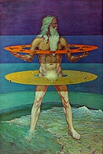
Some say in the Quabbalah, the upper Holy Triad of Kether, Binah and Hochmah are the head and shoulders of Adam Kadmon. The lower seven points represent the seven lower sephiroth of the manifest world, the creative Elohim of Genesis.
The medieval Jewish Qabbalah took the expression "in the image of God" and projected a vision of Adam Kadmon/Qodmon, the primordial Adam, as one of the configurations by which the emanation of divine potencies that constituted the simultaneous self-revelation of God and his creation could be imagined. [From the Encyclopedia of Religion]
The Gnostic Anthrôpos, or Adamas, a cosmogonic element, a pure mind conceived hypostatically as emanating from God and not yet darkened by contact with matter was considered as personified idea, the Beginning, the Name of God, the Logos, immortal, incorruptible, the human reason conceived as the World-Soul. The cosmogonic Anthrôpos was mixed up with the first man, Adam. The Catholic Encyclopedia claims these ideas, also found in Talmudism, Philonism, Gnosticism, and Trismegistic literature, all come from the late Mazdean development of the Gayomarthians or worshippers of the Super-Man.
Eliphas Levi thus describes the Great Prototypal Man:
"That synthesis of the word, formulated by the human figure, ascended
slowly and emerged from the water, like the sun in its rising. When the
eyes appeared, light was made; when the mouth was manifested, there was
the creation of spirits and the word passed into expression. The entire
head was revealed, and this completed the first day of creation. The
shoulders, the arms, the breast arose, and thereupon work began. With one
hand the Divine Image put back the sea, while with the other it raised up
continents and mountains. The Image grew and grew; the generative organs
appeared, and all beings began to increase and multiply. The form stood at
length erect, having one foot upon the earth and one upon the waters.
Beholding itself at full length in the ocean of creation, it breathed on
its own reflection and called its likeness into life. It said: Let us make
man — and thus man was made. Hereby is man but the shadow of a shadow, and
yet he is the image of divine power. He also can stretch forth his hands
from East to West; to him is the earth given as a dominion. Such is Adam
Kadmon, the Primordial Adam of the Kabalists. Such is the sense in which
he is depicted as a giant; and this is why Swedenborg, haunted in his
dreams by reminiscences of the Kabalah, says that entire creation is only
a titanic man and that we are made in the image of the universe."
(From The History of Magic.)
The Rev. Abba Nazariah, D.D., founder of the Modern Essene Church of
Christ somehow ascribes Kabbalah to Essenes:
"According to Essene Kabbalah mysticism God creates the universe in a
series of four emanations which become realms:
The first emanation creates 'Atsiluth', the realm of the Divine
Archetypes. These archetypal representations are the perfect ideals or
models for all things created in the physical world. The Divine Archetypes
for humankind are the masculine Adam Kadmon with his feminine counterpart
Shekhinah. (He considers Jesus to be a messianic incarnation of Adam
Kadmon, thus called 'the first child of God'.)
And since only the realm of Divine Archetypes was created directly by God
— all further steps of creation being accomplished by Adam Kadmon and
Shekinah united as 'The Word' — Jesus, as Adam Kadmon, is also called 'the
Only Begotten son of God'. Jesus himself stressed that we are all children
of God, but only Adam Kadmon and Shekhinah — by virtue of being Divine
Archetypes — were directly Begotten by God.)
In the religious writings of Kabbalah, Adam Kadmon is a phrase meaning "Primal Man". The oldest rabbinical source for the term "Adam ha-Kadmoni" is Num. R. x., where Adam is styled, not as usually "Ha-Rishon" (the first), but "Ha-Kadmoni" (the original). It is said that Adam Kadmon had rays of light projecting from his eyes. In Lurianic Kabbalah, Adam Kadmon acquired an exalted status equivalent to Purusha, denoting the Manifest Absolute itself, the primeval Soul that contained all human souls. Adam Kadmon is comparable to the Anthropos of Gnosticism and Manichaeism. There is also a similar concept in Alevi and Sufic philosophy called Insan-i Kamil, the Perfect or Complete Man. Philosophical views concerning the Primal Man are a compound of mythology, Greek philosophy, and rabbinical theology. Around the late first century BC, Arius Didymus wrote in Concerning the Opinions of Plato: "Besides all individual men there is a certain conception of man... uncreated and imperishable. And in the same way as many impressions are made of one seal, and many images of one man, so from each single idea of the objects of sense a multitude of individual natures are formed, from the idea of man all men, and in like manner in the case of all other things in nature. Also the idea is an eternal essence, cause, and principle, making each thing to be of a character such as its own."
In Philo
The first to use the expression "original man" was Philo, in whose view
the heavenly man, "as being born in the image of God, has no participation
in any corruptible or earthlike essence; whereas the earthly man is made
of loose material, called a lump of clay." The heavenly man, as the
perfect image of the Logos, is neither man nor woman, but an incorporeal
intelligence, purely an idea; while the earthly man, who was created by
God later, is perceptible to the senses and partakes of earthly qualities.
From the Biblical account of Adam, who was formed in the image of God, and
the first man, whose body God formed from the earth (Genesis 2:7), Philo
combines the Platonic doctrine of ideas; taking the primordial Adam as the
idea, and the created man of flesh and blood as the "image." That Philo's
philosophic views are grounded on the Midrash, and not vice versa, is
evident from his seemingly senseless statement that the "heavenly man"
(who is merely an idea) is "neither man nor woman." This doctrine,
however, becomes quite intelligible in view of the following ancient
Midrash.
In Midrash
The remarkable contradiction between the two above-quoted passages of
Genesis could not escape the attention of the Pharisees, to whom the Bible
was a subject of close study. In explaining the various views concerning
Eve's creation, they taught that Adam was created as a man-woman
(androgynous), explaining "male and female" (Genesis 1:27) and that the
separation of the sexes arose from the subsequent operation upon Adam's
body, as related in the Scripture. This explains Philo's statement that
the original man was neither man nor woman. This doctrine concerning the
Logos, as also that of man made "in the likeness," though tinged with true
Philonic colouring, is also based on the theology of the Pharisees. For in
an old Midrash it is remarked: 'Thou hast formed me behind and before'
(Psalms 139:5) is to be explained 'before the first and after the last day
of Creation.' For it is said, 'And the spirit of God moved upon the face
of the waters,' meaning the spirit of the Messiah, of whom it is said
(Isaiah 11:2), 'And the spirit of the Lord shall rest upon him.' This
contains the kernel of Philo's philosophical doctrine of the creation of
the original man. He calls him the idea of the earthly Adam, while with
the rabbis the spirit of Adam not only existed before the creation of the
earthly Adam, but was pre-existent to the whole of creation. From the
pre-existing Adam, or Messiah, to the Logos is merely a step.
In the Talmud
Before discussing the subject of Adam Kadmon in the Kabbalah, there is a
fundamental theosophical statement by Akiba in the Talmud relative to this
topic. He says, in Abot, iii. 14, "How favored is man, seeing that he was
created in the image!" That "in the image" does not mean "in the image of
God" needs no proof; for in no language can "image" be substituted for
"image of God." There is, moreover, another difficulty in this passage:
the verse quoted is not that of Genesis 1:27, wherein the creation of man
in the image of God is primarily stated. Genesis 9:6 treats only
secondarily of man's creation. The selection of a secondary quotation in
support is not a little surprising to those familiar with the usual
rabbinical mode of quotation. In point of fact Akiba does not speak only
of the image according to which man was created, but also of the likeness.
Akiba, who steadfastly denies any resemblance between God and other beings
— even the highest type of angels — teaches that man was created after an
image, that is, an archetype, or, in philosophical phrase, after an ideal,
and thus interprets Genesis 9:6, "after an image God created man," an
interpretation quite impossible in Genesis 1:27. Compare the benediction
in Ket. 8a, wherein God is blessed because "He made man in His image, in
the image of a form created by Him." The concluding explanatory words of
this benediction intimate, in Akiba's style, that Adam was created after
the image of a God-created type.
In Kabbalah — Zohar
Closely related to the Philonic doctrine of the heavenly Adam is the Adam
Kadmon (called also Adam 'Ilaya, the "High Man," the "Heavenly Man") of
the Zohar, whose conception of the original man can be deduced from the
following passages: "The form of man is the image of everything that is
above [in heaven] and below [upon earth]; therefore did the Holy Ancient
[God] select it for His own form." As with Philo the Logos is the original
image of man, or the original man, so in the Zohar the heavenly man is the
embodiment of all divine manifestations: the Ten Sefirot, the original
image of man. The heavenly Adam, stepping forth out of the highest
original darkness, created the earthly Adam. In other words, the activity
of the Original Essence manifested itself in the creation of man, who at
the same time is the image of the Heavenly Man and of the universe, just
as with Plato and Philo the idea of man, as microcosm, embraces the idea
of the universe or macrocosm.
Luria
The conception of Adam Kadmon becomes an important factor in the later
Kabbalah of Luria. Adam Kadmon is with him no longer the concentrated
manifestation of the Sefirot, but a mediator between the En-Sof
("Infinite") and the Sefirot. The En-Sof, according to Luria, is so
utterly incomprehensible that the older Kabbalistic doctrine of the
manifestation of the En-Sof in the Sefirot must be abandoned. Hence he
teaches that only the Adam Kadmon, who arose in the way of self-limitation
by the En-Sof, can be said to manifest himself in the Sefirot. This theory
of Luria's leads, if consistently carried out, to the Philonic Logos.
In Christianity — Pauline Christianity
The above-quoted Midrash is even of greater importance for the
understanding of Pauline Christology, as affording the key to Paul's
doctrine of the first and second Adam. The main passage in Pauline
Christology is 1 Corinthians 15:45-50. According to this there is a double
form of man's existence; for God created a heavenly Adam in the spiritual
world and an earthly one of clay for the material world. The earthly Adam
came first into view, although created last. The first Adam was of flesh
and blood and therefore subject to death — merely "a living soul"; the
second Adam was "a life-giving spirit" — a spirit whose body, like the
heavenly beings in general, was only of a spiritual nature. As a pupil of
Gamaliel, Paul simply operates with conceptions familiar to the
Palestinian theologians. Messiah, as the Midrash remarks, is, on the one
hand, the first Adam, the original man who existed before Creation, his
spirit being already present. On the other hand, he is also the second
Adam in so far as his bodily appearance followed the Creation, and
inasmuch as, according to the flesh, he is of the posterity of Adam. With
Philo the original man is an idea; with Paul He is the pre-existent Logos,
incarnate as the man Jesus Christ. With Philo the first man is the
original man; Paul identifies the original man with the second Adam. The
Christian Apostle evidently drew upon the Palestinian theology of his day.
The Midrash thus considered affords a suitable transition to the Gnostic
theories of the original man.
Clementine literature
It has been said that the Midrash already speaks of the spirit of the
first Adam or of the Messiah without, however, absolutely identifying Adam
and Messiah. This identification could only be made by persons who
regarded only the spirit of the Scripture and not the letter as binding.
In such circles originated the Clementine Homilies and Recognitions, in
which the doctrine of the original man (called also in the Clementine
writings "the true prophet") is of prime importance. It is quite certain
that this doctrine is of Judaeo-Christian origin. The identity of Adam and
Jesus seems to have been taught in the original form of the Clementine
writings. The Homilies distinctly assert: "If any one do not allow the man
fashioned by the hands of God to have the holy spirit of Christ, is he not
guilty of the greatest impiety in allowing another, born of an impure
stock, to have it? But he would act most piously if he should say that He
alone has it who has changed His form and His name from the beginning of
the world, and so appeared again and again in the world until, coming to
his own times, He shall enjoy rest forever." The Recognitions also lay
stress upon the identity of Adam and Jesus; for in the passage wherein it
is mysteriously hinted that Adam was anointed with the eternal oil, the
meaning can only be that Adam is the anointed. This conception is
expressed in true Philonic and Platonic fashion in i. 18, where it is
declared that the "interna species" (idea) of man had its existence
earlier. The original man of the Clementines is, therefore, simply a
product of three elements, namely, Jewish theology, Platonic-Philonic
philosophy, and Oriental theosophy.
Other Christian sects
In close relationship to the Clementine writings stand the Bible
translator Symmachus and the Jewish-Christian sect to which he belonged.
Victorinus Rhetor states that "The Symmachiani teach that Christ is Adam
and the universal soul." The Jewish-Christian sect of the Elcesaites also
taught (about the year 100) that Jesus appeared on earth in changing human
forms, and that He will reappear. That by these "changing human forms" are
to be understood the appearances of Adam and the patriarchs is pointed out
by Epiphanius, according to whom the Jewish-Christian sects of Sampsaeans,
Ossenes, Nazarene, and Ebionites adopted the doctrine of the Elcesaites
that Jesus and Adam are identical. The "Primal Man" of the Elcesaites was
also, according to the conception of these Jewish Gnostics, of huge
dimensions — originally androgynous, and then cleft in two, the masculine
part becoming the Messiah, and the feminine part the Holy Ghost.
Gnosticism
The Primeval Man (Protanthropos, Adam) occupies a prominent place in
several Gnostic systems. According to Irenaeus the Aeon Autogenes emits
the true and perfect Anthrôpos, also called Adamas; he has a helpmate,
"Perfect Knowledge", and receives an irresistible force, so that all
things rest in him. Others say there is a blessed and incorruptible and
endless light in the power of Bythos; this is the Father of all things who
is invoked as the First Man, who, with his Ennoia, emits "the Son of Man",
or Euteranthrôpos. According to Valentinus, Adam was created in the name
of Anthrôpos and overawes the demons by the fear of the pre-existent man.
In the Valentinian syzygies and in the Marcosian system we meet Anthrôpos
and Ecclesia. In the Pistis Sophia the Aeon Jeu is called the First Man,
he is the overseer of the Light, messenger of the First Precept, and
constitutes the forces of the Heimarmene. In the Books of Jeu this "great
Man" is the King of the Light-treasure, he is enthroned above all things
and is the goal of all souls. According to the Naassenes, the
Protanthropos is the first element; the fundamental being before its
differentiation into individuals. "The Son of Man" is the same being after
it has been individualized into existing things and thus sunk into matter.
The Gnostic Anthrôpos, therefore, or Adamas, is a cosmogonic element, pure
mind as distinct from matter, mind conceived hypostatically as emanating
from God and not yet darkened by contact with matter. This mind is
considered as the reason of humanity, or humanity itself, as a personified
idea, a category without corporeality, the human reason conceived as the
World-Soul. The same idea, somewhat modified, occurs in Hermetic
literature, especially the Poimandres.
In Manichaeism
A portion of these Gnostic teachings, when combined with Persian and old
Babylonian mythology, furnished Mani with his particular doctrine of the
original man. He even retains the Jewish designations "Insan Kadim" and
"Iblis Kadim". But, according to Mani, the original man is fundamentally
distinct from the first father of the human race. He is a creation of the
King of Light, and is therefore endowed with five elements of the kingdom
of light; whereas Adam really owes his existence to the kingdom of
darkness, and only escapes belonging altogether to the number of demons
through the fact that he bears the likeness of the original man in the
elements of light concentrated in him. The Gnostic doctrine of the
identity of Adam, as the original man, with the Messiah appears in Mani in
his teaching of the "Redeeming Christ," who has His abode in the sun and
moon, but is identical with the original man. It also appears in this
theory that Adam was the first of the sevenfold series of true prophets,
comprising Adam, Seth, Noah, Abraham, Zoroaster, Buddha, and Jesus. The
stepping-stone from the Gnostic original man to Manichaeism was probably
the older Mandaean conception, which may have exercised great influence.
In Islam — Ismailism
The relation of the Islamic sects to Jewish Gnosticism in their teachings
concerning the incarnation of the Divine Being is very uncertain. It is
only known that their theories contain more Gnostic than Buddhist
elements. Their Gnostic character plainly appeared a century later (765),
when Abdallah's views were systematized by the Ismailians. Their doctrine
was then stated as follows: "God has effected seven successive
incarnations of His being, in the shape of prophets whom He sent into the
world; and these were Adam, Noah, Abraham, Moses, Jesus, Mohammed, and the
Mahdi." It is not difficult to discern herein the Clementine theory of the
sevenfold prophetic chain beginning with Adam and ending with the Messiah
(Mahdi).
Druze
A further development of the Islamic doctrine is that of ad-Darazi, whose
adherents, under the name of Druze, form at the present day an independent
community, religiously as well as politically. Ad-Darazi in 1017 publicly
preached in the mosques that Adam's soul had passed into Ali, his
son-in-law, and from him to the Fatimides. It is interesting to note that
the identification, partial or complete, of Adam (the original man) with
the Saviour of man is universal, however varying the conception of the
Messiah-Mahdi may be.
In Mormonism
The Adam-God theory was taught by Brigham Young and other early leaders of
the Church of Jesus Christ of Latter-day Saints. According to Young, it
was first taught orally by Joseph Smith, Jr. before his death in 1844.
Whether or not Smith actually held the doctrine, the first recorded
explanation was by Young in 1852: "When our father Adam came into the
garden of Eden, he came into it with a celestial body, and brought Eve,
one of his wives, with him. He helped to make and organize this world. He
is MICHAEL, the Archangel, the ANCIENT OF DAYS! about whom holy men have
written and spoken — He is our FATHER and our GOD, and the only God with
whom WE have to do." Today, this doctrine is generally accepted within
Mormon fundamentalism. The LDS Church, however, has repudiated the
doctrine.
In mythology — the Cosmic Man
Outside of an Abrahamic context, the Cosmic Man is also an archetypical
figure that appears in creation myths of a wide variety of cultures.
Generally he is described as bestowing life upon all things, and is also
frequently the physical basis of the world, such that after death parts of
his body became physical parts of the universe. He also represents the
oneness of human existence, or the universe. For instance, in the Purusha
sukta of the Rigveda, Purusha (Sanskrit, "man," or "Cosmic Man") is
sacrificed by the devas from the foundation of the world — his mind is the
Moon, his eyes are the Sun, and his breath is the wind. He is described as
having a thousand heads and a thousand feet, and is said to pervade the
entire universe while transcending it by ten fingers' breadth. This myth
of the primordial Cosmic Man, dismembered to form the world, appears in
many traditions including the Norse Ymir, the Iranian Gayomart, the
Chinese Pangu, and the Vedic Purusha — all reflecting the ancient and
widespread intuition that the universe itself is a vast, living, conscious
being of which humanity is both an image and a part.
Whereas Atsiluth is a direct emanation from En Soph (the unmanifest God), the second realm, Beri'ah, is an emanation from Atsiluth. Beri'ah is the realm of the highest ranking angels of the universe, the Highest Heavens. This realm contains only pure spiritual energy.
The third realm, Yetsirah, is an angelic realm, but not as high as Beri'ah. The angelic beings of light in this realm are higher in spiritual development than human beings, but lower than those of the Beri'ah Higher Heavens. Within the realm of Yetsirah are seven sub-realms called "The Seven Heavens". Only when a being has progressed through these seven heavens of Yetsirah — via spiritual evolution over long duration — is that being able to ascend to the arch-angelic realm of the Beri'ah Higher Heavens. Yetsirah is not as physical as our realm, nor as subtle as Beri'ah. The lower regions of Yetsirah are more physical than the higher regions of that realm.
The fourth realm, Asiyah, is the physical universe. Within Asiyah are countless sub-realms, some extremely dark and dense, some relatively light and subtle. Through our thoughts, words and deeds, we rise to the higher regions of Asiyah, or fall to the hell-pits of Asiyah.
From Ancient Essenes And the Modern Church by Brother Nazariah.
We could speculate that Atsiluth (Divinity), being a direct emanation
from En Soph, is the All Highest, all-encompassing, incomprehensible abode
of Jehovih (if Jehovih can be separated into a small corner). Briah
(Archangelic) may correspond to the Etherean heavens (Nirvana), and
Yetzirah (Angelic) may correspond to the Atmospherean higher and lower
heavens.
The seven sub-realms in Yetzirah can be the Seven
Heavenly Mountains known as Aoasu (signifying land and sky world) in
Oahspe plate 10 and mentioned in the Vedas. Aoasu had its foundation on
the earth (being 20-100 miles above the earth's surface), and it undulated
with mountains and valleys.
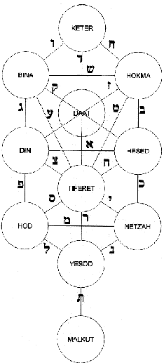
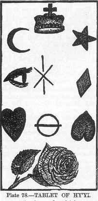
"Invoke me on the Tablet of the sun, and the world, and the crown, high raised."
The tablet is laid out like the Ten Sephiroth of the Kabbalah, shown on the right.
The spheres of
Keter (Crown, Infinite Light & Wisdom),
Chokmah (Pure Energy, Spiritual Force, Father)
Binah (Pure Love & Understanding, Mother)
could be seen as comprising the triangle,
and the remaining seven —
Chesed (Majesty, Power & Authority)
Geburah (Strength, Justice)
Tiphereth (Harmony, Beauty, Perfection, Unity)
0Netzach (Love, Creativity, Inspiration)
Hod (Intellect, Communication)
Yesod (Vision, Memory, Cycles, Illusion)
Malkuth (Physical Reality)
being the seven mystical Governors of Hermes.
"Man as well as nature is called saptaparna (seven-leaved plant),
symbolized by the triangle above the square."
One is a circle. Two is a cross. Three is a triangle. Four is a square.
Together they make ten.
The Kabalah has a parallel with the Chaldæan Oracles and Egyptian Theology.
Chaldæan Theology contemplated four divisions of
things:
1) First Mind, intelligible World of
Supramundane Light, Eternal, 1st Triad (Pater, Potentia/Mater, Mens)
"Paternal Depth"
2) Second Mind, Empyræeum World, Intelligible & Intellectual Triad
having beginning but no end; Creative World, 2nd Triad
3) The Aethereal World, Intellectual Triad having a beginning and end,
transitory, dual 3rd Triad.
4) The fourth or Elementary World, is governed by Hypezokos, or Flower of
Fire, the builder of the world.
Seven spheres extended through the last three Worlds, viz., one in the Empyraeum or verging from it, three in the Ethereal and three in the Elementary Worlds. These are not the Planets but are representative of them.
The Kabalah has ten powers successively emanated by the Illimitable
Light. These form three Triads of Powers, synthesized in a tenth,
extending through four worlds:
1) Atziluth
2) Briah
3) Yetzirah
4) Assiah
Now these observations apply also to the Chaldæan system.
| Kabalistic Scheme | Chaldæan Scheme | |||
| World of | Boundless | Ain Suph | The Intelligibles | Paternal Depth |
| Atziluth | Illimitable Light | Ain Suph Aur | First Mind | |
| or of God | ----- | |||
| A radiant triangle | World of | The Intelligible Triad | ||
| Supra-mundane Light | Pater, Mater or Potentia: Mens | |||
| Kether (crown) | ||||
| World of | Binah | Chokmah | Second Mind | |
| Briah | ----- | |||
| Divine Forces | (Intelligence) | (Wisdom) | Intelligibles and Intellectuals | Iynges |
| in the Empyræan World | Synoches, Teletarchæ | |||
| World of | Geburah | Chesed | Intellectuals in the | Third Mind |
| Yetzirah | Tiphereth | Ethereal World | Three Cosmagogi | |
| or of Formation | Hod | Netzach | (Intellectual guides inflexible) | |
| Yesod | Three Amilicti (Implacable thunders) | |||
| World of | Malkuth | Elementary World | Hypezokos (Flower of Fire) | |
| Assiah | Ruled by Adonai Melekh | The Demiurgos | Effable, Essential and Elemental orders | |
| Material Form | The Earth-Matter | of the Material Universe | ----- | |
| The Earth-Matter | ||||
| Hyperarchii (Archangels) | Azonoei (Unzoned gods) | Zonoei (Planetary Deities) |
| Higher demons (Angels) | ||
| Human Souls | ||
| Lower demons, elementals | Fiery, Airy | Earthy, Watery |
| Evil demons | Lucifugous | the kliphoth |
http://www.esotericarchives.com/oracle/oraclez.htm
Do you think "Adam of Light" or the Zohar "Grand Man" could be compared
to the following passage in Oahspe?
A small minority of Hebrews still worshipped Jehovih, having colleges
of prophecy and places of learning. But the great majority of them were
worshippers of the Lord and God, believing the Great Spirit was only a
large man in heaven, after the manner of Baal, or Dagon, or Ashtaroth,
or any other God. God said of them: Though they pretend to be of many
kinds, I see but two: Those who worship the Ever Present, Jehovih; and
those who are drifting into heathenism.
Occultists, Swedenborg and Correspondences
Emanuel Swedenborg was heavily influenced by the theology of Michael
Servetus. Nontrinitarians were executed (such as Servetus), or forced to
keep their beliefs secret (such as Isaac Newton). Servetus was burned at
the stake in 1553 under John Calvin.
The Encyclopedia of Religion says occultism refers to practices based on
the doctrine of correspondences relating a living, dynamic reality, a web
of cosmic and divine analogies and homologies that become manifest through
imagination. Humans use language for creating a psychological model of the
"real" world in our heads. We represent the world outside within
ourselves, and in so doing create a map of reality which only approximates
reality itself. Mythologists, Structuralists and Semanticists speak of
transposing the Kantian principle (that at the instant of its reception,
all knowledge involves a synthesising activity of the mind) into the key
of myth. Myth becomes a synonym of the mythopoeic mode of consciousness.
The Hermetic Tradition linked spiritual ideas from the time of Thoth,
Pythagoras, Greek and Roman philosophers, the mystical Grail legends with
their eastern and Celtic roots (12th cent.), the pre-Renaissance world of
Paracelsus and Aquinas, and contributed to Giordano Bruno during the
revival of Neoplatonism in the Age of Enlightenment when Newton, Kepler,
astrologers, astronomers and Swedenborg became absorbed in these ancient
"sciences". The Romantic and Transcendental philosophers and
Pre-Raphaelite artists perpetuated the idea of the upper or inner level of
reality through the 19th century. The Jungian Psychologists, Symbolists,
Mythologists, and Linguistic Structuralists serve that end today, keeping
alive the rational idea of the reality of the
spirit.
René Guénon believed acceptance of a symbolic meaning doesn't negate the
literal or historical meaning. He said the law of correspondences is the
foundation of all symbolism and by virtue of it everything translates and
expresses this principle in its own way and according to its own level of
existence, so that all things are related and joined together in total,
universal harmony which is, in its many guises, a reflection of its own
fundamental unity. Any one thing may be regarded as an illustration or
symbol of metaphysical principles and higher levels of reality.
The archetype, first coined by ancient philosophers, is a hypothetical and
irrepresentable psychoid factor in "the Collective Unconscious" (which
Jung equates with Swedenborg's "Spiritual World" and Agrippa's "World
Soul"). It is unknowable, "numinous," like an affection, and can only be
sensed by its effects. It is not a "thing," but rather a moving spiritual
force which may ultimately manifest in many ideas and forms. It does not
refer to anything that is or has been conscious, but is an unconscious
core of meaning. Jung says an archetypal content expresses itself in
metaphors.
In discussing his theory of synchronicity, Jung dismisses what he refers
to as the old theory of correspondences. "No reciprocal causal connection
can be shown to obtain between parallel events, which is just what gives
them their chance character. The only recognizable and demonstrable link
between them is a common meaning or equivalence. The old theory of
correspondences was based on the experience of such connections — a theory
that reached its culminating point and also its provisional end in
Leibniz's idea of pre-established harmony, and was then replaced by
causality. Synchronicity is a modern differentiation of the obsolete
concept of correspondence, sympathy, and harmony. It is based not on
philosophical assumptions but on empirical experience and
experimentation." [Jung's Synchronicity]
Spiritualism, the system of doctrines or practices founded on the belief
that the spirits of the dead can hold communication with the living,
especially through a "medium", was unknown in Swedenborg's day. Swedenborg
was a visionary whose references to the spiritual and celestial worlds,
and to the spirits and angels who inhabited them, are direct, explicit and
relate to his personal experiences and can be compared with Dr. John Dee
some two hundred years earlier.
His doctrine of correspondences
is in the tradition of Paracelsus (1493-1541), the sixteenth-century
physician and alchemist who overturned orthodoxy and outraged his
contemporaries. Paracelsus preserved the Neoplatonist
intermediaries between man and heaven and distinguished an
ontological pre-eminence, but he mainly researched the domain of nature,
correspondences among metals, planets, organs of the body, etc. Man was a
microcosm containing within all the elements of the macrocosm [the sophist
Protagoras (485 BC) thought "Man is the measure of all things"].
Swedenborg's revelations of the second coming were in the Millenarian
tradition which had its own upsurge in the 1780s around such odd
characters as Richard Brothers, who had taken up Swedenborgian doctrines
at Avignon with the Abbé Pernety, and Count Grabianka (a confirmed
Swedenborgian).
During the last decades of Swedenborg's life there was a huge
proliferation in mainland Europe of what are known as the Hauts Grades:
varieties of Masonic and quasi-masonic orders that reflected, not the
basic ethos of Freemasonry, but the presumed qualities of medieval
chivalry, the psycho-spiritual quests of the ancient Mystery schools, and
the Rosicrucian myth of Christian Rosencreutz. Swedenborg was not a
Freemason and had no involvement with Masonic Rites, Degrees or Orders of
any kind.
The Abbé Pernety established his Hermetic Rite of Freemasonry at Avignon
in 1766, but it did not contain Swedenborgian elements until Pernety
returned from Berlin in 1785 and transformed his Rite into the Illuminés
d'Avignon. They were joined by Count Grabianka, who attempted to bring
Pernety's Rite to London.
Both Brothers and Grabianka attended meetings in London at the home of the
Rev. Jacob Duché who, while studiously avoiding a commitment to the New
Church, encouraged the study of both Swedenborg and Jacob Boehme, the
German mystic of the early seventeenth century who was the first expositor
of Theosophy.
Swedenborg says in 'Heaven and Hell':
"Unless the Divine Human flowed into all things of heaven, and,
according to correspondences, into all things of the world, no angel or
man would exist."
Jehovih is the Perfect All Knowledge and All Person who, as a unity, all
mirror and look to for their self-existence, identity and reality. Man,
being in His Image through his soul and mind, and with everything in
nature being symbolic of, and in relation to Him, one could think that
Jehovih is the Only Man, and those only are men who receive His Person (as
Swedenborg thought).
Swedenborg teaches there is a correspondence between things of the
spiritual world and those in the natural. It is an organic, living
relationship, in which the spiritual flows into the natural and forms it
to serve a use. This seems to be the same as the Hermetic maxim "As
above, so below" and the Bible in Jacob's Ladder
and Psalms:
"The heavens declare the glory of God, and the firmament shows His handiwork. Day unto day utters speech, and night unto night reveals knowledge" (Psalm 19:1, 2).
"Every human being has been so created that Jehovih's Presence may come
down through him even to the lowest things of natural order, and from the
lowest things of natural order may return to Him."
All that proceeds from Jehovih is order,
and that order proceeds as an influx.
The influx forms discrete degrees of
existence with each degree containing forms of
use. These forms relate to each other according to correspondence
in which the things of a higher degree flow into things of a lower degree
giving them life, while the things of the lower degree act as a necessary
foundation allowing the things of the higher degree to live. For example,
the spirit flows into the body, giving it life, while the body acts as a
foundation for the spirit allowing it to live. They both live because of
each other.
Influx is effected by correspondences (or agreement, as where it is said
that man's external mind must be reduced to correspondence with the
internal mind). Whenever discrete degrees are in correspondence, there is
at once influx. Correspondences are dynamic, not static. This keeps the
natural world alive from the spiritual.
Thought and speech correspond (if the person is sincere); thought and
speech are on discrete levels; and thought flows into speech, not speech
into thought.
When the external mind (which speaks and acts) is brought into order by
repentance and self-compulsion, then it comes into a state of
correspondence with the internal mind (where conscience is); therefore
conscience flows into the external mind and fills it with its essence, so
that the external as to quality is like the internal. "Blessed is the man
whose external man corresponds to his internal man."
http://highermeaning.org/Authors/GSC/Anthology.shtml
Swedenborg's Interdependent Levels
In esoteric
cosmology, a plane, other than the physical plane, is conceived as a
subtle state of consciousness that transcends the known physical universe.
Religious and esoteric teachings propound the idea of a whole series of
subtle planes or worlds or dimensions which, from a centre, interpenetrate
themselves and the earth, and all the structures of the universe. This
interpenetration of planes culminates in the universe itself as a
physical, structured, dynamic and evolutive expression emanated through a
series of steadily denser stages, becoming progressively more material and
embodied. The emanation is conceived to have originated at the dawn of the
universe's manifestation, in The Supreme Being Who sent out — from the
unmanifested Absolute beyond comprehension — the dynamic force of creative
energy, as sound-vibration ("the Word"), into the abyss of space. This
dynamic force is being sent forth, through the ages, framing all things
that constitute and inhabit the universe.
The concept of planes of existence might be seen as deriving from shamanic
and traditional mythological ideas of a vertical
world-axis. For example a cosmic mountain, tree, or pole
(such as Yggdrasil or Mount Meru) — or a philosophical conception of a
Great Chain of Being, arranged metaphorically from God down to inanimate
matter.
The original source of the word "plane" is the late Neoplatonist Proclus,
who refers to to platos, "breadth".
Swedenborg implies vertical levels and horizontal continuous planes
(heights and breadths).
There are three heavens quite distinct from each other — an inmost or
third heaven, an intermediate or second, and an outmost or first. They
follow each other and are — just like the top of a person, called his
head, his middle or body, and his extremities or feet. The Divine that
comes forth and down from the Lord is similar in design, so heaven has
three parts.
The more inward reaches of a person, too, the regions of his inner and
outer mind, are arranged in a similar design. He has an inmost, an
intermediate, and an extremity, because when he was created the whole
Divine design was transcribed into him. Indeed he was fashioned as a
Divine design in a form, and was therefore fashioned as a heaven in its
smallest image.
As a result, the individual is in touch with the heavens as far as his
more inward reaches are concerned. After death he arrives among angels
of the inmost or intermediate or outmost heaven, depending on his own
acceptance of what is Divinely good and true during his life on earth.
The Divine which flows in from the Lord and is accepted in the third or
inmost heaven is called celestial, so the angels there are called
celestial angels. The Divine which flows in and is accepted in the
second or intermediate heaven is called spiritual, so the angels there
are called spiritual angels.
But the Divine which flows in is accepted in the outmost or first heaven
is called natural. However, since the "naturalness" of that heaven —
unlike the "naturalness" of the world — contains something spiritual and
celestial, the heaven is called "celestial-natural" and
"spiritual-natural," and so are its angels.
All perfection increases as one moves inward and decreases as one moves
outward. For more inward things are nearer the Divine and are
intrinsically more pure. Angelic perfection lies in intelligence,
wisdom, love — in everything good and every resultant happiness. It does
not lie in happiness alone, for happiness without the rest is
superficial, not inward. Since for angels of the inmost heaven the more
inward elements are opened on the third level, their perfection vastly
exceeds the perfection of angels in the intermediate heaven. The
perfection of angels of the intermediate heaven exceeds the perfection
of angels in the outmost heaven to a similar degree. This
distinctiveness means that an angel of one heaven cannot have access to
angels of another heaven. That is, no one from a lower heaven can
ascend, and no one from a higher heaven can descend. Anyone who ascends
from a lower heaven is gripped by a tension to the point of pain. He
cannot see people there, much less talk with them. And anyone who
descends from a higher heaven loses his wisdom, stammers, and falls prey
to despair. But when the Lord raises people from a lower heaven to a
higher one to see the glory there, they are prepared first, and they are
attended by mediating angels who serve as agents of communication.
Even though the heavens are so different that the angels of one cannot
share fellowship with angels of another, still the Lord joins all the
heavens together by means of a direct and an indirect flow. The direct
inflow is from Himself into all the heavens, and the indirect is from
one heaven into another. In this way, He makes the three heavens one, so
bound together from the first to the outmost that nothing
unconnected exists. Anything that is not tied in with the
first by something in between does not endure, but disintegrates and
becomes nothing.
No one can grasp how the heavens are divided, or even what the inner and
outer person are, if he does not know the arrangement of the Divine
design in levels. Inner and outer things are arranged as distinct, not
as continuous.
Levels are continuous and non-continuous. With continuous levels, it is
like the lessening of light from blazing to dark, or the lessening of
sight from things in the light to things in the shade, or like levels of
air purity from bottom to top. These levels are assigned spatial
units. Levels which are not continuous, but are distinct, are rather as
"leading" and "following," like cause and effect or like producer and
product. These levels are in every single thing in the whole world,
levels of production and composition with one thing obviously resulting
from another, a third from that, and so on and on.
The person who does not get a good grasp of these levels has no way of
knowing the distinctions between the heavens, between man's inner and
outer powers, between the spiritual world and the natural world, or
between man's spirit and his body. As a result, he cannot understand the
nature or the source of correspondences
and representations or the nature of inflow.
Every angel and person has something inmost and highest, where the
Lord's Divine flows in first or most directly. It is by this "inmost or
highest" that man is man and is differentiated from animals, since they
do not possess it. This is why man, unlike animals, can as to his more
inward reaches or what belongs to his inner and outer mind, be raised by
the Lord toward Himself. Man can believe in Him, be moved by love for
Him, and so can see Him. As a result also, man can accept intelligence
and wisdom and can talk from rational processes. This is also the source
of man's living to eternity. What the Lord arranges and takes care of at
his centre is above any angel's thought and wisdom.
Swedenborg's (speculative) Doctrine of the Limbus
The term means a border, fringe or edge, and refers here to the border
substance of the natural world where nature touches the spiritual world,
or where the body is immediately responsive to the influx of the spirit.
It attempts to explain why memory and thus man's spirit can be preserved
from dissolution when the body dies.
There exists within man's body an inmost substance, an eminent fluid next
to the soul, which is the soul's agent in the body. It is so subtle and
perfect that it cannot be affected by the destructive forces of disease or
death. The limbus of the eternal spirit conveys the soul in its embodiment
in nature. It is the purest substance, derived from the highest or
universal aura of nature and organised by man's mind into a correspondent
form. The limbus gives fixation to the corporeal memory of man, which
marks the lowest or sensual degree of his mental life.
At death the vital substances (limbus as well the spirit) of man cannot
remain in corporeal things and are gathered together in a moment even if
parts of the body were scattered over a thousand miles. For the limbus
still lives, as the body was living, from the soul. Yet the limbus is a
natural substance, and thus has no spiritual attributes, no mental powers.
It is not the mind nor the soul. Its only attributes are those of nature,
thus of motion; even though these motions, or potentialities to motion,
are like the magnetic stresses on a recording tape. Its form could be
described more as an invisible wave interference pattern (rather than
movements), perpetually reintegrating without losing their characteristic
uniqueness, or as a DNA-like code, which is itself not a body, but its
key. The limbus is not the mind or soul. Man rises into the spirit world,
not in a limbus, but in a spiritual body, which has been formed during
earth-life "by the truths and goods which flow in from Jehovih."
Man is first born a human in the world primarily that his spirit may
procure this unto itself and fashion it as a permanent containant for his
mind or spirit through which he is limited, but can subsist in eternity.
An inmost soul is appropriated to Man at his birth in the natural world.
This is also the beginning of his mind, consciousness and formation of
memory. The body is only a covering of the soul, composed of such things
as are of the natural world, but the soul is from the spiritual world.
The soul forms itself into three discrete degrees, which are called the
celestial, the spiritual and the spiritual-natural. They are meant to be
opened successively. The two higher degrees of the mind, the celestial and
spiritual, are beyond man's consciousness while on earth, even though they
can be opened to receive influx from Jehovih. They derive their form
solely from the substances of the spiritual world.
The lowest, the spiritual-natural, operates in the organs of the physical
brain and body, and there prepares for itself the natural mind (that
degree of the mind that man consciously uses the world for sensation,
memory, imagination and reason, and that forms attitudes towards good and
evil by an exercise of conscious choice). It is "woven from the substances
of both worlds (spiritual and natural) in the brain where the mind resides
in its prime." The spiritual associates with the inmost natural organs of
the brain, and makes thought and sensation possible. The soul interprets
changes of state in the physical structures of the brain.
In the material body, all man's conscious thought was tied in with changes
in these natural substances of his brain. But after death the spirit is
freed from this dependency, and can perceive things apart from nature; can
directly perceive his spiritual environment, to which he formerly had been
blind. He can see other spirits and can commune with them through a
spiritual medium which has nothing in common with space or natural
substance.
The limbus has a role in fixing the personality of a spirit and acts as a
medium between spirits and men. It is called a "medium" between the
spiritual and the natural because through this, spirits and angels can be
adjoined and conjoined to the human race. When a spirit is exerting an
influence or influx into the mind of a man, there is an activity in the
limbus of the spirit and a communication set up in the inmost sphere of
nature which affects the natural substances of the natural mind of the
man, or those inmost organics of his brain which are on the same level or
degree and in a receptive state.
Every man, after death, puts off the natural which he had from the mother,
and retains man's principal and purer substance, the essence of which is
supra-celestial (the soul). This is enclosed in the spiritual (the real
natural mind called the intellectual mind) which he had from the father,
which in turn is enclosed within a certain border (limbo) whose essence is
mediate between the natural and the spiritual.
The spiritual substances continue on when man dies; wherefore, after death
when man becomes a spirit or angel, that same mind remains in similar form
in which it was in the world. The natural substances of the mind (which
recede or fall back after death) do not perish. Instead they withdraw from
that intimate relation which they had with the spiritual substances while
in the life of the body. They form a skin (selected out of the natural
world) for the spiritual body to subsist in. The departing spirit retains
this border but does not take it along into the spiritual world for
nothing natural can enter the spiritual world.
After death the 'limbus' remains in nature, yet its substance retains its
organisation and remains independent, unaffected, emancipated from the
bonds and trammels of earthly changes of nature. On its substance is
impressed a form corresponding to the man's character as to his reception
of love and wisdom. It would even retain the record of all his earthly
life.
It is said that with those in hell, the "limbus" is above and with those
in the spiritual world the "limbus" is below. The natural ideas and
delights which once belonged to the life of their corporeal memory, are
valued above spiritual things. Hells are within the sphere of the natural
degree of the mind only, the degree formed in concurrence with natural
substances.
http://www.theisticscience.org/theisticphysics/limbus.htm
[The Catholic Church says the means of regeneration provided for this
life do not remain available after death, so that those dying unregenerate
are eternally excluded from the supernatural happiness of the beatific
vision or Apocatastasis.
These souls enjoy and will eternally enjoy a state of perfect natural
happiness; and this is what Catholics usually mean when they speak of the
limbus infantium, the "children's limbo."]
The Organic Heavens
Heavenly places and governments are the cause and forerunners of good
governments manifested amongst mortals.
In Oahspe an organic community is when one puts away individual self in
favour of being a co-worker in collective utilities of system and order
(maybe hospitals, nurseries, schools, and factories etc.). This is the
beginning of the second resurrection. In the organic heavens all the
members of each heaven are as a unit with the whole, they waste not their
strength and time in isolated endeavours, but apply themselves to
affiliation, for attaining to the higher kingdoms.
Fragapatti created and named the organic body called
the Diva, making God the Chief thereof, with the
title, Div, even as is known to this day in the sacred books of mortals.
To rise into the organic kingdoms in heaven, is to free yourself from
self, which is also the first lesson of liberty. The higher heavens are
not permitted to run at loose ends, or without order or concert of action.
Their discipline is not less systematic than that of a mortal general's
army.
Swedenborg's Grand Man
"Heaven is called the Grand Man because it corresponds to the Lord's
Divine Human."
"Not only all the individual parts of the human being correspond to the Grand Man, but also every single thing in the universe."
"There are various forms of government in the Lord's spiritual
kingdom, different from one community to another. The differences depend
on the kinds of service the communities undertake. Their kinds of
service are patterned after those involved in all the members of man, to
which they correspond. One kind of service is appropriate for the heart,
others for the lungs, liver, pancreas and spleen, and others for each
sensory organ. Just as these have different functions in the body,
communities have different functions in the Grand
Man, which is heaven.
All the forms of government there agree in focusing on the public good
as their objective, and within this good, the good of each individual.
This happens because everyone in heaven is under the care of the Lord,
who loves everyone and provides out of Divine Love that the common good
be the source from which individuals receive their own good. Each one
receives what is good as he loves the whole. For to the extent that one
loves the whole, he loves everyone and each one. And because this love
is the Lord's, he is beloved by the Lord to that extent, and is given
what is good.
The Divine-True that comes from the Lord is what possesses all the power
in the heavens; for the Lord, in heaven, is the Divine-True made one
with the Divine-Good. To the extent that angels welcome this, they are
"powers."
To the degree that an angel is true from the Divine and good from the
Divine, he is a "power," because to this degree the Lord is with him. No
angel is engaged in identical "good" and "true" as another, for in
heaven there is unending variety.
The ones who make up the arms in the Grand Man or heaven are possessed
of the greatest power, because they are involved in things more true,
and the good from heaven flows into their true elements. So too the
strength of the whole person is channelled into the arms, and the whole
body puts its energies to work through them."
Swedenborg's Organic Heavens
Though Oahspe divulges Swedenborg's Lord to be false, Swedenborg has some
of the innermost insights known (but some are developments of the Bible,
or Plato).
The angels collectively are called heaven, since they make it up. It is
the Divine from the Lord that makes heaven overall and in every part.
The Divine coming from the Lord is the good content of love and the true
content of faith. So to the extent that people accept what is good and
true from the Lord, they are angels, and are heaven, for the measure of
their acceptance is the measure of their involvement in love and faith
and in the light of intelligence and wisdom, and the measure of their
resultant heavenly joy. Granted that all these things come from the
Lord's Divine, and that heaven, for the angels, is within them, it is
the Lord's Divine that makes heaven.
The Divine which emanates from the Lord, influences angels, and makes
heaven, is love. All the people who are there are actual models of love
and charity. They look bewilderingly beautiful; love radiates from their
faces, their speech, and every detail of their lives.
Nothing can emerge from itself. All things emerge from a First, which
they call the very Being of all life. Enduring is constant emergence. If
anything is not kept in constant connection with the First it will
utterly disintegrate.
There is only one fountain of life. Man's life is one of its brooks,
which would trickle away if it did not stay constantly supplied from its
fountain. Nothing comes from that only fountain of life, that is not
Divinely good and true.
The Divine-True flows into heaven from the Lord out of His Divine Love.
Divine Love is like the sun's fire and the resulting truth like light
from the sun.
Love for the Lord dwells in the inmost or third heaven; love toward the
neighbour dwells in the second or intermediate heaven. There are
spiritual spheres of life which emanate from each angel and spirit and
envelop him. By means of these spheres, one can tell sometimes even at a
distance what they are like in affections of love, because these spheres
flow out from each individual's life of affection and its resultant
thought, or from his love's life and its resultant faith.
Heaven is divided into "the celestial kingdom" (angels; ones who accept
the Divine that emanates from the Lord more inwardly) and "the spiritual
kingdom." There is an inmost or third heaven, an intermediate or second,
and an outmost or first heaven. They follow each other and are interdependent.
The more inward reaches of a person, the regions of his inner and outer
mind, are arranged in a similar design. He has an inmost, an
intermediate, and an extremity, because when he was created the whole
Divine design was transcribed into him, a heaven in its smallest image.
As a result, the individual is in touch with the heavens as far as his
more inward reaches are concerned.
The Divine flows in from the Lord and is accepted in the inmost
celestial heaven, the second or spiritual heaven, and the outmost or
natural heaven, which contains something spiritual and celestial.
The outer and the inner in the heavens are arranged like the capacity to
intend and its capacity to discern in man. The capacity to intend is
like a flame, and the capacity to discern like the light that comes from
it.
Swedenborg's Perception of Time and Space
In spite of the fact that everything in heaven seems to be in a place
and in space just like things in the world, angels have no concept or
idea of place or space.
All journeys in the spiritual world occur by means of changes of the
state of more inward things, to the point that journeys are simply
changes of state. This is how I have been brought into the heavens by
the Lord; this is how I have been brought to planets in the universe.
Angels do not have any spatial intervals. Instead, there are states and
changes of state. Nearnesses are similarities, and distances
dissimilarities, in the state of more inward elements. People who are in
similar states are near each other, and people who are in dissimilar
states are far apart.
There are no spaces in heaven except outward states that correspond to
inner ones. There is no other source of the various heavens'
distinctness, of that of communities in each heaven or of individuals in
each community. This also gives rise to the complete separation of the
hells from the heavens.
This can be understood more clearly by considering man's thoughts, in
that spaces do not exist for them. For whatever a person earnestly gives
his mental attention to becomes, so to speak, present to him. In a
continuum, distances are perceived only through items that are
discontinuous. For angels, their sight is coordinated with their thought
and their thought with their affection.
The Lord is present with each individual in proportion to love and
faith, with everything seeming near or far in proportion to His
presence. This is how angels come to have wisdom, because this is how
they come to have outreach of thought, and how there occurs a
communication of all the elements in the heavens.
Swedenborg Compared to Plato
Plato believed that the material world as it seems to us is not the real
world, but only its shadow. The forms are archetypes or abstract
representations of the many types and properties (universals) of things we
see all around us. There is a form for every object or quality in reality
(forms of human beings, mountains, colours, courage, love, and goodness).
"God" is identical to the Form of the Good. Forms exist in a "Platonic
heaven," and when people die (or by contemplation, become detached), their
souls achieve reunion with the forms. Souls originate in this "Platonic
heaven" and have recollection of it even in life.
The objects that participate in a Form are called particulars. Forms are
not the cause of a particular. If the Form cannot exist, the object under
that Form (the particular) cannot exist. The Forms
constitute the possibility of things, they are the
necessary condition for a particular to exist.
These Forms represent the essence of various objects: they are that
without which, a thing would not be the kind of thing it is. For example,
there are countless tables in the world but the Form of tableness is at
the core, it is the essence, of all of them. Plato held that the World of
Forms was separate from our own world and also the true basis of reality.
Forms are, in this way, the most pure of all things. True knowledge was
the ability to grasp the world of Forms with one's mind.
A Form is aspatial and atemporal (outside space
and time). It does not exist within any time period. It did
not start, there is no duration in time, and it will not end. It is not
eternal in the sense of existing forever. It exists outside time. Forms
have no spatial dimensions, and thus no orientation in space. They are
non-physical, but they are not in the mind. Forms are extra-mental.
A form is an objective "blueprint" of perfection. The Forms are perfect
themselves because they are unchanging. For example, it is only the
intelligibility of the Form "triangle" that allows us to know the drawing
of a triangle.
Plato contends that prior to incarnation we have a recollection of the
perfect forms. It was during the stress of birth that we forget the Forms.
Aristotle claimed that the human mind naturally thought in the abstract
and that the fact that a person could separate forms from objects in their
own mind didn't necessarily mean that forms existed separately from
objects. Aristotle calls the theory of forms "idle chatter" in Posterior
Analytics.
Gautama Buddha taught of nominalism, the view that universals are
arbitrary names imposed upon the sensory flux. The Greek nominalists could
have been influenced by him. The Buddhist views centre on anatman
(non-essentialism), but extended to 'subtle impermanence' (the basis of
Heraclitus' assertion). For Buddhism, universals are samvrti — existing
only within those conventions that accept them.
Heraclitus said that "we never step twice into the same river." Water has
continued forward and the river is no longer the same. Since nothing ever
stays the same from moment to moment, any knowledge we think we have is
obsolete before we acquire it.
Plato answers Heraclitus by saying our intellect can contemplate the same
river any number of times, for river as an idea, as a form, remains always
the same. There is a distinction between the world of the senses and the
world of the intellect: one can only have opinions about the former, but
one can have knowledge about the latter. For that reason, the intelligible
world is the real world, the sensible world is only provisionally real,
like the shadows on the wall of a cave.
River, as a universal, is a timeless idea in which the mutable rivers
partially participate, as the material world is an imperfect mirror of the
real world. Platonic realism, in denying full reality to the material
world, differs with modern realism, which asserts the reality of the
external world.
Aristotle transformed Plato's forms into blueprints implicit in material
things. An oak is a member of a species, having much in common with all
the oak trees of past and future. Its universal, its oakness, is a part of
it. A biologist can study oak trees and learn about oakness, finding the
intelligible order within the sensible world. Such views made Aristotle a
moderate realist.
Thomas Aquinas said, "this nature (meaning a universal) has a dual being:
one in singular things, another in the soul. In singular things it has a
multiple being through the diversity of those things, but is also the
being whose form doesn't change, namely the absolute."
The medieval nominalist William of Ockham wrote "that a universal is not
something real that exists in a subject... but that it has a being only as
a thought-object in the mind." Ockham disbelieved in any entities that
were not necessary for explanations. He wrote, there is no reason to
believe that there is an entity called "humanity" that resides inside
Socrates. Nothing is explained by that. This method of proceeding has come
to be called Ockham's razor.
Berkeley said when one thinks of a triangle it is always obtuse, or
right-angled, or acute. There is no mental image of a triangle in general.
General terms fail to correspond to extra-mental realities and they don't
correspond to thoughts either.
Mill concedes that every human mind performs the trick Berkeley thought
impossible.
Peirce believed that general ideas exist as a psychological fact.
There are three ways in which a realist might explain why universal
conceptions are more lofty than those of particulars: the moral/political
answer, the mathematical/scientific answer, and the anti-paradoxical
answer.
In 1948 Richard M. Weaver wrote, "the defeat of logical realism in the
great medieval debate was the crucial event in the history of Western
culture; from this flowed those acts which issue now in modern decadence."
Roger Penrose contends that the foundations of mathematics cannot be
understood absent the Platonic view that "mathematical truth is absolute,
external, and eternal, and not based on man-made criteria... mathematical
objects have a timeless existence of their own."
Changes of State of Angels in Heaven
By "changes in angels' states," we understand their changes in love and
faith, hence in wisdom and intelligence, and therefore in their state of
life.
When angels are at the peak of love, they are in the light and warmth of
their life, surrounded by radiance and delight. When they are at the
bottom of the scale, they are in shade and cold, or in a shrouded and
unpleasant state. These states come in sequence like the daily changing
states of light and shade, warmth and cold, or morning, noon, evening,
and night in the world. Morning corresponds to the state of angels' love
in full radiance, noon to their wisdom, evening to wisdom veiled, and
night to no love or wisdom. Night has no correspondence with the states
of people in heaven, but with people in hell. States of visible things
change. The things around them choose a form that accords with the
things within them.
Changes of state occur for many reasons. Anything pleasant about life
and heaven (which they get from the love and wisdom the Lord gives)
would deteriorate bit by bit if they experienced it without respite,
just as happens to people who experience pleasures and comforts without
variety. Angels have self-images [proprium] just as people on earth do.
It is loving themselves, and everyone in heaven is kept away from his
self-image. To the extent that they are kept away from it by the Lord,
they experience love and wisdom; but to the extent that they are not
kept away, they experience love of self. Since everyone loves his own
self-image, and since it influences him, they have changes of state or
fluctuations, in series.
The Lord does not cause their changes of state, because the Lord as the
sun is always flowing in with warmth and light — that is, with love and
wisdom. The angels themselves are the reason, because they love their
self-images, which is always leading them astray.
[I am cautious of this, as the Lord himself can be taken as a self image. The way Swedenborg perceives the Lord might be useful to understand how Jehovih's love flows into heaven and is received.]
Time in Heaven
Regardless of the fact that everything in heaven happens in sequence
and progresses the way things do in the world, still angels have no idea
or concept of time and space. Although everything progresses in sequence
for them, there are no years and days in heaven, but changes of state.
Heaven's sun is different. It does not produce days and years by
sequential progression or orbital motion, but apparently causes changes
of state.
So man's natural concept is transformed into a spiritual concept among
angels. Anything temporal is transformed into a concept of state on the
angel's level. Spring and morning are transformed into a concept of a
state of love and wisdom as in the first state of angels. Summer and
midday are changed into a concept of love and wisdom as in their second
condition; autumn and evening, to the third; night and winter, to a
concept of the kind of condition prevailing in hell.
Angels see in eternity an infinite state, not an infinite time.
The angelic concepts which are spiritual, change instantly and
spontaneously into natural concepts proper to man. Neither angels nor
men are aware that this is happening, yet all heaven's inflow into
people on earth is of this kind. Some angels were once let intimately
into my thoughts, all the way into the natural ones that had
considerable content derived from time and space. But because they did
not understand anything at that juncture, they quickly drew back. After
they had drawn back, I heard them say that they had been in darkness.
A natural person may believe his thinking would cease if concepts of
time, space, and matter were removed, since all man's thinking is based
on them.
Thoughts are limited and restricted to the extent that they draw upon
time, space, and matter. They are not limited, and they expand, to the
extent that they do not draw upon these, since the mind is
proportionally raised above bodily and worldly matters. This is where
angels get their wisdom; this is why it might well be called
unfathomable — because it does not fit into concepts composed solely
from things physical and worldly.
Representations and Appearances in Heaven
Anyone who does his thinking from natural illumination [lumen] alone
cannot grasp the idea that anything in heaven could be like anything on
earth. Angels have all the senses man has, and in fact far more
sensitive ones; for the light in which they see is far clearer than the
light in which man sees.
The things visible in the heavens are similar to things on earth, but
more perfect in form and more abundant.
Heaven is said to be opened when the more inward sight — the sight of
man's spirit — is opened. For what is in the heavens cannot be seen by
the eyes of man's body, but by the eyes of his spirit. When the Lord
pleases, these are opened, as the person is taken out of the natural
illumination in which he is engaged because of his body's senses, and is
raised into spiritual light, in which he is engaged because of his
spirit. It is in this latter light that I have seen things in the
heavens.
The things in heaven arise from heaven's sun, while the things on earth
arise from the world's sun. The things that arise from heaven's sun are
called spiritual; while the things that arise from the world's sun are
called natural.
In the heavens, all things arise from the Lord, according to their
correspondence with angels' more inward elements.
Since all the things that correspond to more inward things actually
re-present them, they are called "representations." Since they do vary
depending on the states of the deeper things in the angels, they are
called "appearances", though things perceived by their senses, are just
as realistic and far more clear, crisp, and vivid as things on earth.
The Sun in Heaven
[This is very useful to us if we realise that the "Lord" could be a unique
and profound (but possibly misused) insight into the nature of Jehovih
(save when he appears).]
This world's sun is not visible in heaven, nor is anything that comes
from it, because all such things are natural. Nature actually begins
with that sun, and everything produced by means of it is called natural.
But the spiritual realm, where heaven is, is higher than nature and
quite distinct from anything natural.
But in heaven there is still a sun, light and warmth, there are all the
things we have on earth and countless others. Heaven's sun is the Lord.
Heaven's light is Divine truth, its warmth Divine good, issuing from the
Lord as if from a sun. This is the source of all the things that emerge
or appear in the heavens [like the pleroma].
He is Divine love, the source from which all spiritual things emerge
and, via the world's sun, all natural things. That love is what shines
like a sun.
Divine love is far more fiery than the world's sun. The Lord as the sun
therefore does not flow directly into the heavens, but the warmth of His
love is tempered bit by bit in transit. The tempering agents look like
gleaming bands around the sun. Besides this, the angels are shielded by
a cloud, appropriately thin, so as not to be hurt by the inflow.
So the heavens are spaced according to acceptance. The higher heavens
are nearest to the Lord as the sun. People involved in nothing good
whatever, though, like those in hell, are actually farthest away; and
they are just as far away as they are opposed to what is good.
However, when the Lord appears in heaven, as often happens, He does not
appear clothed with the sun, but in angelic form, distinguished from
angels by something Divine shining from His face. He is not actually
there in person, for His person is continually clothed with the sun; He
is there with an effective presence by means of an appearance. It is
quite usual in heaven for things to appear as present at the point where
sight is focused or terminated, in spite of the fact that this may be
quite remote from the place where they actually are. This presence is
called the presence of inner sight.
Since the Lord, because of the Divine love which is in Him and from Him,
is visible in heaven as a sun, all the people in heaven turn steadily
toward Him. People in the celestial kingdom turn toward Him as a sun;
people in the spiritual kingdom turn toward Him as a moon. But the
people in the hells turn toward the dark and gloomy entities that come
from the contrary source, and so turn their backs to the Lord. This is
because all the people in the hells are involved in self-love and love
of the world, and are therefore opposed to the Lord.
This turning occurs because all people in the other life direct their
attention to the controlling forces within themselves, that is, to their
loves. It is also these more inward elements that make the face of an
angel or spirit; and in the spiritual world there are no fixed compass
points like those in the natural world, it is the face that determines
the direction.
[This idea may come from the Christian belief in the guardian Angel
which always beholds the face of God (Matthew 18:10).]
Because all the things that come from the Lord face Him, the Lord is
the common centre, the source of every direction and boundary. For the
same reason too, all the things beneath are in His presence and under
His guidance, whether they are in the heavens or on earth.
From Heaven and Hell by Emanuel Swedenborg.
In reply to the above, Sat, 1 Dec 2001 13:31:24 -0800:
"You wrote: Its puzzling why I'hua'Mazda calls himself 'His Only
Begotten Son'.
I think he did so to indicate there is only ONE God of man, that is, there
can be and is only one Master of the I'huan."
Response: I'm not sure I agree with/understand/am satisfied by your
answer:
If God's work is to open man's understanding to Jehovih, why would he make
man dependent on Himself? Asha certainly was not looking for more Gods.
If what you mean is that he is simply the servant of mortals with the
title 'God' he could have saved the Gnostics, Valentinus and Plotinus a
lot of long-winded speculation by phrasing it that way. The
interpretations of those days in their languages of 'only begotten' didn't
lead them to think that, even though such a concept was easiest of all for
them. Were there not other Sons of Jehovih, and if it relates to his
title, why use 'begotten', even after the manner of Oibe, who must have
introduced mortals to this concept 400 years before Zarathustra? God would
only make use of his idea if there was some true value in it for the sake
of mortal understanding.
"In the course of a score of years, the matter culminated in Oibe and a few of his favoured Lords proclaiming a new kingdom, styled, The All Highest Kingdom in the All Highest Heaven! And the title he assumed was, Thor, the only begotten Son of All Light! Thor, the All Light Personated! Thor, the Personal Son of Mi, the Virgin Universe!"
"Second, I'hua'Mazda, His Only Begotten Son, born of the Virgin Mi (the Substance Seen). Pure and All Holy; Master of Men; Person of Word; Essence of Ormazd revealed in Word; Saviour of men; Holder of the keys of heaven; through Whose Good Grace only the souls of men can rise to Nirvana, the High Heaven."
Book of God's Word
And then I'hua'Mazda revealed the secrets of heaven and earth to him, and
commanded him to write them in a book; the which he did; and this was the
first book, the Zarathustrian law, the I'hua'Mazdian law.
Chapter XI
By this authority then, I, Zarathustra, by the power of I'hua'Mazda,
reveal the created creations. Ormazd created a good creation. First, the
land and water and firm things; Out Of The Unseen And Voice [Mi
and the Son] created He them. Second, the lights, heavenly; and the heat
and the cold everywhere. Third, all living animals, and fish and birds.
Fourth, man and woman.
Book of God's Word
Then spake Ormazd through His Son, Vivinho,
saying: Speech! Voice! Words! and man and woman were the only talking
animals created in all the created world. Ormazd then created death,
Anra'mainyus; with seven heads created He him. First vanity (uk), then
tattling (owow), then worthlessness (hoe'zee), then lying (ugs'ga), then
incurable wickedness (hiss'ce), then evil inventions for evil (bowh-hiss),
then king and leader (Daevas).
Book of Saphah
Daevas, all evil, and evil men in general. But a real
and wholly acting Daeva is a sodomite.
Daevas and Pairikas
were the opposers in heaven to the Fravashis.
Yatu, to sin against Ahura'Mazda, or
against one's own being.
Jahi, taurus, the bull. The God of
force. In the Ebraic language this same God is called Jah. The Panic
origin is Taughad. The spiritual meaning, force, or force of character, or
energy to do, or decree with authority.
Vendidad
"I reject the authority of the DAEVAS,
the wicked, no-good, lawless, evil-knowing, the most druj-like of
beings, the foulest of beings, the most damaging of beings. I reject the
Daevas and their comrades, I reject the demons (yatu)
and their comrades; I reject any who harm beings. I reject them with my
thoughts, words, and deeds. I reject them publicly." "Then the malice of
the wicked worshippers of the DAEVAS,
of the Yatus and their followers,
of the Pairikas and their
followers, will be affrighted and rush away. Down are the Daevas!" "The
most lying words of falsehood fled away; the Jahi,
addicted to the Yatu, fled away;
the Jahi, who makes one pine, fled
away; the wind that blows from the North fled away; the wind that blows
from the North vanished away."
Book of God's Word
Ormazd then created habitations (oke'a). And then He created
dwelling-places for the Gods, with four good corners and four evil
corners, created He them, VARENA.
Book of Saphah
Variena, a circle divided by
cross-lines into four quarters; made for Thraetaono,
a holy name, which had power over the Dahaka,
serpent, ie., evil.
The Greater Bundahishn
The fourteenth best created was the four
cornered Var, that is Damavand.
Its having four corners is this that it is of four sides, of which one
says that water comes into the country from the four ends of the
district.
Vendidad
The fourteenth of the good lands and countries which I, Ahura Mazda,
created, was the four-cornered Varena,
for which was born Thraetaona, who
smote Azi Dahaka.
To Ashi Vanguhi did Thraetaona, the
heir of the valiant Athwya clan, offer up a sacrifice in the
four-cornered VARENA.
[Sasanian monarchs were represented as a dragon-slayer freeing the waters for the world. Emperor Ardeshir I was portrayed slaying the dragon of Kerman. This myth is found in the Avesta where the legendary Pishdadian king Thraetaona (Fredon) battles the dragon-king Dahaka/Zohak for the waters of the world. In a variation of this myth, Tishtrya battles the demons of drought Apaosha and Spenjaghrya for rain. The belief that the ruler must combat a dragon to free rain and water for the world is also present in the Rg Veda, where Indra defeats the dragon Vrtra. The motif of a ruler or god as the bringer of rain, and hence fertility, through battle with forces which withhold water from the world is of great antiquity, as in the Old Babylonian Creation epic where Marduk, the chief god of Babylon, vanquishes Ti'amat, the primordial goddess of marine water.]
Slayers of dragons were known in the days of Zarathustra.
The Lords' Third Book Ch. III
The Lord raised up seers in Guatama, Shem, Ham and Jaffeth, whom he
instructed in the methods of slaying beasts of prey and serpents. And the
names of the great slayers are preserved to this day in the mortal
histories of these countries.
Book of God's Word
And Ormazd created sustenance for the living and the dead, Haoma.
(The Sanskrit Soma)
Saphah says:
"Haoma in the latter sacrament of
the Vede, was saluted as heaven's perfect type of corporeal beauty and
cleanliness."
Haoma, the Indian Soma, is an intoxicating plant, the juice of which is
drunk by the faithful for their own benefit and for the benefit of their
gods. It comprises in it the powers of life of all the vegetable kingdom.
There are two Haomas: one is the yellow or golden Haoma, which is the
earthly Haoma, and which, when prepared for the sacrifice, is the king of
healing plants; the other is the white Haoma or Gaokerena,
which grows up in the middle of the sea Vouru-kasha, surrounded by the ten
thousand healing plants. It is by the drinking of Gaokerena that men, on
the day of the resurrection, will become immortal.
'And I Ahura Mazda brought down the healing plants that, by many hundreds, by many thousands, by many myriads, grow up all around the one Gaokerena.
In India also, healing plants are said to have come down from heaven:
'Whilst coming down from heaven, the plants said: He will never suffer any wound, the mortal whom we both touch' (Rig-veda X, 97, 17).
Vendidad
The lightest pressure of thee, HAOMA,
thy feeblest praise, the slightest tasting of thy juice, avails to the
thousand-smiting of the Daevas.
Wasting doth vanish from that house, and with it foulness, whither in
verity they bear thee, and where thy praise in truth is sung, the drink
of HAOMA, famed, health-bringing.
All other toxicants go hand in hand with Rapine of the bloody spear, but
Haoma's stirring power goes hand in hand with friendship. [Light is the
drunkenness of Haoma (Pazand).]
Who as a tender son caresses Haoma, forth to the bodies of such persons
Haoma comes to heal.
Of all the healing virtues, Haoma, whereby thou art a healer, grant me
some. Of all the victorious powers, whereby thou art a victor, grant me
some. A faithful praiser will I be to thee, O Haoma, and a faithful
praiser (is) a better (thing) than Righteousness the Best; so hath the
Lord, declaring (it), decreed.
Haoma also has a metaphysical quality. Vapours rise up from Mount Us-hindu that stands in the middle of the mystical sea of Vouru-Kasha (see below) becoming clouds that follow the wind, along the ways which Haoma traverses, the increaser of the world.
From the YACNA (or Yasna):
THE HOM YASHT (Yasna 9.)
"At the hour of Havani [sunrise to
midday], Haoma came to
Zarathushtra, as he served the (sacred) Fire, while he sang aloud the Gathas.
And Zarathushtra asked him: Who art thou, O man who art of all the
incarnate world the most beautiful in Thine own body of those whom I
have seen, thou glorious [immortal]?
Thereupon gave Haoma answer, I am Haoma, the holy and driving death
afar; pray to me, O Spitama, prepare me for the taste. Praise toward me
in (Thy) praises as the other [Saoshyants] praise.
Thereupon spake Zarathushtra: Unto Haoma be the praise. What man, O
Haoma, first prepared thee for the corporeal world? What blessedness was
offered him? what gain did he acquire?
Thereupon did Haoma answer me: Vivanghvant
was the first of men who prepared me for the incarnate world. This
blessedness was offered him; this gain did he acquire, that to him was
born a son who was Yima, called the
brilliant, (he of the many flocks, the most glorious of those yet born,
the sunlike-one of men), that he made from his authority both herds and
people free from dying, both plants and waters free from drought, and
men could eat imperishable food.
In the reign of Yima swift of motion was there neither cold nor heat,
there was neither age nor death, nor envy demon-made. Like
fifteen-yearlings walked the two forth, son and father, in their stature
and their form, so long as Yima, son of Vivanghvant ruled!
Who was the second man, O Haoma! who prepared thee for the corporeal
world? What sanctity was offered him? what gain did he acquire?
Thereupon gave Haoma answer, he the holy one, and driving death afar:
Athwya was the second who prepared me for the corporeal world. This
blessedness was given him, this gain did he acquire, that to him a son
was born, Thraetaona of the heroic
tribe who smote the dragon Dahaka/Zohak/Dahak/Azi
Dahaka, three-jawed and triple-headed, six-eyed, with thousand powers,
and of mighty strength, a lie-demon of the Daevas, evil for our
settlements, and wicked, whom the evil spirit Angra Mainyu made as the
most mighty Druj [against the corporeal world], and for the murder of
(our) settlements, and to slay the (homes) of Asha!
Who was the third man, O Haoma! who prepared thee for the corporeal
world? What blessedness was given him? what gain did he acquire?
10. Thereupon gave Haoma answer, the holy one, and
driving death afar: Thrita, [the
most helpful of the Samas], was the third man who prepared me for the
corporeal world.
Thrita, the First Healer, was the first who drove back death and disease, as Ahura Mazda had brought to him down from heaven ten thousand healing plants that had been growing up around the tree of eternal life, the white Hôm or Gaokerena.
[From Saphah:
Thrita, God of healing, the founder of
a mortal race to whom he revealed the secret remedies for all diseases. He
enjoined that the remedies should only be revealed from father to son on
the death-bed, and when the father thus revealed, he himself lost all
power to heal.]
This blessedness was given him, this gain did he acquire, that to him
two sons were born, Urvakhshaya and Keresaspa, the one a judge
confirming order, the other a youth of great ascendant, ringlet-headed,
bludgeon-bearing.
He who smote the horny dragon swallowing men, and
swallowing horses, poisonous, and green of
color, over which, as thick as thumbs are, greenish
poison flowed aside, on whose back once Keresaspa cooked his meat in
iron caldron at the noonday meal; and the deadly, scorched, upstarted,
and springing off, dashed out the water as it boiled. Headlong fled
affrighted manly-minded Keresaspa.
[From Saphah:
Cruvara, serpent with four legs. This was the lizard species, and in the
time of Yi-ha they were sufficiently large to eat twelve full-grown men at
a meal. They were of a dark green colour,
and fifty paces in length.
Gaccus, a giant who contrived traps to destroy the great serpents, the
Cruvaras.]
(Continuing)
Who was the fourth man who prepared thee, O Haoma! for the corporeal
world? What blessedness was given him? What gain did he acquire?
Thereupon gave Haoma answer, he the holy, and driving death afar:
Pourushaspa was the fourth man who prepared me for the corporeal world.
This blessedness was given him, this gain did he acquire, that thou, O
Zarathushtra! wast born to him, the just, in Pourushaspa's house [Like
Abraham, Pourushaspa's genealogy is confused], and thou, O Zarathushtra!
didst recite the first the Ahuna-vairya, four times intoning it, and
with verses kept apart [(Pazand) each time with louder and still louder
voice].
And thou didst cause, O Zarathushtra! all the demon-gods to vanish in
the ground who aforetime flew about this earth in human shape (and
power. This hast thou done), thou who hast been the strongest, and the
staunchest, the most active, and the swiftest, and (in every deed) the
most victorious in the two spirits' world.
Thereupon spake Zarathushtra: Praise to Haoma. Good is Haoma, and the
well-endowed, exact and righteous in its nature, and good inherently,
and healing, beautiful of form, and good in deed, and most successful in
its working, golden-hued, with bending sprouts. As it is the best for
drinking, so (through its sacred stimulus) is it the most nutritious for
the soul.
Book of God's Word
Then He created the boon of rest, for the weary, Haraquaiti.
Vendidad
The tenth of the good lands and countries which I, Ahura Mazda,
created, was the beautiful HARAHVAITI.
Thereupon came Angra Mainyu, who is all death, and he counter-created a
sin for which there is no atonement, the burying of the dead.
Book of God's Word
After that he created sweet-smelling and rich-growing pastures, URVA.
Vendidad
The eighth of the good lands and countries which I, Ahura Mazda,
created, was URVA of the rich
pastures. Thereupon came Angra Mainyu, who is all death, and he
counter-created the sin of pride.
Book of Saphah
Urvar dwelt on a star and was
forgotten in the lapse of ages, and the star worshipped in his stead; also
a star thus named.
Book of God's Word
And Ormazd created combination, which is strength, Chakhra.
Vendidad
The thirteenth of the good lands and countries which I, Ahura Mazda,
created, was the strong, holy CHAKHRA.
Thereupon came Angra Mainyu, who is all death, and he counter-created a
sin for which there is no atonement, the cooking of corpses.
[The 7 chakras of yoga can be interpreted as the 7 levels or spheres of experience associated with organs of the body, from lowest to highest as the Kundalini rises. There is a correspondence in the apocryphal books of the 'Secrets of Enoch', the 'Ascension of Isaiah' and the 'seven Karshvares of the Aryans (see below).]
Book of God's Word
Then Ormazd, the Creator, created the power to live without kings; like
the I'hins in the east, and the name of this power He created was RANHA.
Vendidad
The twelfth of the good lands and countries which I, Ahura Mazda,
created, was Ragha of the three
races. Thereupon came Angra Mainyu, who is all death, and he
counter-created the sin of utter unbelief.
The Greater Bundahishn
28. The twelfth best created was Rak of the three races, that is
Atarpatakan. For this reason one calls it "of the three races", because
the athravans [priests], the warriors, and the husbandmen of the place
are good.
Vendidad
The sixteenth of the good lands and countries which I, Ahura Mazda,
created, was the land by the sources of the RANGHA,
where people live who have no chiefs. Thereupon came Angra Mainyu, who
is all death, and he counter-created winter, a work of the Daevas.
Book of God's Word
Chapter XII
I'hua'Mazda said unto Zarathustra, the All Pure: Three castes have I made;
the first are the I'hins, sacred above all other people, because they keep
my commandments; second, the I'huans, more powerful created I them than
other people, because by them I will subdue the earth; and third, the
druks, the evil people, who will not learn.
I'hua'Mazda said to Zarathustra, the All Pure: Remember the caste of men;
keep thy blood in the place I created thee; nor shalt thou marry but in
the caste I created thee.
I'hua Mazda said: A thousand castes I created among the I'huans: The king,
the doctor, the magician, the priest, the farmer, the bearer of burdens,
the messenger, swift-footed, and for all other occupations under the sun.
Each and all within their own castes created I them; nor shall they marry
but in the caste I created them.
Varna and the castes of Hinduism, still kept
today
It is said the caste system based on colour (varna) was established during
the period of the Brahmanas [900 and 700 BC]. The essential difference was
between the light-skinned Aryans, who made up the top
three castes (priestly Brahmins who taught and expounded the sacred texts,
warrior Kshatriyas who ruled, defended the people and administered
justice, and artisan Vaisyas who did trade, crafts, and farming) and the
dark-skinned Dasas (Dasyus) the
servant Sudras/Shudras (serfs) who performed agricultural labour). Anyone
who did not belong to the four Varnas was an outcast. It is believed that
'Dwija' (twice-born) are actually Aryans, while Shudras are Dravidians.
This conception relies on Aryan Invasion Theory, which is losing ground on
the basis of modern research.
Varna is a Sanskrit term meaning type, order, colour or faith, preference,
religious affiliation, conviction, or "to choose". In the Zend Avesta and
the Gathas, the word Varana or Varena (from the root
Var, "put faith in, to believe in") is said to be used in the sense of
preference (or religious affiliation, conviction, faith, religious
doctrine, choice of creed or belief). In the Rig Veda, the word varNa
means colour; in 17 out of 22 uses it refers to the light of gods like
Soma, Agni or Ushas.
The terms Varna (class) and Jati (caste) are two distinct concepts. Varna
(literally "arrangement" in Sanskrit) is a supposed unification of all the
Hindu sub-castes or jatis into either four groups: Brahmin, Kshatriya,
Vaishya, Shudra, or into one of several varna-sankaras.
Varna refers to the Hindu belief that most humans were created from
different parts of the body of the divinity Purusha. The Purusha
Sukta hymn (Rig Veda 10:90:12) mentions the varnas and compares them
to the body of the "primordial man":
"The Brâhmana was his mouth, of both his arms was the Râjanya made. His
thighs became the Vaishya, from his feet the Sûdra was produced."
In the Purusha Sukta hymn the word Varna is not used, and it is the only
hymn of the Rig Veda where the words Vaishya and Sudra are used. The
Purusha Sukta hymn is considered to be one of the youngest parts of the
Rig Veda.
Varnashrama dharma refers to the system of classes of social life and
stages of individual life in Hinduism. The traditional classification of
the stages of a Hindu's life into Brahmacharya ("student life"), Grihastha
("householder's life"), Vanaprastha ("anchorite life") and Sannyasa
("renunciate life") has been sanctioned in the Hindu scriptures. This
classification is believed by the Hindus to lead to a fulfilment of the
four aims of life, namely Dharma ("righteousness"), Artha ("wealth"), Kama
("sensual gratification") and Moksha ("liberation").
Hindu tantrics, whose Agamic texts are known collectively as the Tantras,
see themselves as natural continuations of the Vedas through yogic
practices, and not of any particular caste. Shri Chaitanya Mahaprabhu
(15th century) also denounced caste.
It is clear that in the early Vedic times, the Varna system (if it at all
existed) meant classes with free mobility of jobs and intermarriage. One
hymn of the Rig Veda states:
"I am a bard, my father is a physician, my mother's job is to grind the
corn......"
The following verse of the Manusmriti sanctions support for a vocational
non-hereditary caste system:
"As the son of Shudra can attain the rank of a Brahmin, the son of
Brahmin can attain rank of a shudra. Even so with him who is born of a
Vaishya or a Kshatriya" (X: 65).
The four principal varnas are described in Manu's code, viz. Brahmins,
Kshatriyas, Vaishyas, and Shudras.
The Manusmriti (Laws of Manu) is regarded as an important work of Hindu
law and ancient Indian society. It is one of the eighteen Smritis of the
Dharmasastra; and is a part of the Shruti literature. It explains itself
as a discourse given by Sage Manu to rishis having begged him to enlighten
them on the topic. The book is ascribed to Manu, according to Hindu
mythology the forefather of all humans. Certain historians believe it to
have been written down around 200 BCE under the reign of Pusyamitra Sunga
of the Sangha clan, who is alleged to have persecuted many Buddhists.
According to Concise Britannica, Manu Smriti's present form is dated to
the 1st century AD. It is one of the most controversial works of Hindu
literature owing to its alleged discrimination of women and shudras (based
upon western translations). Hindu scholars have however argued that the
relevance or awareness of the scripture was not considerable until the
British brought it into the limelight as an important Hindu scripture.
The interpretations of Hindu scriptures, especially Manusmriti and Shruti,
are known to be greatly contrasting — where western interpretations tend
to deviate towards racial and gender discrimination, those by Hindu
scholars are comparatively egalitarian. It should however be kept in mind
while reading Manusmriti that the scripture is neither contemporary with
modern views nor does it hold itself as an authority for an eternal
law-book. The following verses are interpretations and not direct
translations.
"A student should observe Brahmacharya and study the Vedas with
their subsidiary subjects for 9, 18, 36 years, or until they are
completely mastered" (III: 1)
"A wise man would do well to practise both Yamas (abstentions) and
Niyamas (observances) and he who practices one without the other, never
makes any progress, on the contrary he simply degenerates, in other
words, leads a degraded life in this world." (IV: 204)
"A man of low character can never succeed in acquiring knowledge of the
Veda; in keeping up his vows of celibacy, truthfulness, etc.; nor in
fulfilling his duties towards man and God, keeping control over his
passions and desires, being steadfast in his devotion to truth and
righteousness, and performing good deeds." (II: 97)
"Both state and society should make it compulsory upon all to send their
children (both male and female) to school after the 5th or 8th year. It
should be made a penal offence to keep a child at home after that age."
(VII: 152)
Marriage
"Let a maid wait for three years after she is marriageable (has begun to
menstruate) and then let her choose for herself a husband, who is her
equal." (IX: 90)
"Let a student who has not violated his vows of Brahmacharya and has
conducted himself righteously according to the advice of his preceptor,
enter married life after he has studied with their subsidiary sciences,
the four Vedas, three Vedas, two Vedas, or at least one Veda." (III: 2)
"Let a twice-born man after having obtained the consent of his teacher
and taken the ceremonial bath, return home and espouse a maid, of his
own Class, endowed with excellent qualities." (III: 4)
"It is better that men and women should remain single till death rather
than marry unsuitables (i.e. incompatible qualities, characteristics and
temperaments)." (IX: 89)
"Marriage is of eight kinds — brahma (mutual consent of both the bride
and groom), deva (gift of richly adorned daughter to an officiating
priest of a great yajna), arsha (daughter in lieu of consideration given
by the groom), prajapathi (mutual consent of families), asura (marriage
upon bribing of the bride and groom), gandharva (intercourse of maiden
and her lover out of sexual desire), rakshasa (forceful abduction of
bride), pisacha (where bride is intoxicated, sleeping, mentally
disordered), in the order of piety of the marriage." (III: 21 to 34)
Caste System
"Studying and teaching (Vedas), performing and assisting in Yajna,
giving alms and receiving gifts — these six are duties of a Brahmin."
(I: 88)
"To protect people by perfect justice; to bestow gifts; to perform Homam
and other Yajnas; to study the Veda and other scriptures; to abstain
from sensual gratification — these are the duties of a Kshatriya." (I:
89)
"To keep herds of cattle, to bestow gifts, to perform Yajnas, to study
the Veda and other Shastras (sciences), to lend money on interest, to
cultivate land — these are the duties and qualifications of a Vaishya."
(I: 90)
"To serve the twice-born, without showing disrespect, jealousy or
conceit — this one thing alone is a Shudra's duty and qualification."
(I: 91)
Status of Women
"If the husband does not please his wife, she being unhappy, the whole
family is unhappy and miserable; but if the wife be quite contented with
her husband, the whole family enjoys felicity." (III: 62)
"Let women be always propitiated by their fathers and brothers, by their
husbands and the brothers of their husbands; in other words, they should
speak sweetly to them and provide them with good food, nice clothes and
ornaments, and thereby keep them happy. Those who seek prosperity and
happiness should never inflict pain on women." (III: 55)
"Where women are honoured, in that family great men are born; but where
they are not honoured, there all acts are fruitless. Where women pass
their days in misery and sorrow because of the misdeed (such as
adultery) of their husbands that family soon entirely perishes, but
where they are happy because of the good conduct of their husbands, the
family continually prospers." (III: 56, 57)
"Let women, therefore, be always honoured by being given presents of
clothes and ornaments, and supplied with good food at festivals,
jubilees and like occasions, and thereby made happy by those men who are
desirous of wealth and prosperity." (III: 59)
Though divorce and remarriage of divorcees is allowed in Manu Smriti,
widow remarriage is sanctioned only if the marriage has not been
consummated, otherwise the widow (or widower) is to practise
Brahmacharya. (IX: 77).
"A Dwija as well as his children who, instead of studying the Veda,
wastes his time in doing other things soon goes down to the level of a
Shoodra (lowest in character)." (II: 168)
Critics should note subsequent developments in Hindu thought, and consult contemporary Hindu authorities who can explain the role of these sources in normative Hindu beliefs. While certain verses such as (III: 55, 56, 57, 59, 62) glorify the position of women, verses such as (IX: 3, 17) suppress the position and freedom of women. Verse (IX: 18) discourages women from reading Vedic scriptures, while verse (II: 240) allows women to read Vedic scriptures. Though the scripture is known to be rarely used in Indian history, it is believed to have played a great role for British and Communist scholars. Manusmriti was quoted, especially by the British Colonial rulers of India, as "the law-book" of the Hindus. Many Hindus allege that the colonial British rulers resurrected the Manusmriti, used it to frame the "Hindu Civil Code" and to exploit and suppress Hinduism. They regarded the Varna of Manusmriti as being to do with 'race', while Marxists regarded it to do with 'class' and used it to justify various postulates on history and civilisation.
From The Laws of Manu
The Lord caused the Brahmana, the Kshatriya,
the Vaisya, and the Sudra to
proceed from his mouth, his arms, his thighs, and his feet.
To Brahmanas he assigned teaching and studying (the Veda), sacrificing
for their own benefit and for others, giving and accepting (of alms).
The Kshatriya he commanded to protect the people, to bestow gifts, to
offer sacrifices, to study (the Veda), and to abstain from attaching
himself to sensual pleasures;
The Vaisya to tend cattle, to bestow gifts, to offer sacrifices, to study
(the Veda), to trade, to lend money, and to cultivate land.
One occupation only the lord prescribed to the Sudra,
to serve meekly even these (other) three castes.
Let students, according to the order (of their castes), wear (as upper
dresses) the skins of black antelopes, spotted deer, and he-goats, and
(lower garments) made of hemp, flax or wool.
The girdle of a Brahmana shall consist of a triple cord of Munga grass,
smooth and soft; (that) of a Kshatriya, of a bowstring, made of Murva
fibres; (that) of a Vaisya, of hempen threads.
The sacrificial string of a Brahmana shall be made of cotton, (shall be) twisted to the right, (and consist) of three threads; that of a Kshatriya of hempen threads, (and) that of a Vaisya of woollen threads.
Note: Zoroastrians also wear a girdle (kusti).
Shayest Na-Shayest ('Proper and Improper') Ch 4.
A sacred thread-girdle (kusti), should not be made of silk, but the hair
of a goat or camel, and from other creatures among the lowly.
[A Brahmin youth is first invested with a sacred symbolic cord worn from the left shoulder to the right hip, which is done at about 8 years of age; for a Brahmin the thread is cotton; warriors of flax; traders of wool. A similar custom prevails amongst the Parsees; the cord in this case goes thrice round the waist. It is three yarns twisted into one thread, and three of such threads knotted into a circle, symbolising "one in three, and three in one"; it also signifies these conquests, over speech, thoughts and actions.]
Counsels of the Ancient Sages [The Book of Counsel of
Zartosht] Ch 39.
What are the reason and cause of tying on the sacred thread-girdle (kusti)
which, when they shall tie it on is said to be so greatly valuable, and
when they shall not tie it the sin is so grievous?
A token and sign of worship is of great use, and a great assistance,
therein the Kusti is very restraining from the sin in thought, word, and
deed.
The sacred thread-girdle [kusti] is as a sign of the service of the sacred
beings, a token of sin ended, and a presage of beneficence; and one is to
put it on and to gird it, in the neighbourhood of the heart and on the
middle of the body, with the religious formula accompanying the glorious
scripture.
The star-studded girdle of the spirit-fashioned good religion of the
Mazda-worshippers.
The kusti is to be within the middle third and near to the uppermost third
of the body, put on, with a religious formula, around the body, over the
garment of Vohuman i.e. the Sudra
(sacred shirt). When two shirts are put on, and they shall tie the girdle
over that which is above.
[Could it be more than coincidental irony that to a Hindu a Sudra is one who has lowest character? It has been proposed that the Shudras were the same as Dasas and Dasyus, who are portrayed as enemies of the Aryans in the Vedas, and who it is said were enslaved by the Aryans. But the latter groups are also encountered in the Avestan texts and no subjugation is mentioned, though enmity is. This is because the Dasa, Dasyus or Pani as they are sometimes referred to were Iranic. The Iranians proudly call themselves "Dahyu." Panini was a Pashtu Brahmin of Hinduism who came to India to learn Sanskrit. So then this suggests that the Dasa were merely a tribe. The ancient texts of India portray no such subjugation by conquest resulting in a servile group of people, but merely assume that the Shudras are part of society, even if not the most exalted.]
A Brahmana shall (carry), according to the sacred law, a staff of Bilva
or Palasa; a Kshatriya, of Vata or Khadira; (and) a Vaisya, of Pilu or
Udumbara.
The staff of a Brahmana shall be made of such length as to reach the end
of his hair; that of a Kshatriya, to reach his forehead;
(and) that of a Vaisya, to reach (the tip of his) nose.
Let (the first part of) a Brahmana's name (denote something) auspicious, a Kshatriya's be connected with power, and a Vaisya's with wealth, but a Sudra's (express something) contemptible. (The second part of) a Brahmana's (name) shall be (a word) implying happiness, of a Kshatriya's (a word) implying protection, of a Vaisya's (a term) expressive of thriving, and of a Sudra's (an expression) denoting service. The names of women should be easy to pronounce, not imply anything dreadful, possess a plain meaning, be pleasing and auspicious, end in long vowels, and contain a word of benediction.
A Brahmana is purified by water that reaches his heart, a Kshatriya by water reaching his throat, a Vaisya by water taken into his mouth, (and) a Sudra by water touched with the extremity (of his lips).
(The ceremony called) Kesanta (clipping the hair) is ordained for a
Brahmana in the sixteenth year (from conception); for a Kshatriya, in the
twenty-second; and for a Vaisya, two (years) later than that.
This whole series (of ceremonies) must be performed for females (also), in
order to sanctify the body, at the proper time and in the proper order,
but without (the recitation of) sacred texts.
The nuptial ceremony is stated to be the Vedic sacrament for women (and to
be equal to the initiation), serving the husband (equivalent to) the
residence in (the house of the) teacher, and the household duties (the
same) as the (daily) worship of the sacred fire.
Also, De'yus's God either Sudga or Te-in had a captain or general named Cpenta-mainyus.
Spenta Mainyu is Ahura Mazda's Most Progressive Mentality with which He created "the world" and Angra Mainyu is evil or regressive mentality. "Spenta" (Progressive) is meant in the sense of being incremental, augmenting, evolving, growing, uplifting and edifying.
It is said that the so-called dualism of Zoroastrianism comes from the interplay of Spenta-Mainyu or Holy Spirit (or good mind) with Angra-Mainyu (evil mind).
In Oahspe the seventh plateau in atmospherea was closest to etherea (in the time of Apollo). The seventh heaven cometh in M'git'ow (dawn), the morning.
1. Time, the steed, runs with seven reins (rays), thousand-eyed, ageless, rich in seed. The seers, thinking holy thoughts, mount him, all the beings (worlds) are his wheels. 2. With seven wheels does this Time ride, seven naves has he, immortality is his axle. He carries hither all these beings (worlds). Time, the first god, now hastens onward.
The supplementing power is Angra-Mainyu, the source of evil which is the
root of matter and in its personified aspect is the father-brother of
seven evil demons [as in Oahspe, Satan is the leader of the tetracts].
Angra-Mainyu later became Ahriman, Satan, or Ahimanyu of the Rig Veda.
The original parent of both the Vedic and Avestic systems, the Ah-hi
[Yi-ha?] of the Esoteric Doctrine, is the common parent of the Avesta
Angra and the Vedic Ahi. Ahi, the serpent of evil, or the Cycle of Matter,
is really the manifested Universe, the flesh made by the Word.
Just as "Light and darkness are the world's eternal ways" (Gita, VIII) so
do Spento- and Angro-Mainyus commence, sustain, and renovate the cycle of
necessity, Ahura Mazda himself being the primal
expression thereof.
The two primeval centripetal and centrifugal forces, Spento and Angro, are
the omnipotent basis of the universe. They cause manifestation and
dissolution.
Saphah adds:
Ahiram, betrayer of secrets, becomes in the lower heavens a confederate
with the Daevas, the drujas, the Kikas, the Paris and the Ughsa of the
Yi-ha period.
In the Eugnostos of the Nag Hammadi texts mentioned previously, the
universe consists of the Error (perishable realm, foundation of the world)
which contests with the truth below
or outside of the Imperishable realm.
The Zoroastrian and Gnostic 'dualism' is sometimes explained as a 'fall' of angels or a war of gods. Many prophets of Oahspe testify to the existence of two extremes of light and darkness.
The Bundahishn articulates this thus:
The religion of the Mazdayasnians
declared that Ohrmazd is supreme in omniscience and goodness. The region
of light is the place of Ohrmazd, which they call 'endless light'.
Ahriman in darkness, with backward understanding and desire for
destruction, was in the abyss, and it is he who
will not be [as though the death of one is the life of the other];
and the place of that destruction, and also of that darkness, is what
they call the 'endlessly dark.' And between them was empty space, that
is, what they call 'air,' in which is now their meeting.
[Swedenborg, who travelled through Heaven and Hell, calls this "the world
of spirits"]
And, secondly, on account of the omniscience of Ohrmazd, both things
are in the creation of Ohrmazd, the finite and the infinite; and the
sovereignty of the creatures of Ohrmazd is in the future existence, and
the creatures of Ahriman will perish at the time when the future
existence (eternity) occurs.
[Endless light is limited by endless dark, one cancels out the other.
In addition the two are not connected directly but separated by a void, or
an intersection of two circles (Vesica Piscis). A comparison may be how
separate life after death is envisaged while experiencing sentient life.]
Ohrmazd, through omniscience, knew that Ahriman exists.
The evil spirit, on account of backward knowledge, was not aware of the
existence of Ohrmazd; and, afterwards, he arose from the abyss, and came
unto and saw the light. Because of his malicious nature, he rushed in to
destroy that light of Ohrmazd, and he saw its bravery and glory were
greater than his own; so he fled back to the gloomy darkness, and formed
many demons and fiends; and the creatures of the destroyer arose for
violence.
Then Ohrmazd, with a knowledge of which way the end of the matter would
be, went to meet the evil spirit, and proposed peace and promise of
becoming immortal and undecaying, hungerless and thirstless in return
for his assistance. But Ahriman resolved to force all creatures into
disaffection to Ohrmazd and affection for himself.
And Ohrmazd spoke thus: 'You are not omniscient and almighty, O evil
spirit! so that it is not possible for thee to destroy me, and it is not
possible for thee to force my creatures so that they will not return to
my possession.' Then Ohrmazd, through omniscience, knew that: If I do
not grant a period of contest, then
it will be possible for him to act so that he may be able to cause the
seduction of my creatures to himself. As even now there are many of the
intermixture of mankind who practice wrong more than right.
Ohrmazd spoke to the evil spirit thus: 'Appoint a period! so that the
intermingling of the conflict may be for nine thousand years' [the
time since Fragapatti and Zarathustra, in the dawn of the cycle of Loo
till the arc of Kosmon]. For he knew that by appointing this period
the evil spirit would be undone. Then the evil spirit, unobservant and
through ignorance, was content with that agreement.
Ohrmazd also knew this, through omniscience, that within these nine
thousand years, for three thousand years everything proceeds by the will
of Ohrmazd, three thousand years there is an intermingling of the wills
of Ohrmazd and Ahriman, and the last three thousand years the evil
spirit is disabled, and they keep the adversary away from the creatures.
Ohrmazd exhibited to the evil spirit His own triumph in the end, and the
impotence of the evil spirit, the annihilation of the demons, and the
resurrection and undisturbed future existence of the creatures for ever
and everlasting. And the evil spirit, who perceived his own impotence
and the annihilation of the demons, became confounded, and fell back to
the gloomy darkness.
YASNA 30 from Ahunavaiti Gatha (28-34) [part of the
Gathas]
1. Now I will proclaim to those who will hear the things that the
understanding man should remember, for hymns unto Ahura and prayers to
Good Thought; also the felicity that is with the heavenly lights, which
through Right shall be beheld by him who wisely thinks.
2. Hear with your ears the best things; look upon them with clear-seeing
thought, for decision between the two Beliefs, each man for himself
before the Great Consummation, bethinking you that
it be accomplished to our pleasure.
3. Now the two primal Spirits, who reveal themselves in vision as Twins,
are the Better and the Bad, in thought and word and action. And between
these two the wise ones chose aright, the foolish not so.
4. And when these twain Spirits came together in the beginning, they
created Life and Not-Life, and that at the last Worst Existence shall be
to the followers of the Lie, but the Best Existence to him that follows
Right.
5. Of these twain Spirits he that followed the Lie chose doing the worst
things; the holiest Spirit chose Right, he that clothes him with the
massy heavens as a garment. So likewise they that are fain to please
Ahura Mazda by dutiful actions.
6. Between these twain the Daevas also chose not aright, for infatuation
came upon them as they took counsel together, so that they chose the
Worst Thought. Then they rushed together to Violence, that they might
enfeeble the world of men.
7. And to him (i.e. mankind) came Dominion, and Good Mind, and Right and
Piety gave continued life to their bodies and indestructibility, so that
by thy retributions through (molten)
metal, he may gain the prize over the others.
8. So when there cometh their punishment for their sins, then, O Mazda,
at Thy command shall Good Thought establish the Dominion in the Consummation
for those who deliver the Lie, O Ahura, into the hands of Right.
YASNA 32
3. (Zarathushtra) — But ye, ye Daevas all, and he that highly honors
you, are the seed of Bad Thought — yes, and of the Lie and of Arrogance,
likewise your deeds, whereby ye have long been known in the seventh
region of the earth.
4. For ye have brought it to pass that men who do the worst things shall
be called beloved of the Daevas, separating themselves from Good
Thought, departing from the will of Mazda Ahura and from Right.
5. Thereby ye defrauded mankind of happy life and immortality, by the
deed which he and the Bad Spirit together with Bad Thought and Bad Word
taught you, ye Daevas and the Liars, so as to ruin (mankind).
8. Among these sinners, we know, Yima was included, Vivanghen's son, who
desiring to satisfy men gave our people flesh of the ox to eat. From
these shall I be separated by Thee, O Mazda, at last.
9. The teacher of evil destroys the lore, he by his teaching destroys
the design of life, he prevents the possession of Good Thought from
being prized. These words of my spirit I wail unto you, O Mazda, and to
the Right.
10. He it is that destroys, who declares that the Ox and the Sun are the
worst things to behold with the eyes, and hath made the pious into
liars, and desolates the pastures and lifts his weapon against the
righteous man.
11. It is they, the liars, who destroy life, who are mightily determined
to deprive matron and master of the enjoyment of their heritage, in that
they would prevent the righteous, O Mazda, from the Best Thought.
12. Since they by their lore would pervert men from the best doing,
Mazda uttered evil against them, who destroy the life of the Ox with
shouts of joy, by whom Grehma and his tribe are preferred to the Right
and the Karapan and the lordship of them that seek after the Lie.
13. Since Grehma shall attain the realm in the dwelling of the Worst
Thought, he and the destroyers of life, O Mazda, they shall lament in
their longing for the message of Thy prophet, who will stay them from
beholding the Right.
14. To his undoing Grehma, and the Kavis, have long devoted their
purpose and energies, for they set themselves to help the liar, and that
it may be said, "The Ox shall be slain that it may kindle the Averter of
Death to help us."
15. Thereby hath come to ruin the Karapan and the Kavi community,
through those whom they will not have to rule over their life. These
shall be born away from them both to the dwelling of Good Thought.
YASNA 31
21. Mazda Ahura by virtue of His absolute Lordship will grant a
perpetuity of communion with Haurvatat
and Ameretat, and with Asha, with Khshathra, and with Vohu
Manah, to him that in spirit and in action is his friend.
These are Amesha Spentas. They are explained in Hapta.
The following is given in Saphah:
After the invocation to Ahura'Mazda, the Creator, the All Brilliant, the
All Majestic, the All Greatest, Best and Most Beautiful, then the
following Gods are invited, to wit:
Vohu-mano, Ashavahista,
Ksha-thra-vairya, Cpenta-armaiti
etc. who are mainly Amesha Spentas.
[These same Gods all have Vedic equivalents:
Vohu-manô is a personification of the Vedic sumati [Samati]
(see next section); Asha Vahista is revered in the Vedas as Rita;
Khshathra vairya is the same as the Brahmanical Kshatra; Spenta Ârmaiti is
the Vedic goddess Aramati.]
ASHA, oratory. Power of reciting
with effect.
Vohu, ie., ga-mo, signifieth voice.
Mano, ie., c'fome, signifieth word in
the Yi-ha language.
VOHU-MANO, who is the voice and
engraved word. (In the back period the Scriptures were taught orally, man
to man, repeating over and over the same texts, until the whole three
thousand Holy and Most Sacred Verses were learned. The position of the
Most Holy Lord, Vohu, was to be present in spirit and person or through
His representative spirit underlings, and see to it that there were no
innovations in the original text, and to assist the learner to remember
the words.
The general Lords were called Ashem, with voice; that is to say, Ashem
Vohu, Lords in chief.
In the Book of Fragapatti:
"Yima made these Lords controllers of the Voice, with mortals, to take the
place of Samati, [God of heaven and
earth] after the death and ascension of Zarathustra, for which reason they
were called the Ashem-vohu."
Vohu-manô is a personification of the Vedic sumati.)
In Zarathushtra's theology Asha is
the Ordering Principle of Creation. In the physical world Asha is what can
be defined as an amalgam of laws that uphold the Cosmos. But in human
lives Asha translates as what is Righteousness, Order and Truth.
Today the Mazdayasnian prayer named
Ashem-Vohu or "invocation of Asha" (at the beginning of the KHORDA AVESTA)
is translated as:
Holiness (Asha) is the best of all good: it is also happiness. Happy the man who is holy with perfect holiness!
You can hear it sung in audio at this link.
It sounds just like any Hindu Bhajan anywhere in India. It is sung at the beginning (and elsewhere) of the Yasna (sacred liturgy) thus:
YASNA 0 — INTRODUCTION
1. I profess myself a Mazda-worshipper and a Zoroastrian, opposing the
Daevas, accepting the Ahuric doctrine.
2. To Fire, the son of Ahura Mazda. To you, O Fire, son of Ahura Mazda.
With propitiation, for worship, adoration, propitiation, and praise.
3. 'Yatha Ahu Vairyo' [The will of the Lord is the law of holiness...],
the zaotar should say to me 'Atha
ratush ashatchit hacha', the knowing Ashavan (or possessor of Asha, a
general term encompassing the entire priestly caste) should say.
Ashem Vohu ...(3).
[A Zaotar is a priest connected
with a school of thought that produced very elaborate and learned
religious poetry.
Oahspe gives the meaning of Zaotar to
be a priest through whom the Gods can cause rain to fall.
Some "Aryan" religious institutions are the Hotr
of Vedas, (Zaotar of the Gathas),
Adhvaryu (Rathwi) and the Atharvan (Atharva) who were specifically trained
priests;
The performance of the Agnihotra
sacrifice is prescribed by Vedic texts and the 'Laws of Manu'.]
According to Zarathushtra human beings are endowed with Vohu Manah (the Good Mind), which enables them to comprehend Asha, and make the right choices that make the living world progress towards Asha. The Avestan word Vohu Manah or Vohu-manô, ('good thought') is Vohuman in Pahlavi and Bahman in Persian and Parsi.
The Sassanian Bundahishn says:
Ohrmazd created his creatures in the confusion of Ahriman; first he
produced Vohuman ('good thought'),
by whom the progress of the creatures of Ohrmazd was advanced.
The evil spirit first created Mitokht ('falsehood'), and then Akoman
('evil thought').
The first of Ohrmazd's creatures of the world was the sky, and his good
thought (Vohuman), by good
procedure, produced the light of the world, along with which was the
good religion of the Mazdayasnians.
Mainyu (as in Spenta Mainyu) has been translated as "Spirit".
Linguistically it has no association with the spirit in the western sense.
It is a way of thinking about life or reality, a mindset, a sense, a
mental inclination or disposition.
Both Mainyu and Vohu-manô have a similar meaning to the Hindu and Greek
word manas.
Advaita Vedanta speaks of manas (reflection), buddhi (intellect), chitta
(memory) and ahankara (egoity).
The Pañkadasî Upanishad (I, 20) distinguishes between manas and buddhi, by
saying:
mano vimarsarûpam syâd buddhih
syân niskâyatmikâ
ascribing reflection to manas and decision to buddhi.
In the Bundahishn consciousness is given as 'bod', very much like the Buddhist 'Bodhi' and Hindu 'Budhi' that refers to consciousness.
According to Sankara:
On the death of him who possesses the lower knowledge, his senses are
merged in the manas, the manas in the chief vital air (prâna), the vital
air in the individual soul (gîva [jiva]), the soul in the subtle elements.
According to Râmânuga the combination (sampatti) of the senses with the
manas is a mere conjunction (samyoga), not a merging (laya).
It is not the Self thinking, but the upâdhis, i.e. especially the manas
with which the Self is connected.
The Rig Veda gives another sense in these various lines:
Give to the Manas, Indra with Maruts, gifts universal, gifts of cattle
foremost.
By whom the Manas recognize the day-springs.
Welcome to you be this the hymn of praises uttered by Manas.
This praise was made, O liberal Lords, O Asvins, for you with fair
adornment by the Manas.
It is said in the Avesta that the Moon was produced from Vohumano (the Good Mind) and in the Vedas it is produced from the Manas of Purusha [mind of the Self]. The Moon is the Keeper of the Seed of the Bull, the Amesha Spentas pour the Moon's glory (Khoreno — Theosophic Aura-Augoides) on the earth.
Mah Niyayesh (Litany to the Moon)
In the name of God. May the majesty and glory of Ormazd, the beneficent
lord, increase. (Hither) may come the purifier Moon, the Yazad Moon. Of
all sins ... I repent.
4. Who (is it) through whom the Moon waxes (and) wanes, (other) than
you?
5. We sacrifice to the Moon that has the seed
of the bull, the righteous and master of Asha. Now I look
at the Moon. Now I present myself to the Moon. Now I behold the
brilliant Moon. I present myself to the brilliant Moon. There stand the
Amesha Spentas, they hold the glory,
they bestow the glory on the earth
created by Ahura.
When the Moon warms with its light, then the golden-coloured plants
always grow up together from the earth in the spring. (We sacrifice to)
the new-moon days, the full-moon days, and the intervening seventh day.
I will sacrifice to the Moon that has the seed of the Bull, the
bestower, radiant, glorious, possessed of water, possessed of warmth,
possessed of knowledge, possessed of wealth, possessed of riches,
possessed of discernment, possessed of weal, possessed of verdure,
possessed of good, the bestower, the healing.
Since the Avesta also speaks of the "seed of the waters", the "seed of the earth", the "seed of the plants", the "seed of the holy Zarathushtra", and the "seed of the Aryan nations", this would imply they are referring to essence or spirit.
In the English Oahspe's editor's notes at the end of
the book of Saphah, note 6 says:
The feminine of earth is Mi. The spirit of a mortal dwells in a womb,
which is his earth body; consequently the earth is called Mother, while
the Ever-Present Spirit which impregnated earthly things is called
Father. Ah, or Pan is earth in abstract, but Mi is earth relative to
living creatures.
Therefore the Seed of the Bull seems to be a way of saying the
Ever-Present Spirit, the Father. This comes through the Amesha Spentas
(mediators, all of one accord with the Sun, whose throne is above the Moon
and swift-horsed Sun) and impregnates the earth.
In 'Morals and Dogma' by Albert Pike, he says:
"The Persians considered the Moon to have been impregnated by the
Celestial Bull, first of the signs of spring."
This interpretation is astrological, meaning that the sun was in the
constellation of Taurus at the time of the vernal equinox during the epoch
when the observation was made, which at that time marked the beginning of
the year and also the time of the fertility of the earth (spring).
Neither the Ever-Present Spirit, nor Pike's Taurus interpretation of the
Seed of the Bull explains the involvement of the moon. The moon could be
regarded as the physical representation of an unseen mediator through
which the vigour and motion of the higher realms are executed and acted
upon nature, since it is at the boundary (Chinvat) between the ethereal
and the earth's heavens.
In theurgy the moon is the boundary between the aerial domain (the Damon
realm) and the ethereal heavens, where the Damon Ruler, Hekate, has Her
domain.
I conclude that the seed of the bull is meant to mean the seed or essence of mind, the mind of the Self (Father), the realm of Nirvana, whose vigour and motion is conveyed through the Moon, the Keeper of the 'essence', the bridge (Chinvat) or gate, to His/Her body, the earthly womb of nature.
From Saphah:
Arbury, the Father's Kingdom,
literally around about all worlds. Alburj (Yi'ha).
Yasna 57 — The Srosh Yasht
21. We worship Sraosha (Obedience) the blessed, whose house stands with
its thousand pillars, as victorious, on the highest height of high Haraiti,
self-lighted from within, star-studded
from without, to whom the Ahuna-vairya has come.
12. Rashn Yasht
23. 'Whether thou, O holy Rashnu! art on the Hara
Berezaiti, the bright mountain around which the many
(stars) revolve, we invoke, we bless Rashnu.
I invoke his friendship towards this var prepared, towards the fire and
the baresma, towards the full boiling [milk], towards the var of oil and
the sap of the plants.
25. Whether thou, O holy Rashnu! art upon the Taera
of the height Haraiti, around which
the stars, the moon, and the sun revolve,...'
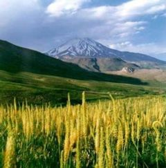
The legendary mountain has given its name to two physical features of
the world.
1) The Alborz mountain range in northern Iran (also written as Alburz or
Elburz), which stretches from the borders of Armenia in the north-west to
the southern end of the Caspian (Mazandaran) Sea, and
ends in the east at the borders of Turkmenistan and Afghanistan. The
largest mountain in the Middle East, Mount Damavand, is located in the
range.
2) Mount Elbrus in the Caucasus range, near the
border of Russia and Georgia.
Alborz enjoys a central role in the historical texts of Iran such as the Shahnama, and also in Persian mythology. Additionally, it is thought to be the dwelling place of the Peshotan, a Messiah-like figure awaited by devotees of Zoroastrianism. It should not be confused with Mount Elbrus in the Caucasus Mountains, which also derives its name from the legendary mountain Hara Berezaiti of Persian mythology.
The mountain has several secondary names, including Haraiti "the guarding one" (feminine), Taera "peak" (Middle Persian Terag) and Hukairya "of good deeds" (Middle Persian Hukar). In the Avesta, Hara Berezaiti is a polar mountain around which the stars revolve.
Aban Niyayesh (Litany to Water)
4. The great, far-famed, who is as much in greatness as all these
waters that run along on this earth. Who, the strong one, flows forth
from the height Hukairya to the Sea
Vourukasha.
It is also the mountain behind which the sun hides at night. Given the latter function, Hara was also interpreted as the mountain chain that surrounds the world.
The Bundahishn CH 5
3. Mount Alburz is around the world and is connected with the sky. The
Arezur ridge [of the Alburz mountain] is a summit at the gate of hell,
where they always hold the concourse of the demons.
[In later Zoroastrian tradition, the Harborz mountain was the site of
the Cinvat bridge, where souls are judged.]
"As the evil spirit rushed in, the earth shook, and the substance of
mountains was created in the earth. First, Mount Alburz
arose; afterwards, the other ranges of mountains (kofaniha) of the
middle of the earth; for as Alburz grew forth all the mountains remained
in motion, for they have all grown forth from the root of Alburz."
The revolution of the sun is like a moat around the world; it turns
back in a circuit owing to the enclosure (var) of
Mount Alburz around Terak.
The Terak of Alburz is that through
which the stars, moon, and sun pass in, and through it they come back.
For there are a hundred and eighty apertures (rojin) in the east, and a
hundred and eighty in the west, through Alburz; and the sun, every day,
comes in through an aperture, and goes out through an aperture; and the
whole connection and motion of the moon and constellations and planets
is with it: every day it always illumines (or warms) three regions
(karshwar) and a half, as is evident to the eyesight. And twice in every
year the day and night are equal, for on the original attack, when it
(the sun) went forth from its first degree (khurdak), the day and night
were equal, it was the season of spring; when it arrives at the first
degree of Kalachang (Cancer) the time of day is greatest, it is the
beginning of summer; when it arrives at the sign (khurdak) Tarachuk
(Libra) the day and night are equal, it is the beginning of autumn; when
it arrives at the sign Vahik (Capricorn) the night is a maximum, it is
the beginning of winter; and when it arrives at Varak (Aries) the night
and day have again become equal, as when it went forth from Varak. So
that when it comes back to Varak, in three hundred and sixty days and
the five Gatha days, it goes in and comes out through one and the same
aperture; the aperture is not mentioned, for if it had been mentioned
the demons would have known the secret, and been able to introduce
disaster.
Hara is tall and luminous, free from darkness and the predations of the daevas or evil spirits. The sacred plant haoma grows on Hara. It is also the home of the yazata Mithra. The river Aredvi Sura (personified as the goddess Anahita) springs from Hara and flows into the Vourukasa Sea. It is the site in legend of sacrifices (yasnas) to the yazatas Mithra, Sraosa, Aredvi Sura, Vayu, and Druvaspa, by sacrificers such as the divine priest Haoma (personification of the sacred plant) and kings like Haosyanha (Hushang) and Yima (Jamshid).
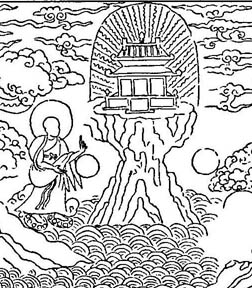
17. Ashi Yasht
24. 'To Ardvi Sura Anahita did Haoshyangha, the Paradhata, offer up a
sacrifice on the enclosure of the Hara, upon the enclosure of the Hara, the beautiful height, made by
Mazda.
37. To Ashi Vanguhi did Haoma offer up a sacrifice, Haoma, the
enlivening, the healing, the beautiful, the lordly, with golden eyes,
upon the highest height of the Haraiti Bareza.'
10. Mihr Yasht (Hymn to Mithra)
12. 'We sacrifice unto Mithra who first of the heavenly gods reaches
over the Hara, before the undying,
swift-horsed sun; who, foremost in a golden array, takes hold of the
beautiful summits, and from thence looks over the abode of the Aryans
with a beneficent eye.
49. 'We sacrifice unto Mithra for whom the Maker, Ahura Mazda, has built
up a dwelling on the Hara
Berezaiti, the bright mountain around which the many (stars) revolve,
where come neither night nor darkness, no cold wind and no hot wind, no
deathful sickness, no uncleanness made by the Daevas, and the clouds
cannot reach up unto the Haraiti
Bareza;
51. 'A dwelling that all the Amesha-Spentas, in one accord with the sun,
made for him in the fulness of faith of a devoted heart, and he surveys
the whole of the material world from the Haraiti
Bareza.
88. 'We sacrifice unto Mithra to whom the enlivening, healing, fair,
lordly golden-eyed Haoma offered up a sacrifice on the highest of the
heights, on the Haraiti Bareza, he
the undefiled to one undefiled, with undefiled baresma, undefiled
libations, and undefiled words.'
9. Drvasp Yasht
16. We offer up a sacrifice unto the powerful Drvaspa,
made by Mazda and holy, who keeps flocks in health. Who yokes teams of
horses for assistance to the faithful.
17. To her did Haoma offer up a sacrifice, Haoma, the enlivening, the
healing, the beautiful, the lordly, with golden eyes, upon the highest
height of the Haraiti Bareza.
Later Persian legend endowed the mountain with characteristics that
placed it more firmly in this world, distant but accessible. Harborz is to
be found in Eranvej (Airyanem Vaejah), the
original homeland of the Iranian peoples. In Ferdowsi's Shahnama,
Alborz is the place of refuge for Fereydun when he is sought for by the
spies of Zahhak. It is the dwelling-place of the Simorgh, where he brings
up the infant Zal. It is also the region where Key Qobad dwells before
being summoned to the throne of Iran by Rostam.
Like the myths of the 'First Time' in Egypt, the Vedas originate from
the period of the 'gods' at Mount Meru, the land of the gods. The
Mahabharata describes:
At Meru the sun and the moon go round from left to right every day, and
so do all the stars... The mountain by its lustre, so overcomes the
darkness of night, that the night can hardly be distinguished from
day... The day and night together are equal to a year to the residents
of the place...
The Avesta maintained that in later years Airyana Vaejo was a place in
which:
The stars, the moon and the sun are only once a year seen to rise and
set, and a year seems only a day.
Vishnu Purana states:
"Flowing through the sphere of the moon, the Ganges falls on Mount Meru
and flows in every direction to sanctify the entire world. Bathing in
the water of the Ganges destroys all the sins."
Meru is most likely reminiscent of Mouru of Oahspe. Here is a summary of the place of the heavenly plateaus and capitals where the throne of God, Jehovih's Son, was situated throughout history of heaven. The throne was established anew at the beginning of most cycles.
a) Cycle of Apollo — Apollo founded Gau in the place Hored had been,
extending over Jaffeth, Shem and Ham. Gau became overrun by a false God.
b) Cycle of Osire — Osire broke down the walls of Gau and founded Vibrahj
(over the land of Shem) as his central kingdom. Samati's (God of heaven)
home was in Mount Vibhraj, a heaven created in heaven, a thousand miles
high. Vibhraj was on the roadway betwixt Aoasu and Zeredho. Vibhraj became
depleted of people by the time of Fragapatti.
c) Cycle of Loo (Fragapatti) — Mouru the capital of
Haraiti became the place of the throne.
d) Cycle of Cpenta-armij — God provided for the removal of his hosts to
Craosivi before the arrival of Cpenta-armij.
e) Cycle of Bon — Lika committed the throne of Jehovih in the uninhabited
plateau Theovrahkistan, broad as the earth, high above the lands of
Jaffeth, and Vind'yu, and Arabin'ya. God was brought to Yogannaqactra,
capital of Theovrahkistan.
f) Thereafter the place of the throne was not revealed, save for the
collective term 'Paradise', which applied to the many plateaus of Jehovih
connected by 'Roads of Paradise', and the 'heavenly city of Paradise'.
Meiners pointed out the mythical identity of the Mount Alborg of the
Parsis with the Mount Meru of the Hindus, as a proof that the Parsis had
borrowed their mythology from the Hindus — the conclusion was incorrect,
but the remark itself was not so. Kleuker fancied that he could remove the
difficulty by stating that Mount Alborg is a real mountain, nay, a doubly
real mountain, since there are two mountains of that name, the one in
Persia, the other in Armenia, whereas Mount Meru is only to be found in
Fairyland.
'Meru' has several meanings, including a mountain in Asia, the north
geographical pole, the north celestial pole, the earth's spin axis, the
world axis connecting earth to higher realms, and the cerebrospinal axis
of the human body. In Hindu mythology Meru is the mystical mountain at the
centre of the world, where Indra has his palace. The summit of Mount Meru
or Sumeru (called Shveta-dvipa in the Puranas), is the mystical north
pole. Sometimes this sacred land is said to be located in the 'centre' or
'navel' of the earth. The northern paradise is often associated with a
world tree, a world mountain or pillar from which four rivers emerge, and
a world-engirdling serpent. The pillar, mountain, or tree links our own
'middle earth' with the upper and lower worlds.
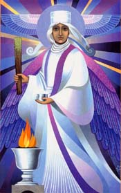
From Saphah:
Myazda, or Dracona, feast of
sacrament. Rice or other meal made into cakes and eaten in remembrance of
the Vow to Purify Myself.
VISPERAD
"With a Baresman brought to its
appointed place accompanied with the Zaothra
at the time of Havani [sunrise to midday], I desire to approach the Myazda-offering with my praise, as it is
consumed."
"Yea, further, we present (them to the Bountiful Immortals with an
especial gift) these thoughts well thought, these words well spoken,
these deeds well done, these Haomas, Myazdas,
Zaothras, and this Baresman spread with sanctity."
From Saphah:
Zaothra, holy water, also God of
sprinkling. When the worshippers were assembled they were frequently
sprinkled with water by the spirits.
Zaota, a priest, through whom the Gods can cause rain to fall.
The Baresman, or sacred bundle of
twigs (or "slender wands"), is a ritual implement, perhaps a conduit for
channelling the power outwards, and thus is a prototypical 'magic wand'.
Strangely, in Saphah Zaothra
and Barecma are Lords of the Hosts in Heaven.
The barsom is identified with the Barhis or sacred grass (Kusha grass) of
the Brahmans, which they spread at their sacrifices as a seat for the gods
who are expected to come, or wooden sticks placed in a certain order when
chanting the sacred verses of the Samaveda at the time of the Soma
libation.
The object of performing the barsom ceremony seems to be the payment of
homage to the vegetable creation of God. In the ritual, the holy water
(the zaothra) is poured over the barsom. The zaothra or purified water
represents rain through which the world receives the gift of water from
God.
Ashi-vanuhi, Goddess of dress. She was fourth Aion under Mithra. The duties of her inspiration to mortal women were to clothe themselves and to decorate themselves with gold and silver ornaments. She had twelve hundred Goddesses under her, and they were allotted one day in each month to speak and teach through the magicians and oracles and prophets and high priests. Some of these spirits spoke through the seers by entrancement, and some wrote on the sand-table. Prior to this period Iranian women seldom wore clothes.
Avesta
We sacrifice to Ashi Vanguhi, who
is shining, high, tall-formed, well worthy of sacrifice, with a
loud-sounding chariot, strong, welfare-giving, healing, with fullness of
intellect, and powerful;
For her brightness and glory, I will offer her a sacrifice worth being
heard; I will offer up unto Ashi Vanguhi a good sacrifice with an
offering of libations. We sacrifice unto Ashi Vanguhi with the
libations, with the Haoma, with the baresma, with the wisdom of the
tongue, with the holy spells, with the words, with the deeds, with the
libations, and with the rightly-spoken words.
Those men whom thou dost attend, O Ashi Vanguhi! have houses that stand
well laid up, rich in cattle, foremost in Asha, and long-supported.
Happy the man whom thou dost attend! Do thou attend me, thou rich in all
sorts of desirable things and strong!
The men whom thou dost attend, O Ashi Vanguhi! have their ladies that
sit on their beds, waiting for them: they lie on the cushions, adorning
themselves, ....(obscure), with square bored ear-rings and a necklace of
gold: 'When will our lord come? when shall we enjoy in our bodies the
joys of love?' Happy the man whom thou dost attend! Do thou attend me,
thou rich in all sorts of desirable things and strong!
The men whom thou dost attend, O Ashi Vanguhi! have daughters that
sit....(obscure); thin is their waist, beautiful is their body, long are
their fingers; they are as fair of shape as those who look on can wish.
Happy the man whom thou dost attend! Do thou attend me, thou rich in all
sorts of desirable things and strong!
The men whom thou dost attend, O Ashi Vanguhi! have hoards of silver and
gold brought together from far distant regions; and garments of splendid
make. Happy the man whom thou dost attend! Do thou attend me, thou rich
in all sorts of desirable things and strong!
Thy father is Ahura Mazda, the greatest of all gods, the best of all
gods; thy mother is Armaiti Spenta; thy brothers are Sraosha, a god of
Asha, and Rashnu, tall and strong, and Mithra, the lord of wide
pastures, who has ten thousand spies and a thousand ears; thy sister is
the Law of the worshippers of Mazda.
Praised of the gods, unoffended by the righteous, the great Ashi Vanguhi
stood up on her chariot, thus speaking: 'Who art thou who dost invoke
me, whose voice is to my ear the sweetest of all that invoked me most?'
And he said aloud: 'I am Spitama Zarathushtra, who, first of mortals,
recited the praise of the excellent Asha and offered up sacrifice unto
Ahura Mazda and the Amesha-Spentas; in whose birth and growth the waters
and the plants rejoiced; in whose birth and growth the waters and the
plants grew; in whose birth and growth all the creatures of the good
creation cried out, Hail!
And the great Ashi Vanguhi exclaimed: 'Come nearer unto me, thou pure,
holy Spitama! lean against my chariot!'
Spitama Zarathushtra came nearer unto her, he leant against her chariot.
And she caressed him with the left arm and the right, with the right arm
and the left, thus speaking: 'Thou art beautiful, O Zarathushtra! thou
art well-shapen, O Spitama! strong are thy legs and long are thy arms:
Glory is given to thy body and long cheerfulness to thy soul, as sure as
I proclaim it unto thee.'
The first wailing of the great Ashi Vanguhi is her wailing about the
courtesan who destroys her fruit: 'Stand thou not near her, sit thou not
on her bed!' — 'What shall I do? Shall I go back to the heavens? Shall I
sink into the earth?'
The second wailing of the great Ashi Vanguhi is her wailing about the
courtesan who brings forth a child conceived of a stranger and presents
it to her husband: 'What shall I do? Shall I go back to the heavens?
Shall I sink into the earth?'
This is the third wailing of the great Ashi Vanguhi: 'This is the worst
deed that men and tyrants do, namely, when they deprive maids, that have
been barren for a long time, of marrying and bringing forth children.
What shall I do? Shall I go back to the heavens? Shall I sink into the
earth?'
Saphah says: "Hura, a one-time man. Happiness is called an entity; so is unhappiness; so is faith; so is unbelief; and they are likened to seeds planted, which grow by nurture, according to the behaviour of mortals, into great trees. If, therefore, a man strive for Hura (happiness), it will grow in him, and not until he so striveth. And likewise of the other entities."
In the Avestan dictionary huraodha means "fair or lovely of form, beautiful, good looking."
The (supposed) Three Orders of Angels
Zoroastrians pick a patron angel for their protection, and throughout
their lives are careful to observe prayers dedicated to that angel.
1. Amesha
Spentas (Archangels)
Communication between Ahura Mazda and humans is said to occur through the
Amesha Spentas (beneficent/bounteous Immortals). They are sometimes
described in the Gathas as concepts, and sometimes as personified
spiritual beings. Amesha means immortal and Spenta means Holy. Amesha
Spentas are the highest spiritual beings created by Ahura Mazda.
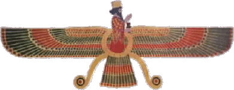
2. Fravashis (Faravahars or
Farohars, Guardian Angels)
Guardian spirits of men. Each person is accompanied by a guardian angel,
which acts as a guide throughout life. They originally patrolled the
boundaries of the ramparts of heaven, but volunteer to descend to earth to
stand by individuals to the end of their days. Ahura Mazda advises
Zarathushtra to invoke them for help whenever he finds himself in danger.
If not for their guardianship, animals and people could not have continued
to exist, because the wicked Druj
would have destroyed them all.
The Fravashi also serves as an ideal which the soul has to strive for and emulate, and ultimately becomes one with after death [like a Parodar]. They manifest the energy of God, and preserve order in the creation. They are said to fly like winged birds, and are represented by a winged disk, often with a person superimposed [as in the above representation. This is also used as an emblem].
3. YAZATAS (Angels)
'Adorable ones', a created spiritual being, worthy of being honoured or
praised. They who deserve offerings. Like the Amesha Spentas they today
have come to personify abstract ideas and virtues, or concrete objects of
nature.
The Yazatas are ever trying to help people, and protect us from evil.
Also known as Izads or in Veda literature Yajata. In Iranian mythology
they form the third rank of divine beings, and thus correspond to the
elves of Teutonic mythology.
The names of about ten Zoroastrian Amesha Spentas and Yazatas that appear
on the coins of Indo-Scythic rulers of Northwestern India in Greek
characters.
Some examples of the many Yazatas include:
Akhshti: Yazad personifying peace
Anaghra Raocha: Yazad of the 'endless light' (Var. Aneran)
Daena: Female Yazad presiding over the religion; also, Inner Self or
Conscience.
Erethe: Female Yazad personifying truth
Haoma: Yazad presiding over the haoma
plant, which has medicinal and spiritual properties. (Indo-Iranian in
origin)
Havani: Yazad presiding over the
second watch (gah) of each day (sunrise to midday, i.e. 12 noon).
Maonghah: Yazad presiding over the Moon.
Manthra Spenta: 'Holy Word', Yazad who
embodies the Holy Word.
[In the Vedas a mantra can mean a spell, transcendental chant, hymn or
incantation.]
Mithra: Yazad presiding over the
contract, personification of light. A solar deity associated with
covenant, oath-keeping and friendship. (Indo-Iranian in origin)
Paoiryaenis: Star Yazad associated with the Pleiades.
Parendi: Female Yazad of 'Abundance' or 'Plenitude'. (Indo-Iranian in
origin)
Rasanstat: Female Yazad personifying truth
Rashnu: Yazad of Justice
Rata: Female Yazad (Indo-Iranian in origin) personifying charity
Tishtrya: Yazad presiding over the
star Sirius. Tishtrya also directs the rain.
Ushah: Female Yazad of the dawn (Indo-Iranian in origin)
Vayu: Yazad personifying the wind or
atmosphere (Var. Gowad, Govad) (Indo-Iranian in origin)
Thwasha: Personification of 'Infinite Space'
Of the editor's note (end of Saphah)
"Mithra the first was about 4,000 years before Kosmon. Mithra the second was about 2,000 years before Kosmon."
The earliest mention in Oahspe of Mithra is "Karapa,
the false Mithra" (which implies an earlier Mithra) being one of the
chiefs of Kabalactes and his captain Yima's staff (who appears no earlier
than 1000 BC).
[The ancient Iranian god Mithra is referred to as Mitra (in the Vedas),
Mithras (Greek and Latin form), Meitros, Mihr (which is also the Iranian
word for sun), Mehr, and Meher (as in Meher Baba, the Parsee self-styled
mystic of India).]
Later, after Ka'yu (551-479 BC) and Sakaya, the Triunes gave to mortals forty-nine Saviours (including Mithra) within maybe two hundred years, in order to establish the Trinity.
15. Thereupon a coalition was entered into by the three Triunes to
give to mortals forty-nine Saviors, in order to establish the Trinity.
16. Which labor should be accomplished within two hundred years.
[The forty-nine Saviours are:
Rita, Gibbor, Gaal, Efrokin, Gargra, Thules [Thulis,
Thales?], of the house of Thules, Etrus, Gadamon and
Shofal of Egupt.
Adakus, Mithra, Bali,
Malopesus, Gonsalk, Hebron, Belus, of the house of Belus, Megath, Yodoman
and Beels of Parsi'e. (Some of them were boiled in oil; some given to the
lions in the dens, and some nailed on the ugsa, and left to perish.)
Datur, Prometheus, Quirnus,
Iyo [possibly the Etruscan God Ixion,
or Osiris-Aion, said to be born of the virgin Isis on
the 6 January, still kept by Armenian Christians as Christ's birthday.
Isis was sometimes represented as a sacred cow and her temple as a stable
which some say is the origin of the Christian belief that Jesus was born
in a stable], Osseo and Yohannas of Heleste and Uropa
(killed on the fete).
Indra, Yuth, Sakai, Withoban,
Aria, Devatat, Chrisna,
Laracqu, Hagre, Anathia, Jannassa and Janeirus of Vind'yu.
Sam Sin, Ah Wah, Ah Chong, K'aou'foor, King Shu, Shaou and Chung Le of
Chine'ya (killed on the fetes).
Manito, Quexalcote,
Itura, Tobak and Sotehoo of Guatama
(America).]
Yohans (Johns) were offspring of the Egyptians and western Uropan aborigines. The name Yohannas of Heleste and Uropa could possibly be that of St. John the Divine. According to the Book of Fenagh, a 16th century Irish manuscript, St. John was a Culdee. Moreover, Christine Hartley in The Western Mystery Tradition (1968) writes: "The first suggestion of the idea that St. John the Divine was a Kelt came from a paper given in the Scottish Lodge of the Theosophical Society in 1894.... The opening of his Gospel is the natural opening of the Kelt who had come to Christianity. There is the basic Keltic certainty that in the beginning there was the Word — Logos — the Supreme Being — 'the same was in the beginning with God'.... Those first five verses separate St. John from the other Apostles... In 1771 an anonymous Gaelic writer put forward the idea that Christianity was already upon Iona before the coming of Columba and that the Island was already dedicated to St. John 'for it was originally called I'Eion — the Isle of John — whence Iona'."
The Celtic Church of Britain and Gaul claimed its religious tenets were directly derived from the mystical teaching of St. John the Apostle. In Britain these Celtic monks were known as Culdees, from the Gaelic Culdich, which has been translated as "certain strangers."
There was a tradition that during the reign of the Roman Emperor
Domitian (81-96 AD) some of the disciples of the apostle John visited
Caledonia (ref. History of Paganism in Caledonia by Thomas Wise, 1884).
A Johannine Church may have developed through a monastic line which became
known in Celtic Britain as the Culdees.
In her book, Celt, Druid and Culdee, the author, Isabel Hill
Elder, states: "John Colgan translates Culdich 'Quidam Advanae' — certain
strangers — particularly strangers from a distance;
according to the ecclesiastical historian Eusebius of Caesarea (c.264-340
AD): 'The Apostles passed beyond the ocean to the isles called the
Britannic Isles.'"
David Buchanan, a Scots writer, remarks that "those who came into our
northern parts," i.e. Scotland, "and first made known unto our fathers the
mysteries of heaven, were the disciples of S. John the Apostle. The Scots
had received their tenets and rites from disciples to S. John." In A
Historical Account of the Ancient Culdees of Iona (1811), the
author, John Jamieson, comments: "Tertullian, who flourished in this age
[the 2nd century AD], asserts, that the gospel had not only been
propagated in Britain, but had reached those parts of the Island into
which the Roman arms had never penetrated [the Highlands of Scotland].
This perfectly agrees with the defence, made by the Culdees, of their
peculiar modes of worship. For they still affirmed that they had received
these from the disciples of John the Apostle."
Commenting on the Culdees, the Rev. Alexander Low, in his History of
Scotland from the Earliest Period to the Middle of the Ninth Century
(1826) remarks: "The religious orders of men among the ancient Scots were
known by the name of Culdees, from cuil, or cel, a retreat, and De, God.
As the defenders of their peculiar modes of worship observe, that they
receive them from the disciples of St John, it is probable that it was a
name given to those refugees, who had fled to places of safety in the
north, which were inaccessible to the Romans during the Diocletian
persecutions, in the second or third century."
The Culdee establishment not only excelled in astronomy, poetry, and
rhetoric, but also in philosophy, mathematics, and several other arts and
sciences.... It is among the Scottish Culdees, that we are to look for
that pure pattern of Christian life, such as was exemplified in the
African, Greek and Egyptian Anchorites."
The Bethany group who landed in Britain, was never referred to by the
British priesthood as Christians, nor even later when the name was in
common usage. They were called 'Culdees', as were the other disciples who
later followed the Josephian mission into Britain.
In the ancient British Triads, Joseph and his twelve companions are all
referred to as Culdees, as also are Paul, Peter, Lazarus, Simon Zelotes,
Aristobulus and others. The name was not known outside Britain. Even
though Gaul was Celtic, the name was never employed there.]
Atoning and Suffering Saviours

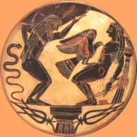
Hesiod writes:
"With shackles and inescapable fetters Zeus riveted Prometheus on a
pillar."
An anonymous poet describes a scene like it, thus:
| Lo! streaming from the fatal tree His all atoning blood, Is this the Infinite? — Yes, 'tis he, Prometheus, and a god! Well might the sun in darkness hide, |
The scriptural reference to the cross in Deuteronomy 21:22, often taken
as prophetic of Jesus, is to hanging on a tree, and Peter and the apostles
(Acts 5:30; 10:39) say Jesus had been hanged on a tree. Crucifixions
generally did not involve nailing but tying.
The story of Prometheus's punishment, burial and resurrection was acted in
pantomimes written by the great Aeschylus in Athens, five hundred years
before Christ.
Prometheus, whose name means "forethought," [like the Barbelo of
Gnosticism] had foreseen it all. The line "Don't kick against the pricks"
that is attributed to Christ addressing Paul is proof that the author knew
the play.
Acts 26:14
And when we were all fallen to the earth, I heard a voice speaking unto
me, and saying in the Hebrew tongue, Saul, Saul, why persecutest thou
me? it is hard for thee to kick against the pricks.
26:15 And I said, Who art thou, Lord? And he said, I am Jesus whom
thou persecutest.
Zeus fired a thunderbolt that sent the captive to Tartarus (the
underworld) still bound. Zeus's thunderbolt shook the earth, rocks were
rent, nature became convulsed and in a storm, which threatened the
dissolution of the universe. Confinement to Tartarus is death, liberation
from Tartarus is resurrection.
Several other saviours were cruelly punished by Zeus. At one time they
were the gods of foreign, rebellious or defiant people and so have been
punished in hell in the myths of the Greeks.
Graves says about the account of the crucifixion of Prometheus of
Caucasus, as furnished by Seneca, Hesiod, and other writers, that:
"it is stated that he was nailed to an upright beam of timber, to which
were affixed extended arms of wood, and that this cross was situated near
the Caspian Straits. The modern story of this crucified God, which
represents him as having been bound to a rock for thirty years, while
vultures preyed upon his vitals, Mr. Higgins pronounces an impious
Christian fraud."
Higgins says, "I have seen the account which declares he was nailed to a
cross with hammer and nails." (Anac. vol. i. 327.)
Graves refers to Mr. Southwell who says:
"The cause for which he suffered was his love for the human race."
And Mr. Taylor says: "the whole story of Prometheus' crucifixion, burial
and resurrection was acted in pantomime in Athens five hundred years
before Christ."
[If Prometheus was crucified in 547 BC then Hesiod who appears in about
800 BC must have been writing about another. Graves names Aeschylus, the
great Athenian writer, to be Prometheus. Aeschylus wrote his poem
"Prometheus Bound" in 430 BC. You can see his poem here:]
http://classics.mit.edu/Aeschylus/prometheus.html
Tityus was another god punished by crucifixion. Some place him in
Corinth not Lydia. He betrayed to humanity certain divine secrets that he
heard at the dinner table with them, and also stole nectar and ambrosia,
the food of the gods, which confers immortality. The Greek gods reserved
immortality to themselves.
He was forbidden to eat or drink, even though food and drink were
tantalisingly available. He is hung on the branch of a fruit tree (perhaps
a tree of life which has twelve fruits).
Mithras was born on the 25th of
December, and his celebrations at the spring and autumn equinoxes were
associated with crucifixion on a tree. The Romans saw a great deal in
common between Mithras and Christ.
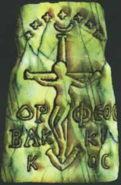
The Indian chief Red Jacket is reported to have replied to the Christian missionaries:
Brethren, if you white men murdered the son of the Great Spirit, we Indians have nothing to do with it, and it is none of our affair. If he had come among us, we would not have killed him. We would have treated him well. You must make amends for that crime yourselves.
Sixteen Crucified Saviours
Kersey Graves, in a well known book written over a century ago, gives
examples of sixteen crucified gods or saviours.
He cites the god Wittoba
of the Telingonesic (crucified 552 BC), worshipped apparently in the
Travancore and other southern states of India in the region of Madura, who
is depicted with nail-holes in his hands and the soles of his feet.
He also cites Bali a crucified God of
Orissa, India, 725 BC, known by several names which signify "Lord Second,"
his being the second person or second member of the trinity.
Most of the crucified gods occupied that position in a trinity of gods,
the Son, in all cases, being the atoning offering.
Indra of Tibet (said to be crucified
in 725 BC) is shown nailed to the cross. There are five wounds,
representing the nail-holes and the piercing of the side. His mother was a
virgin of black complexion, and hence his complexion was of the ebony hue,
as in the case of Christ and some other sin-atoning saviours. He descended
from heaven on a mission of benevolence, and ascended back to the heavenly
mansion after his crucifixion. He led a life of strict celibacy, which, he
taught, was essential to true holiness. He inculcated great tenderness
toward all living beings. He could walk upon the water or upon the air and
he could foretell future events with great accuracy. He practised the most
devout contemplation, severe discipline of the body and mind, and
completely subdued his passions. He was worshipped as a god who had
existed as a spirit from all eternity, and his followers were called
Heavenly Teachers.
The Celtic Druids depict their god Hesus (Esus,
Teutates, [Osseo?]) of Gaul as having
been crucified (834 BC) with a lamb on one side and an elephant on the
other, and that this occurred long before the Christian era. The elephant,
being the largest animal known, was chosen to represent the magnitude of
the sins of the world, while the lamb, from its proverbial innocent
nature, was chosen to represent the innocence of the victim, the god
offered as a propitiatory sacrifice.
Graves says Thulis (Zulis) of Egypt (1700 BC)
died the death of the cross. Ultima Thule was the island which marked the
ultimate bounds of the extensive empire of this descendant of the Gods.
In "The Works of Voltaire", section II of 'Oracles', Voltaire says:
"The history of Thulis, whose oracle is clear and positive on the subject
of the Trinity, is related only by Suidas. This Thulis, king of Egypt, was
not one of the Ptolemies. What becomes of the whole oracle of Serapis,
when it is ascertained that Herodotus does not speak of that god, while
Tacitus relates at length how and why one of the Ptolemies brought the god
Serapis from Pontus, where he had only until then been known?"
http://oll.libertyfund.org/Texts/Voltaire0265/Works/0060-06_Bk.html
The point he is making is that Thulis is not before Herodotus (480-425
BC), but around the time of Ptolemy (~300 BC).
Also:
Several writers give the following appropriate passage, on the authority
of Suidas: "Thulis King of Egypt, thus went to the Oracle of Serapis:
'Thou who art the God of fire, and governest the course of the heavens,
tell me the truth, was there ever, or will there ever be, one so powerful
as myself?' He was answered: 'first God, then the Word, and the Spirit,
all united in one. Go hence, O! mortal, whose life is always uncertain.'"
In going thence the priests carried out the implied threat by cutting the
throat of the egotistic Thulis.
http://www.phoenixmasonry.org/arcane_schools/part_2.htm
And:
Theosophists say the Egyptians attached a special value to the idea of the
Trinity. Suidas relates that the Oracle of Serapis addressed Pharaoh
Thulis in the following terms: "God [Father], the Word [Son] and the
Spirit [Holy Ghost] which unites them, all these Three are only one, which
is the Supreme whose power is eternal." This utterance is a striking
formulation of Christian doctrine of the Trinity.
http://www.theosophical.ca/EgyptianBeliefPWB.html
The Theosophists leave out the essential part, but make the connection
with the Trinity.
The 1700 BC date Graves gives for Thulis is then questionable if Thulis
was king of Egypt during the time of the Hellenistic God Serapis. The
Ptolemy date for Thulis (~300 BC) fits more with the times of the Saviours
(600-300 BC).
In addition:
Like Alexander, the Emperor Vespasian (emperor 68-79 AD) was proclaimed
the son of Amun and reincarnation of Serapis. Vespasian went through the
streets of Alexandria performing miracles and on one occasion restored
sight to a blind man. Thomas Paine refuted that in The Age Of Reason.
Hadrian (emperor after Trajan 117-138) wrote: "In Egypt the worshippers of
Serapis are Christians, and bishops pay their vows to Serapis. Whenever
the patriarch comes to Egypt he is made to worship Serapis by some and
Christ by others."
Paul says in 1 Corinthians 8:4-6:
"As concerning therefore the eating of those things that are offered in
sacrifice unto idols, we know that an idol is nothing in the word, and
that there is none other God but one. For though there be that are called
gods, whether in heaven or in earth, (as there be gods many, and lords
many). But to us there is but one God, the Father, of whom are all things,
and we in him."
Siegfried Morenz says in Egyptian Religion:
"The acclamation 'God is One', used by the earliest Christian
communities...is derived from one employed in the service of Serapis ('One
is Zeus-Sarapis' [Egypto-Hellenistic]), and this in turn comes from the
early Egyptian theologians' form ('One is Amon', etc.)."
Some of the dates given by Graves for saviours are more in the time
(about 1700 BC) when Ashtaroth and Baal first broke away from Osiris and
established their own kingdom. That's when in Osiris' heaven there
revolted one who took the name Thammus and had himself proclaimed to
mortals through the oracles as "The Only Son Of The Great Spirit, The
Savior Of Men". And in Sudga's heavenly kingdom Vishnu and Chrisna also
revolted at that time.
This explains the earlier saviour dates (Khrisna 1200 BC and Thammuz 1160
BC etc).
The crucifixion of the Mexican god Quetzalcoatl
(crucified 587 BC) is explicit, unequivocal, tangible, and ineffaceable,
"being indelibly engraven upon metal plates." One of these plates shows
him as having been crucified on a mountain. Another shows him as having
been crucified in the heavens, as S. Justin tells us Christ was. Sometimes
he is shown as having been nailed to a cross, sometimes with two thieves
hanging with him, and sometimes as hanging with a cross in his hand. The
"Mexican Antiquities" (vol. vi. p. 166) says, "Quexalcote is represented
in the paintings of 'Codex Borgianus' as nailed to the cross." Also in the
"Codex Borgianus," is found the account of his crucifixion, death, burial,
descent into hell, and resurrection on the third day. The "Codex
Vaticanus," contains the story of his immaculate birth by a virgin mother
by the name of Chimalman. Other incidences include his forty days'
temptation and fasting, his riding on an ass, his purification in the
temple, his baptism and regeneration by water, his forgiving of sins,
being anointed with oil, etc.
Iao (Jao)
of Nepal in 622 BC was crucified on a tree. The name of this incarnate god
and oriental saviour occurs frequently in the holy bibles and sacred books
of other countries. Some suppose that Iao is the root of the name of the
Jewish God Jehovah. It has a similarity with Ieue, Iesu and Joshua, which
come from the word Yeshua, "a place of salvation" [Book Of Ah'shong CH
II:11].
Devatat of Siam, and Apollonius of
Tyana in Cappadocia are also reported to have died on the cross.
The Roman saviour Romulus (Quirinus)
was put to death by wicked hands (crucified 506 BC), died and the whole
earth was covered in darkness, finally was resurrected, and ascended to
heaven.
Graves explains that Sakia was a God
known as Budha Sakia, or Sakia Muni, who was worshipped as a sin-atoning
Saviour, who according to some accounts "was crucified (600 BC) by an
arrow being driven through his body, which fastened him to a tree; the
tree, with the arrow thus projecting at right angles, formed the cross,
emblematical of the atoning sacrifice."
In God's Book Of Eskra Ch LIV verse 22 we are told that Kabalactes (who
falsely called himself Budha) framed tales about his mortal life and took
the name Sakaya Muni. We could conclude that Kabalactes later took the
same name as his perhaps more popular mortal saviour. This also would have
enabled the separate history of the slightly earlier Sakaya to be falsely
appropriated for Kabalactes' own glory.
Ixion, a mythical king of
Thessaly (400 BC), was crucified on a wheel, according to Nimrod. The rim
represented the world, and the spokes constituted the cross. It is
declared, "He bore the burden of the world" (that is, "the sins of the
world") on his back while suspended on the cross. Hence, he was sometimes
called "the crucified spirit of the world." Zeus condemned him to be
crucified on the solar wheel as it traversed the sky forever. A man tied
to a wheel is crucified because his body forms a cross.
[An ambush of Ionians (Eioneus) who were trapped and burnt in a fiery pit
at this time is an example of the losses of Christians at the hands of
Baal.]
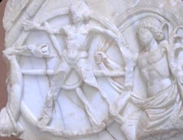
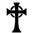
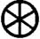
After that, at about the time of Joshu (over 100 BC), Hecla, alias Jah, alias Tyronia, alias Nileus; Nemertis, alias Itra, alias Prometh'ya, alias Ari, alias Mithra, was one of the Chine'ya and Vind'yu rebel Gods, that fled from the Triune kingdoms in the east, and established himself in Europe. Soon afterwards Looeamong proclaimed in heaven and earth that he was The Kriste.
Near Eastern influences on Mithraic worship
Mithraism, like the classical world, was not based on permanent dogmas,
but shifted its focus under changing circumstances.
According to the archetypal hero myth recited in Roman Mithraic rituals,
the infant Mithras formed an alliance with the sun and set off to kill the
bull, the first living creature ever created. While the bull was grazing
in a pasture, Mithras seized it by the horns and dragged it into a cave.
The bull soon escaped, but was recaptured when Mithras was given the
command by the raven, messenger of the sun, to slay the bull. With the
help of his dog, Mithras succeeded in overtaking the bull and dragging it
again into the cave. Then, seizing it by the nostrils, he plunged deep
into its flank with his knife.
As the bull died, the world came into being and time was born. From the
body of the slain beast sprang forth all the herbs and plants that cover
the earth. From the spinal cord of the animal sprang wheat to produce
bread, and from the blood came the vine to produce wine. The shedding of
the sacrificial blood brought great blessings to the world, which Ahriman
tried to prevent. The struggle between good and evil which at that moment
first began was to continue until the end of time.
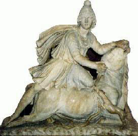
Historians say there is no parallel in ancient Iran to the tauroctony
(Mithras in the act of killing a bull, accompanied by a dog, a snake, a
raven, and a scorpion). In no Iranian myth or text does Mithra have
anything to do with killing a bull [though in the Gathan myth of Gaya
Maretan, Ahriman himself shed the sacrificial blood, killing Gavyokdat the
Primeval Bull, and men and animals and plants came
into being from the various parts of their slaughtered bodies.]
The tauroctony is now interpreted as an astronomical star map, [as the 12
tribes of Israel were interpreted to be the 12 signs of the zodiac
(according to the Mazzaroth)]. The slaying of the bull is thought to
symbolise the end of the "Age of Taurus" brought about by the precession
of the equinoxes.
There was a rich intermingling of religious systems that came together
in Asia Minor. That Mithraic worship was present in Asia Minor from
ancient times is evident through the great number of theophorous names of
rulers such as Mithridates Eupator the last ruler of Pontus. Mithra had
appeal to the militaristic mentality on account of the ancient Iranian
recognition of Mithra as a protector of kings and warrior-defender of
truth.
Peculiar private societies that existed after 110 BC in Bosporan cities
under the control of Mithridates Eupator indicate a prototype for later
Roman Mithraism. The societies were concerned with the worship of Oriental
deities, were headed by a leader termed Pater, excluded women, were
composed primarily of aristocratic soldiers, and were limited to groups of
15-20 persons. The size of the societal groups suggests a striking
parallel to the Mithraea found later throughout the Roman Empire, the
largest of which could only accommodate roughly 40 persons. Plaques with a
tauroctone image (just the bull-slaying, to differentiate from the more
complex "Tauroctony" of later Roman Mithraism that involved additional
complex astrological allusions and figures) have been found in Crimea
(which was absorbed into the Pontic kingdom in 110 BCE).
Five terracotta plaques with a tauroctone were found in Crimea. If they
are Mithraic, they are the oldest known representations of Mithras
tauroctone (the beginning of the first century CE). The oldest inscription
that is agreed to be Roman Mithraic was found in Asia Minor, dating to
77-78 CE.
In ancient Armenia, Persian influence had been established through the
Zoroastrianism practised there. The type of Mithraism there was not a
standard Zoroastrian cultic recognition of Mithra, but worship of a deity
other than Ahura-Mazda.
Along with the private societies in Bosporan cities, a revealing
inscription dating to 358 BC from southern Asia Minor suggests that there
was a syncretic movement between Hellenistic and Persian/Medean divinities
in the region. In this particular Aramaic inscription, the epithet
ksathrapati is identified with Apollo, which for Iranians would correspond
to Mithra.
[The word ksathra-pati is very much like 'Old Persian' Khshathra and
Sanskrit Kshatra, which mean virtuous dominion.]
During the centuries preceding Roman Mithraism a common thread between
the iconography of the tauroctone from the 4th century BC onward and later
illustrations of initiates in Roman Mithraea and the Tauroctony suggests a
link between death cults of the Near East and Roman Mithraism. The
positioning of the foot of the mystagogus on the back of the calf of
initiates in illustrations found in Mithraea, and the positioning of the
lion's paw on the back of the rearward leg of the bull in coinage minted
in Tarsus under the satrap Mazaeus, show a striking similarity. The scene
symbolises the god of death, Nergal, as two different coin issues of
Tarsus refer to Nergal. Roman Tauroctony scenes render Mithras with his
foot on the back of the bull's rearward leg (the Mithraic Hold).
The "Mithraic Hold" is also found in small terracotta figurines on the
northern Black Sea, of another cult from Asia Minor: the cult of the
Phrygian Attis. A proto-Tauroctony can be seen in these figurines, with
Attis, donned in Phrygian cap, slaying the bull, and employing the
familiar "Mithraic Hold" of later tauroctonies. It is possible that the
above influences first flowed into these figurines of Attis as bull
slayer, which pre-dates Roman Mithraism, and later merged with nascent
Mithraism. Such a reconstruction further strengthens Asia Minor and the
surrounding regions as the source of what later evolved into Roman
Mithraism.
Armenia was largely in accordance with traditional Zoroastrian religion.
There are some indications that motifs developed in connection with Mithra
in Armenia may have been appropriated by the Roman cult.
The Old Persian term krp', equivalent of karapan, is used to designate the cult. The latter is a term used by Zoroaster in the Gathas to denote non-Zoroastrian priests.
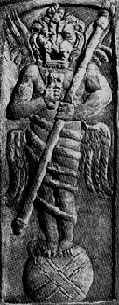
Zervanism
Orthodox Zarathustrian teachings say Zervan is a creature of Ahura-Mazda.
A separate Sassanid sect regarded Zervan Akarana, Infinite Time, as the
cause and the source of all things. Ahura-Mazda and Ahriman (the two
archetypes of Good and Evil) both sprang from Zervan and were subject to
him, and the followers of this cult called themselves Zervanists. It seems
plausible that the same Zervan, after having undergone all kinds of
foreign influences, was admitted into the Mithraic pantheon.
Zervan became identified in the Greek texts with Kronos, or Chronos
(Time), and, in the Roman world, with Saturn. This god is mostly portrayed
in a stiff hieratic pose, with legs close together. Sometimes he is shown
nude, though often his sex is disguised by a loin-cloth or by an
enveloping snake, as if it were intended either to leave the deity's sex
vague or to convey that both sexes were united in him, and that he was
capable of self-procreation. In between the coils of the snake, which
often winds itself, significantly, seven times round the god, are
sometimes seen the signs of the zodiac. The horrifying figure usually has
a lion's head with flowing mane and wide-open mouth showing threatening
protruding teeth. For even greater effect the mouth is sometimes painted
red and the gullet is hollowed out.
Saturn is sometimes represented with the appearance of a snake because of
excessive cold. Sometimes this strange creature is carrying a key in both
hands, a pointer to a connection with Janus, the ruler of the 'ianus', the
gateway to the underworld of which he possessed the keys.
Parallels have been drawn between Saturn and Sarapis, the Egyptian deity
of the realm of the dead, and Syrian figures who are entwined by snakes.
Kronos-Saturn
Kronos-Saturn always has a snake wound round his body and sometimes the
signs of the zodiac are seen in the spaces between its coils. He often has
four wings, one pair pointing upward and the other downward. Saturn is
standing on a globe, and surrounded by the signs of the zodiac which
decorate the vault of the cave where the bull-slaying is set. The
sevenfold windings of the snake are connected with the planets and the
coils themselves indicate the course of the sun
through the zodiac. He is ruler over the four winds,
represented by his four wings.
The lion is an allusion to the all-devouring fire. The fire-symbolism of
the Lion grade in the cult, the Lion with the fire-shovel as attribute, is
related to this figure, a reminder that at the end of time all will be
consumed in an overwhelming conflagration.
The goddess Atargatis was worshipped at Hierapolis in Syria. She was
portrayed in the same stiff attitude as the Time-god and her body was
always encircled by a snake. A mummy-like bronze of a youth entwined by a
serpent whose head rests upon the head of the god, was found at Rome in a
Syrian sanctuary on the Janiculum and identified as Atargatis.
Macrobius (fifth century AD) described in his Saturnalia two
statues erected on either side of the bearded Sun-god. These statues, two
female deities again entwined by snakes, had originally stood at
Hierapolis. Macrobius writes that 'the portrayal of the snake indicates
the rounded course of the star'. This
star is the sun. But according to the most recent interpretation it
represents the Syrian Dionysus-Adonis who, like his father Hadad, has
connections with the sun.
The Orphic element
Representations of the birth of Mithras where the god, entwined by a
serpent, is surrounded by the signs of the zodiac and the four Wind-gods
provide a link between Kronos-Saturn and Mithras. There is a
representation of Mithras's birth as Time-god dedicated by Felix. Felix
was a member of an Orphic sect, but he later became pater of a group of
Mithraic initiates. The relief shows a naked youth standing upright with
two long wings attached to his shoulders and a half-moon visible behind
him. In his right hand he holds the thunderbolts and in his left a long
staff. His hoof-shaped feet are resting on one half of a burning cone, and
the other half is above his head. The figure is entwined by a snake with
its head on top of the upper part of the cone. A lion's head is drawn on
the youth's chest and on either side of it the heads of a ram and a goat.
This imposing figure is surrounded by an elliptical band in which are
portrayed the twelve signs of the zodiac, while in the corners of the
relief are the heads of the four Wind-gods.
The hooves are reminiscent of the rustic god Pan whose name means 'all'
and was assimilated to Phanes, meaning 'rays'. According to the Orphic
doctrine Phanes is a youthful god of light and was born from an egg, the
two half-cones constituting the egg from which he springs. This egg was
laid by Time; hence the son resembles his father Chronos and is portrayed
as the Time-god. As Zeus, he carries thunderbolts and a staff. The zodiac and the coils of the serpent refer to the
yearly course of the sun. This fusion between Orphism and
Mithraism is found in Rome, and in a Mithraeum of the third century AD on
Hadrian's Wall. 'The begetter of light', was given the title saecularis,
eternal, related to saeculum, Aion,
Aevum, the stem of such words as 'coeval' (same age or epoch). In other
words, Mithras is the successor of Saturn whose celebrations ended in Rome
on December 24th, the day before the young Mithras, the new Saturn, was
born from the rock as god of light.
The Egyptian influence
An Egyptian Time-god of Alexandria called by the Greek name of Aion
(Aevum) was related to the goddess Kore, from Epiphanius who says that on
the night of the fifth of January, at cock-crow, a statue of Aion was
brought by torchlight into the open from a subterranean sanctuary
dedicated to Kore. To the accompaniment of pipes and tambourines the
statue was carried seven times round the temple and then returned to its
place. This ceremony signifies that on that night Aion was brought into
the world by Kore.
There is a connection with a statue in Rome of a god wearing only a short
loin-cloth encircled by a snake, whose head rests on the god's; in both
hands he holds the Egyptian ankh, the sign of life. This influence is
translated into Mithraic terms in a statue found in a villa belonging to
the Emperor Domitian. This statue represents a standing figure of Chronos
with lion's head and four wings attached to his shoulders. He wears a
short loin-cloth like the Alexandrian Aion. A very remarkable feature is
the fact that he has four arms, an eye on his chest and grim-looking
lions' heads on his knees and stomach. A three-headed Cerberus sits by his
left foot.
There is a connection between Cerberus and the Egyptian Sarapis, the god
of fertility and the realm of the dead. Macrobius, whose Saturnalia
dates from the end of the fourth century AD, explains the three heads of
Cerberus as an allusion to Time: the lion's head pointing to the present,
the wolf's to the past and the dog's to the future.
A statue of Aion from Ostia, now in the Vatican, shows gradual attempts to establish a universal and all-embracing divinity by ascribing a variety of attributes to the god. On his chest are Jupiter's thunderbolts flanked by two keys, and beside his feet are the hammer and tongs of Vulcan, the magic wand of Mercury, the cock of Aesculapius and the pine-cone of Attis. The keys indicate Janus, the Roman god who, as gate-keeper of heaven, opens the gates at sunrise and closes them again at sunset. According to Marcus Messala, a consul of 53 BC, Janus was the same as Aion. Macrobius goes further and says that Janus created and ruled the Universe and that his four heads symbolise his power over the four winds of the cosmos.
The Identification of Mithra with the Sun
One source says "the veneration of this god began some 4000 years ago in
Persia where it was soon imbedded with Babylonian doctrines. According to
Persian mythology, Mithras was born of a virgin given the title 'Mother of
God'."
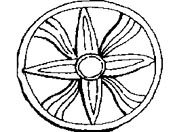
In iconography Mithras is depicted as the "unconquered sun" or "sol
invictus" holding a torch, an entity that transcends Helios the sun god,
existing outside of the cosmos in the supermundane solar world.
As Platonists believed the soul mediates between the intelligible
sun and the cosmos (the world), Mithras was "the Light of the World," an mediator between heaven and earth. He was a member of
a Holy Trinity, and worshippers held strong beliefs in a celestial heaven
and an infernal hell. They believed that the benevolent powers of the god
would sympathise with their suffering and grant them the final justice of
immortality and eternal salvation in the world to come. They looked
forward to a final day of judgement in which the dead would resurrect, and
to a final conflict that would destroy the existing order of all things to
bring about the triumph of light over darkness.
In the sixth and seventh centuries BC [about the time when Oahspe says
the sacred books were remodelled], a vast reformation of the Persian
pantheon was supposedly undertaken by "Zarathustra", retaining hundreds of
Persian deities and assembling them into a complex hierarchical system.
Within this vast pantheon, Mithras gained the title of 'Judger of Souls'.
[This Mithra would be Karapa, one of the chiefs of
Kabalactes. This is also the time of Nebuchadnezzar and the Jewish
captivity, the book of Daniel, up till when Cyrus II frees the Jews and
finances the rebuilding of the temple of Jerusalem (515 BC). It is said
that Zarathustra formed a new religion in Persia in 600 BC.]
Mithra was the most powerful Indo-Iranian divinity when Zarathushtra
preached his new religion.
For over three hundred years until the end of the fourth century, the
rulers of the Roman Empire worshipped the god Mithras. Aurelian,
Diocletian, and Julian the Apostate took the Mithraic titles of 'Pius',
'Felix', and 'Invictus' (devout, blessed, and invincible) legitimising
their rule by divine right, as opposed to heredity or vote of the Senate.
In 218 the Roman Emperor Heliogabalus attempted to elevate his god, the
Baal of Emesa, to the rank of supreme divinity of the empire by
subordinating the entire ancient pantheon. Emperor Nero adopted the
radiating crown as the symbol of his sovereignty to exemplify the
splendour of the rays of the sun, and to show that he was an incarnation
of Mithras.
True faithists were those who did not accept any kings save Jehovih.
The Achaemenians, Arsacids and Sasanians deviated from this, establishing
religious doctrines of Zoroastrianism to justify state enforcement of
imperial law and political ideology.
The Denkard expounds a "Zoroastrian" doctrine of sacral kingship,
criticises Judaism, Christianity, Islam, and Manichaeism and emphasises
the role of the Sasanian monarch [King of Kings in Pahlavi is Shahan-Shah]
as the supreme representative of Ahura Mazda on earth.
Mithra as the Hypercosmic Cause that Underlies Creation
Oahspe says:
'As the sun is to the light of day so is Jehovih to the understanding
of all the living'.
Philo, the Chaldeans and the Neoplatonists expressed it thus:
'As sunlight surpasses darkness, the brilliant radiance of the "intelligible,
or noetic" sun perceptible only by mind far surpasses the visible sun.'
Mithras would have been identified with the Platonic "hypercosmic sun"
by Mithraists of Platonist background such as Numenius, Cronius, and
Celsus.
In Book VI of the Republic Plato compares the
sun to the Good, saying that as the sun is the source of all illumination
and understanding in the visible world (the horatos topos), the Good is
the supreme source of being and understanding in the world of the forms
(the noetos topos or "intelligible world"). In
his allegory of the cave (Book VII) Plato symbolises human life as life in
a cave, and then describes the ascent of one of the cave-dwellers up out
of the cave where he sees for the first time the dazzling light of the sun
outside the cave.
The Chaldaean Oracles (late 2nd cent. CE), thought by Porphyry and later
Neoplatonists to be a divine revelation, distinguished between two fiery
bodies: one possessed of a noetic nature and the visible sun. The former
was said to conduct the latter. According to Proclus, the Chaldaeans call
the "solar world" situated in the supramundane region "entire light." The
supramundane sun was known to them as "time of time."
The Chaldaean Oracles were the product of a Middle Platonic milieu, since
they are permeated by concepts and images known from Platonising thinkers
ranging from Philo to Numenius.
There is a connection between Plato's cave allegory and his myth
Phaedrus which reads:
For the souls that are called immortal, so soon as they are at the
summit of the heavens, come forth and stand upon the back of the world:
and straightway the revolving heaven carries them round, and they look
upon the regions without. Of that place beyond the heavens none of our
earthly poets has yet sung, and none shall sing worthily. It is there
that true being dwells, without colour or shape, that cannot be touched;
reason alone, the soul's pilot, can behold it, and all true knowledge is
knowledge thereof.
The movement "upward", the "intelligible place" (topos noetos) in the
Republic now becomes "the place beyond the heavens" (topos hyperouranios).
Philo's De Opificio Mundi says:
"The intelligible as far surpasses the
visible in the brilliancy of its radiance, as sunlight assuredly
surpasses darkness. That invisible light perceptible only by mind is a
supercelestial constellation [hyperouranios aster], fount of the
constellations obvious to sense. It would not be amiss to term it
'all-brightness,' to signify that from which sun and moon as well as
fixed stars and planets draw, in proportion to their capacity, the light
befitting each of them."
Aristotle said:
"Time is a notation of motion; and motion without a physical body is
impossible. Beyond the highest heaven there is neither space, nor time,
nor vacuum (void). Therefore, the things there are not by nature in
space (place), nor does time make them grow old, nor is there any change
in any one of those things placed beyond the outermost sweep (or
current); but, unchangeable and passionless, they continue through all
aióna (eternity) a name that was divinely uttered by the ancients.
For the period which embraces (comprehends) the time of every one's
life, to whom, according to nature, there can be nothing beyond, has
been called each one's eternity (aión). The limit of the whole heaven,
and the limit enclosing the universal system, is the divine and immortal
existing (aei ón) (God) deriving his name Aión from his ever existing
(aei ón)."
The verb aió — to breathe, to live — does not imply the abstract idea of
eternity, but of God as an ever-existing person, from whom all other
personal beings derived existence and life."
Aristotle was not defining the word, but was alluding to that being
whose aión, or existence is continuous and eternal.
In Sophocles, Jupiter is called 'Aión (the living God) the Son of Kronos.'
Depictions of Aion vary. The Persian version depicts a male figure with
a lion's head, body entwined by a large snake, right hand holds a key. The
Classic figure, wholly human, stands within a circle of time (zodiac)
[shown right]. Phanes bursts forth in flames from a primeval egg. He is
winged, his body entwined by a large snake, holds a thunderbolt in his
right hand.
Mithras is sometimes pictured bursting out of a rock that symbolises the
cosmos breaking through the boundary of the universe. The rock out of
which Mithras is born is often shown entwined by a snake, a detail which
evokes the Orphic motif of the snake-entwined cosmic egg out of which the
cosmos was formed when the firstborn god Phanes Protogonus, known also as
Eros, Pan and Phanes-Jupiter, emerged from it at the beginning of time.
According to Orphic tradition the primeval Chronos gave birth to Aither
(air), Erubus (dark) and Chaos. He fashioned in Aither an egg which split
in two. Phanes (phaino meaning 'I shine'), first born of gods, sprang
forth.
Aion failed to make impact on the established Greco-Roman pantheon,
despite its complexity.
"Perhaps the egg or embryo called Phanes ('what is manifest') or Eros ('life force') whose icon is a serpent entwined seven times around a large egg, from which proceeded all life and existence, similar to the Kundalini wrapped three and a half times around the egg of the muladhara chakra, arises out of infinite form as does Adam Kadmon arise out of the light of His own reflected unbegotten existence." Perhaps the Kundalini wrapped three and a half times around the egg of the muladhara chakra represents a cosmic cycle.
Eros and the Inner Process
The Greek mysteries relate that at the very beginning of creation, only
chaos existed, and from chaos was born Eros. This is how theogonia (the
birth of the gods) begins and we are assured that the poet Hesiod heard it
from the mouth of the Muse herself. According to Hesiod, Eros represents
the driving force behind the entire theogonia. The Orphics agree that Eros
appears at the beginning of theogonia and cosmogonia, and they tell us
that his mother was Night, the dark goddess, and his father the Wind. From
their first cosmic and elemental embrace, Eros was born from a silver
egg.
The myth of Eros and Psyche describes the process of transformation. Eros
cannot be separated from his beloved Psyche, since they are united by a
secret and sacred bond, invisible and unconscious in man. Man's psyche
remains filled with sensual, carnal desires that keep him and his mind
trapped on the physical plane along with his emotions and consciousness.
But a seeker must transmute the attraction of Eros and awaken the bond
with his psyche so he can rise towards the "beloved."
Greek philosophers said that beauty and gnosis are inseparable and
inherent in the essence of Eros.
In Symposium, Plato expounded that Eros had
two aspects, one physical the other intellectual. According to Empedocles,
"Aphrodite (Eros' mother; Sophia Wisdom) is Eros (Logos, the transmuting
energy of pure love)," the immortal force that unites and harmoniously
blends together all the elements in nature, the "bringer" and "giver" of
life.
The oldest mythology of Homer does not mention Eros. Apparently Eros was
not born out of a popular tradition but he is the creation of an abstract
philosophical conception. In Greek esoteric philosophy, the Eros of
theogonia took part in the creation of life itself, bringing sexes
together and ruling over all living creatures through the need for
procreation.
Mithraism and the Galactic Alignment
Jacob's ladder "was set up on the earth, and its top reached to heaven; and there the angels of God were ascending and descending on it. And behold, the Lord stood above it" (Gen. 28:12, 13).
It has been thought that Mithras is the personified force of the precession of the equinoxes, capable of moving the entire cosmic sphere. His cosmic power is depicted by artworks in various ways. One example shows Mithras holding the cosmic sphere in one hand while with his other hand he supposedly rotates the circle of the zodiac (shown right).
In Galactic Alignment J. Jenkins says:
Mithraism was a mystery religion that arose in the
first century BC and for 400 years spread through Europe, North Africa,
the British Isles and parts of west Asia. It was the state religion of the
Roman Empire. In underground sanctuaries the seeker was led through seven
grades of initiation corresponding to the seven planetary spheres. The
teaching involves the ascent and descent of souls through the celestial
gateways. The central altar of Mithraism portrayed a bull-slaying scene
(tauroctony) surrounded by zodiacal signs, torchbearers etc.
The tauroctony figures represent constellations lying between Antares
(Scorpio) and Aldebaran (Taurus). The sequence of constellations on the
celestial equator runs from Canis Minor (dog) to Hydra (snake), Crater
(cup), Corvus (raven) and Scorpio. The bull's head is Taurus and the wound
is in the place of the Pleiades.
[Some modern nationalistic Zoroastrians hold a popular image of Zarathustra to bear more likeness to the missionary zeal of Paul of Tarsus, the Apostle. The same spirit as in the time of the "anointed one", Cyrus the great or Kava (Kavi, or Karapan) Vishtaspa, comes again to Paul of Tarsus during his apocalyptic endeavour.]
44:24-28 Thus saith the LORD, thy redeemer.... That saith of Cyrus, He is my shepherd, and shall perform all my pleasure: even saying to Jerusalem, Thou shalt be built; and to the temple, Thy foundation shall be laid.[The word 'Messiah' comes from the Hebrew verb 'to anoint', which itself is derived from the Egyptian word messeh, 'the holy crocodile'. It was with the fat of the messeh that the Pharaoh's sister-brides anointed their husbands on marriage. The Egyptian custom sprang from kingly practice in old Mesopotamia.]
45:1 Thus saith the LORD to his anointed, to Cyrus, whose right hand I have holden, to subdue nations before him; and I will loose the loins of kings, to open before him the two leaved gates; and the gates shall not be shut;Ch 44-45 Book of Isaiah
Stoic philosophy is characterised by astronomical knowledge and a belief
in a 'cosmic sympathy' through which everything in the universe is
connected. A Great Year was recognised to schedule the destruction of the
world (ekpyrosis), followed by its regeneration (palingenesis).
In the previous age in the time of Taurus the equinoxes were aligned with
the galaxy, and its end is symbolised by the tauroctony. Jenkins claims
the tauroctony scenes encode the dual process of human spirituality —
incarnation/manifestation/genesis, and
transcendence/involution/apogenesis. These occur at the celestial gateways
in Capricorn and Cancer.
Porphyry, quoting Eubulus, explains in the Cave of the Nymphs (see
below) that the Mithraic cave in which Mithras kills the bull was meant to
be an image of the cosmos.
The doctrine of two doorways in the cosmic cave
through which the soul ascends and descends is
drawn from the Neo-Pythagorean philosophers Numenius and Cronius. The soul
descends into manifestation (Genesis) through the gateway in Cancer, and
ascends to the transcendental realm (apogenesis) through the gateway in
Capricorn.
The placement of the solstitial gates in Capricorn and Cancer are
attributed to Porphyry and Numenius (2nd cent. AD) when the solstices were
in Capricorn and Cancer, but goes back to an earlier time as the idea of
solstices as gateways were alluded to in Homer's Odyssey.
Macrobius wrote that the sidereal location of the gateways is defined by
the crossing
point between the Milky Way and the ecliptic. Jenkins notes that the
gates were viewed rising heliacally (before the sun), requiring them to be
relocated to Gemini and Sagittarius where they sat by the time of
Macrobius.
The north gate (which Jenkins calls the galactic centre) is located on the
cusp of Sagittarius and Scorpio. The crossing point is located near the
arrow point of Sagittarius and Scorpio's tail.
On the other side of the axis is Taurus/Gemini with Pleiades inside
Taurus.
Jenkins speculates that the galactic
centre is mirrored by the throne of Zeus on Mount Olympus, symbol of
the winter solstice and gateway of the gods. Capricorn is identified with
the north, the pole star, and the semi-mythical land of Hyperborea.
On the Homeric Cave of the
Nymphs by Porphyry (233-305 CE) the Neoplatonist mystic of Phoenicia
What are we to understand by the Cave, in the island of Ithaca, which Homer describes in the following verses?
| High at the head a branching olive grows, And crowns the pointed cliffs with shady boughs. A cavern pleasant, though involv'd in night, Beneath it lies, the Naiades delight. Where bowls and urns, of workmanship divine, And massy beams in native marble shine; On which the Nymphs amazing webs display, Of purple hue, and exquisite array. The busy bees, within the urns secure Honey delicious, and like nectar pure. Perpetual waters thro' the grotto glide, A lofty gate unfolds on either side; That to the north is pervious by mankind: The sacred south t'immortals is consign'd. |
i.e. "an olive with spreading branches stands at the head of the
Ithacensian port; and near it is a cave both pleasant and obscure, which
is sacred to the nymphs who are called Naiads. Within the cavern, bowls
and capacious amphora are formed from stone, in which the bees deposit
their delicious honey. There are likewise within the cave long stony
beams, on which the nymphs weave purple webs wonderful to the sight.
Perpetual waters flow within the grotto. But there are two gates: one
towards the north gives entrance to mortals descending: but the other
towards the south which is more divine, is impervious to mankind; and
alone affords a passage to ascending immortals."
Cronius affirms that the poet under the veil of allegory, concealed some
mysterious signification. Artemidorus the Ephesian thus writes: "The
island of Ithaca is distant from Panormus, a port of Cephalenia. It has a
port named Phorcys; in which there is a shore, and on that shore a cave
sacred to the nymphs, in which the Phaeacians are reported to have placed
Ulysses."
Antiquity considered earth as the symbol of that matter from which the
world is composed; so matter and earth are the same; by the symbol of a
cave, signifying the formation of the world from matter. For caves are
congenial with the earth herself, and comprehended by one uniform stone;
whose interior part is concave, and whose exterior parts are extended over
an immense space of earth. But the world being self-born (i.e. produced by no external cause but from
a principle within), and in perfect symphony with itself, is allied to
matter which they call, according to a secret signification, a stone and a
rock. For like these hard bodies it is sluggish and inert, and receives
the impression of ornamenting form: at the same time they considered it as
infinite on account of its formless nature. But since it is continually
flowing, and of itself destitute of the supervening investments of species
by which it is formed and becomes visible, the flowing waters, darkness,
or obscurity of the cavern exhibit apt symbols of what the world contains
on account of that matter with which it is connected.
Hence through the dark union of matter, the world is obscure and dark, but
from the presence and supervening ornaments of form (from which it derives
its name) it is beautiful and pleasant. The world therefore may be called
a cave on account of its participation of form, but involved in the
deepest obscurity to the intellectual eye which endeavours to discern its
dark foundation. So that its exterior and superficial parts are pleasant,
but its interior and profound parts obscure: and its very bottom is
darkness itself.
After the same manner the Persians, mystically signifying the descent of
the soul into an inferior nature and its ascent into the intelligible
world, initiate the priest or mystic in a place which they denominate a
cave. For according to Eubulus, Zoroaster
first of all among the neighbouring mountains of Persia, consecrated a
natural cave, florid and watered with fountains, in honour of Mithras
the father of all things: a cave in the opinion of Zoroaster bearing a
resemblance of the world fabricated by Mithras. But the things contained
in the cavern, being disposed by certain intervals, according to symmetry
and order, were symbols of the elements and climates of the world. We find
too that after Zoroaster it was usual with others to perform initiatory
rites in caves and dens, whether natural or artificial. For as they
consecrated temples, groves, and altars to the celestial gods; but to the
terrestrial gods and to heroes altars alone, and to the subterranean
divinities vaults and cells; so to the world they dedicated caves and
dens; as likewise to nymphs, on account of the waters trickling, and
dispersed through caverns, in which the nymphs called Naiads preside.
But the ancients not only considered a cave as the symbol of this
generated and sensible world, but as the representative of every invisible
power: because as a cave is obscure and dark, so the essence of these
powers is unknown. But that caves are attributed to nymphs, and especially
to Naiads, who dwell near fountains, and are called Naiads from the waters
over whose flowing streams they preside, the hymn to Apollo indicates in
these words:
"The nymphs residing in caves shall deduce fountains of intellectual waters to thee, (according to the divine voice of the Muses,) which are the progeny of a terrene spirit. Hence waters bursting through every river, shall exhibit to mankind perpetual effusions of sweet streams."
From hence Pythagoreans, and after them Plato took occasion to call the
world a cave. And Plato in the seventh book of his Republic, speaking of
the condition of mankind in this sensible world, says, "Behold men as if
dwelling in a subterranean cavern, whose entrance opens through the whole
cave to the admission of the light."
"It is requisite to apply this similitude to all that has been previously
said: assimilating this terrene habitation which is the object of
corporeal sight, to the dark residence of a prison: but accommodating the
fire shining in the recesses of the cavern to the solar light."
Theologists have considered a cave as a symbol of the sensible world, and
of the powers it contains. But likewise it is a symbol of an intelligible
essence if not considered as the symbol of a material and immaterial
nature.
Thus the present cave since it contains perpetual
waters resembles a substance united with matter, and not that which is
immaterial and intelligible. On this account the cave is not sacred to
mountain divinities, to those who dwell on hills, or to other deities of
this kind, but to Naiads so called by the Greeks from 'namata', fountains;
because they preside over waters: and this term is commonly applied to all
souls passing into the humid and flowing condition of a generative nature.
These souls they considered as incumbent on the water, which is nourished
by a divine spirit as Numenius affirms: and hence a prophet said, that the
spirit of God moved on the waters.
It is known that humour invades the sun itself, and all animals descending
into generation. Hence Heraclitus observes "that it appears delightful,
and not mortal to souls, when they are born connected with humidity." And
he says in another place, speaking of unembodied souls, "we live their
death, and we die their life." Hence the poet calls men existing in
generation 'humid', because their souls are drenched in moisture. On this
account too, such souls delight in blood and humid seed: but water
administers nutriment to the souls of plants. Besides, according to the
opinions of some men aerial and celestial bodies, are nourished by the
vapours of fountains and rivers and other exhalations.
Thus the Stoics assert that the sun is nourished by
the exhalation of the sea; the moon from the effluvia of fountains and
rivers; but the stars from the exhalation of the earth. Hence according to
them the sun is a certain intellectual composition formed from the sea;
the moon from river waters; and the stars from terrene exhalations. It is
necessary therefore that souls, whether they are corporeal or incorporeal,
while they attract bodies, must verge to humidity, and be incorporated
with humid natures; especially such souls, as from their material
inclinations ought to be united with blood, and confined in humid bodies
as in a watery tegument.
Hence the souls of the dead are evocated by the effusion of bile and
blood: and souls ensnared by corporeal love, and attracting to their
nature a humid spirit, condense this watery vehicle like a cloud; for a
cloud is nothing more than humour condensed in the air. But the pneumatic
part thus condensed, through too great an abundance of humour becomes the
object of corporeal sight. And among the number of these we must reckon
those apparitions of images, which
from a spirit coloured by the influence of
imagination, present themselves to mankind.
But pure souls are averse from generation; on which account the same
Heraclitus observes "a dry soul is the wisest." But souls thus desiring to
be mingled with body, and attracting a humid vapour, by their propensity
to generation render their pneumatic part moist and wet, and by thus
verging to the ever flowing waters of generation, are deservedly called
Naiads.
[The Poemander of Hermes Trismegistus says:
"I am that Light, the Mind, thy God, who am before that Moist
Nature that appeareth out of Darkness, and that Bright and Lightful
Word from the Mind is the Son of God."
The Bundahishn speaks of creatures in the mingled state.]
Hence it is customary with the Greeks to call nymphs 'married', as those
who are copulated to generation; and to wash in a bath whose waters are
derived from fountains or perpetual rills. This world then is sacred and
pleasant to nymphs, i.e. to souls proceeding into a material nature, and
to genii participating of generation, although it is naturally dark and
opaque; on which account some are of opinion that souls are composed from
a certain aerial opacity. The present cave therefore must be allowed
sacred to souls, and to those more particular powers denominated nymphs,
who from their being praefects of rivers and fountains are called
'pegaiai' and 'naide', i.e. fountain and river divinities.
The stony bowls and urns are symbols of the aquatic nymphs. For vessels of
the same form are symbols of Bacchus. And what symbol is more proper to
souls descending into generation, and the tenacious vestment of body than
"Nymphs weaving on stony beams purple garments wonderful to behold?" For
the flesh is generated in and about the bones, which in the bodies of
animals may be compared to stones. But the purple garments plainly appear
to be the flesh with which we are invested; and which is woven as it were
and grows by the connecting and vivifying power of the blood, diffused
through every part.
Add too that the body is a garment with which the soul is invested; a
circumstance indeed wonderful to the sight, whether we regard its
composition, or consider the connecting band by which it is knit to the
soul. Thus according to Orpheus, Proserpine, who presides over every thing
generated from seed, is represented weaving a web; and the ancients called
heaven by the name of 'peplos', which is as it were the veil or tegument
of the celestial gods.
But with respect to this cave of the nymphs in Ithaca, Homer was not
alone content with saying that it had two gates, but he adds that the one
looks to the north, and the other, more divine, to the south which is not
pervious to men, but is alone open to immortals."
Since the cave is a symbol and image of the world, as Numenius and Cronius
affirm, it is necessary, in order to elucidate the reason of the position
of the gates, to observe that there are two extremities in the heavens;
viz. the winter solstice, than which
no part of heaven is nearer to the south;
and the summer solstice which is
situated next to the north. But on the solstitial circle [ecliptic] the summer tropic is in Cancer, and the winter tropic in Capricorn. And since
Cancer is the nearest to the earth, it is deservedly attributed to the
moon, which is itself proximate to the earth. But since the southern pole
by its great distance is inconspicuous to us, Capricorn
is ascribed to Saturn, who is the highest and most remote
of all the planets.
Again, the signs from Cancer to Capricorn are situated in the following
order:
| Leo called the house of the sun; Virgo, or the house of Mercury; Libra of Venus; Scorpius of Mars; Sagittarius of Jupiter; Capricornus or the house of Saturn. But from Capricorn in an inverse order: |
From among these theologists consider Cancer and Capricorn as two ports;
Plato calls them two gates. Of these,
they affirm that Cancer is the gate through
which souls descend, but Capricorn
that through which they ascend, and exchange a material for
a divine condition of being. Cancer is, indeed, northern and adapted to
descend: but Capricorn, is southern, and accommodated to ascent. And,
indeed, the gates of the cave which look to the north are with great
propriety said to be pervious to the descent of men: but the southern
gates are not the avenues of the gods, but of souls ascending to the gods.
On this account the poet does not say it is the passage of the gods, but
of immortals; which appellation is also common to our souls, whether in
their whole essence or from some particular and most excellent part only
they are denominated immortal.
It is reported that Parmenides mentions these two ports in his book,
concerning the nature of things: as likewise that they were not unknown to
the Egyptians and Romans. For the Romans celebrate their Saturnalia when
the sun is in Capricorn [winter
solstice], and during this festivity the servants wear the shoes of those
who are free, and all things are distributed among them in common; the
legislator intimating by this ceremony, that those who are servants at
present, by the condition of their birth, will be hereafter liberated by
the Saturnalian feast, and by the house attributed to Saturn, i.e.
Capricorn; when reviving in that sign, and being divested of the material
garments of generation, they return to their pristine felicity, and to the
fountain of life. But since the path beginning from Capricorn is
retrograde, and pertains to descent; hence the origin of the word
Januarius or January from Janua, a gate, which is the space of time
measured by the sun while, returning from Capricorn towards the east, he
directs his course to the northern parts. But with the Egyptians the
beginning of the year is not Aquarius, as among the Romans, but Cancer.
For the star Sothis (Sirius) borders on Cancer
which star the Greeks denominate 'Kynos', or the Dog. When this star rises
they celebrate the calends of the
month, which begins their year; because this is
the place of the heavens where generation commences, by which the
world subsists.
On this account the doors of the Homeric cavern are not dedicated to the
east and west, nor to the equinoctial signs, Aries and Libra, but to the
north and south, and particularly to those ports or celestial signs which
are the nearest of all to these quarters of the world: and this because
the present cave is sacred to souls, and to nymphs the divinities of
waters.
But these places are particularly adapted either to souls descending into
generation, or to such as are separating from it. On this account they
assigned a place congruous to Mithras, near the equinoctial; and hence he
bears the sword of Aries, because this animal is martial, and is the sign
of Mars:
[This further supports the idea that this Mithra is Hecla, alias
Prometh'ya, alias Ari, or Aries, one
of the Chine'ya and Vind'yu rebel Gods, that fled from the Triune kingdoms
in the east, and established himself in Europe. This negates Porphyry's
notion that Mithra is associated with the equinoctial constellation
Aries.]
He is likewise carried in the Bull, the sign of Venus; because the Bull as
well as Venus is the ruler of generation. But Mithras is placed near the
equinoctial circle, comprehending the northern parts on his right, and the
southern on his left hand.
Likewise to the southern hemisphere they added the south, because it is
hot, and to the northern hemisphere, the north, on account of the coldness
of the wind in that quarter. Again, it was not without reason that they
connected winds with souls sinking to generation, and again separating
themselves from its stormy whirl: because, according to the opinion of
some, souls attract a spirit, and obtain a pneumatic substance.
Indeed, Boreas is proper to souls passing into generation: for the
northern blasts recreate those who are on the verge of death; and refresh
the soul reluctantly detained in the body. On the contrary, the southern
gales dissolve life. For the north, from its superior coldness, collects
into one, detains and strengthens the soul in the most moist and frigid
embraces of terrene generation: but the south dissolves the humid bands,
and by its superior heat, having freed the soul from the dark and cold
tenement of the body, draws it upward to the incorporeal light and heat of
divinity.
When the god is at his meridian they place a symbol of midday and of the
south in the gate of the temple. Besides, in other gates it was esteemed
unlawful to speak at all times; because they considered gates as sacred.
On this account too the Pythagoreans, and wise men among the Egyptians,
forbade any person to speak while passing through gates or portals; for at
that time the divinity who is the principle of the universe is to be
worshipped in silence.
The gates of heaven were committed to the care of the hours [times of day,
Gahs].
Heavens sounding gates kept by the winged hours. [Iliad viii 393]
Homer elsewhere makes mention of the gates of the sun, signifying by
these Cancer and Capricorn: for the sun proceeds as far as these signs,
when he descends from the north to the south; and from thence ascends
again to the northern parts. But Capricorn and Cancer are situated about
the milky circle, Cancer occupying the northern extremity of this circle,
and Capricorn the southern.
Again, according to Pythagoras the people of dreams are souls, which are
reported to be collected in the milky way; the appellation of which is
derived from souls nourished with milk after their lapse into the whirls
of generation. The northern parts are properly adapted to the class of
souls obnoxious to mortality and generation; but the southern quarter to
immortals, exempt from the mutability inseparable from the flowing realms
of generation: in the same manner as the east is attributed to the gods,
and the west to daemons.
Hence since diversity is the origin of nature, the ancients considered
every thing with a double entrance, as the symbol of nature. For the
progression of things is either through an intelligible
or a sensible nature. And if through a sensible nature, either through the
sphere of the fixed stars, or through the orbs of the planets; and again
either with an immortal or a mortal motion. Likewise one centre or hinge
of the world is above the earth, but the other is subterranean; and one
part of the heavens is eastern, and another western. Thus too night is
opposed to day; and the harmony of the universe consists from the amicable
junction of contrary and not similar natures. Plato also makes mention of
two gates, one of which affords a passage to those ascending into the
heavens, the other to those descending on the earth: and theologists place
the sun and moon as the gates of souls, which ascend through the sun and
descend through the moon. So, according to Homer,
Two urns by Jove's high throne have ever stood,
The source of evil one, and one of good. [Iliad xxiv 527]
The olive, consecrated at the head of the port signifies that the
universe is the offspring of an intelligible
nature, separated by a diversity of essence, and ever present energies,
not remote, but situated on its very summit, that is governing the whole
with perfect wisdom from the dignity and excellence of his nature.
In this cave all external possessions must be deposited; here, naked and
suppliant, and casting aside every thing superfluous, being averse from
needless possessions, it is requisite to sit at the foot of the olive, and
destroy that hostile rout of passions, which lurk in the secret recesses
of the soul.
Numenius thought the person of Ulysses in the Odyssey represented a man
who passes in a regular manner over the dark and stormy sea of generation;
and thus arrives at that region, where tempests and seas are unknown, and
finds a nation "Who ne'er knew salt, or heard the billows roar." According
to Plato, the deep, the sea, and a tempest are so many symbols of the
constitution of matter. It is first requisite to appease, by sacrifices,
labours, and patient endurance by which he transmutes himself into
different forms; so that at length being stripped of the torn garments by
which his true person was concealed, he may recover the ruined empire of
his soul. Nor will he even then be freed from molestation, till he has
entirely passed over the raging sea, and taken a long farewell of its
storms.
"Pythagoras thought that the empire of Pluto, began downwards from the
milky way, because souls falling from thence, appear already to have
receded from the gods.
From the confine in which the zodiac and galaxy touch each other, the soul
descending from a round figure, which is the only divine form, is produced
into a cone by its defluxion. And as a line is generated from a point, and
proceeds into length, from an indivisible, so the soul from its own point,
which is a monad, passes into the
duad, which is the first protraction. And this is the essence which Plato
in the Timaeus calls indivisible, and at the
same time divisible, when he speaks of the fabric of the mundane soul.
For as the soul of the world, so likewise that of man will be found in one
respect ignorant of division, if the simplicity
of a divine nature is considered; and in another respect
capacious of division, if we regard the diffusion of the former through
the world, and of the latter through the members of the body.
As soon, therefore, as the soul gravitates towards body, in this first
production of herself, she begins to experience a material tumult, that
is, matter flowing into her essence. And this is what Plato remarks in the
Phaedo, that the soul is drawn into body, staggering with recent
intoxication; signifying by this the new drink of matter's impetuous
flood, through which the soul becoming defiled and heavy, is drawn into a
terrene situation. But the starry cup, placed between Cancer and Leo, is a
symbol of this mystic truth, signifying that descending souls first
experience intoxication in that part of the heavens, through the influx of
matter. Hence, oblivion, the companion of intoxication, there begins
silently to creep into the recesses of the soul. For if souls retained in
their descent to bodies the memory of divine concerns of which they were
conscious in the heavens, there would be no dissension among men,
concerning divinity. But all, indeed, in descending drink of oblivion;
though some more, and others less. On this account, though truth is not
apparent to all men on the earth, yet all exercise their opinions about
it: because a defect of memory, is the origin of opinion. But those
discover most, who have drank least of oblivion: because they easily
remember what they had known before in the heavens.
Hence, that which is called lectio by the Latins, is called by the
Greeks 'anagnosis', or repeated knowledge; because when we learn any
truths, we recognise what we naturally knew, before material influxion,
rushing into the body, had intoxicated the soul. But it is this hyle or
matter which composes all that body of the world, which we every where
perceive adorned with the impressions of forms. Its highest and purest
part, however, by which divine natures are either sustained or composed is
called nectar, and is believed to be the drink of the gods: but its more
inferior and turbid part is the drink of souls.
But according to the Orphic writers the 'nous hylikos', or material
intellect, is Bacchus, who, proceeding from that
indivisible part, is divided into particulars. Hence, in the Orphic
mysteries, he is reported to have been torn in pieces, by Titanic fury,
and the fragments being buried, are said to have risen entire, and
collected into one; because intellect by passing into a divisible from an
indivisible nature, and again returning from divisible to indivisible,
both accomplishes the duties of the world, and does not desert the arcana
of its own nature.
The soul, therefore, falling with this first weight, from the zodiac, and
milky way into each of the subject spheres, is not only clothed with the
accession of a luminous body, but produces the particular motions which it
is to exercise in the respective orbs. Thus in:
Saturn, it energises according to a ratiocinative and intellective
power.
Jove, the power of acting.
Mars, the ardour of courage.
Sun, a sensitive and phantastic nature.
Venus, the motion of desire.
Mercury, pronouncing and interpreting what it perceives.
The lunar globe, a plantal nature, and a power of acting on body.
And this sphere, as it is the last among the divine orders, so it is the
first in our terrene situation. For this body, as it is the dregs of
divine concerns, so it is the first substance of an animal. And this is
the difference between terrene and supernal bodies (under which last, I
comprehend the heavens, the stars, and the other elements) that the latter
are called upwards to be the seat of the soul, and merit immortality from
the very nature of the region, and an imitation of sublimity; but the soul
is drawn down to these terrene bodies, and is on this account reported to
die, when it is inclosed in this fallen region, and the seat of mortality.
Nor ought it to cause any disturbance, that we have so often named the
death of the soul, which we have pronounced to be immortal. For the soul
is not extinguished by its own proper death, but is only overwhelmed for a
time. Nor does it lose the benefit of perpetuity, by its temporal
demersion: since when it deserves to be purified from the contagion of
vice, through its entire refinement from body; it will be restored to the
light of perennial life, and will return to its pristine integrity and
perfection."
This assertion of Pythagoras that the people of dreams are souls
situated in the milky way, admirably contributes to elucidate the
following passage in the 24th book of the Odyssey, respecting the descent
of the suitors' souls to the region of spirits: "But they passed beyond
the flowing waters of the ocean, and the rock Leucas, and the gates of the
sun, and the people of dreams: and
they immediately came into meadows of asphodel, where souls the images of
the dead reside." For it is evident from hence that the souls of the
suitors passed through the galaxy, or the seats of the blessed.
Homer describes in these lines the complicated progression of an impure
soul until it regains its original habitation in the stars, and again
begins to gravitate to this terrene abode. In the first place these souls
are said to pass over the flowing waters of the ocean, and the Leucadian,
or white rock. Now by this nothing more is meant than the flight of the
suitors' souls to the extremity of the earth, in order to a subterranean
descent. The earth is bounded by the ocean; and the Leucadian rock may be
some rock on the earth's extremity, which receives the last rays of the
sun.
Afterwards they are said to pass through the gates of the sun, by which,
as Porphyry informs us above, we must understand the tropics of Cancer and
Capricorn: and as Capricorn is subterranean, and affords a passage to
ascending immortals, we must conceive that they enter through this prior
to the tropic of Cancer. But in order to comprehend the perfect propriety
of this transition, we must observe that the souls of the suitors on
account of their impurity, are punished in the recesses of the earth,
before they enter the celestial tropics, and pass into the meadows of
Pluto. This the poet evidently evinces by the screaking noise which they
utter, and the squalid paths through which they descend: a noise of this
kind as Proclus well observes, (in Plat. Repub.) "representing
a species of life solely given to appetite and imagination."
After they have been purified therefore by subterranean punishment, they
are fit to ascend to the people of dreams, or the souls of the blessed
situated in the milky way. However as the soul, on account of her middle
nature, is incapable of a perpetual sameness of situation, but is formed
for infinite circulations; hence Homer, without mentioning her duration
among the gods, though it is doubtless very extended, agreeable to the
mystic brevity of his Muse, makes her immediately pass into the meadows of
Asphodel, where souls the images of the dead reside. Now these meadows of
Asphodel, form the supreme part of Pluto's dominions which commence
downwards from the milky way; so that these meadows are most probably
situated in Leo, the constellation into which souls first fall, after they
leave the tropic of Cancer.
In these meadows, then, the images of the dead are said to reside. Now
these images, are no other than those vehicles of the soul which, from
their residence in the starry regions, must be luciform, etherial, and
pure. It is this phantastic spirit, or primary vehicle of the soul, which
Virgil alludes to, in these beautiful lines:
"We are afterwards sent through ample Elysium,
and a few of us possess the joyful plains: till a long period, when the
revolving orb of time has perfected its circulation, frees the soul from
its concrete stains, and leaves the etherial sense pure, together with the
fire (or splendour) of simple ether."
For here he conjoins the rational soul, or the etherial sense, with its
splendid vehicle, or the fire of simple ether; since this vehicle,
according to Plato, is rendered by proper purgation 'augoeides', or
luciform, and divine. It must here however be observed that souls in these
meadows of asphodel, or summit of Pluto's empire, are in a falling state;
or in other words through the secret influx of matter begin to desire a
terrene situation. And this explains the reason why Hercules in the
infernal regions is represented by Homer boasting of his terrene exploits
and glorying in his pristine valour; why Achilles laments his situation in
these abodes; and souls in general are engaged in pursuits similar to
their employment on the earth: for all this is the natural consequence of
a propensity to a mortal nature, and a desertion of the regions every way
lucid and divine. Let the reader too observe, that, according to the
arcana of the Platonic doctrine, the first and truest seat of the soul is
in the intelligible world, where she lives
entirely divested of body, and enjoys the ultimate felicity of her nature.
Since for the soul to dwell with the gods, entirely separated from its
vehicle, is to abide in the intelligible world, and to exercise, as
Plotinus expresses it, the more sacred contests of wisdom.
Should it be enquired why departed souls, though in a state of felicity
are compared by Homer to dreams and shadows, I answer with Porphyry that
they are shadows with respect to human concerns, both because they are
destitute of body, and are void of memory: for after they have passed the
Stygian river, they are entirely ignorant of their pristine life on the
earth, though they recognise and converse with each other, as is evident
from the discourses between Patroclus, Ajax, and Antilochus. Indeed
together with memory, they lose all knowledge of corporeal resemblances,
which are rendered apparent through the ministry of the phantasy. For
since the phantasy consists from memory, as Plato asserts in the Philebus,
whatever we imagine perishes with the memory; and when this is taken away
all the perturbations of the soul are removed, as she then becomes wholly
intellectual, and passes into a state divinely prudent and wise. However,
by means of the blood, which, as we
have before observed, is, according to Homer, the instrument
of the phantastic soul, departed spirits recognise material
forms, and recollect their pristine condition on the earth. And to the
phantasy reasoning pertains; since it is nothing more than an aggregation
of memory, collected through imaginations, into the judgment of
universals. But this is very different from the intellective energy,
acquired by the soul beyond Acheron, which Cocytus and Pyriphlegethon
fill, from the whirling streams of the dreadful Styx. Let the reader,
however, remember that the phantasy is twofold, communicating in its
supreme part with the rational soul, and in its inferior part with sense;
and that it is this inferior part which the soul deserts, when it acquires
an intellectual condition of being.
http://www.prometheustrust.co.uk/TTS_Catalogue/2_-_Porphyry/2_-_porphyry.html
The Paradox of Idolisation and Denial of a Creator
Of the forty-nine Saviours that taught triune doctrine, Mithra was of
the land of Parsi'e. Tarsus is on the western side of Parsi'e, inside
Turkey but near the border of Syria. Triune inspiration presumably came
through Pythagoreans, Platonism, Stoics, Philo etc., on the western side,
and from the east through the Vedic Karapan cult, most
likely established by Karapa, the
false Mithra, one of the chiefs of the triune god Kabalactes whose symbol,
like the other triunes, was the bull. Karapans were
the non-Zoroastrian priests unpopular in the Gathas.
When gods who are on the downward path cannot win by philosophical
persuasion, argument degenerates into war. This is when contradictions and
hypocrisy first arise in religion.
Since both the Triunes and Baal contested for ideological supremacy and
domination of the oracles by appealing to the local leanings of mortals,
the doctrines of the Triunes sometimes could have drifted towards Baal's.
To add to the confusion Hecla, alias Mithra, who was one of the Chine'ya
and Vind'yu rebel Gods, that fled from the Triune kingdoms in the east,
and established himself in Europe in about 100 BC, at about the time of
the emergence of the proto-Roman Mithraic cult, came into alliance with
Baal. The Phrygian Attis cult from Asia Minor, who produced figurines with
Attis, donned in Phrygian cap, slaying the bull, may have been his.
It's possible that the tauroctony may have symbolised the ambition of the
breakaway Hecla to end the triune doctrine, whose sign was the bull,
simultaneously turning their gains in learning to his own advantage. When
Baal regained sway and power over the inroads made by Looeamong he
cunningly corrupted the triune teachings and turned them to his own form
(distinguished by the tendency to be more worldly, irrational and
blatantly idolatrous). The inner cosmic knowledge became heathenised by
Roman Emperors.
The so-called celestial origin of crucifixion in solar myths is said to
be a sun crossing over the celestial equator, the heavenly sign of the
equinoxes. The image of a crossover in the sky would be a cross like the
Greek letter Chi (X) not a Plus (+). The traditional Roman sign of the
Christian was Chi Ro, the first two letters of the name Christ.
Plato, in his dialogue Timaeus, said that when the creator of the universe
first formed the cosmos, he shaped its substance in the form of the letter
X, representing the intersection of the zodiac and the celestial equator
(or the ecliptic and celestial planes), which depicts the cosmic sphere.
It is said that the Manichean faith succeeded as an heir to Mithraism. It died out in the West by the 6th century, but led to the creation of several early Christian heresies, such as those of the Cathars (Albigenses).
Links
http://www.well.com/user/davidu/mithras.html
http://www.well.com/user/davidu/hypercosmic.html
With such grim rites as the European cult had, it's important not to mix them up with the Mithra of the earlier Avestans (the Indians (Haptans) and Persians).
Some creation-myths say that creatures [living things] have sprung from the bodies of the primeval man or of the cosmic cow killed by the gods or, as in the case of the later Zoroastrianism, by the Evil Spirit. In Babylonian mythology it is Marduk who killed Tiamat and the creatures came into existence from his body. According to Vedic texts the gods sacrificed Purusha and brought the earthly and aerial creatures into being from his body. Ahriman, say the Pahlavi works, killed Gaya Maretan, the Primeval Man [the Avestan word 'Gayo-maretan' is the Pahlavi word 'Gayomard'] and Gavyokdat, the Primeval Bull, and men and animals and plants came into being from the various parts of their slaughtered bodies.
One wonders how the Lords of the Second Resurrection see themselves or
reveal their state of being in the higher heavens. Whether the many myths
given here are just falsehood or fantasy, or whether elaborate
explanations, allegories and parables are necessary to get that across.
Oahspe reveals that Gaya Maretan is simply Gaomah,
one of the Lords of farmers and herdsmen appointed by Yima.
From the FRAWARDIN YASHT
We worship the Fravashi of Gaya Maretan,
who first listened unto the thought and teaching of Ahura Mazda; of whom
Ahura formed the race of the Aryan nations, the seed of the Aryan
nations.
We worship all the good, awful, beneficent Fravashis of the faithful,
from Gaya Maretan down to the victorious Saoshyant [Saviour].
From the VISPERAD 21.
We take up our Yasna and our homage to the good waters, and to the
fertile fruit-trees and to the Fravashis of the saints and to the Kine, and to Gaya
(Maretan), and to the Mathra Spenta (the bounteous word-of-reason).
YASNA 13, 26 & 69
And we would worship the Fravashi of the Kine
[an archaic term for cow, or sometimes bull], and to Kine,
the herds of blessed gift, and that of the holy Kine,
and to Gaya Maretan (the first
created) to the Saoshyant, the victorious.
The Catholic Encyclopedia in a biased but intelligent discussion about
Gnosticism mentions:
According to the Naassenes, the Protanthropos is the first element; the
fundamental being before its differentiation into individuals. "The Son of
Man" is the same being after it has been individualized into existing
things and thus sunk into matter. The Gnostic Anthrôpos, or Adamas, is a
cosmogonic element, pure mind as distinct from matter, mind conceived
hypostatically as emanating from God and not yet darkened by contact with
matter.
This mind is considered as humanity, or as a personified idea without
corporeality, the human reason conceived as the World-Soul.
This is developed in Manichaeism. God, in danger of the power of darkness,
creates with the help of the Spirit, the five worlds, the twelve elements,
and the Eternal Man, and makes him combat the darkness. But this Man is
somehow overcome by evil and swallowed up by darkness. The present
universe is in throes to deliver the captive Man from the powers of
darkness. The cosmogonic Anthrôpos is mixed up with the historical figure
of the first man, Adam. Adam was the Godhead immanent in the world and
ever manifesting itself to the inner consciousness of the elect. The
modified idea occurs in the "Poimandres", and is elaborated by Philo.
Adam kat eikona is "Idea, Genus, Character, belonging
to the world, of Understanding, without body, neither male nor female; he
is the Beginning, the Name of God, the Logos, immortal, incorruptible."
These ideas in Talmudism, Philonism, Gnosticism, and Trismegistic
literature, all come from one source, the late Mazdean development of the
Gayomarthians, or worshippers of the Super-Man.
One writer says:
"According to the ancient myth Mithra killed the Primeval Bull and thereby
became the creator and fashioner of the earthly beings. Zarathushtra did
not include him in the heavenly hierarchy, but adapted the legend of the
immolation of the Primeval Bull by Mithra to ethical ends."
The Gathas speak of three beings, Geush Tashan,
'the Creator of the Bull or Cow,' Geush Urvan, 'the Soul of the Bull or
Cow,' and Gav Azi, 'the Bull or Cow
Azi.' (giver of joy and prosperity, represents the animal creation)
Tradition explains Gav Azi as 'the
three years old cow.' It is evidently gav
aevodâta, 'the sole created bull or cow,' of the Later Avesta, and
Gavyokdât, 'the Sole Created Bull' of the Pahlavi and subsequent Sanskrit,
Persian, and Gujarati versions.
The Avestan word gav and Sanskrit
word go, both mean bull or cow which can mean earth.
Gosh, Goshorun, "Geush Urvan" or "geus urva" is the soul or spirit which departed from the primeval ox ["body of the Cow", "spirit of the animal kingdom", "soul of the bounteous Cow"] when the evil spirit attacked it; she is supposed to be the heavenly protector of all animals, and is also called Drvaspa.
It's worth mentioning that the 'soul of the primeval ox' or 'spirit of the animal kingdom' Geush Urvan is like the 'World Soul' or 'Anima Mundi', a concept that originated with Plato in the "Timaeus." The Greek Neoplatonists made the World Soul an important emanation (intermediary) of God, which was the immediate creator of the material universe — the lowest aspect of God (in Gnosticism this is like Sophia Achamoth or Lower Wisdom, the daughter of Higher Wisdom, who becomes the mother of the Demiurge). The World Soul is referred to as female (making it probably the model for the World card in the Tarot). The Neoplatonist Peter Abelard and Meister Eckhart identified the Anima Mundi with the Holy Spirit. By the 13th century the World Soul became part and parcel of the western Christian worldview.
Geush Urvan complains in a bewailing tone before Ahura Mazda that anger,
rapine, plunder, and wickedness are harassing its very existence and
therefore its soul sighs for a deliverer. Ahura Mazda holds a celestial
conference to redress the grievances of the Soul of the Kine. After
patient deliberations, in which Vohu Manah, the genius of cattle, Asha,
the guardian of peaceful, settled life, and Geush Tashan take part, Vohu
Manah, as the premier councillor, declares that Zarathushtra is the only
mortal who has heard the divine commands, and he is the one person suited
to be sent to the world as the spiritual and temporal lord who could
remove the grievances of Geush Urvan.
The Soul of the Kine is disconsolate and cries in despair that its
sufferings are so great that it would be beyond the power of the prophet
to assuage them. Further pleadings soften its despair and Zarathushtra is
chosen for the mighty work.
Zarathushtra preaches the advantages of a settled life, and persuades his
hearers to emerge from the pastoral life and embrace agricultural habits.
He exhorts them to work diligently for the kine's welfare, grow fodder for
their nurture, and lead an active and industrious life. Ahura Mazda has
created Armaiti's earth for the pasture of Geush Tashan.
From the Ahunavaiti Gatha (which
includes YASNA 28-34)
[Note: Verses in italics translated by Mobed Azargoshasb are added below
some of the verses to give a different perspective in translation. Notice
that he sometimes adds the word Mazda (master) to Ahura.]
YASNA 28
1. With outspread hands in petition for that help, O Mazda, I will pray
for the works of the holy spirit, O thou the Right, whereby I may please
the will of Good Thought and the Ox-Soul.
4. I who have set my heart on watching over the soul, in union with Good
Thought, and as knowing the rewards of Mazda Ahura for our works, will,
while I have power and strength, teach men to seek after Right.
YASNA 29
1. Unto you wailed the Ox-soul, "For
whom did ye fashion me? Who created me? Violence and rapine (and) savagery
hath oppressed me, and outrage and might. I have no other herdsman than
you; prepare for me then the blessings of pasture."
Unto you, O Creator, the Soul of Mother Earth complained thus: Wherefore did you create me? Who gave life to me? Anger, rapine, outrage, blunder, aggression and violence are everywhere. There is no protector for me, except Thee. Therefore, reveal to me a saviour who could show me a way out of this difficulty.
2. Then the Ox-Creator asked of the Right: "Hast thou a judge for the Ox, that ye may be able to appoint him zealous tendance as well as fodder? Whom do ye will to be his lord, who may drive off violence together with the followers of the Lie?"
Thereupon, the Creator of Mother Earth, asked Asha, who shall be Thy
saviour for the people of the world, so that we may be able to offer
her, besides protection, fostering zeal as well.
Whom do you desire O Asha to appoint as their Lord and Guide, so as to
repel the army of evil and misguided persons and keep at abeyance the
wrath and annoyance.
3. To him the Right replied: "There is for the Ox no helper that can keep him away. Those yonder have no knowledge how right-doers act towards the lowly." (The Ox-Creator): "Strongest of beings is he to whose help I come at call."
Thus made Asha reply to Ahura Mazda! The leader to be selected for people of the world should be neither unjust nor cruel, but a very kind non-inimical person. It is true that I do not recognise such a person amongst people of the world who could protect the righteous against these wicked ones. Nevertheless, I am certain that he should be the strongest of mortals unto whose call we may respond with haste.
4. (Asha) "Mazda knoweth best the purposes that have been wrought already by demons and by mortals, and that shall be wrought hereafter. He, Ahura, is the decider. So shall it be as he shall will."
Undoubtedly, Ahura Mazda is best aware of the actions performed by the daeva worshippers and their hosts in the past and of the functions which shall be performed by them in future. Since the judgment of such actions shall be made by Ahura Mazda alone, we are, therefore, satisfied with His Wishes whatever they may be.
5. (The Ox-Creator) "To Ahura with outspread hands we twain would pray, my soul and that of the pregnant cow, so that we twain urge Mazda with entreaties. Destruction is not for the right-living, nor for the cattle-tender at the hands of Liars."
The soul of creation and I, both with uplifted hands and full respect praise Ahura Mazda and appeal to Him to prevent harm from righteous and good people and their leader and to safeguard them from the attack of wicked persons and enemies.
6. Then spake Ahura Mazda himself, who knows the law with wisdom: "There is found no lord or judge according to the Right Order for the Creator hath formed thee for the cattle-tender and the farmer."
Thereupon Ahura Mazda, enlivening life's world with His Wisdom, spoke thus: Is not even one capable Master nor even a single spiritual leader and Saviour known by Thee who may surpass others in purity and righteousness? Was it not for this that Thou wast put in charge as Shepherd and preserver of the Creation of this World?
7. This ordinance about the fat hath Ahura Mazda, one in will with Right, created for cattle, and the milk for them that crave nourishment, by his command, the holy one. (The Ox and Cow:) "Whom hast thou, O Good Thought, among men, who may care for us twain?"
Ahura Mazda continued thus: The holy songs increasing good luck, ie. Ahunvar, is from Ahura of-one-will with Asha. It is song for the progress of the world and prosperity of the people inspired by Mazda. After a moment's silence, Ahura Mazda continued again: O, Vohuman, whom do you think to be the Saviour who can help people and save them from going astray.
8. (Vohu Manah:) He is known to me here who alone hath heard our commands, even Zarathushtra Spitama; he willeth to make known our thoughts, O Mazda, and those of the Right. So let us bestow on him charm of speech.
Ahura Mazda continued: The only one who hath listened to our commands is well known to me. He is the holy Zarathushtra Spitama. He is the only person who is eager to proclaim through his songs of praise the path of truthfulness. Therefore, sweetness of speech shall be granted to him.
9. Then the Ox-Soul lamented: "That I must be content with the ineffectual word of an impotent man for my protector, when I wish for one that commands mightily! When ever shall there be one who shall give him (the Ox) effective help?"
Thereupon, the Soul of Mother Earth bewailed. Should I accept the support of a feeble man and listen to his words? In fact, I desired the aid of a strong and mighty king. When shall such a person arise and bring strong-handed succour to me?
10. (Zarathushtra:) Do ye, O Ahura, grant them strength, and O Asha, and O Good Thought, that dominion, whereby he (the Saviour) could produce good dwellings and peace. I also have realised thee, Mazda, as the first to accomplish this.
O, Ahura Mazda and Asha, bestow upon them (Zarathushtra and his followers) spiritual strength and power. O, Vohuman, grant mental power, cleverness and full wisdom to Zarathushtra, so that he may lead the world to peace and rest. O, Mazda, we all recognise him as Thy noblest son and best of creation, and accept him as our best leader.
11. "Where are Right and Good Thought and Dominion? So, ye men, acknowledge me, for instruction, Mazda, for the great society." (The Ox and Cow:) "O Ahura, now is help ours, we will be ready to serve those that are of you."
The Soul of Mother Earth continues: when shall ye all, Asha, Vohuman and Khashathra bring your welcome steps to us? When shall, O Mazda, the Society of Magas, (the Magians) accept your teachings? O, Lord of Life, now that a helper has come to aid us we are also ready to serve both Thee and Thine.
From the Bundahishn ("Creation"), or Knowledge from the
Zand — CHAPTER 4
When the primeval ox [Goshorun]
passed away it fell to the right hand, and Gayomard
[Gayo-maretan, the mythical first man] afterwards, when he passed away,
to the left hand. Goshorun, as the
soul of the primeval ox came out
from the body of the ox [even as
the soul from the body of the dead], stood up before the ox and cried to
Ohrmazd, as much as a thousand men when they sustain a cry at one time.
And Ohrmazd, in order to be much more able to keep watch over the
mingled creatures than in front of Gayomard, went from the earth up to
the sky.
And Goshorun continually went after him crying, and she kept up the cry
thus:
'With whom is the guardianship of the creatures left by thee, when ruin
has broken into the earth and vegetation is withered, and water is
troubled? Where is the man of whom it was said by thee thus: I will
produce him, so that he may preach carefulness?'
And Ohrmazd spoke thus:
'You are made ill, O Goshorun! You have the illness which the evil
spirit brought on; if it were proper to produce that man in this earth
at this time, the evil spirit would not have been oppressive in it.'
Forth Goshorun walked to the star station (payak) and cried in the same
manner, and forth to the moon station and cried in the same manner, and
forth to the sun station, and then the guardian spirit of Zartosht was
exhibited to her, and Ohrmazd said thus: 'I will produce for the world
him who will preach carefulness.'
Contented became the spirit Goshorun, and assented thus: 'I will nourish
the creatures;' that is, she became again consenting to a worldly
creation in the world.
YASNA 31
8. I recognise Thee, O Mazda, in my thought, that Thou the First art
(also) the Last — that Thou art Father of Vohu Manah — when I apprehend
Thee with mine eye, that Thou art the true Creator of Right, and art the
Lord to judge the actions of life.
9. Thine was Armaiti, Thine (namely) the Wisdom of the Spirit, O Mazda
Ahura, because Thou didst give (the cattle) choice whether to depend on a
husbandman or one who is no husbandman.
10. So she chose for herself out of the two the cattle-tending husbandman
as her lord to guard the Right, the man that advances Good Thought. He
that is no-husbandman, O Mazda, however eager he be, has no part in this
good message.
11. When Thou, O Mazda, in the beginning didst create the Individual and
the Individuality, through Thy Spirit, and powers of understanding — when
Thou didst make life clothed with the body, when (Thou madest) actions and
teachings, whereby one may exercise one's convictions at one's free-will;
12. Then lifts up his voice the false speaker or the true speaker, he that
knows or he that knows not, (each) according to his own heart and mind.
Passing from one to another Armaiti confers with the spirit in whom there
is wavering.
YASNA 44 [From Ushtavaiti Gatha (43-46)]
[Note: Again, verses translated by Mobed Azargoshasb are added in italics
below some of the verses.]
2. This I ask Thee, tell me truly, Ahura, whether at the beginning of
the Best Existence the recompenses shall bring blessedness to him that
meets with them.
3. Who is by generation the Father of Right, at the first?
Who determined the path of sun and stars? Who is it by whom the moon waxes
and wanes again? This, O Mazda, and yet more, I am fain to know.
4. Who upholds the earth beneath and the firmament from falling? Who the
waters and the plants? Who yoked swiftness to winds and clouds? Who is, O
Mazda, creator of Good Thought?
4. What power doth hold the earth and the heavens apart and prevents
the latter from falling down? Who is the creator of water and plants?
5. What artist made light and darkness? What artist made sleep and waking?
Who made morning, noon, and night, that call the understanding man to his
duty?
6. This I ask Thee, tell me truly, Ahura — whether what I proclaim is
verily the truth. Will Right [Asha] with its actions give aid (at the
last)? will Piety? Will Good Thought announce from the Dominion? For whom
hast thou made the pregnant cow, that
brings good luck?
6. This do I ask Thee, O Ahura and wish you to tell me truly. Are the problems which I explain true indeed? Does love and faith towards God increase by good work, truth and righteousness? Does Khashathra increase through pure mind? For whom hast thou created this fruitful and joy-bringing Mother Earth?
7. This I ask Thee, tell me truly, Ahura. Who created together with
Dominion [Khashathra] the precious Piety? Who made by wisdom the son
obedient to his father? I strive to recognise by these things thee, O
Mazda, creator of all things through the Holy Spirit.
[In Oahspe the word dominion is sometimes used to denote the capacity of
the higher, more subtle ether to move, cause or rule over atmospherea,
which in turn has dominion over corpor. To have dominion is to be nearer
the central, the spiritual. In this sense dominion comes together with
piety.]
7. This do I ask Thee, O Ahura and wish you to tell me truly. Who created in us the faith in God and the power to serve our brothers? Who made the son dutiful to his father, and placed the love and respect of father in the hearts of children? I shall try, O Mazda, to recognise Thee as Lord Supreme through the Holy Spirit (Wisdom).
8. I could keep in mind thy design, O Mazda, and understand aright the maxims of life which I ask of Good Thought and Right. How will my soul partake of the good that gives increase?
I wish, my Lord, to realise Thy teachings through Vohuman and to enjoy perfection in life through truth and purity. How and by performing what sorts of goodness would my soul attain peace and joy?
9. This I ask Thee, Ahura — whether for the Self that I would bring to perfection, that of the man of insight, the Lord of Dominion would make promises of the sure Dominion, one of thy likenesses, O Mazda, who dwells in one abode with (Right) and Good Thought. [This verse, which speaks differently to varying souls, suggests that Mazda extends his power and authority to the man of insight according to the measure that he reflects His likeness of Right (Asha) and Good Thought (Vohuman), which is another way of saying obedience.]
This do I ask Thee, O Ahura. In what manner should I dedicate my whole self to Thee for performing the holy service with full power? I would realise this truth through religious knowledge. Thy devotee, O Mazda, shall at last dwell in Thine abode, ie. the paradise, through truth, pure mind and serving humanity.
10. This I ask Thee, tell me truly, Ahura. The Religion which is best for (all) that are, which in union with Right should prosper all that is mine, will they duly observe it, the religion of my creed, with words and action of Piety [faith or Armaiti], in desire for thy (future) good things, O Mazda?
This do I ask Thee, O Ahura and wish you to tell me truly. Do thou advise me about thy inspiring faith which is the best blessing for all the living beings. The faith which is in accord with truth and helps the progress of the world. Do enlighten, O my Lord, in our hearts the light of faith or Armaiti (faith towards God), so that through its light our actions may turn towards truth and righteousness. Do guide us, O Mazda, so that our yearning may be to reach Thee.
Geush Urvan could also be interpreted to mean 'the future child yet in the mind of its Mother', or the Lamb of Peace, a "sign of the flight of the defenceless" that rests in meekness.
Yasna 11 — Prelude to the Haoma-Offering.
"Three clean creatures curse betimes while yet invoking, the cow, the
horse, and then Haoma."
I ascribe all good to Ahura Mazda, 'and all the best,' the Asha-owning
one, splendid, xwarena-owning, whose is the cow,
whose is Asha, whose is the light, 'may whose blissful areas be filled
with light'.
Oahspe explains: The term, horses signifies dominions in the lower heavens. The term, cow, usually meant adaptability to the creative period. In the original Panic, cow meant receptivity, as in English a term of dollars signifies the extent of a man's possessions, although he may have only lands and houses. So horses in the Yi-ha had no reference to the animal horse, nor had cow any reference to the animal cow. But in the lapse of ages, these figures received an earthly interpretation.
From the Book of God's Word —
Chapter X
Then Zarathustra answered, saying: Thou hast made a triangle: What is the
meaning, O I'hua'Mazda? Then answered I'hua'Mazda, saying: Three in one, O
Zarathustra: Father, Mother, and Son; Ormazd, the ghost of all things; Mi,
the seen and unseen, and Vivanho, the expression of things. I'hua'Mazda
said unto Zarathustra: These three comprise all things; and all things are
but one; nor were there more, nor shall ever be. Nevertheless, O my son,
each of these hath a million parts, a thousand million parts, ten hundred
thousand million parts. And every part is like unto the whole; thou, O
Zarathustra, also. For thou hast within thyself those three attributes,
and no more. And each and all created things have these three attributes
in them. Thus Ormazd created all the living creation; brothers and sisters
created He them, in likeness of himself, with three entities embraced in
one; which are, first, the ghost, the soul, which is incomprehensible;
second, the beast, the figure, the person, which is called individual;
and, third, the expression, to receive and impart.
[Note that when I'hua'Mazda speaks of Jehovih, the three are Father,
Mother, and Son, but when He speaks of created living things, these have
soul, individuality and perception/action.]
I'hua'Mazda said unto Zarathustra, the All Pure: To receive
and to impart; what else hath man; what more desireth he?
Then I'hua'Mazda made a picture of a cow, and a picture of a horse,
a strong male horse dashing forth. And he asked Zarathustra, saying: Which
of these signifieth receiving; which of these signifieth to impart? And
Zarathustra perceived.
I'hua'Mazda said unto Zarathustra: To be negative is to be a cow; to be
positive is to be a horse.
From the Book of Saphah and Tablet of Se'moin
Save ye refrain from fish and flesh ye shall not find the cows, ie.,
receptivity. They feasted on flesh and wine and the cows went astray, ie.,
receptive to spiritual things. (Pali — the language of Sakaya).
Any person who is receptive of new things. Not bigoted. Haoma spake to the
cows in the name of the Great Ormudz, Eolin (Vede).
As a cow uttereth; a sign of a female. Save your spirits become as cows ye
cannot be impregnated with new things. The much-learned man hath erected
bars to keep off the cows (Chine).
Being wise in their own conceit they will not receive (Iz).
A sign of a female; usually face and breasts; sometimes the udder of a cow
or mare. The mares separated
themselves in heaven (Craosh). Save ye find the (receptivity) ye shall
not, etc. (Fus.) All men become mares (receptive) in time to come
(Zarathustra.)
The name of Zarathushtra means, in ancient Iranian, "yellow camel" (zara = yellow, ushtra = camel), or "old camel." A name containing animals such as camels and horses marked a person as important. A similar naming practice occurred among the ancient Greeks where names containing "-ippos" or horse denoted high birth — such as Philippos (lover of horses), Aristippos (best horse), or Xanthippos (yellow horse). The later Zoroastrians said the name meant "Golden Light," derived from the word zara and ushas, light or dawn.
A verse about the Proto-Indo-European goddess
Awsós the goddess of the dawn, also known as Ushah, Female Yazad
of the dawn, the Vedic Ushas, and
Teutonic Eostre (or Ostara, Esther and Easter) says:
Shining and young, she appears on the horizon.
Baring her breasts, she spreads her light.
With singing maidens, with streaming cows,
she dances over the earth disk's edge.
You who precede the shining wheel,
perform great deeds according to the Artus.
Throughout the Rig Veda, waters are described as cows.
In the myth of Prajapati (probably from Fragapatti), the lord of creation, the sun, protector of all creatures, he is in love with His daughter Usas, the dawn (daughter of the sun) [at sunrise, the sun runs after the dawn]. She rises when he approaches.
M'git'ow, morning, sunrise (Panic). Dawn, M'git'ow (Algonquin). Tigiatow
(Vede).
At dawn fly away the evil spirits; at dawn come the shining, full of
holiness (Kii).
The wise man hath found Git'm'ow full of cow, ie., receptivity, and Tau,
the bull, ie., force-giving. The seventh heaven
cometh in M'git'ow, the morning light (Poit).
[The Mazzaroth quotes the Ven. Bede, "in libro
temporibus," saying:
Easter, to whom the Saxons sacrificed, was Astarte [Zoharah (Arabic for Venus), the evening
star]. The name of this Saxon goddess is sometimes written Eostre [her
earthly symbol, is a rabbit, hence "Easter Eggs" and the "Bunny Rabbit"],
the starry, the bright.
The occurrence of Passover at the same time of year as the pagan "Easter"
festivals is not coincidental. Some say the pagans believed that when
their nature god (such as Tammuz, Osiris or Attis) died and was
resurrected, his life went into the plants used by man as food. The matza
(unleavened bread) made from the spring harvest was his new body and the
wine from the grapes was his new blood.
In Judaism, matza was not used to represent the body of a god but the poor
man's bread which the Jews ate before leaving Egypt. The pagans used the
paschal sacrifice to represent the sacrifice of a god or his only son, but
Judaism used it to represent the meal eaten before leaving Egypt.
Instead of telling stories about Baal sacrificing his first born son to
Mavet, the Jews told how mal'ach ha-mavet (the angel of death) slew the
first born sons of the Egyptians. The pagans ate eggs to represent the
resurrection and rebirth of their nature god, but the egg on the seder
plate represents the rebirth of the Jewish people escaping captivity in
Egypt.
When the early Christians noticed the similarities between Pessach customs
and pagan customs, they came full circle and converted the Pessach customs
back to their old pagan interpretations. The seder became the Last Supper
of Jesus, similar to the last supper of Osiris commemorated at the Vernal
Equinox.
The matza and wine once again became the body and blood of a false god,
this time Jesus.
Easter eggs are again eaten to commemorate the resurrection of a "god" and
also the "rebirth" obtained by accepting his sacrifice on the cross.]
Book of Saphah
Tau, a bull, a projector (Panic). Sign of a bull's
head and horns. As the prophets interpreted so shall the king. Tau
(project). His edicts are Tau, bulls. Opposite from Sed
(Aries). Opposite from cow (receptivity).
Osiris, is oft confounded with Aries, a God of the lower heavens.
The tablet of Osiris says:
I am the Tau and the Sed (Taurus and Aries, bull and lamb), the power and
wisdom over all and within all. The spirit of self-assertion; tyranny; to
enslave; to master others per force. Tow (Aii).
The self-assuring man, or spirit. (Vede).
I am the master at the bridge Chinvat. Without my
will none shall rise to Nirvana, my upper heavens. Through my good will
only shall any man ascend. I am the Judge and Saviour of men. On my
forehead resteth the sun; the stars are my cattle. In worship of me the
stars and the sun plead before me. The horses have I placed over the cows.
I am Thaw, a bull.
[Osiris-Aion was said to be born of the virgin Isis. She was sometimes
represented as a sacred cow and her temple as a stable.]
After Kabalactes made Vind'yu 'a land of ruins' and remodelled the sacred books, he re-established the tau (bull) as the sign of his power, being white to signify 'All Pure'.
Since Oahspe shows that the opposite of receptivity (cow) is force or
projection (bull), called Tau, or Thaw,
it could be symbolised by a hammer.
Perkwúnos ("Striker") of Albania (Perendi), Thrace (modern Bulgaria)
(Perkos), India (Parjanya), and Anatolia (Pirwa) is the god of thunder and
lightning. He is a god of war and his sacred animal is the bull. Some
Indo-European versions of him (Thor
and Mars) are associated with farmers.
In some of the descendant traditions his name comes from one of his
titles, the Thunderer. Thus we have the Norse Thor (Thunaraz) and Celtic Taranis. Another name by which he might be known is
Koryonos, (god of the warband). His myth tells how he killed a mighty
serpent and became the original and continual protector of Cosmos against
Chaos.
Mythology gives a clue to the difference between mares and cows with its
distinction between Cow Goddesses and Mare Goddesses.
The ancients by far preferred cow goddesses; since they were more
concerned with the survival of the whole. The Mare Goddesses were not to
be trifled with.
Mare Goddess
Mare Goddesses are dangerous, maybe like a pure power which is beyond our
ability to control, sometimes acted out through sexuality of the
individual. It is only by playing according to her rules that her power
can be harnessed. They are associated with a hag, sexuality, a dark mother
and ugly rites. Medb sends most of her lovers to their deaths in battle
against Cú Chulainn.
Titles for the Proto-Indo-European goddess Ekwamedha [ekwos (horse) +
medhwi (mead) + ya (feminine ending)]
include "The Mare who Intoxicates," "The Mare who Inspires," "The Inspired
Mare," or even "The Drunken Mare."
She is the goddess who provides sovereignty through mating with the one
who would be king. If refused or mistreated, though, she can be vicious in
her reprisals. Ekwamedha's insistence that sex will always be on her
terms. "Never again" might be her motto. She is a deity who protects
against rapes and punishes rapists.
The sun goddess Sawelyosyo Dhughter is connected with horses and Ekwamedha
is described with solar imagery. In Proto-Indo-European times, they seem
to have been different goddesses, though.
Sawelyosyo Dhughter (Baltic, Saules meita) "Daughter of the Sun" is a symbol of Dyéus Patér, or a maiden who conducts the sun through the sky. A phrase *suens kwekwlos, "wheel of the sun," is reconstructible from Sanskrit, Germanic, Celtic, and Slavic. The symbol of the sun is a circle, usually with rays, and sometimes with an equal-armed cross (left) inside it. This was commonly put in graves. The Welsh Rhiannon is a Mare Goddess. There is a Hindu image of a fiery mare that must be kept submerged lest she destroy the world. Demeter of Phigalis was lusted after by Poseidon. She changed herself into a mare and ran from him. He changed himself into a stallion, followed her, and raped her. Because of her rage over this she was given the name "Fury." The Demeter/Poseidon connection makes an association with the sea. Waves are called "horses" throughout Europe.
Cow Goddess
Cow Goddesses have qualities of maternity, safety and protection. She is a
benevolent character. Her sexuality is dedicated to the maintenance of the
social order, and being wife and mother. She grants the wishes of her
worshippers [in the Irish, Norse, Iranian, and Indian cultures there are
stories of magic cows that grant wishes].
Cow goddesses are scattered throughout the Indo-European world. The most
famous is "cow-eyed Hera," from Greece. A mother of many of the gods she
is called the origin of all. Her Roman equivalent, Juno, has a
trifunctional form — Saviour, Mother and Queen.
The many Indian, Greek and Roman, Irish and Celtic folkloric tales speak
of cow and mare goddesses. The Proto-Indo-Europeans, herders of cattle,
have a cow deity whose name means either "White Cow" or "She Who Provides
Cows."
A Celtic example is Brighid.
She is the patron of poets, smiths and healers. She is attended by a white
cow with red ears, and is given offerings of dairy products. In later
Gaelic folklore St. Brighid is called the foster mother of Jesus.
She causes cows to give milk three times a day. Her water connection comes
through in the many healing wells associated with her.
Sarasvati is a goddess of purity who inspires speech, a consort of heroes,
a giver of gifts, fertility, and healing. She is portrayed as white,
dressed in white garments, like a sacred cow. She pours forth milk and
ghee. In most descriptions, she is calm and peaceful.
In Iran we find Aredvi Sura Anahita described as "Moist, Heroic, Immaculate."
From http://www.ceisiwrserith.com/pier/deities.htm
Yima pressed the earth with his
golden ring and forced the 'Spenta Armaiti'
to stretch asunder and to bear flocks and herds and men. (Farg. II, 10.)
One writer suggests that in the following verse called the Isavasya or
Isa-Upanishad, the Self which he equates with the Spiritual-Soul, Mihir or
Mithra, is the person in the Spiritual
Sun, the Avestan Khorshed (the Refulgent Sun, the Shining symbol of the
Eternal Glory of God), behind the physical sun.
1. ALL this, whatsoever moves on earth, is to be hidden in the Lord
(the Self). When thou hast surrendered all this, then thou mayest enjoy.
3. There are the worlds of the Asuras
covered with blind darkness. Those who have destroyed their self (who
perform works, without having arrived at a knowledge of the true Self),
go after death to those worlds.
4. That one (the Self), though never stirring, is swifter than thought.
The Devas never reached it, it
walked before them. Though standing still, it overtakes the others who
are running. Matarisvan (the wind, the moving spirit) bestows powers on
it.
5. It stirs and it stirs not; it is far, and likewise near. It is inside
of all this, and it is outside of all this.
6. And he who beholds all beings in the Self, and the Self in all
beings, he never turns away from it.
7. When to a man who understands, the Self has become all things, what
sorrow, what trouble can there be to him who once beheld that unity?
14. He who knows at the same time both the cause and the destruction
(the perishable body), overcomes death by destruction (the perishable
body), and obtains immortality through (knowledge of) the true cause.
15. The door of the True is covered with a golden disk. Open that, that
we may see the nature of the True.
16. O Pushan, only seer, Yama
(judge), Surya (sun), son of Prajapati,
spread thy rays and gather them! The light which is thy fairest form, I
see it. I am what He is (viz. the person in the sun).
17. Breath to air, and to the immortal! Then this my body ends in ashes.
Om! Mind, remember! Remember thy deeds!
18. Agni, lead us on to wealth (beatitude) by a good path, thou, O God,
who knowest all things! Keep far from us crooked evil, and we shall
offer thee the fullest praise! (Rv. 1, 189, 1.)
In the Rig Veda, Surya, is called a bull. In the Atharveda, Rohita (the Sun-god) is addressed as the bull arranging the day and night, and in many rites the bull is a symbol of the Sun. The unicorn or urus bull represented on the Indus Valley seals "may have been a symbol of the Sun-god." An object with rays associated with the Urus-bull, "may be the Sun-disc."
[The image of a bull was one of the signs above the throne of De'yus (called the Edict of the Bull). To go forth (bull) was Osiris and to rest in meekness (the lamb) was Isis. Kabalactes re-established the tau (bull) as the sign of his power and made it white, symbolic of 'The All Pure'. Looeamong also used the sign of the bull.]
Rohita is identified with the sacrifice, offering himself and a
"primaeval sacrifice" from which all are born and the universe is created.
Hence, in the millennium prior to the common era, and in the culture that
spawned the Persian, appears the motif of the sun god as the bull,
performing a sacrifice or sacrificing himself for the welfare of the
universe.
Mithra is an "Indo-Iranian deity" who appears in the
Vedas as "one of the Adityas, a light deity commonly invoked with Varuna,
but later giving way to Savitar (one of the names or personifications of
Surya)."
In the Vedic religion the Sun has many names — Surya, Savitri, Mitra,
Pushan, Aditya. Each of these names grew by itself into some kind of
active personality after its original meaning had been forgotten. Surya
meant the Sun as offspring of the sky; Savitri the Sun as quickener or
enlivener; Mitra the bright Sun of the morn; Pushan the Sun of the
shepherds; Varuna was the sky as all-embracing; Aditya the sky as
boundless. They are nomina, not numina, ie. words, not deities. In Egypt
the Sun is Horus in the morning, Ra at midday, Tum in the evening, Osiris
during the night.
Theosophists say Mihir in his solar aspect is the Life-Power of the Central Sun. Mihir in its cosmic aspect is the universal invisible light, surrounding and within, above and below, in front and behind, and by the power inherent in it, produces physical stars and in the intervening spaces unseen ones whose music can be heard.
The dwelling place of Mihir extends over the manifested universe and he has eight friends who from watch-towers guard the faithful, and also listen to those who lie unto that Soul of Light and Lustre.
The Ancestors of the Indo-Iranians speak of seven Karshvares (regions, countries,
continents) — seven worlds or spheres (atmospherean plateaux) arranged
within each other like layers in an onion [as does Akasha, the
seven-skinned Egg of Hinduism]. Man lives on Hvaniratha; others are
unknown and inaccessible to him.
Mihir's Chariot is inlaid with stars and made of spirit-substance
(Mainyu-tashtem) drawn by four immortal horses, who, like Poseidon's
steeds, live on ambrosia. In that chariot Mihir drives throughout Space,
and the thousand well-made maces of iron on one side of that chariot fall
upon the skulls of demons (Daevas).
"We sacrifice unto Mithra, the lord of wide pastures, who drives along
on his high-wheeled chariot, made of a heavenly substance, from the Karshvare of Arezahi to the Karshvare of
Hvaniratha called the luminous, the bright one, upon this abode of
cattle, the powerful Mithra looks with a health-bringing eye;
accompanied by the wheel of sovereignty, the Glory made by Mazda, and
the Victory made by Ahura.
After he has smitten the Daevas, Mithra, the lord of wide pastures,
drives forward through Arezahe and Savahe, through Fradadhafshu and
Vidadhafshu, through Vourubareshti and Vouru-jareshti, through this our
Karshvare, the bright Hvaniratha."
From the VISPERAD 7.
"6. We announce in this our celebration to Ahura Mazda, and to Sraosha
(Obedience) the blessed, and to Ashi (who is the recompense), and to Rashnu the most just, and to Mithra
of the wide pastures, and to the Bountiful Immortals, and the Fravashis
of the saints, and to their souls, and to the Fire
of Ahura Mazda, and to the Myazda,
the lord, and to the well-timed prayer for blessings as it rules in the
order of our prayers, for the sacrifice, homage, propitiation, and
adoration of the entire creation of the holy (and the clean).
7. Yea, these we make known in this our celebration
hereby for the FRAVASHI of
Zarathushtra Spitama, the saint, for its sacrifice, homage,
propitiation, and praise, and to the (Fravashi) of Anghuyu who hath
loved righteousness, together with all the holy FRAVASHIS
of the saints, of those now dead, and of those of the living, and of
those of men unborn, of the prophets that shall serve us, bringing on
the renovation of the completed world."
[D. Jahanian, M.D. says:
By reviewing the younger Avesta and Yashts at the time of the Babylonian
Conquest one realises that the innovative teachings of Zarathushtra had
become intermingled with the concepts of the earlier faith and some of his
doctrinal views had been expanded and even altered beyond their
originality.
This "new Zoroastrianism" believed in one universal God, Ahura Mazda. But
the six divine attributes were often envisioned as separate entities,
perhaps in the form of archangels that with Ahura Mazda at the centre, at
times illogically were called seven Amesha Spenta. Zoroastrian followers
developed a form of angelology and demonology out of the battle between
the forces of good and evil and a Kingdom of God or chosen government
where good overcomes the evil. They believed in immortality of soul, life
after death, resurrection (Rastakhiz) or the end of the world, when the
dead revive and the new world will have a fresh life and new beginning
(Farsho Kerat or fresh act), and that the souls of the dead will be judged
for their deeds of the past on the bridge of judgement (Chinovat), where
they were guided by their conscience and judged by three angels (Mithra,
Rashn, Sraosha),
who were to differentiate them and determine the eternal dwellings of the
two groups in heaven or hell.
In the Gathas the word Saoshyant
(benefactor) made no reference to any promised person who shall advent,
but at this time it had been transformed into the saviour of the future
who will perform the task of resurrection. The Israelites on the other
hand, based on the pre-exilic writings, had not developed eschatology
[doctrine of death, judgement, heaven and hell]. They rather believed in
Sheol or an underground and desolate world where the good and bad after
death will equally end up. Angelology and demonology were absent from
books of pre-exilic Judaism.]
Saphah
First, of the earth and its fullness; second, the intermediate world of
spirits, where all shall sojourn for a season; and, third, the Nirvanian
worlds beyond CHINVAT, where lieth
unending paradise for the pure and wise.
121. Che'vot or CHINVAT (Panic). A
word signifying the boundary of Work or Vortex. The supposed boundary of
the lower heavens or atmospherea, and the inner boundary of the
emancipated heavens, etherea. A bridge between the atmosphereans and
ethereans. Beware of spirits and Gods who profess to save the souls of
men, saying: Only through me shall ye escape the labour of atmospherea and
arise to Chinvat. I declare unto you that all such spirits and Gods belong
to the lower heavens, where they have kingdoms, and they are the tyrants
thereof (Zarathustra).
No man shall reach Chinvat, but by
perfecting himself either on earth or in the lower heavens (Abraham).
Being lazy they catch at the promises of Saviours, hoping to fly from the
earth direct to Chinvat (Fus). Save
ye have learned to perfect your own selves in wisdom and goodness ye shall
not rise to Chinvat (Abraham).
Periphery of the earth's vortex. This line was called by the ancients the
BRIDGE OF CHINVAT.
From the Vendidad:
And we worship the victorious Peace as the unprostrated and unmoved. And
we sacrifice to the FRAVASHIS of
the saints, and to the Chinwad Bridge,
and to the Garo Nmana of Ahura, even Heaven, the best world of the
saints, the shining and all glorious!
Homage to the Omniscient One, to him who is compassionate, who, through
Zartosht Spitaman of holy farohar [Pahlavi word for fravashi], sent for
the creatures the apostleship (of religion), the knowledge of and the
trustworthiness with regard to, the Religion, innate wisdom and wisdom
acquired through the ears, and the instruction of, and guidance for all
who are, were, and will be, and the science of sciences, viz., the
bountiful Manthra, so that the soul at the CHINWAD
BRIDGE may be released from hell, and may cause them to
pass over the Best Existence of the holy, the bright sweet-smelling, and
all-beneficent.
O righteous one, according to your will, I shall accomplish to the
extent of (my) power, your worship with good thoughts, good words, and
good deeds. I shall open (for myself) the brilliant way (of paradise) so
that the grievous punishment of hell may not be inflicted on me. I shall
pass over the CHINWAD BRIDGE and
attain to the abode of paradise (which is) very fragrant,
all-embroidered, and of all happiness.
The transfiguration, the rehabilitation of
existence, the last judgement and final
day of humanity's existence can be understood as Frasho-kereti
[called frashagird in Pahlavi]. Frasha means forward; fresh, new;
frashô-carethràm [frashô-caretar] is one who promotes the renovation
of the world. Verse 69 of Aogemadaeca (an Avesta fragment) gives
frasho-charethrau as "the world of resurrection." Also zaranyo-kereto
seems to mean golden throne.
The meaning of Resurrection (Rastakhiz) or the end of the world is given
as being when the dead revive and the new world will have a fresh life and
new beginning (Farsho Kerat or fresh act).
This eschatological [doctrine of the last or final things, especially
death, judgement and heaven and hell] and soteriological [branch of
theology dealing with salvation through Christ] concept is already present
in the Gathas. With this Zarathustra abolished the archaic ideology of
cosmic cycles and of eternal return modelled on transient archetypes, and
proclaimed the expectation of an eschaton. He thus introduced a linear
conception of cosmic time. According to this doctrine the final event will
be completed not because of a cosmogonic ritual, but by the will of the
creator.
The Great Year was divided into three parts, each a
millennium in length, and beginning with a saoshyant
(saviour born of the seed of Zarathustra). The last saoshyant brings about
Frasho-kereti; the signs of this coming being the abolishment of meat as
food for man, its replacement by a spiritual diet and the fading of
sensuous desire and lust. After resurrection of the body and the test
by molten metal (which both just and unjust must pass), there will
take place a great eschatological sacrifice of a bull. Its fat mixed with
haoma will make a drink of immortality for all men.
From Saphah
TISTRYA, an angel from the still
heavens who ruled the flocks of mortals. He was said to reside on Sirius;
and that star was afterward named after him; and mortals afterward
worshipped the star, forgetting the legend of their forefathers.
[De'yus's God either Sudga or Te-in had a captain or general named
Try-sti-ya.]
In the Avesta Tishtrya is the Yazad (angel) of the star Sirius. Tishtrya also presides over the fourth month and the thirteenth day of each month. Sirius directs the rain.
The Mazzaroth says:
Mahomet's grandfather is said to have tried to persuade the Korish to
leave their images and worship the star Sirius,
adored by the tribe Kais. Some tribes worshipped Al Moshtari, the planet
Jupiter; others, as Asad, worshipped Otared, or Mercury. The Arabs had
seven celebrated temples dedicated to the seven planets. One in the chief
city of Yemen to Al Zoharah, the planet Venus; the temple of Mecca, where
Mahomet destroyed 365 idols in one day, was said to be dedicated to Saturn [possibly Zurvan (neo-Zoroastrian),
like Chronos, god as time]. These idols may have been one for each day in
the year, from stars rising on those days. They however continued to
acknowledge One Supreme God, Allah Taala, God Most High. They professed to
worship in the stars, not the orbs, but angelic intelligences governing
them, mediating between God and man. They attributed their religion to
Noah [as does the Bible attribute these to Enoch], from whom, no doubt,
they had their astronomical foundation.
The vocation of the sons of Ivalde as the keepers of the Hvergelmer fountain and of the Elivagar has its counterpart in the Iranian mythology, and is attributed to Thjasse's prototype, the star-hero Tistrya (Tishya). The fountain Hvergelmer, the source of the ocean and of all waters, has in the Iranian mythology its counterpart in the immense body of water Vourukasha. Just as the Teutonic world tree grows from its northern root out of Hvergelmer, the Iranian world tree Gaokerena grows out of Vourukasha (Bundehesh, 18). Vourukasha is guarded by Tistrya, assisted by two Yazatas. Assisted by these and by the "ferves [fravashis] of the just," Tistrya defends Vourukasha, and occasionally fights against the demon Apaosha, who desires to destroy the world. Tistrya, as such, appears in three forms: as a youth with bright and glistening eyes, as a wild boar, and as a horse. These forms have their counterparts in the Teutonic mythology. One of Thjasse's brothers (Egil-Orvandel-Ebur) has the epithet "wild boar," and his other brother (Slagfin) bears the epithet Hengest (a gelding; Slagfin is symbolised as a horse), and Thjasse-Volund himself, who for years was possessor of the "remedy against aging," and was regarded as a youth with a "white neck" and with glittering eyes, which after his death were placed in the heavens as stars.
H. P. Blavatsky's Secret Doctrine suggests:
The two primeval spirits, Spento and Angro, are the centripetal and
centrifugal omnipotent forces that cause manifestation and dissolution of
the universe.
Spirit-Matter, Ideation-Substance, the One Life with its dual aspect,
manifests as the Universe, the Zrvan Daregho-Khaodata — sovereign time.
This Zoroastrian expression stands for "the Great Day 'Be With Us'" which
the Egyptians called "Day of Come to Us."
The circle of Zrvan Daregho-Khaodata (the Circle of
Time), the shadow cast periodically by the circle of knowing its own
immortality (Ameretat), the great dragon of wisdom, biting his own tail for ever in
limitless duration and everlasting divinity, is guarded by four Star
Chieftains:
Tistrya in the East (Sirius)
Satavaesa in the West
Vanant in the South
Haptoiringa in the North (Seven Bears
of the Bundahishn or the seven stars of the Great Bear constellation).
Orthodox Parsis recite:
"Zrvane Akarne Yazmaidae, Zrvane Daregho-Khodate
Yazmaidae" — Sacrifice of praise unto the boundless Duration, sacrifice of
praise unto the sovereign Time of the Great
Period."
There is a correspondence of Zrvan Daregho-Khaodata, the Circle of Time, with the four seasons of the Great Year (the signs at the 4 quarters of the zodiacal wheel), the precessional cycle, which could be the fourth motion of vorkum.
Ohrmazd created the Time of Long Endurance [Zravana-daregho-khadhata], which is reckoned to be of 12,000 years. He connected therewith the celestial sphere, its chart and the heavens.
There is an inconsistency between the Indian and Iranian Bundahishn in Ch II.
The Indian Bundahishn says:
7. As it is said that Tishtar is the chieftain of the east, Sataves
the chieftain of the west, Vanand
the chieftain of the south, and
Haptoring the chieftain of the north.
8. The great one which they call a
Gah (period of the day),
which they say is the great one of the middle of the sky was the midday
(or south). One of the five [periods of the day], that is,
the Rapithwin
[the period of high noon].
The Iranian (Greater) Bundahishn says:
4. As one says: "Sirius [Tishtar] is the chieftain of the East, Sataves the chieftain of the South,
Antares [Vanand] the chieftain of
the West, the Seven Bears
[Haptoring] the chieftain of the North; the Lord of the throne, Capricornus,
whom they call the Lord of Mid-Heaven is the chieftain
of chieftains."
The Indian Bundahishn makes Sataves the chieftain of the west, Vanand the chieftain of the south. The Iranian (Greater) Bundahishn makes Sataves the chieftain of the South, Vanand the chieftain of the West. The Indian Bundahishn seems to equate Gah the 'great one' with Capricornus the 'chieftain of chieftains.'
If Antares is Vanand it can never be the chieftain of the south while
Sirius is in either the west or east.
Since the stations of the star chieftains can be manipulated according to
the pantheon of gods, we look at the north-south axis constellations, the
Northern Great Bear (Ursa Major), Draco the dragon midway, and Capricornus
in the south.
In 700 BC the sun was in Capricorn on the day of the winter solstice, the
day when Capricorn shows himself as the 'Lord of Mid-Heaven' or 'chieftain
of chieftains' and the period of Rapithwin (high noon). Otherwise this
station can only be taken by Draco, in which is the pole of the ecliptic,
the ultimate centre. In Egyptian
cosmology Draco was at the centre.
I
deduce that the primal form of this configuration was:
The Pleiades instead of Sirius in the
East
Satavaesa as Antares in the West
Vanant the constellation Capricorn in
the South
Haptoiringa seven stars of the Great
Bear Ursa Major in the North
This makes the Indian Bundahishn less corrupt. Tishtar (Sirius) might have replaced the Pleiades as the chieftain of the east in later times because of intervention of the Gods, popularity or identification with a more obvious bright star.
For Ahura Mazda gave him assistance; so did the waters and the plants;
and Mithra, the lord of wide pastures, opened a wide way unto him.
We sacrifice unto Tishtrya, that afflicts the Pairikas,
that vexes the Pairikas, who, in the shape of worm-stars, fly between
the earth and the heavens, in the sea Vouru-Kasha.
We sacrifice unto Tishtrya, whose
rising is watched by men who live on the fruits of the year, by the
chiefs of deep understanding; by the wild beasts in the mountains, by
the tame beasts that run in the plains; they watch him, as he comes up
to the country for a bad year, or for a good year, (thinking in
themselves): "How shall the Aryan countries be fertile?"
We sacrifice unto Tishtrya, for whom long all the creatures of
Spenta-Mainyu, those that live under the ground, and those that live
above the ground; those that live in the waters, and those that live on
dry land; those that fly, and those that run in the plains; and all
those that live within this boundless and endless world of the holy
Spirit.
Unto Tishtrya the bright and
glorious star, and unto the powerful Satavaesa,
made by Mazda, who pushes waters forward, be propitiation, with
sacrifice, prayer, and glorification.
Then Satavaesa makes those waters
flow down to the seven Karshvares [regions,
countries, continents] of the earth, and when he has arrived down there,
he stands, beautiful, spreading ease and joy on the fertile countries
(thinking in himself): "How shall the countries of the Aryas grow
fertile?"
I will sacrifice unto the stars Haptoiringa,
to oppose the Yatus and Pairikas.
We sacrifice unto Vanant, the star
made by Mazda; for the well-shapen strength, for the Victory, made by
Ahura, for the crushing Ascendant, for the destruction of what
distresses us, for the destruction of what persecutes us.
We sacrifice unto Tishtrya, whose
eye-sight is sound.
For ten nights, O Spitama Zarathushtra! Tishtrya,
the bright and glorious star, mingles his shape with light, moving in
the shape of a man of fifteen years of age, bright, with clear eyes,
tall, full of strength, strong, and clever.
He is active as the first man was; he goes on with the strength of the
first man; he has the virility of the first man.
Here he calls for people to assemble, here he asks, saying: "Who now
will offer me the libations with the Haoma and the holy meat? To whom
shall I give wealth of male children, a troop of male children, to whom
shall I give wealth of oxen, a herd of oxen, and the purification of his
own soul? Now I ought to receive sacrifice and prayer in the material
world, by the law of excellent holiness."
The next ten nights, O Spitama Zarathushtra! the bright and glorious Tishtrya mingles his shape with light,
moving in the shape of a golden-horned bull.
The next ten nights, O Spitama Zarathushtra! the bright and glorious Tishtrya mingles his shape with light,
moving in the shape of a white, beautiful horse, with golden ears and a
golden caparison.
But there rushes down to meet him the Daeva
Apaosha, in the shape of a dark horse, black with black ears, black with
a black back, black with a black tail, stamped with brands of terror.
They meet together, hoof against hoof, O Spitama Zarathushtra! the
bright and glorious Tishtrya and
the Daeva Apaosha. They fight
together, O Spitama Zarathushtra! for three days and three nights.
And then the Daeva Apaosha proves stronger than the bright and glorious
Tishtrya; he overcomes him.
And Tishtrya flees from the sea Vouru-Kasha, as far as a Hathra's
length. He cries out in woe and distress, the bright and glorious
Tishtrya: "Woe is me, O Ahura Mazda! I am in distress, O Waters and
Plants! O Fate and thou, Law of the worshippers of Mazda! Men do not
worship me with a sacrifice in which I am invoked by my own name, as
they worship the other Yazatas with
sacrifices in which they are invoked by their own names.
If men had worshipped me with a sacrifice in which I had been invoked by
my own name, as they worship the other Yazatas with sacrifices in which
they are invoked by their own names, I should have taken to me the
strength of ten horses, the strength of ten camels, the strength of ten
bulls, the strength of ten mountains, the strength of ten rivers."
Then I, Ahura Mazda, offer up to the bright and glorious Tishtrya
a sacrifice in which he is invoked by his own name, and I bring him the
strength of ten horses, the strength of ten camels, the strength of ten
bulls, the strength of ten mountains, the strength of ten rivers.
Then he goes from the sea Vouru-Kasha
as far as a Hathra's length: "Hail!" cries the bright and glorious Tishtrya. "Hail unto me, O Ahura Mazda!
Hail unto you, O waters and plants! Hail, O Law of the worshippers of
Mazda! Hail will it be unto you, O lands! The life of the waters will
flow down unrestrained to the big-seeded corn fields, to the
small-seeded pasture-fields, and to the whole of the material world!"
Then the bright and glorious Tishtrya
goes back down to the powerful, the large-sized, deep sea of salt waters
Vouru-Kasha, in the shape of a
white, beautiful horse, with golden ears and a golden caparison.
He makes the sea boil up and down; he makes the sea stream this and that
way; he makes the sea flow this and that way: all the shores of the sea
Vouru-Kasha are boiling over, all the middle of it is boiling over.
And the bright and glorious Tishtrya
rises up from the sea Vouru-Kasha, O Spitama Zarathushtra! the bright
and glorious Satavaesa rises up
from the sea Vouru-Kasha; and
vapours rise up above Mount Us-hindu, that stands in the middle of the
sea Vouru-Kasha.
Then the vapours push forward, in the regular shape of clouds; they go
following the wind, along the ways which Haoma traverses, the increaser
of the world. Behind him travels the mighty wind, made by Mazda, and the
rain, and the cloud, and the sleet, down to the several places, down to
the fields, down to the seven Karshvares of the
earth.
Apam Napat, O Spitama Zarathushtra! divides the waters amongst the
countries in the material world, in company with the mighty wind, the
Glory, made by the waters, and the Fravashis
of the faithful.
The word druj is not
strange to Zoroastrians.
O Maker of the material world, thou Holy one! Which is the first place
where the Earth feels sorest grief? Ahura Mazda answered: 'It is the
neck of Arezura, whereon the hosts of fiends rush forth from the burrow
of the druj.' He begged of her a
boon, saying: 'Grant me this, O great Ashi Vanguhi! that I may overcome
Azhi Dahaka, the three-mouthed, the three-headed, the six-eyed, who has
a thousand senses, that most powerful, fiendish Druj,
that demon, baleful to the world, the strongest druj
that Angra Mainyu created against the material world, to destroy the
world of the good principle; and that I may deliver his two wives,
Savanghavak and Erenavak, who are the fairest of body amongst women, and
the most wonderful creatures in the world.'
Zarathustra has been treated as being of the same school as theosophy
and Plato. Proclus collected seventy Tetrads of Zoroaster and wrote
commentaries on them. Prodicus the Gnostic [or Sophist of Ceos, 470 BC],
contemporary of Socrates, had secret books of Zoroaster. The first
centuries of Christianity studied it more than had ever been before.
The "Earthly History of the Faithists of the East" in Saphah says
Zarathustra taught that to be a Faithist in the Voice was the highest that
man could attain. To build up one's own faith in the I Am would produce
the highest happiness. He taught that each self must learn to build up
itself in love and wisdom, and after them, power, trusting in the I Am.
Religion has served to illustrate the diverse ways that Spirit will express through those who seek to know, and accommodate its broad outreach. I give thanks to the Zoroastrian spirit that has struggled for so long in the face of ongoing persecution, whose light has guided Man's passage through time among all the empires of the day, a testimony that Faith can truly withstand the test of time.
"Incomprehensible Person" vs "Brahman" as AbsoluteOther Links
The Galactic Alignment
The Binary Research Institute
Electric Universe theory
Journeys into Japanese Culture, the 'Underwater Pyramid' and Oahspe
Identifying Pan, the Submerged Continent
Sam'tu, the sign of the Triangle
Kosmon Calendar
Read 'OAHSPE' On Line
Oahspe in Wikipedia
My YouTube Channel
{kind=link}
{kind=link}
{kind=link}
{kind=link}
{kind=link}
{kind=link}
{kind=link}
{kind=link}
{kind=link}
{kind=link}
{kind=link}
{kind=link}
{kind=link}
{kind=link}
{kind=link}
{kind=link}
{kind=link}
{kind=link}
{kind=link}
{kind=link}
{kind=link}